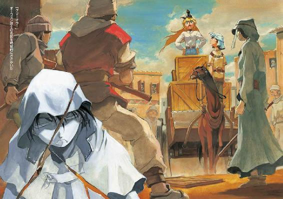

| 魔術士オーフェンはぐれ旅 新装版4 | |
| 秋田禎信 | |
| ティー・オーエンタテインメント (2011) | |

この作品は縦書きでレイアウトされています。
また、ご覧になる機種により、表示の差異が認められることがあります。
一部の漢字が簡略字で表示されていることがあります。
イラスト：草河遊也Ｙｕｕｙａ Ｋｕｓａｋａ
デザイン：ヴェイアＶｅｉａ
◆プロローグ
落ち着かず、彼は椅子の上で身じろぎしていた──さっきから繰り返して、ずっと。
実際、落ち着くに足る部屋というわけではない。言ってみれば、そこは納屋のようなものだったからだ。いらなくなったような家具を整理もつけずに押し込めた、そんな部屋である。椅子に座っているが、その椅子も誰かが勧めてくれたというわけではない。チェストと鏡台の間に斜めにはさまっていたものを引っぱり出して勝手に使っているのである。
天井のガス灯が、頼りなげに揺れている。街中でもないのにガスまであるというのは、予想外ではあったが、不安でもあった。整備されていない器具は必ず壊れる。ガス灯の場合、爆発するか息ができなくなるか。
だがそんなことは、どうでもいいのだ──
ドーチンは、また身じろぎした。屋内でも脱がない毛皮のマントと、分厚い眼鏡をかけている。大陸南方に自治領を持つ少数種族、いわゆる地人の少年である。身長は百三十センチほど──ずんぐりした顔立ちと、ぼさぼさの黒髪。民族衣装である先のマントとともに、地人種族の典型的な姿だった。
さっきから彼は気弱そうに、ちらちらと横を盗み見るようにしていた。
そちらには、やはり椅子に座ってぼんやりとしている兄がいる。ぼろぼろになった毛皮のマントは同じだが、眼鏡はなく、代わりに長剣の鞘を抱えていた。幾度となくあくびをしている──ということは、この不自然な状況に兄は気づいていないということになる。
と──どんどん！ と乱暴に、扉がたたかれた。
なにかを咎められたような心持ちになって、ドーチンはびくりとそちらを向きやった──扉は、二回だけたたかれて、そのあとに息を吐くのもめんどうだと言いたげな、煩わしそうな声が聞こえてくる。
「おい、もう出るぞ！ 呼びに来なけりゃ出られねえのか!?」
当たり前じゃないか。
だが、そう思いながらもなにも言い返さずに、ドーチンは、のろのろと立ち上がった。
そして、いつものようになにも考えていなさそうな兄も、いつものようになにも考えていなさそうに、跳ねるように椅子から飛び降りていた。
それはつまり、よくあることだった。
「......とは思わないけどね」
皮肉げに、独りごちる。ただ別に誰に対しての皮肉かは、よく分からない。自覚もない。
ドーチンはともあれ、嘆息していた。と、横にいる兄──ボルカンが、うんうんとうなずいている。
「分かるぞ、ドーチン」
「......なにが？」
力なくドーチンが聞くと、ボルカンは、ぐっ、と拳を握って断言した。
「ひさびさの大仕事に、思いっきり腕が鳴りつつ、そのやる気を押し隠して鼻息の代わりにため息をつくその闘志！ 兄にはよぉく分かる」
「......どこの世の中に、そんな回りくどいことをする人がいるんだよ」
ドーチンはうめいたが、ボルカンは聞く耳ないようだった──まあこれが、よくあることその一だ。
再びため息などつきつつ、ドーチンはあたりを見回した──
よくあることその二。郊外の宿屋は、決して安全な場所ではない。
（......つまり、ぼくらでも簡単に納屋に忍び込めるような宿は、ね）
また胸中で独りごちる。
宿屋そのものが、いわゆる盗賊の住処になっていて、泊まり客から旅費を強奪する。考えてみれば、誰でも思いつく、当たり前の商売ではある。となれば彼らが今いるその宿も、まあ、言ってみれば月並みなことを考えついた月並みな連中のアジトだったということに過ぎない。最近ではそう多くもないはずのそういう宿に、わざわざ足を踏み入れてしまったことも、よくあることと言えば、よくあることだろう。よくあることその三。
そしてその四──そんな宿をねぐらにする連中と、なぜか兄が意気投合してしまうこと。
その五。自分がそれにつき合わされていること。
その六。そんな得体の知れない人殺しどもの真ん中で、逃げ出す隙もないということ。
......そのうちのみっつくらいまで重なっていれば、もはやよくあることでもなんでもない。ドーチンはまた、ため息をついた。
「準備はできたか!?」
律儀に、大声で叫ぶ者がいる。とはいえ、別にドーチンに向かって言ったというわけでもなく、全員に言ったのだろう──それに応えて、あちこちから一斉に声があがる。
「おう！」
「腕が鳴るぜ！」
（......鳴るもんか）
毒づいて、あたりを見回す。
宿屋の一階は食堂やら酒場になっているものだが、盗賊宿になれば、つまり集合準備場所とでも呼ぶのだろうか。そんな役割も負うようだった。散らかった食堂に集まっているのは、総勢十五人──ドーチンやボルカンも含めての人数である。その各々が（ただしドーチンを除いて）武装している。得物はまちまちだった。きちんと剣を下げている者もいれば、包丁と大差ない不格好な装備の者もいる。なにを勘違いしているのか、分銅のついた鎖をじゃらじゃらと鳴らしている者までいた。
ただ言えるのは、仮に警察に見つかった場合、なにか言い訳ができるような集団ではないということだ。例えば、こんなような──「ああ、すいません。ぼくら、金物マニアの定例集会なんですよ」
それでもドーチンは、警察に見つけてほしかった。こんな郊外を巡回しているはずなどないと知りつつも。
ちら、と兄を見る──ボルカンは嬉々として、さっきから意味もなくうなずいている。昨晩、納屋にあった生野菜を食い散らかしているところを見つかって、弟を蹴り出して逃げ出そうとしていたときからは考えられない表情だった。剣を鞘ごと構えて、堂々と叫んでいる。
「うむ──このマスマテュリアの闘犬、戦士ボルカノ・ボルカンの手にかかれば、どのよーな仕事であろうと薄氷を踏み抜くがごとし！」
「......明らかに間違ってるけど、かえって正解だね」
ドーチンは横からつぶやいたが、気づいた様子もなく──それは周囲も含めてのことだが──ボルカンが続ける。
「この俺の助力があれば、もし仮に例えばの話だが仮定として仮想敵を設定して言及すると、道をふさぐ敵が甲斐性なしの赤貧極悪魔術師であろーと、乾燥ワカメを入れすぎ殺すことも容易であろう！」
「あー、確かに」
「ついつい入れすぎてあふれたりするんだよな」
周りの男たちが、いまいち狙いの外れた同意を繰り返すのを見ながら、ボルカンは満足げに鼻息を吹いている。
「まあなんにしろ」
と、さっき準備はいいかと叫んだ厳つい男が、剣を肩に担ぎつつ言った。
「人手はあるに越したこたぁねえからな。食い散らかした食い物の分、働いてもらうぜ」
（......つまり、ただ働きってこと？）
声には出さずに聞き返して、ドーチンは自分で自分に答えてもいた。答えは分かり切っていた。
ついでに言えば、少なくとも彼ら全員が手にしている得物の数々を見れば、これから行うことがまっとうな仕事でないことも明々白々である。
と──
いきなり、部屋の中に静寂が訪れた。さっきのつぶやきが声に出ていたかとぎょっとし、ドーチンはあたりを見回した。が、そういうことでもなさそうである。盗賊たちは気をつけをするように、宿屋の奥の扉に向かって整列しはじめている。
その扉が、あっさりと開く。
出てきたのは女だった──特に特徴があるわけでもない。そんな女だった。気だるげな、というよりは明らかにめんどくさそうな目つきである。街中ですれ違ったとして目を引くわけでもないだろう。ただまあ、武装さえしていなければ、ということだが。
年齢は、二十四、五というところか。短く切った髪に寝癖がついている。明らかに手入れされていない顔を撫でるようにしながら、彼女は大きくあくびした。多少サイズの大きい（つまり男物なのだ）皮鎧を身に着け、腰に剣を下げている。ずらりと並んだ男たちを、まだ半分寝ぼけた眼差しで見回し、めんどくさそうに問いかける。
「もう準備、いい？」
「もちろんでさあ、お頭！」
頭を下げながら、盗賊のひとり。その気合を無視して、軽く女──お頭がうなずく。彼女はすたすたと、彼らの間を歩いていく。
彼女は懐から布を取り出すと、器用にそれを頭に巻き付けた。空色の、まあ清潔そうな布だ。オーガンジーかな？ などと一瞬思う──が、幻想だろうと、さっさと忘れることにした。
そして女が宿屋を出ていく。盗賊たちの視線が、その背中を追った。
「じゃあ、行くぞっ！」
誰が言い出したのか、声があがる。
「......で、目的地はどこなんですか？」
ドーチンは不安に思いながら、手近な男に聞いてみた。その男は──なにに使うつもりかあえて知りたくはないが──手斧のようなものを大事そうに抱え、一言で答えてきた。
「カミスンダ劇場だ」
◆第一章 それは活動を開始した
夜空は少なくとも美しくはあった。ただそれ以上に役立ちはしないわけだが。
燃える炎を、ただひたすらに見つめている。三人、爆ぜる火を囲んで座っていた。たき火の中には、串に刺して、干し肉が一切れあぶられている。
「............なぁ」
オーフェンは、ぽつりとつぶやいた。
「......どうする？」
二十歳ほどの青年である──どこか上がり目で、はっきり言えば目つきが悪い。が、今はそれ以前に、どこかやつれたような眼差しをしていた。黒髪、黒目、その三人の中にあっては唯一、ごく平均的に貴族外の風貌をしている。着ているものは黒ずくめで、その胸元には、剣にからみついた一本脚のドラゴンの紋章──即ち大陸黒魔術の最高峰《牙の塔》の紋章が下げられている。
彼のつぶやきに答えたのは、右隣でひざを抱えている少年である。
「どうするって言ったって......事実はひとつじゃないですか」
細い金髪に、緑色の双眸──年齢は、十四、五というところか。彼もまた黒ずくめの格好をしているが、紋章は身に着けていない。彼が着ている黒いシャツとマントに関しては、ほぼカケラも似合ってはいなかった。
そして最後に結ぶのは、そのさらに右隣──つまり火を囲んで、最初のオーフェンの左隣にいる少女だった。十七歳ほどの、ブロンドを伸ばした少女である。ぼろぼろのジーンズのひざに、真っ黒な毛並みの子犬を乗せて、ほかのふたりと同じく、ぼんやりと炎を見つめている。
「問題は、この一切れを誰が手に入れるかよね......レキはいつも、なんにも食べないからいいけど。光合成でもしてるのかしら」
と、ひざの子犬の頭を撫でる。
子犬は目を──鮮やかな緑色の目を──閉じ、少女の手のひらに頭を擦りつけてみせた。
「三等分じゃ......駄目なんですか？」
これは金髪の少年である。彼のほうに、ちらりと顔を上げて、オーフェンは低い声音を出した。
「マジク......」
というのが、その少年の名前だった。そのマジクに、彼は続ける。
「三人ともが一口ずつ食って、全員仲良く飢え死にするか──それとも、ひとりが体力をつけて、近くの村に救援を呼びに行くかだ」
「近くの村って......？」
「二十キロ先にある」
オーフェンは虚ろにつぶやきながら、その視線を少し上げた。
彼らが火を囲んでいるのは、街道を少しはずれた草地である。大陸の二割を覆う広大な樹海──《フェンリルの森》も、もう見えなくなり、これより北方に進めば、だんだんとその地形は、みずみずしい森林地帯から荒野へと変じていくことになる。ここはちょうど、その中間というところだった。
そして街道の先、二十キロ──正確には二十三キロ少々──先に、人里がある。
そちらのほうを見やり──オーフェンは、さりげなく付け加えた。
「ちなみに俺が、一番体力があるだろーな」
「いやいや」
干し肉からは視線をそらさずに、マジクがすかさず続ける。
「お師様はゆっくり休んで、若いぼくに希望を託すべきですね」
「女の子は......大事にされるべきよね」
少女のつぶやきはその声の小ささに比べて、口調は強かった。オーフェンはそのつぶやきに、ぴくんと耳を動かし──一瞬だけマジクと視線を合わせて、うなずき合った。
『却下』
男ふたり同時に、即座に告げる。
「なんでよーっ!?」
立ち上がって悲鳴じみた声を上げる彼女を、オーフェンはじろりと横目で見上げると、
「ひとことで言えば、全部お前の責任だからだ」
「納得できないわ！」
立ったまま、頭を抱えてかぶりを振る。いきなり立ち上がったせいで、子犬──レキは地面に落っこちていた。たき火のそばで、ぽかんとしている。
その上で少女は拳を握り、力説した。
「責任というのは過失のことを言うのよ！ 不可抗力は認められるべきだわ！」
「ほほう......」
オーフェンは静かにうなずいた。
「ありったけの食料を使って食えない料理をこさえたのは、不可抗力だったと主張するわけだな？ クリーオウ」
「食べられない料理だなんて！ 不当な決めつけよ！」
彼女──クリーオウは、ずい、と詰め寄ってきた。指先をこちらに向け、続ける。
「オーフェンだって、二口くらいは食べたじゃない！ なら全部食べることだってできたはず──」
「あんな畑にまけば草が枯れそーな料理だって、半日なにも口にしてなけりゃ、食ってみようかって気にもなるわい、馬鹿たれ！」
いつの間にかオーフェンも立ち上がって、クリーオウと対峙していた。お互い、突きつけ合った指先が少し触れている。夜風が悲しい音を立てて、吹き抜けていった。
「ふたりとも、まだまだ元気そうですね」
ぽつりとつぶやいたのは、マジクである。
「ならぼくが──」
ざぐっ！
............
干し肉のほうに手を伸ばしかけたマジクの指先をかすめて、ナイフが飛んだ──そしてそのまま、地面に刺さる。蒼白になって、マジクが顔を上げた。
オーフェンはナイフを投げたポーズを取ったまま、ごくごく平静に言い放った。
「死を覚悟したことはあるか？」
「いや......そんな、干し肉一切れで......」
「時と場合によるわね」
その声は、無論クリーオウのものだが──ほんの一瞬で、マジクの座る向こう側にまで移動している。一抱えほどある石を両手で持ち上げ、構えていた。完全に据わった眼差しで、マジクを見つめている。
すざっ──とマジクが、完全にビビったように後退りする。
それを見てもさして騒がず、クリーオウは淡々と続けた。
「馬車は壊されちゃったからタフレム市から歩きづめ──怪しげな宿に泊まったら路銀はすられるわ、それで宿代が払えなくて死ぬほどただ働きさせられるわ、残った食料でわたしがせっかく料理してあげたのにみんな食べないわ、これだけあれば、そろそろ死人が出たっておかしくない頃合いよね......」
「ひとり死ねば、食いぶちが減るなぁ......」
オーフェンも言いながら、地面に刺さったナイフをのろのろと拾い上げた。刃の背を自分のほおにこすりつけながら、弟子に向き直る。
「ああああああああ」
這いつくばるように後退して、マジクが泣き声じみた声を上げる。いや実際、泣き声だったのかもしれないが。少年はやけくそぎみにわめき散らした。
「分かった！ 分かりましたよ！──ぼくはいいですから、お師様とクリーオウとで分けてください！」
マジクはそう叫ぶなり、拗ねるように、完全にこちらに背を向けた。炎の明かりを背に受けて、地面にあぐらをかきぶつぶつと毒づいている。オーフェンはそれをしばらく眺めやってから──着ているジャケットの内側に縫いつけてある鞘にナイフを収めた。
そして、クリーオウに向かい合う。彼女もまた、石をどすんと落としたところだった。
「さて......」
オーフェンはなんとなく構えを取りながら、クリーオウに言った。
「マジクの英雄的犠牲によって、戦局は一気にクライマックスを迎えたわけだ......」
彼女もこちらを見返し、身構える。
「あとは、わたしたち、どちらが死ヌか、ね......」
じり、とオーフェンはブーツの裏で地面をこすった。手刀を構えるクリーオウに、腰を落として拳を向ける。
「ついにこの時が来たか......」
オーフェンは覚悟を決めながら、低く独りごちた。遠い眼差しで、眼前のクリーオウに幻影を重ねる。
「我が子孫の存亡をかけても......ここで死ぬわけにはいかない」
「お師様......」
勝手に聞いていたのか、肩越しにこちらを見てマジクがぼやく。
「干し肉一切れで、そこまで盛り上がんないでください」
それは無視して、オーフェンは叫んだ。
「おっしゃ、決着をつけるぞ、クリーオウ！」
「かかってらっしゃい！」
クリーオウが叫び返した、その瞬間──
「ぎゃあああああああっ！」
つまり、そんないつもの夜のことだったのだが──
いずこからか、派手な悲鳴が夜空に響きわたったのだった。
──そして悲鳴は、無辺の星空へと消えていった。
勝負は一瞬でついていた。悲鳴に気を取られたクリーオウを、正々堂々はたき倒す。地面に顔を突っ伏すように転がっている彼女を尻目に、オーフェンは誇らしげに干し肉の刺さった串を取り上げた。
「勝利とて、空しいものだ......」
「オーフェェェェン!?」
がば──と、クリーオウが起き上がる。顔面から倒れたせいだろう、鼻の頭をすりむいている。
少し焦げている干し肉を口の中に放り込もうとした、その一瞬前に彼女は、こちらの腕に取りすがってきた。同時にわめき立てる。
「今のなし！ 無効よ！」
「な、なにぃ!? てめ、負けたからってそーゆう、いさぎよからぬことを──」
「お師様っ！ クリーオウ！」
と──
横から怒鳴られて、オーフェンはそちらを向いた。マジクが、どこかへ走り出そうとしている格好で、硬直している。
干し肉をクリーオウに奪われないよう、高く掲げて背伸びしつつ、オーフェンは聞いてみた。
「......どっか行くのか？ マジク」
「どっか、じゃないでしょぉっ!?」
なにやら追いつめられたような面持ちで、マジクが叫び返してくる。
「聞いてなかったんですか？ 今の悲鳴！」
「聞いてたぞ」
「聞いてたせいで、一回殴られたわ」
こともなげに、クリーオウも続ける。マジクが両手をわななかせるのが見えた。
「聞いてたんなら、分かったでしょう!? 今の、悲鳴でしたよ！」
「ふむ......」
確かに、それはそうだった──つまり悲鳴だった。声の大きさや、反響のタイミングからして、そう遠くない。ついでに言えば、かなりせっぱ詰まった声でもあった。
少しばかり考え込み──オーフェンは、ぱっと顔を輝かせた。
「そうか！ つまり、お前いつの間にか、悲鳴を聞くと発奮して駆けずりまわる変態体質になったんだな！ いろいろとストレスのたまる生活してると、たまにあるんだ、そーゆうことが！」
「やったわマジク！ とうとう大人ねっ！」
クリーオウがすかさず歓声をあげる。が、マジクはどうやら気にくわないようだった。
「違うううううううっ！」
地団駄踏みながら、絶叫する。
「そーじゃなくってっ！ 普通こーゆう場合、助けに行くもんでしょう!?」
マジクは、もうどうやら堪忍の限界とでもいうような表情で、少々泣いてすらいたようだった。ひとけのない夜のしじま──これだけ大声を出せば、先に悲鳴をあげてきた者のところにも、少年の声はとどいたろう。悲鳴の主がこれを、何事かと判断したかは神のみぞ知るというわけだ──ただし、この大陸に神はいないが。
とにかくマジクを眺めながら、オーフェンは片手で髪をかき上げた──もう一方の手は、ジャンプを繰り返しているクリーオウから干し肉を守っている。嘆息など漏らしつつ、オーフェンはつぶやいた。
「......分かってるよ、ンなこと。ちっとからかっただけだ」
「からかうって......」
どっと疲れがこぼれだしてきたような様子でマジクがうめく。少年はそのまま続けた。
「とにかく、緊急事態ですよ。なんだか分からないですけど、助けに行かないと──」
「マジク......」
オーフェンは再び、嘆息した。
しつこく飛び跳ねているクリーオウを適当に押しのけつつ、遠く──芸もなにもない、ただまっさらな星空を見上げる。
彼は、地平に近い場所にかたまっている星の群を、空いているほうの手で指さした。
「あの星の方向に、トトカンタ市がある」
「......ええ」
小走りになる姿勢で足踏みしながら、それでもマジクは律儀にうなずいてきた。オーフェンは、うんとうなずいて、
「俺たちがトトカンタ市を出てから、もう三か月が経ったわけだな......」
「そのくらいになりますか」
「ああ。いろいろなことがあった......」
指折り数えて、続ける。
「まず、アレンハタムじゃ笑う人形にしこたま殴られた。キンクホールとかいう村では亡霊やらトカゲやらに襲われて、《フェンリルの森》にいたっちゃ、キムラック教会の殺し屋＆ディープ・ドラゴンの襲撃ときた。それが終わったら終わったで、どっかの馬鹿が保護森林を焼き払ったせいで逮捕され、タフレム市でちったぁ骨休みできるかと思いきや、着くなり入院、そのあとも四六時中、暗殺者と取っ組み合いばかりやってたような気がするぞ。しかもそんだけのことがあったってのに、一文の得にもなってないばかりか、福ダヌキどもの借金も未回収だ」
そこまでオーフェンがつぶやくと、マジクは怪訝そうな表情を見せながらも、はあ、とうなずき返してきた。
「......で、それがどうかしたんですか？」
「だからっ！ たった三か月の間にこんだけのことがあったってのに、『それがどうかしたんですか』の一言で済まされちまうよーな生活から脱却したいんだよ！」
オーフェンは干し肉を刺した串を握りしめながら絶叫した。
「なんでこんなトラブルが日常茶飯事になってるんだよ！ 俺は平穏が好きなんだ！ 今後、自分からやっかいごとに首を突っ込むようなまねはしねえからな！」
一気にまくし立てるようにそう怒鳴ると、ようやく落ち着いて吐息する──そしてふと、干し肉を見やった。
が、串が途中から折れて、なくなっている。
横を向くと、いつの間かクリーオウが折れた串の先のほうを持ってＶサインを出していた。串にはもう肉は刺さっていない──彼女がくわえている。
「おどりゃぁぁぁぁぁぁぁっ！」
オーフェンは叫びつつ、彼女に飛びかかろうとしたが──それを背後からベルトをつかんで止めたのは、マジクだった。
「ちょっとお師様っ！ 落ち着いてくださいよっ！」
「これが落ち着けるかぁぁぁぁっ！」
「そんな、泣きながら叫ぶほどのことじゃないでしょう!?」
「首から下を土に埋めてニワトリに目玉つつかせてやる！ 止めるな！」
「止めますよ、そんなもの！ とにかく、落ち着いてくださいっ！ クリーオウだって、本気で独り占めなんてしませんよ！」
言われてオーフェンは、なんとか踏みとどまると（つまりマジクを引きずっていたのだ）、感情を抑制するぎりぎりの表情で、クリーオウのほうを見やった。
距離にすれば三メートルほど先である。彼女はもう肉をくわえてはいない。手に持っていた。いつの間にかレキを足下に従えて、彼女は悠然とこちらを見返している。嘲るように笑い、ふッ、と小さく吐息し、やれやれと肩をすくめると、そのまま──ゆっくりと干し肉をかじりはじめた。
「あの女を殺して食うぅぅぅっ！ 止めるなぁぁぁっ！」
「だから止めますってばぁぁぁっ！」
叫びながら、またずりずりと進みはじめた、そのとき──
悲鳴が響いた。再び。
「ぎゃああああああっ！」
「............」
オーフェンはまた立ち止まると、夜空を見上げるようにした──まあ無論、その悲鳴の主が空を飛んでいくということはない。それでもしばらく待ってから、オーフェンはつぶやいた。
「案外、近いな......」
「そうですね」
まだベルトはつかんだままの格好で、きょとんとマジク。クリーオウもびっくりしたようで、それらしい人影でもないかとあたりをうかがっている。ただし肉をかじりながら。
が──オーフェンはひとり、あごに手を当てて、真剣な顔でうなずいた。
「......そうだな」
と、考え込んで顔をしかめる。頭の中でぐるぐると、思考の波が渦を巻いた。そして渦の真ん中から、ひとつの答えが浮上してくる。
「よし！ 行ってみよう！」
オーフェンはきっぱりと、ふたりに叫んだ。えー、とふたりとも、面食らったような声をあげてくる。
「なんで今さら？」
「さっきは、あんなに嫌がってたじゃないですか」
聞いてくるクリーオウらを、オーフェンは手を上げてにやりとしながら制止した。ちっちっ、と指を振って、続ける。
「だから、よぉく考えてもみろって。簡単なことだ──悲鳴。イコールやっかいごと。どうやらなにかに襲われたらしい。なにが起こったか知らんが、そー血なまぐさいこともなかろ。野犬かなにかか？ どうせもう決着がついた頃さ。そこに俺らが到着して──」
「戦いで傷を負っているはずのそいつを葬り去るの？」
「............」
しごく真面目な様子で口をはさむクリーオウに、オーフェンは一瞬口ごもったが、
「なんでだ。そうじゃなくて、助けに来たんだが間に合わなかった、てな顔をしとくんだよ。そーすりゃ俺らもお礼のひとつやふたつにありつけるかもしんねーだろ」
「......どちらにせよ、すっごく卑怯じゃないですか？ それって」
白眼になってこちらを見つめながら、ぽつりとつぶやくマジクの一言に、オーフェンは、やはりまた一瞬口ごもりかけた──ただし、今度のはさっきのとは少し違って、ほおに一筋、冷や汗のようなものが落ちていく。
だが、それは決然と無視して──オーフェンは、自分のあごに当てていた手をすっと下ろした。マジクの肩をぽんとたたき、もう一方の手で一直線に再び星空を指さす。
満天の輝きが、地上を見返してきているようだった。
「マジク。この大自然を見ろ」
「はあ......」
うろんな様子で返事をするマジクに、オーフェンはあくまでゆっくりと続けた。
「自然の偉大さを理解したそのとき、お前にもきっと分かるようになる......」
「発想の卑小さを大自然の規模に照らし合わせたところで、言い訳にはなりませんよ」
冷たい眼差しはそのままで、マジクは意外とあっさり言い返してきた。
ひくり──と、ほおがひきつるのを感じる。
ひきつったほおを隠すようにそっぽを向いて、なにごともなかったかのようにオーフェンは言い直した。
「マジク。空の色の深さを見るんだ。世の中の奥深さは、時に真理と思えることを裏切ることも──」
「ねー。そんなことよりさぁ」
と、言ってきたのはクリーオウである。そちらを見やると、少女はレキを頭に乗せて、少ない手荷物をてきぱきと片づけている。
「早く行かないと、間に合わないんじゃない？」
「ああっ！ それもそうだ！」
オーフェンは、捨てるようにマジクの肩をはなすと、自分の荷物に取りついた。すり切れた革のダッフルバッグである。出していた携帯毛布を適当に詰め込みながら叫ぶ。
「こーゆうのはスピードが勝負だ！ 謝礼をもらいたおして幸せになるぞ！ おらおら、たき火の処理もきちんとしとかねえと、森林レンジャーに怒られっぞ！」
「......《塔》に残ってたほうが良かったのかな、ぼくって......」
背後から、マジクがちょっと後悔したような声でつぶやいていたが、オーフェンは完全に無視して、まだ見ぬ謝礼の額を数え上げていた。
悲鳴が聞こえてきたときから思っていたことだったが、声はさほど遠くから響いてきたのではなかった──せいぜい、二、三百メートルというところだろう。近くに森があるため見通しはよくないが、方向はだいたい特定できる。そのぐらいはっきりとした、よく通る悲鳴だった。まあ、悲鳴というのはたいていそうだが。
「にしても......」
小走りになりながら、オーフェンはぽつりと自問した。
「こんな人里離れたところで、誰が襲われたってんだ？」
旅行者の数が急激に増えたのは、ここ近年のことである──
理由としては、街道が完全に整備されたことと、それに伴い、大陸の完璧な形での地図が比較的安価に販売されるようになったこと、かてて加えて、森林レンジャーと市街警察の連携が機能しはじめたことによって、一昔前に比べれば、都市外の治安も保証されてきていた──そんなことが挙げられる。
とりわけ街道の整備が大きな理由となるわけだが、それには街道沿いの宿泊施設の増大も含まれている。昔のように粗末な宿で法外な値段を要求される──どころか、宿自体が盗賊たちのアジトだったりする──ことも、最近ではそれほど多くない。よほど金に困っているのでもない限りは、野営する必要もなくなっている。
逆に言えば、宿代すらままならない連中を盗賊が襲うということもないのである。
「それに......わざわざ野宿なんてしてるような連中じゃ、謝礼なんてロクに払えないかもしんねえなぁ」
「わたしたちみたいにね」
ぽつりとクリーオウが付け加えるが、それは無視した。ちなみに彼女の荷物は、真っ黒な合成革のナップザックひとつである。色気も素っ気もカケラほどもない代物だが、タフレム市で世話になっていたレティシャが昔、野外訓練に使っていたものをそのまま譲ってもらったので、仕方ない。
「謝礼がないんなら、走って疲れる分だけ損なんじゃないですか？」
彼らからやや遅れてついてきているマジクが、それでも今の会話を聞いていたのか、声をあげる──
オーファンは、振り向いて答えた。
「現金がなければ現物でも可。特に食い物」
「タカリのくせにずーずーしいですね」
半眼でぼやく少年に、オーフェンは少し顔をしかめた。
「......お前、今回はやけにからむな」
「からみもしますよっ！」
と、叫んでくる。
「タフレム市じゃあ《牙の塔》の上級魔術士なんて出てきて、しかもそのひとが結構お師様のことちやほやしてくれたりするもんだから、お師様ってあー見えてすごい人だったんだなぁ、なんて思ったりしてたのに」
ぶつぶつと毒づくマジクに、オーフェンは朗らかに笑ってやった。
「はっはっ──馬鹿だなぁマジク。過去がどーだったからといって、現在の生活が変わったりはしないんだぞ」
「実はそれって......すごく悲しいせりふじゃないですか？」
重そうに荷物を抱えて走る、マジクの一言。思い当たることも多々あったが、あえて無視することにした。
三人の中では、マジクが抱えている荷物が一番多い──というか見たままを言えば、かたまって宙を飛んでいる荷物の隙間に彼がはさまれているというほうが近い。言うまでもなく、その荷物の大半はクリーオウの持ち物なのだが、これがお約束通りに服その他なのかというと、そうでもないのだった。
荷物の中で最も目立つのは、やはり一番上の鞄から、はみ出すように突き出している剣の柄である。二週間ほど前に、とあるいきさつでなくしてしまったものなのだが、そのあとでレティシャが手を回して回収してくれたらしい──その時にオーフェンはきっぱりとはた迷惑だと言い放ったのだが、クリーオウは嬉々として返してもらい、レティシャに抱きつきすらした。あとは、やはり同じように残骸となった馬車から回収された身の回りの品などである。
なんにしろ、そうして走っているうちに──
道が開けてくる。
悲鳴が聞こえてきたほうに見当をつけ、街道から少し外れて林間地を走ってきていたのだが、その木々がまばらになりはじめていた。月明かりの下、ぼんやりと青白い夜の闇が世界を包んでいる。その中に巨大な建物のシルエットが見えた。
「......こんなとこに、あんな建物なんて、地図にあったっけか？」
ぽつりとつぶやきながら、オーフェンは足を速めた。
大陸に出回っている地図は、そのほとんどが魔術士同盟発行のものである──これは別に魔術士たちの測量技術が優れていたとかいうことではまったくないのだが、大陸規模で一貫した組織力を持っているのが、同同盟くらいしかなかったのだ。ほかにあるとすれば貴族連盟下にある派遣警察だろうが、彼らが旅行者のための地図を発行するわけもない。
だが魔術士同盟が編纂しただけあって、大陸地図の多くは北方と南方が極端に粗雑なものになっている。どちらも同盟の組織力が及ばないか、もしくはあまり興味を持っていない地域である。だがそれにしても──
と、オーフェンは眼差しを細くした。行く手に見える建物の影は、へたをすればちょっとした神殿ほどもある。これだけ巨大な建造物を見落とすことなどあるわけがない──その上まだこのあたりは、魔術士が苦手とする教会総本山の影響下ではないのだ。
「オーフェン...」
と後ろから、クリーオウが言ってくる。
「なんか、乱闘......してるみたいよ？」
「ああ」
それは彼も、気づいていた。建物の近くで、大人数が乱闘しているのが夜目にも分かる。ただ正確な人数までは不明だったが。
と──
「ぎゃあああああああっ！」
三度、悲鳴が響きわたった。しかもそれは、乱闘している建物のほうではない──既に通り過ぎようとしていた、すぐ横のしげみの中からだった。
「な!?」
驚愕の声を発して、オーフェンは立ち止まった。そのしげみのほうに向き直る。と、その中から、ばたばたと人影が飛び出してきた。
「きゃあ！」
クリーオウが、悲鳴じみた声をあげる。その人影は、ひとことで言えば血まみれだった。傷だらけで、身に着けている皮鎧もずたぼろ、手にした剣も折れている。
男はしげみから転がり出て、ふらふらとこちらに近寄って来ようとしてから──その場にばったりと昏倒した。いや絶息した。そのまま、動かなくなる。
そして......
五感よりも霊感からの指図で、オーフェンは瞬時に構えを取っていた。腰をやや落とし、左肩を前に出す。腰溜めにした右手の拳を握りしめながら、放つべき魔術の構成を思い浮かべた。
それと同時──だろう。しげみの中から、黒い影が飛び出してくる！
負傷した男などとは比較にならないスピード、威圧感で、それはこちらへと躍りかかってきた。大きさはさほどでもない。一メートルほどの大きさの黒い影である。その影の中心を見据えて、オーフェンは叫んだ。
「我は放つ光の白刃！」
突き出した右手の先から、膨大な白光がほとばしる。帯電する熱衝撃波は一直線に影を貫くと、一気に爆発、炎上した。爆音が轟く中、一歩退がってオーフェンは、力を失って地面に落ちる影を見やった。
黒こげになって身動きもしないそれは──犬のような形をしていた。ただし、野犬の類ではない。それだけははっきりと知れる。
「お師様......」
ぽつりと、マジク。いまいち緊張感のない声で、彼は続けた。
「変わった犬ですね」
「......そーだな。背中にコウモリの羽根なんて生えてるもんな」
「なに落ち着き払ってんのよ！」
両手をわななかせて、クリーオウが叫んでくる。自分こそ限りなく犬離れした犬らしきものを頭上に戴いているくせに、混乱したようにぶんぶんと腕を振り回して続けた。
「犬なわけないでしょ！ なんなのよ、これ!?」
「ンなこと俺に言われてもなぁ......」
ほおを指でかきながら、オーフェンは犬（じゃない）の死体からは視線を外し、建物のほうへ──そして、その近くで乱闘している連中のほうへと向き直った。
「あいつらに聞きゃ、分かるんじゃねえか？」
言われて、肩を少しコケさせて、クリーオウがつぶやいてくる。
「......そりゃそうでしょうけど......なんでそんなに落ち着いてるのよ」
と、これはマジクに聞いている。少年は困ったようにいったんこちらを見て、
「いやなんとなく。お師様が落ち着いてるから、まだあわてなくていいんだなと思って」
「そーゆう問題？」
半眼で、クリーオウ。それを見ながらオーフェンは、静かに腕組みした。
「......いや、まあこの程度のバケモノならな」
つぶやくと、意味が分からなかったのか、クリーオウが怪訝そうに視線を返してくる。
腕組みをして、オーフェンは告げた。
「真の恐怖と混乱はだ、ぐろげちょなものがいきなり飛び出してきたから起こるってもんじゃない」
「............？」
「一見まともそうに見えながら、実は信じがたいわがままだったりじゃじゃ馬だったりすることによって引き起こされるんだ」
「どういう意味よっ！」
クリーオウが叫ぶが、説明する気にもならない。オーフェンはあきらめの吐息をつくと、再び建物のほうへと進みはじめた。建物の屋根からは尖塔のようなものが突き出して、月に向かって拳を突き上げているようにも見える。
「それに、危ないトコを助けて謝礼プランは、まだ消失していないぞ。なるたけ敵が減ってから着くように、ゆっくり行こう」
「しかも、せこーいっ！」
声をあげながらも、ちゃんとついてきている。それもゆっくりと。
「......でもまた結局、巻き込まれちゃいましたね」
マジクがつぶやいてくる。彼のほうに顔を向け、沈痛な面持ちでオーフェンは答えた。
「......このメンツで平穏な人生を歩もうと考えたこと自体が馬鹿だったのかもしれんな」
──その程度ですまされてしまうあたりが、やっかいごとに慣れきってしまった人間たちの、少し悲しい現実なのかもしれなかった。
◆◇◆◇◆
建物の屋根には、一棟、さほど高くない尖塔が突き出している──月の光を最も浴びるその塔は、思いの外明るかった。なにか機能のある塔ではない。ただ建物のデザイン上、なんとなく設計された塔に過ぎない。
塔は無論のこと古びて、傾いている。柱も壁も、塔は月明かりで照らし出されている。
その塔の上方に、窓が開いていた。が、月の銀光が煌々と射し込むその窓の中で、なにかが蠢いていたとしても、誰も気づかない──
ことり──と、青白い指が、傷だらけになった古びた窓枠をつかんだ。
窓枠をつかんでいるその手のほかは、部屋の中に引っ込んでいて、月にさらされてはいない。ただ闇の中で、興奮するように蠢いている。
......音も立てずに、それは身じろぎした。
恐れたのではない──いや、恐れたのかもしれない。騒ぎの中で、それは目を覚ましたのだった。
そして、かねて命じられていた通りに、それは活動を開始した。
◆第二章 静寂はむしろ歌うように
ぢぎぃぃんっ！
かん高い音が響く。犬らしきものに剣を噛み取られ、罵声をあげながら男が転倒した。急いで起き上がろうとするその男に、別方向からほかの犬が飛びかかる。絶望的な声で、男が絶叫した──
が、その瞬間。
「我は放つ光の白刃！」
オーフェンが放った光熱波が、光芒の矢のごとくその犬を撃ち抜いた。さっきのと同じ、羽根の生えた大型犬である。眼球がなかば飛び出し、奇怪な形相となっている。が、射抜かれればそれだけのことだった。衝撃に吹き飛んで、力なく地面に落ちる。
ごうっ──と燃え上がった仲間に、もう一頭の犬がうなり声をあげる。犬はすぐさま標的をこちらへと変更すると、けたたましく咆哮をあげ、突進してきた。その真正面から、オーフェンは叫び返した。
「我導くは死呼ぶ椋鳥！」
指し示した指の先から、真正面の犬に向かって、破壊振動波が収束していった。不可聴の音に、鼓膜がかゆくなる。犬は突進の途中で突然身をすくませると、ぎゃんっと一声叫んで、そのままその場に倒れた。同時に、その身体中の皮膚が細かく裂けて、鮮血を噴き出させる。
地面をのたうちまわる犬に駆け寄り、オーフェンは思い切りかかとを打ち下ろした。頑強なブーツが犬の頭を捉え、そして沈黙させる。動かなくなった犬の口蓋から、どす黒い液体がだらりとこぼれた。
と、ちょこまかと後ろからついてきていたクリーオウが、声をあげる。
「......オーフェンて、えぐーい」
抗議するように半眼になっている。それに併せてというわけでもないがオーフェンも似たような視線を返し、彼女に向かって口をとがらせた。
「どうしろってんだ」
「もっとこー、かわゆく、女の子受けするような倒し方とか研究しなさいよ」
「ないこともないが......」
オーフェンはそれだけつぶやくと、そのまま黙り込んだ。地面に倒れたまま、呆気にとられたようにこちらを見上げている男に、マジクが駆け寄っていく。
「だ、大丈夫ですか？」
と聞かれても、男は呆然と口を開けたままだった。落とした剣を拾うことも忘れ、ぽかんとしている。
荷物を適当にどさどさと置きながら、マジクが続けている。
「ケガとかありません？ いったいなにが起こってるんです？ ぼくらも困ってるんですけど助けたからお礼とかくれます？ それにしてもこんなことには関わり合いにならないほうがいいと思いません？」
「言ってることに全っ然一貫性がないわよ、マジク」
「どれも本音なんだぁぁっ！」
律儀に指摘してくるクリーオウに、マジクは男を介抱する姿勢のまま、頭を抱えてひとりで叫んだ。
と──
男が、ようやく声をあげた。大きく口を開けて、こちらの背後を指さし、
「あああああああっ!?」
せりふとしては意味などまったくなかったが、その声音が暗示するところは容易に知れた。オーフェンは素早く身構えながら、男の指さすほうへと向き直った。例の犬が三頭、こちらを目がけて直進してきている。その犬たちの後方には、既に事切れているらしい男の身体が一体、地面に転がされていた。
いつものように右手を振り上げようとしている横から、クリーオウが念押ししてくる。
「オーフェン、可愛くよ！」
「おう！」
応えてから息を吸い、構成を編んで放つ──
「我は放つ光の白刃っ♥」
強引に闇を引き裂く閃光が、荒れ狂う焦熱と化して、三頭の標的を一瞬に黒こげにする......
「............」
消し炭になって動かなくなった標的をぼんやりと眺めながら、クリーオウがぽつりとつぶやく。
「ひょっとして......今の『♥』だけ？」
ふう、と額の汗をぬぐいながら、オーフェンは重々しくうなずいた。
「危険な試みだったぜ」
「オーフェンて、その程度だったの!?」
「やかましい！ ンなもん、考えるまでもなく無理に決まってんだろーがっ！」
「なに馬鹿なこと言い合ってるんですか！」
怒鳴ったのは、マジクである──見ると彼は、あたりを適当に指し示して、
「まだまだ変なのがうようよしてるんですよ!? のんきなことやってる場合じゃ──」
犬の群は、こちらを囲みはしないものの、見回せば無数にたむろしているようだった。周囲はいくつもの人間の身体が転がっている──男の仲間だろう。だがどれも地面に倒れ、事切れているようだった。建物にはまだ距離がある──現地点から残り五十メートルほどか──のだが、犬たちはその建物の中からぞろぞろと出てきていた。
だがそんなことは無視して、オーフェンとクリーオウは言い合いを続けた。
「だいたいオーフェンの殴り方がいやらしいのよね。なんていうか〝どすっ〟て感じで。〝ぽか〟とかいけない？」
「〝ぽか〟で倒せる相手ならそーするわい。だが俺が先生から習った戦い方は、基本的に『こかして踏みつける』なんだからな」
「聞いてくださいよぉぉぉっ！」
マジクが悲鳴をあげる。
と──
「お、お前ら......！」
聞き慣れない声にそちらを向くと、例の男が起き上がっている。震え声で彼は続けた。
「いきなり、なんなんだ？ 何者だ？ 助けてくれたのか？」
「そうよ」
最後の問いにだけ、クリーオウが答える。鷹揚にうなずいてみせた少女に、男はかえって不信が芽生えたようだったが、なんにでもすがる気になっているのか、そのまま続けてきた。
「そ、そうなのか？ なら、ありがたい──その、頼みがあるんだ」
「助けろってんだろ？ まあ......幸いとは言えないが、あんた以外には生存者は、もういないからな」
オーフェンはあっさり言うと、周囲を見回した。犬たちは死体を食うのか、倒れた者をも執拗に攻撃している。だがいずれそれに飽きたら、いっせいにこちらへと押し寄せてくるだろう。
「あんたひとりなら、連れ出すのはなんとかなる。まだ包囲されてないしな」
と彼は、やってきたほうに向き直りかけた。が──その腕をつかんで、男が引き留める。
「いや、待ってくれ！ そうじゃないんだ」
「あん？」
オーフェンは声をあげて、振り返った。
「そうじゃねえって──もたもたしてっと、俺らも死人の仲間入りだぞ」
だが男は、必死の形相で訴えてきた。荒い息を何度もつきながら、傷だらけの腕を建物のほうに向ける。
「お、俺は──どうでもいいんだ。あんた、魔術士なんだな？ なら、お頭を──お頭を助け出してくれ！」
「お頭？」
オーフェンはぽつりと聞き返した。が──相手がなにかを答えてくるよりも先に、はっと気づいて口早に囁く。
「お前ら、盗賊団かなにかか!?」
「違う！」
男は、即座にかぶりを振った。落ちた剣を拾い、うめく。
「違う......俺たちは、盗掘に......」
「と──」
絶句してオーフェンは、顔をひきつらせた。
「盗掘だと!? くそ、やっかいな......」
「オーフェン？」
不思議そうに、クリーオウが問いかけてくる。オーフェンはちらりと彼女のほうを見やると、頭をかいた。
「......まあいいさ。俺には関係ない。で、お頭を助けろって言ってたな」
「あ、ああ──そうだ。頼む......」
男がつぶやいた、その瞬間──
ばさっ、という音とともに、頭上に影が落ちる。見上げると、月を背後に例の犬が一頭、羽根を広げてこちらへと滑空してきている。
「やっぱ飛ぶのか、おいっ！」
オーフェンは叫びながら、男を突き飛ばした。そうして自分も後ろに飛び退く。その目の前に、犬は降りてきた。自由落下にも近いかなりのスピードで、地面に降りると同時、弾けるようにこちらへと飛びかかってくる。
（迎撃できないっ！）
オーフェンはとっさに判断すると、両腕で顔を覆った。犬の動きが一瞬でも止まれば、魔術で撃ち抜くことができる──つまり、一撃で絶命させられさえしなければいい。その一撃を加えられる覚悟を決めながら、待つ。ほんの一瞬間。犬はもう既に眼前まで迫ってきていた。
がっ──！ と、弾かれる。思いもよらない力でガードの上から突き倒され、オーフェンはそのまま地面に背中を打った。だが、倒れながら魔術の構成は編み上がっている。
「我は射つ光靂の魔弾！」
同時に、左手を差し上げている。だが、手のひらに生まれた光弾は標的を見つけられず、そのまま霧散した──オーフェンはぎょっとしながら、なにもいない夜空を見上げていた。一瞬前に腕に飛びついてきた犬が、いたはずなのだ。
（まさか......!?）
オーフェンは急いで立ち上がった。そして──
「ぎゃああああああっ！」
悲鳴があがる。
突き飛ばして逃がした男の上に、犬が覆い被さっていた──犬は自ら壊れそうなほどの勢いで、その目玉のはみ出した頭部を振り回している。犬の頭が男の身体に触れるたび、血煙が舞った。食いちぎって......いるのだ。
（俺を突き倒して、その反動で向こうに飛んでいたのか......！）
ほんのひと呼吸後には──男の悲鳴が、止まる。
「くそっ！」
オーフェンがうめいて、駆け寄ろうとすると──犬はすぐさま反応して、男の上から飛び退いた。地面に降り、こちらをにらみつけ、犬はなにかを確認するように目玉をぎょろつかせた。そしていきなり──あさってのほうを向く。
「............？」
わけが分からず、オーフェンは戸惑って立ち止まった。犬の視線をたどると、そこにはクリーオウが立っている。少女は血を見て硬直しているのか、身動きも取れずに棒立ちになっていた。
犬が咆哮した。跳躍して、彼女に襲いかかろうとする──
そして、真っ白な炎に包まれ、そのまま蒸発した。見るとクリーオウの頭の上で、黒い子犬が緑色の双眸を見開いている。
なぜかクリーオウになついているこの子犬は、実をいえば尋常な生き物ではなかった。大陸でも最も恐れられる眷属のひとつ──《フェンリルの森》の奥地にあるというドラゴンの聖域を守護する、戦士の種族の赤ん坊なのである。一般的には深淵の森狼と呼ばれる、最強の魔術を用いるドラゴン種族。精神世界を絶対的な強さで操る、暗黒魔術の使い手たる種族。確かにその魔術でならば、この程度の犬の怪物、ものの数ではない。
「あ......ありがと」
と、クリーオウが頭上の子ドラゴンを撫でてやるのを見ながら、オーフェンは男のほうへと駆け寄った。いっしょに近づこうとしていたクリーオウやマジクに、近寄るなと手振りで制してから、ずたずたになった男の顔をのぞき込む。
鼻も頬骨も、眼球すらも残っていない。正視に耐える状態ではなかった。もはや魔術の治癒も通じない状態で、手の施しようがない。
消え入りそうな、か細い声で、男がうめくのが聞こえた。周囲の犬たちの吠え声や、別の悲鳴などで聞き取りづらいが。
「お頭......は......この、劇場に目をつけ......て......」
「劇場？」
オーフェンは聞き返しながら、尖塔のそびえる巨大な建物を見上げた。男が続ける。
「ここ......は、二百年前に、建てられた......カミスンダ......劇場。秘密......が、ある。お頭は......それを知って、仲間を......三人と、新入りふたりを......引き連れて、建物に入っ......ていった。ごぶっ！」
と、血で喉を詰まらせる。取り除いてやりたいが、それをするとますます出血がひどくなりそうな感じではあった。
「俺......たちは、ここでお頭を待つ......はずだった。だが......しばらくしたら......建物の......中から、この......化け物どもが......それで、みんな......死んで──」
そこまでうめいて、男の声は、急に小さくなった。そして、そのまま──
生存者がゼロになったことだけは、はっきりと知れた。いや、そのお頭とやらが生きていれば、ゼロではなかろうが。
「......分かった」
もはや聞いてはいない躯に向かって、オーフェンはうなずいた。顔を上げて、遠巻きにしているクリーオウたちを見やる。
「お前らは──」
と、彼が言いかけると、死体のほうはなるたけ見ないように顔を背けながら、クリーオウはさっと口をはさんできた。
「先にどっかに逃げてたりはしないわよ。いつも言ってるけど」
「それに」
マジクも続けて、言ってくる。少し青ざめて──そして、あたりを見やって。
「もう既に、遅いです......」
「なに？」
オーフェンは声をあげて、あたりを見回した。絶句して、後退りする。
「いつの間に......？」
戦いて声に出したのは、驚愕というよりは絶望感のほうが大きかった。さっきまでは死体を襲っていた無数の犬たちが、まったく気づかないうちにこちらを包囲していたのだ。
数十頭はいるだろうか。闇の中に眼光が輝いていた。十メートルほど離れて、こちらの退路のすべてを絶っている。うなり声をあげながら前脚で地面を引っかいているものもいた。扇形の包囲──逃げ道は、逃げ道と呼べるとすればだが、建物の入り口だけである。
建物──カミスンダ劇場とか呼んでいたが──の入り口からは、もう犬は出てきていない。扉の開け放たれた、虚ろな黒い入り口は、渦の中心のようにこちらを誘っていた。
「突破します、か？」
マジクが問いかけてくる。が、オーフェンはかぶりを振った。
「数が多すぎる──し、走って逃げてもどこまで息が続くか知れたもんだ。空すら飛べるような犬の足から逃げられるもんじゃねえさ」
「じ、じゃあ、どうするの？」
と、これはクリーオウ。オーフェンはしぶしぶ、建物のほうにあごをしゃくった。
「あそこに立てこもる。ほかにない......」
「でも、この怪物たち、あそこから出てきたんですよ!?」
半泣きになって叫ぶマジクに、オーフェンは嘆息して言い切った。
「今はもう出てきてない。打ち留めに賭けるしかねえな」
「そんな──」
「行くぞ！」
オーフェンは叫ぶと身をひるがえし、劇場のほうへと駆け出した。クリーオウも、マジクもついてくる。ただなぜか──犬たちは、追いかけてはこないようだったが。
だがいつ気まぐれで襲いかかってくるとも知れない。全力で走ったおかげか、十秒ほどで入り口までたどり着いた。劇場といったところで広々としたホールがあるわけでもなく、大きめのアパートといった感じだった。入り口もせまく、両開きの扉が一枚ずつ左右にあるだけ。建物の中は明かりもなく暗闇が支配していたが、犬の予備隊が待機しているという気配はなかった。それを確かめてからマジクとクリーオウを先に入れ──そして最後にオーフェンも建物へと飛び込む。
そして扉を、思い切り閉じた。ばたぁぁ......ん、という音とともに、多少は射し込んできていた月明かりさえもが閉ざされ、まったくの闇と化す。
外から見たときにはもちろん、建物に窓はあった──が、内側からふさいででもあるのか、真っ暗である。
「た......助かったんですか？」
はあはあと息を弾ませながら、マジクが聞いてくる。暗闇で相手の顔も見えなかったが、オーフェンは適当に見当をつけてそちらを向くと、
「いや。まだ、外から扉に食いついてくるかもしんねえし、油断はできないな」
答えてから、手のひらを上に向ける。
「我は生む小さき精霊......」
と、その手のひらから、ぽうっと小さな音を立てて青白い鬼火が現れる。たいした光量があるわけではないが──その光は、建物の中を照らし出した。
劇場といったものがどういうものか、オーフェンにはいまいち馴染みがなかったが──大都市にあるようなシアターとは、多少 趣が違う。彼らが立っているのは、入場口の扉のすぐ近くである。扉一枚がかなり大きく、開閉にはそれなりに力が要る。犬たちが襲いかかってきていれば、こう簡単には閉じられなかったろう。入ったところは、ロビーのようになっている。
赤いカーペット──ただし、青い光に照らされているせいか、紫色に変じている。かなり古いもので、黒っぽく変色しているせいもあっただろう。あちこちすり切れて足跡だらけだった。まあ、さっきの犬がここから出てきたということは、ここにたむろしていたのだろうから、当たり前と言えば当たり前だが。
ロビーはかなり広く作られていて、左右に二十メートルほど、奥行きはそれより浅く、十四、五メートルほどである。内装はあまり凝ってはいないが、金はかかっていそうだった。全体的に木造。右手に受付のようなカウンターがある。もちろん今は無人。ロビーから奥には扉も通路もなく、ただ中央に、二階へと続く大きな階段が構えていた。踊り場に、その階段をはさむようにして二体の彫像が立っている。二の腕から先が翼になっている女の像と、逆立ちした男の像──そちらは頭が雄牛になっている。
「あの像......」
には心当たりがあったのだが、そのことを考えるよりも先に、絶叫じみた声があがっていた。
「ああーっ！」
驚愕の声である──ぎょっとしながらオーフェンは、声の主、クリーオウのほうに向き直っていた。少女は金髪を逆立たせるようにしながら、マジクを凝視している。
「な──なに？」
不安そうな声を、マジクが返す。と、クリーオウは少年をびしと指さして続けた。
「わたしの荷物、持ってきてくれてないじゃない！」
「そ、そんなぁ」
うろたえて、マジクはうめいた。両手を広げて、言い訳を始める。
「あの騒ぎで......あんな大荷物、抱えて走れないよ」
「ならせめて、わたしの剣くらい持ってきてくれてもよかったのに！」
「......できればそれだけは永遠に置き忘れて欲しいと願うが」
横からオーフェンは口をはさんでみたが、彼女は聞く耳ないようだった。少年の首根っこをつかまえて、きんきん騒いでいる。
「あんなヘンな犬の真ん中に荷物置いてきちゃって！ 今ごろどっかに持ってかれて埋められちゃったりしてるわよ！ 犬ってそーゆうことするんだから！」
「そ、そーゆう問題じゃないと思うけど......」
力なくマジクが抗弁するのだが、そもそもそんなことが通用した試しはない。彼女はわめきながら、マジクの頭をぶんぶんと振り回しはじめた。
「せっかくティッシに拾ってきてもらったのに！ 今度なくなってたら、あんたに探してもらうからね！ だいたいあれはお父様の形見みたいなもんなんだから──」
そんな大事なものなら自分で持っていればいいのだろうが、どのみちオーフェンにとってはどうでもいいことだった。騒いでいる彼女を他人事の顔で（自分に矛先が向いていないので）眺めやりながら、ふと彼女の頭の上の子ドラゴンが、すっくと立ち上がっているのに気づく。
レキはぴんとしっぽを伸ばして──踊り場のほうを見上げていた。澄んだ美しい瞳。大陸最強の種族の証である緑色の双眸に映っているのは......見えるわけではないが、分かる。二体の彫像だった。
オーフェンもそれにならって、彫像に視線を移した。無論、自然に在るような生物の姿ではない。だか、その二体が表しているものがなにかを、オーフェンは知っていた。
（あれは......じゃあ、ここは──そうか。カミスンダ劇場！ なんで気づかなかったんだ？ 二百年前に、王も招かれたという──）
「分かった！」
ピンときて叫びながら、オーフェンは振り返った。クリーオウに首を絞められ、白目を剥いてだらんと手を伸ばしているマジクに向かって──
............
「おい......」
しばし硬直してから、オーフェンは、拳を震わせた。
「なんでいきなり気絶してるんだ？」
「へ？」
聞き返してきたのは、クリーオウである──言われて初めて気づいたとでもいうように、目をぱちくりとさせて、再びマジクの顔をのぞき込む。
マジクは意識もなく、首をのけぞらせてぐったりとしている。
クリーオウはそれを、がくがくと振り回しはじめた。
「そーよ！ 肘のとがったとこで四回こづかれたくらいで擱坐するなんて、そんな柔らかいことでどーするの!?」
「お前に言っとるんだ、俺はっ！」
オーフェンは叫びながら、クリーオウに近寄ると、その鼻先にびしと指を突きつけた。
「ええっ!?」
と、彼女が困り果てた顔を見せる。ごとん、とマジクの頭を落っことしてから、フォローのつもりかあわてて拾う。
「だってだって、マジクったらひどいじゃない。せめてわたしの剣くらいは持ってきてくれても良さそーなもんなのに」
「なにが良さそうなんだ、そんなもん」
言って、クリーオウの手からマジクを引き剥がす。少年を床に寝かせながら、オーフェンは、深々と嘆息した。
「あのなあ、お前......前々から言おうと思ってたんだが、どーしてそう乱暴なんだ？」
「どこも乱暴なんかじゃないわよ」
しれっとした顔で、クリーオウは答えてくる。オーフェンはしばし瞑目し──文字通り瞑目してしまおうかとも迷ったが──息を吐いて、立ち上がった。
「いいか、あのな。別に女だからとは言わないが、人は他人に対して優しくできなければ半人前だぞ」
「......全然説得力ないわよ、オーフェン」
「うるさいな。要するに手本ってものがあればいいんだよな。俺の姉さんたちなんて、若い頃──」
言いかけて、オーフェンはいきなり動きを止めた。いろいろと──思い出して、言いたかったことががらがらと崩れていく。
しばし迷い──オーフェンは、ぽんと手を打った。
「そーか。お前って意外とおとなしいのかもしれないな」
「......一体どーゆう思い出と比較されたのか、すっごく聞きたいけど、今の雰囲気を壊したくないから聞かないでおくわね」
少し青ざめて、クリーオウがつぶやく。
「おう」
オーフェンはあっさりとうなずくと、寝かせているマジクの顔に、ぱたぱたと手で風を送ってやった。
思い出は忘れておきたかったので実はありがたかった。まあ、そこはかとなく、結局なんの解決にもならなかったような気もしていたが、よくよく考えてみれば、それこそだからどうだというものでもない。
「それにしてもオーフェン、さっきなにを言いかけてたの？」
倒れているマジクの横にちょこんとかがみ込んで、クリーオウが聞いてくる。位置が低くなったので──踊り場を見上げていたレキはさらに頭を上げなければならなくなって、そのまま仰向けに転んで床に落下した。
それを見ながら、答える。
「......この建物のことだよ。ここはカミスンダ劇場なんだ」
「それは、さっきの人が言ってたじゃない」
「そうじゃないんだよ。忘れてたんだ──お前も、歴史の時間かなんかに習わなかったのか？」
オーフェンはそう言って、階段の踊り場のほうに手を振った。鬼火の光で、奇妙なほど幻想的に、うすぼんやりと照らし出されている二体の彫像......
「あれだよ。あの彫像だ。天使と悪魔の一対。名前は、スウェーデンボリーの天使と、スウェーデンボリーの悪魔」
「......なにそれ」
「いや、だから──めんどくせえな。キエサルヒマ史以前の神話だよ。ドラゴン種族が、神々から魔法の秘義を盗み出したって話はしただろう？」
「ええ。覚えてるわよ」
クリーオウはうなずきながら、レキをていねいに拾い上げ、胸に抱いた。
その子ドラゴンを──まさしく当のドラゴン種族であるそれを指さしながら、オーフェンは続けた。
「だが、そいつら──ドラゴン種族らに秘義を盗まれなかった神ってのがいてね。それが万物の覇王、その名もスウェーデンボリーってわけだ。彼はほかの神々に戦いを仕掛け、自らが唯一神として君臨しようと画策し、魔王と呼ばれるようになったのさ。魔王スウェーデンボリーとな」
「へえ」
と、彼女はあまり興味なさそうに相づちを打った。
「......で、それがどうかしたの？」
「その魔王スウェーデンボリーが従えたのが、スウェーデンボリーの天使と悪魔なんだよ。分かるか？」
「そりゃ、名前がついてるくらいだもんね」
言いながらクリーオウは、暇つぶしにレキの耳の中に軽く息を吹き込んだ。びっくりしたように、ぎょっと後退りするレキをにっこりと見やって、また抱きしめる。
「分かってねえな」
オーフェンは情けなく思いながらため息をついた。
「国教たるキムラック教会は、この魔王の名前を忌諱している」
「......忌諱？」
意味が分からなかったのか、クリーオウが聞き返してきた。咳払いして、言い直す。
「だから、危険視というか、タブー視というか。とにかく嫌ってんだよ」
彼女はふてくされるように言ってきた。
「なら、最初からそう言えばいいのに。教科書に書いてあったことそのまま言ってるんでしょ、実は」
「うるせえな、いちいち」
オーフェンはごまかしつつ──実際図星だったが──、
「つまり彼らが崇める運命の三女神をも滅ぼそうとしている、神々の覇王なんだよ、魔王ってのは。教会より禁忌とされたこの魔王の配下たちを象徴した像なんて、作っただけで連中からクレームがつくんだ。だが大陸で唯一、ここだけは、それがある──ものすごく有名な話だぞ」
「知らないわよ」
しごくあっさりと、クリーオウがかぶりを振る。
「歴史は、貴族たちが最後の王様を八重殺の刑に処してさらし首にしたところしか覚えてないもの。あ、あと、アーバンラマの十三代目の自治長かなにかが、毎週日曜日に夫婦で牛の内臓の投げっこをする変質者で、その現場を息子に見られて自害しちゃったんだって習ったけど、オーフェン知ってた？」
「なんかお前んトコの歴史の教師って、妙な側にかたよってねえか......？」
半眼になってうめき、オーフェンは続けた。
「まあ知らないなら知らないでもいいが、このカミスンダ劇場ってのは、二百年前に建築された歴史的な建築物なんだ。かの有名な戯曲【魔王】が公演されたところなんだよ。当時の王も、ここに招かれたんだ」
──と、立ち上がってまた踊り場を見上げる。恐らくその当時から同じ場所に立っていたであろうその天使と悪魔は、無表情にロビーの入り口を見つめている。つまり、こちらをだ。
「でも、今はさびれちゃったのね。犬の棲処になってるなんて」
レキをかまいながら、適当にクリーオウが言ってくる。オーフェンは髪をかき上げながら、軽くうなずいた。
「そうだな......って、別にあの犬の棲処ってことはねえだろうけど。王が招かれた日が最後の公演だったんだ。なぜか王ははなはだしく不快を感じたらしく──この劇場の関係者の処刑、そして劇場の取り壊しを命じた」
と、さすがにそれを聞いて不自然さを感じたか、クリーオウが顔を上げてくる。彼女の怪訝そうな眼差しを見つめかえして、オーフェンはにやりとした。
そして、自分も腑に落ちない思いで、続ける。
「そう──取り壊されて、もう地上には存在していないはずなんだ。この、カミスンダ劇場は......」
マジクが目を覚ましたのは、数分ほど経ってからだった。
「......こんな不気味なところを探索するんですか？」
踊り場に続く階段を上りながら、マジクが恐々と声をあげる──オーフェンは先に階段を上りながら、肩越しに振り返った。
「そのお頭とやらがここにいるんなら、探してやらんと寝覚めが悪いだろ」
「そ、そりゃそうですけど」
もごもごと口の中で、マジクがうめく。横を歩いているクリーオウが、レキを頭の上に乗せながら口をはさんできた。
「でも、その人探し出したところで、そのあとどうするの？ 外、あの犬が囲んじゃってるわよ」
「そいつはまあ、確かに懸案なんだが......」
踊り場に着いて、オーフェンは足を止めた。ジャケットの中にあるナイフを確かめながら、続ける。
「脱出の時になったら考えるさ。それにあのバケモンがこの劇場から出てきたってんなら、ここを探せば弱点でも見つかるかもしれんし」
「レキに転移を頼めないの？ クリーオウ」
なかば落ち込んでいるような口調で、マジクが提案する。が、クリーオウはあっさりと肩をすくめてかぶりを振った。
「無理。だいたい、どうやって頼んでいいんだか分かんないもの」
結局のところ──このディープ・ドラゴンの子供はなぜかクリーオウの命令を聞いてはくれるが、それが彼女の意図から多少ずれているということがままあった。さらには空間転移のような複雑な魔術の構成を編んでくれということを、どうやって表現すればいいのか、今度はクリーオウのほうが理解できない。
それならばまだ、「そこらに見えるヘンな犬を全部焼き払え」とでも命令したほうが望みはあるが、あれだけの数がいるとさすがに危険な賭はできなかった。
「自分でなんとかするしかないってことよね」
嘆息まじりに、クリーオウがつぶやく。
その頃には三人とも、踊り場まで上りついていた。左右に例の、天使と悪魔の彫像──その台座に、プレートがはめ込んである。
「......王家から下賜された品だな。この劇場が建てられた時に」
プレートを読みながら、オーフェンはふたりに説明した。
「王家の印がついている──だから、当時のキムラック教会も、この像についてうるさいことが言えなかったんだ。今もそうだが、キムラック教会は貴族連盟に取り入ることで国教の地位を手に入れたもんだから」
「......へえ」
まるっきり社会科見学の体で、クリーオウとマジクがうなずく。オーフェンはプレートから目を離し、続けた。
「魔術士同盟も、それを歓迎したんだ。つまるところ、貴族連盟も魔術士同盟も、様々な理由からそれまでの主流だったドラゴン信仰を危険視するようになっていた。キムラック教会を台頭させることが生命線だったんだ」
「......ドラゴン信仰を危険視って、どういうことですか？」
訝るように、マジクが聞いてくる。ぴっと指を立て、オーフェンは解説を始めた──もっとも、これも教科書の暗唱だが。
「魔術士にとっては、言うまでもない──魔術士狩りの脅威があったからさ。天人が地上から姿を消したのが二百年前。だが天人にたきつけられたドラゴン信仰者たちは、あくまで自分たちだけでも魔術士をこの世から根絶しようとしていた。貴族連盟にとっては......彼らは天人に地上にいて欲しくはなかったんだ。大陸の遺跡の所有権に関することとか......それに、彼女らこそが本来の大陸の支配者だったわけだからな。天人種族が生きている限り、貴族たちの支配権は正当化されない。彼女らがまだ大陸のどこかで生きていると信じているドラゴン信仰者は邪魔だったのさ」
「それで、キムラック教会ですか......」
「まあ、そういうことだ。もっとも魔術士同盟にとっちゃ、そのあとすぐにキムラック教会までもが魔術士の全処刑を宣言したわけだから、あまり意味はなかったんだが」
オーファンは軽く言ったが、じっと聞いていたクリーオウは、どうも釈然としないようだった。拗ねるように口をとがらせて、つぶやく。
「お互いに利用しようとしていたわけね。なんだかずるいわ」
「そいつは否定しねえが......あの当時はそうでもしなけりゃ、どうしようもなかったんだよ。まだ人間の社会にとっては、黎明期のさらに初期だ。魔術士同盟も貴族連盟もキムラック教会も、まだまだ自分たちだけでその組織力を維持できる段階じゃなかった。」
「う～ん......」
なおも納得できない様子ではあったが、仕方ない。オーフェンはぽんと彼女の頭の上のレキをたたくと、踊り場の奥を指さした。
「ま、ひけらかしはここまでだ。奥に進むぞ」
踊り場の奥には、やはり両開きの扉が構えている。オーフェンはすたすたと近寄ると、軽くノブを確かめてみた。鍵はかかっていない。
「開けるから、ちと退がってろよ」
オーフェンは言うと、手振りでふたりを後ろに退がらせた。ノブを回し──そして、一気にこちらにひっぱり開ける。
扉が開くと同時、オーフェンは飛び退きながら鬼火を扉の向こうに移動させた。真っ暗だった向こう側が、ぱっと照らされる。その明かりの下にあったのは......
オーフェンはあわてて扉を閉めた。鬼火が閉め出され、こちら側が闇に閉ざされる。が、しばらくすると扉の間から、するっと鬼火が通り抜けてきた。再びあたりが明るくなる。
ちらっ......と恐る恐る、オーフェンは振り向いた。と、予想通り、クリーオウとマジクが、目を丸くして棒立ちになっている。クリーオウは涙目にすらなっていた。目が合った瞬間、少女の小柄な身体が、がたがたと震えはじめる。
「きゃああああああっ！」
信じられない声量で、彼女はわめきはじめた──
「オーフェン！ 今！ そこ！ しっ──死体が落っこちてたぁぁぁっ！」
「やかましいいいいっ！」
抵抗するように、オーフェンも怒鳴り声をあげた。パニックに陥ってその場にうずくまる少女の肩を、強くつかむ。
「死体なら、外にも山ほど転がってたろーがっ！」
「だってだって外は暗かったし死体だかなんだかよく分かんなかったんだもんきゃああああああああっ！」
「落ち着け！ とにかく！」
水でもかけなければ収まりそうになかったが、オーフェンは取りあえず彼女の肩を乱暴に揺さぶった。かたわらに立っていたマジクがかがみ込んでくるのを見て、声をかける。
「おう。お前も、なんとかなだめてやっておわぁぁぁっ!?」
オーフェンの言葉は途中で悲鳴に化けた。マジクは無言で静かにその場に座り──ひとりで嘔吐している。
「いきなりなんなんだよ、お前は！ 吐くなら隅っことかに行けよ！」
まだなお悲鳴やら奇声やらをあげているクリーオウの背中を撫でてやりながら、オーフェンは自分も狂乱しそうになりつつ、声をあげた。レキもびっくりしたように後退りしている。
マジクは少し顔をあげると、真っ青になってうめいた。しゃがれ声で。
「そんなこと言ったってお師様......あんなえぐいもの見せられたら......」
「ああもう。俺だって吐きたいわい」
オーフェンは毒づくと、クリーオウをなだめるのはあきらめた。立ち上がり、再び扉のほうに向き直る。
「取りあえず......俺は向こうに入って、なんつうか......現場検証してくるから、クリーオウの機嫌を直してやってくれ」
「はひ......」
文句を言う気力もないのか、力なくマジクがうなずいた。くるりと背を向け、歩き出す。
「明かりは向こうに持ってっちまうから、お前、自分で用意しろよ。俺がいいと言うまで、この場を動いたりはするな」
「分かってます......」
マジクの返事を聞きながらオーフェンは再び扉のノブをつかんだ。今度は細く開けて、滑り込むように入る。クリーオウのパニックをエスカレートさせるのは避けたかった。
「クリーオウ、大丈夫？」
「いやあああああっ!? なんか酸っぱい臭いがするぅぅぅっ！」
そんな叫びを聞きながら、オーフェンは扉の隙間をくぐり抜けた。
数分後、彼はロビーの踊り場にもどった。
げんなりとしながら──扉を開ける。顔だけ入れると、クリーオウもマジクも、踊り場の隅にちょこんと座っている。どういう神経をしているのだか、もう案外けろっとしている様子だった。
「終わったんですか？」
と、マジクが聞いてくる。オーフェンは無言でうなずくと、ちらとクリーオウのほうを見やった。もう大丈夫そうだと判断し、来るように合図する。
「もう入ってもいいぞ」
「ホントに？」
ぶつぶつ言いながらも、クリーオウが立ち止まる。マジクもあとに続いてのろのろと立ちながら、疑わしげにこちらを見た。
「そんなこと言って、言われるままに入っていって、もっとものすごいものがあったりしたら、その場で泣き出しますからね。しばらく泣きやみませんよ」
「そーゆう脅迫をするなよ......怖いから」
うめきながら、ふたりを招き入れる。
ロビーの次は、ホールになっていた。かなり広々としているが、シャンデリアなどの調度があるわけではなく──木造そのままなので当たり前だが──どちらかというと運動場のような内装だった。無数の靴底でこすられて、つやつやになった床板に、何本もの木材を組み合わせてあるらしい丸柱。あちこちに設えられた白いベンチ。どうもここは、待合室のように使われるらしかった。
奥にはやはり、両開きの大きな扉と、その手前に下りの階段がある。階段自体も結構な幅があって、手すりなどを見ても手間と費用はかかっていそうだった。
入ってすぐのところ──つまり、さっきまで死体が転がっていたところに、炭と灰が積もっている。マジクもクリーオウもすぐに気づいたようだった。指さして、聞いてくる。
「あの、お師様、これ......？」
「ああ。焼いた。息はなかったし、見ていられたもんじゃなかったから」
「そうねー......」
しみじみとつぶやきながら、クリーオウがその灰をのぞき込んだ。別に止めないが、オーフェンはそれを見ながら静かに付け加えた。
「......死体はふたり分あった」
「え？ もうひとり死んでいたんですか？」
聞き返してくるマジクに、オーフェンはうなずいた。
「あちこちにな」
「......は？」
「ばらばらになってたんだ。集めてみたら、ひとり分になった」
「うっ......」
胃がひきつりでもしたのか、みぞおちあたりを押さえてマジクがうめき声をあげる。
髪をかきむしりながら、オーフェンは息をついた──と、自分の胃の調子を落ち着けるように、唾を呑む。
「そっちもいっしょに焼いたよ。で、そのとき気づいたんだが......」
と、彼はホールの壁を指さした。どの壁でもいいのだが手近なところに右手を向ける。
そして、叫んだ。
「我は放つ光の白刃！」
光熱波が閃き、壁を直撃する。が──
炎が収まっても、壁には傷ひとつついていなかった。すすで汚れはしたものの、それだけである。
「？──なにこれ？」
目をぱちくりとさせて、クリーオウがすっとんきょうな声を出す。
オーフェンは腕を引っ込めながら、低い声音でつぶやいた。
「壁も床も、傷ひとつつかねえんだ。こんな木造の建物が改修もなしに二百年も建ってるなんて変だとは思ってたんだが、どうも魔術でシールドされているみたいなんだな」
「魔術で？」
「ああ」
とオーフェンは、クリーオウらのほうに向き直った。
「多分、この劇場のどこかに、防御のための魔術文字があるんだろうと思う。何百年もの持続性を持っているのは、天人の沈黙魔術だけだからな。だとしたら、この劇場ってのは、天人が造ったものってことになるが......」
「でも、それがどうかしたんですか？」
聞かれてオーフェンは、天井を見上げた──鬼火がちらつく、のっぺりとした天井を。しばらく視線をさまよわせ、再びふたりのほうを見る。
「説明すると長くなるが、要は難しいことじゃない。さっきの男、盗掘って言っていたのを覚えているか？」
「ええ。オーフェン、やっかいだって言ってたわよね」
「実際、やっかいなんだ──現在、大陸に存在するすべての遺跡は、基本的には貴族連盟の所有になっている。取引の末、公式に魔術士同盟のものになった遺跡もあるし、同盟が隠匿しているものも結構あったりするんだが......」
オーフェンは肩をすくめた。
「遺跡ってのは、天人が地上から姿を消す際に残った砦やらなにやらだよ。アレンハタムの地下にあったバジリコック砦、あれなんか典型だ。天人種族の後継者たることを公言する貴族連盟は、天人の遺した遺跡、遺産のすべてが自分たちのものであることを大陸法で取り決めた。盗掘屋ってのは、それを無視して遺跡を荒らす連中さ。怖いのは、これが窃盗とか強盗とかそんな生やさしいもんじゃなくて、反逆罪が適用されることだ。王権反逆罪とか言うらしいんだが、その罰則は決して軽くない」
「はあ......」
マジクが、生返事を返してくる。オーフェンは先を続けた。
「だがまあ、ここはしょせん西部だからな──貴族連盟を恐れるのは現実的じゃない。本当に怖いのは、だ......」
と、オーフェンは言葉を止めた。三対の眼差し──レキも含めて──が、きょとんとこちらを見上げている。彼は、さきほどの光熱波が当たった壁を示した。
「この劇場には天人の魔術が関わっている可能性がある。そして、ここの秘密を嗅ぎつけたとかなんとかで、盗掘屋が侵入した。ここまでそろえば、答えはひとつだ──この劇場は、天人の遺跡なのさ。二百年前に、恐らく天人が築いたんだ」
そして、壁を差していた指を引っ込めて、親指で床の──灰を指し示す。
「既に犠牲者が出ている。これは統計的なもんだが、天人の遺跡の大半には、侵入者を排除するガーディアンの類が設置してある......」
「！ じゃあ......」
ようやく気づいたか、マジクが驚愕の顔を見せた。クリーオウは、まだよく分からないのか、ぼーっとしているが。
「ああ」
オーフェンはうなずくと、ホールを見回した。虚ろな広間は、こだまも返さない──
「この劇場の中も、決して安全じゃないってことさ」
静寂はむしろ歌うように、その懸念を唱和していた。
◆第三章 そしてすべてが渦巻きはじめた
「──ふと、思い出したんだが」
と──声。
「......なにを？」
もひとつ声。
「ここはどこなんだろう」
「そうだね」
「いつの間にか俺たちだけになったよーだが、新しい兄弟たちはどこに行ったんだ？」
「いきなり襲撃されて逃げ出したときにはぐれたみたいだよ」
「うむ。そーいえば覚えがある。お前も、もう少し度胸をつける必要があるな」
「ぼくは腰を抜かしてたんだけどね。誰かが襟首を引っぱって連れ去ったみたいなんだよな。その誰かが誰だとは言わないけど」
「そうだな。俺もそれらしき該当人物など見てはおらんぞ......それにしても、ここは、劇場なんだよな」
「まあね」
「劇場とゆーのはだ、箱に入った人間をまっぷたつにして歓声をあげたり、幼女に布をかぶせてハトに変えるとかいう見せ物に感動したりする、嗜虐的かつ退廃的な催し物を開く場所だったと記憶しているが」
「......なんかいろいろと誤解があるようだけど、まあいいよ、別に」
「しかしだ、舞台にならともかく、通路を歩いていたらいきなり穴が開いて、我々を落下させるというのはどうだろうな」
「あまり褒められた風習じゃないと思うね、ぼくも」
「うむ。まあ幸いにも、我々は鋼の精神力で落下の恐怖に耐え、持ち前の根性でケガもなかった」
「......まー、そーかな」
「しかしだ、普通の人間であれば大ケガをしただろうな」
「十メートルは落っこちたからね。ついでに言えば、そういうことを目的にしている穴なんじゃないかと思うけど」
「仮にこの穴めがいかなる姑息な計略によって設置されたものであったとしても、それに引っかかるよーな俺ではないが、先にお前が落ちてしまったとあっては、俺も助けにいかないわけにもいかず、あとから落ちたわけだ」
「......ちなみにさっき落ちたとき、兄さんのほうが下敷きになってたんだけど、その意味分かるかな」
「うむ。俺のほうが重いのであろうな。途中で追い越してしまったらしい。まあ、そうした数々のお前の失態については、もう言うまい」
「......ありがと」
「まーなんにしろ、そのよーなことがあって、我々はここにいるわけなのだが......」
と、ボルカンが剣を片手にあぐらをかいて、周囲を見回す。ただし辺りはかなり暗く、闇にも近いが。彼はそのまま続けた。
「ここはいったい、どーいった部屋であろうな」
「私見では、落とし穴の底、っていう部屋だと思うけどな」
嘆息まじりに、ドーチンは答えた──したたかに打った尻をさすりながら。
ボルカンは、しかし納得できないようで、
「だが、ここが落とし穴であれば、あんなところに出口があるのはおかしいだろうが」
そう言って、落とし穴のかなり上方に開いている、格子のはまった穴を指さしてみせる。穴の底には、そのほかには穴らしい穴も手がかりらしい手がかりもなく、ただ壁、壁、壁が四方を囲んでいる。無論、かなりせまい。小柄な地人ふたりがいるだけで、あまり身動きするスペースも残ってはいなかった。
兄が指さしている穴を見上げて、ドーチンは冷静につぶやいた。
「......ぼくが見たところ、あの穴から水とか出てきて、ふはははは、絶体絶命だな愚かな侵入者めって、そーゆうもののように思えるんだけど」
「はっはっはっ。馬鹿だなぁ、ドーチン」
ボルカンはそれを聞いて朗らかに笑うと、
「あの穴からちょっとくらい水をひっかけられたからといって、それで絶命するよーな奇特な侵入者などおらんぞ」
「......まあ、水深が二メートル以上になったりしなければね」
「............」
びくり──と、ボルカンが動きを止める。
構造的に、地人というのは水に浮かばない。そういったようにできている。
「ええと......」
脂汗など浮かべながら、棒読み口調でボルカンがつぶやく。
「ひょっとしてと思うのだか、侵入者とゆーのは......」
「これは伝統的な例示だけど、おおむね、落とし穴の底にいて難儀しているような人たちのことを言うんじゃないかな」
別に、皮肉で言っているわけではない──自分でも認めたくなかったのだ。
「............」
岩よりも硬い沈黙が、ただ頭の上にのしかかってくる。
やがて、がこん、と機械的な音が穴の中に響き──
格子の隙間から勢いよく水が噴き出してきたのは、きっかり三秒後のことだった。
◆◇◆◇◆
「......今なんか、水の音が聞こえてこなかった？」
歩きながらクリーオウが、ぽつりとつぶやく。
「気のせいじゃない？」
というのは、マジクの返事だった。不安そうにあたりを見回している。
「気のせいじゃないわよ。床下のほうから、どどどって聞こえたもの」
「じゃあ、水が流れてるんだよ」
上の空で答えるマジクに、クリーオウが少しむっとするのが見えたが、少年は気づかないようだった。
あのホールから階段を下りれば、客席に出る──ずらりと並んだ硬そうな座席。現在、歩いているところがそれである。見上げると、左右に貴賓席のようなものもあって、ホールの奥の扉から、そこに続いているようだった。
「にしても、広い劇場だな」
オーフェンは客席を見渡しながら、独りごちた。外から見たこの建物の大きさから考えても、かなりの広さがある。客席は後列ほど高くなるように傾斜していて、座席の向きも中央に向くように、微妙に内向きになっている。すべての座席が導く先に──当たり前だが、舞台があるわけだ。
舞台はかなり高く、床から三メートルは上がっている。無論、舞台のすぐ近くには座席はなく、最前列の座席も、一番低い床から二、三メートルは上がったところから始まっている。それで舞台と座席との間に開いたスペースになにが来るのかというと、楽団でも入るのだろう。
「二百年ほったらかしにされてたわりには、きれいよね」
突然思いついたように、クリーオウがつぶやく──オーフェンは、ああとうなずいてから答えた。
「多分それも、魔術文字の効果なんだろう。風化に耐えるように──って、そもそも二百年ほったらかしにされていたのかどうか、分からねえけどな」
「どういうこと？」
聞いてくるクリーオウに、オーフェンは肩をすくめてみせた。
「記録では取り壊されたことになっていても──実際には残っていた。これな、心当たりがあるんだ。魔術士同盟が貴族連盟に対して遺跡を隠匿する、典型的な手段なんだよ。つまり、記録上では破棄しておいて、その実そのまま置いておく。王都の監視の目が、西部に対しては意外と甘いんでね、こんなこともできるんだ。だから魔術士が、定期的に探索しているって可能性はある......とはいえ、本当に価値のある遺跡だったら、俺が知らないわけはないから──」
というより彼の師や、天人の魔術が専門だった姉が知らないわけがない、ということなのだが、そのあたりは適当に省いた。
「隠匿したものの、たいしたものは発見できなくて放置されていた、ってところじゃないかな」
「普通は、どんなものがあるんですか？ 遺跡には」
小声で問う生徒に、オーフェンはにやりとした。
「なんだ。また盗み出すのか？ お前」
「だからっ！ おー師ーさーまぁーっ！」
両手をわななかせて、マジクが抗弁する。オーフェンは笑いながら、適当に手を振ってやった。
「まあ、砦だとかいうのならともかく、ただの劇場なら危険なものはそんなにないと思いたいな。と言って、天人の造った魔術の品ってのは、彼女らにとってはただの日用品だとしても、人間にとっちゃ危険きわまりないなんてことがままあるんだが......」
「どんなです？」
「俺が昔、助っ人に駆り出された天人たちの保養寮なんかじゃ、台所に壊れた自動調理装置なんてあって大変だったぞ。俺らを材料と勘違いしやがんだ。どこまで逃げても追いかけてくるし」
「えぐいですねー......」
「ここにも食べ物があったらいいのに」
空腹を思い出したのか、お腹に手を当ててクリーオウがつぶやく。
と、その時──
どぉぉぉぉぉんっ──！
爆音が、鳴り響いた。
「なんだ!?」
左右を見回し、オーフェンはうめいた。爆発は、かなり近いようである。
「舞台の向こうみたいだわっ！」
クリーオウが、舞台を指さし口早にささやく。オーフェンは舞台を見やった。
「舞台裏......か？」
と、駆け出す。
傾斜している客席の通路を走り抜け、舞台の方向へと向かう。客席の両端には舞台に上るための階段がついており、三人はそちらへと向かっていった。
ほどなく舞台の上にたどり着いて、左右を見回す。
「舞台袖から、裏に回れるみたい」
クリーオウが目ざとく、舞台の隅にある扉を発見していた。しかもその扉は──半開きになっている。
「行ってみるか」
オーフェンがつぶやいた、その時だった。
かっ──！
短い爆音が響き、今まさに目指そうとしていた扉が向こう側から吹き飛ばされた。いや──向こうから吹き飛んできたものに、ぶち開けられたのだ。
扉を吹き飛ばし、舞台の側へと転がり出てきたのは、人間だった。全身火傷して、服も黒こげになっている。大柄な男のようだったが、近づかないと分からない。
まだ生きている。が、ほうっておけば死ぬだろう。
「なにが起こったんだ！」
その男に向かって問いかけながら、オーフェンは駆け寄ろうとした。が──
こちらが動き出すよりも早く、壊れた扉を踏み越え、続いて人影が現れる。
いや、人ではない。
身体の材質は見ても判別できない。粘りけのあるガラスがあるとしたら、その光沢はよく似ているかもしれなかった。のっぺりとしていた肌に、関節部分だけが盛り上がるように膨れた、細い手足。体毛のないその身体を服で覆ったりはしていない。胸部には、肋骨を模しているのか、多少いびつに凹凸がうかがえた。頭部は丸い──人間にはあり得ないほど丸い。頭髪はなかった。ただ頭頂部が、えぐれたようにへこんでいる。
似たようなものを見たことはあった。
「人形......！」
オーフェンは愕然とその単語を口にして、その場で足を止めた。天人が過去、好んで造ったという人間の模造品である。
人形はゆっくりと、こちらを向いた。
「また、侵入者か」
と、戸口から一歩前進する。決して滑らかではない動作で、人形は腕をかざしてみせた。
そして、背後から突き飛ばされる。
「やああああっ！」
かけ声とともに、戸口の向こうから人形の背に剣を突き立てたのは、まだ二十代半ばほどの女だった。突き刺さった剣に押されて、前のめりに人形が倒れる。それをまたいで通り抜けてから、女は剣を引き抜いた。そのまま、倒れたままでいる男のほうに駆け寄っていく。
「フレッディン！」
女は鋭くその短い単語──恐らくその男の名前だろうが──をささやいた。ぴくりと頭をめぐらせて、ひどい火傷を負っているその男が女のほうを見上げる。
「お......頭......」
「意識があるのならいい。しゃべるな」
彼女はそれだけを言うと、剣を構えなおし、人形のほうに向き直った。
黒髪を短くした、どこか生真面目そうな女である──ただ横顔がそう見えたというだけだが。たっぷりした皮鎧を身に着け、剣は軽量のものを隙なく構えている。頭に布を巻き付けていて、それが覚めるような空色だった。
（彼女が......お頭？）
そう呼ばれたのだからそうなのであろうが、オーフェンは不思議な思いで彼女の姿を見つめた。真剣な彼女の眼差しは、起き上がろうとする人形に据えられている......
と、その顔がいきなりこちらを向いた。
「あんたたち！」
「......へ？」
前触れもなく呼びつけられて、オーフェンは間の抜けた声をあげた。彼女は、それがごく自然だとでもいうように続けてくる。
「あれとわたしらを見比べたら、どっちが敵かすぐ分かるだろ！ ぼーっとしてないで、とっとと加勢しなよ！」
「な──！」
それを聞いて怒声を返したのは、クリーオウだった。
「なんなのよその態度！ なんか知らないけど、あんたたちが泥棒なんてしようとしてるから、わたしたちも巻き込まれちゃったんじゃない！」
「最初は謝礼目当てだったんでしたよね」
後方から小さくマジクが同意を求めてきたが、オーフェンはあえて無視した。
あっさりと、女が言い返してくる。
「わたしらは泥棒じゃない！ 盗掘に来たんだ！」
「どっちも同じよ！」
「違う！ わたしらは、魔術士が独占している利益を──」
せりふの途中で、彼女は口をつぐんだ。人形が完全に立ち上がったのだ。
「死んでいなかったか」
淡々と、人形がつぶやく。
剣を構えなおし、女は不適な笑みを浮かべてみせた。
「ふん。あのくらいで、このメッチェン様を仕留められたと思って？」
と、大見得を切るのだが──その直後に響きわたったかん高い罵声のせいで、台無しになる。
「なぁによ偉そうに！」
クリーオウはレキを抱きかかえて、女──メッチェンと名乗ったが、彼女のほうにびしと差し向けた。
「オーフェンも、あんな女ほっといちゃおうよ！ 万一あの女のほうが勝っちゃっても、ちゃんとわたしがとどめ刺したげるから！」
「そういうわけにもいかんだろが」
半眼で見返して、オーフェンは前に出た。
「戦闘目的に造られた人形じゃあねえな......なら、なんとかなるだろ」
「見ただけで分かるんですか？」
と、マジク。構えもせずにぼんやりしている。
オーフェンはかぶりを振って、
「分かんねえよ、そんなもん。ただ──殺人人形だったら、ただの盗掘屋相手に一撃で仕留めそこなうなんてことはあり得ねえさ」
それは別に、ただそれだけの意味だったのだが──
聞いて人形が、はっと顔を上げた。細い目で突き刺すようにこちらを観察し、そして声に出す。
「魔術士か......」
それにつられるように、メッチェンとやらもあわててこちらを見る。どうやら、胸の紋章には気づいていなかったらしい。
「魔術士だって!?」
だが、それが隙になった。
突然走り出した人形は、ひどく無造作にメッチェンの身体を押しのけた──不意をつかれて、彼女が派手に転倒する。人形はそのまま彼女の横を通り過ぎると、彼女の向こうにいた、火傷した男──確か、フレッディンと呼ばれた──のもとにまで一気に接近した。
「しまった！」
メッチェンがうめく。オーフェンは腰を落とすと呪文を叫びかけた。
「我は放つ光の白じ──」
が、刹那──
「待て！」
制止の声に、オーフェンは言葉を詰まらせた。メッチェンである。
「フレッディンにも当たる！」
（よほどのヘボじゃあるまいし、当たりゃしねえよ）
胸中で毒づくが、いったん集中を壊されると再構成には数秒かかる。その間に人形は、フレッディンの身体をかつぎ上げていた。
そして、その場で反転すると、かなりのスピードで引き返し、さっきぶち開けた扉に駆け込んでいく──
「我は放つ光の白刃！」
追いかけるように放ったオーフェンの魔術が、人形の後ろ姿をかすめて戸口のすぐわきをえぐった。爆音が轟く中、人形は舞台裏へ消えていく。
「フレッディン！」
叫びながら、メッチェンが立ち上がった。転んだときに落とした剣を拾うと、人形が消えた戸口へと、彼女も飛び込んでいく。
「迂闊に追うんじゃねえ！」
オーフェンの声は聞こえていないようだった──もしくは、無視したか、彼女が舞台裏に入っていくのを見送って、舌打ちする。
「奴がなんのために負傷者をさらっていったと思ってるんだ......誘いをかけてるに決まってんじゃねえか」
「誘いって？」
クリーオウが聞いてくる。オーフェンは気短に息をついた。
「罠だよ。天人の人形が侵入者を殺そうとしてる。さっきの死体も、多分奴のしわざだろ。てこたぁ、造り主の天人に、ここを守れと命令されたってことさ。ここには、なにかあるんだ──隠すようななにかがな」
「で、でもそれなら──なおさら追いかけないとあの人、危ないですよ！」
もう既に追いかける体勢になって、マジクが叫んだ。
「分かってるさ」
うめいて、走り出す。戸口のほうへ。
「そうね。あの女がひどい目にあうのをちゃんと見とどけないと、腹の虫がおさまんないもんね」
ぶつぶつとつぶやくクリーオウのせりふが多少気がかりではあったが、ヘソを曲げてここに残るなどと言い出さないだけまだマシかと、ほうっておくことにする。
扉は人形が放ったものであろうさっきの爆発でなくなっているが、その近くの壁──オーフェンが魔術を放った場所は、焦げている程度である。純粋に破壊力の違いを、これで知ることができた。
（人形は沈黙魔術を使うからな......そいつだけは気をつけねえと）
警戒しながら、舞台裏へと足を踏み入れる。
舞台裏はかなり広く、しかも閑散としていた。今入ってきた入り口とは別に、舞台裏から舞台装置を表に出すための通路がどこかにあるはずだが、見当たらない──あるいは天人が作ったものならば、簡単に転移させたりしていたのかもしれないが。
その広い舞台裏を、男をひとりかついだ人形が走り去っていく。メッチェンが、そのあとを追っていた。
後ろから狙撃したい──が、メッチェンが間に入ってしまって、さすがにできない。
仕方なくただついていきながら、叫ぶ。
「待てって！」
だが彼女は振り向きすらしない。剣を片手に人形を追いかけていく。人形は人形で、人ひとりをかついでいるくせに、それ以上のスピードで逃げていく。
もっとも、舞台裏の奥には出口らしきものはないようだった。このままいけば、いずれ追いつめることができる。
そのせいだろうか、人形は唐突に立ち止まって、反転した。さっと──右手をひと振りし、手刀の形を作る。フレッディンを左肩にかついだまま、人形は挑みかかるような笑みを浮かべた。走り寄っていくメッチェンに対して。
「この！」
メッチェンが、声を出すのが聞こえた。走る速度は落とさないまま、小さく剣を振りかぶる。ひと呼吸後には、彼女の剣と人形の手刀とが交錯していた。
メッチェンの剣が、横薙ぎに人形の胴に──
人形の手刀が、メッチェンの顔面を狙う。
ぎん！ と音を立てて、人形の身体にめり込んだ剣が弾き返された。その反動で、振り込んだ方向とは逆方向に身体を回転させて、メッチェンは人形の横を通り過ぎた。人形の手は、彼女の額のあたりをかすめて外れる。
両者とも、一瞬相手の姿を見失い──
そして、同時に発見した。だが、間合いが近くなっていて、メッチェンは剣を振れない。
人形が今度は、手刀で彼女の胸元を突こうとする。
（言わんこっちゃない──やられた......!?）
オーフェンはほとんど確信して、さらに足を速めた。どのみち間に合いそうにはないが、人形が急所を外しさえすれば、助けるチャンスはある。
が──
動いている最中に胸元を狙われたら。身をかがめるか倒れる以外には避ける術はない。身をかがめるのはもう既に間に合わない。仰向けに倒れることも、攻撃に出ようと前のめりになっていた彼女には不可能だとオーフェンには見えた。だが彼女は──その体勢からいきなりしりもちをついたのだ。
「────!?」
思わず、目が点になる──挙動の素早さにも信じられないものがあったが、それ以前に、そんなことをしてしまっては次の動作に移れなくなる。普通、するものではない。だが、本当の驚きは、それよりあとにあった。
彼女の上半身が下に逃げたので、人形の手刀はまたも空振りしていた。だが人形にしてみれば、次の攻撃で仕留めればいいだけのことだった──実際、突き出した右手を引き寄せて、今度は座り込んでいる彼女の眉間を狙おうと振り上げている。
その刹那、メッチェンの剣が、下から振り上げる形で人形の胸を裂いていた。
「な......！」
思わずその場に立ち止まり、オーフェンはうめき声をあげた。床に尻をつけて座り込んだまま──つまり、下半身の力を一切使わずに人形の銅を切り裂くなど、尋常な膂力でできるものではない。
突然立ち止まったため、その背中にどすんどすんと、マジクとクリーオウがぶつかってくる。三人その場で立ち止まりながら、オーフェンは自分の目を疑っていた。
だが実際に、メッチェンの剣は人形に深手を与えていた──人形が悲鳴もあげずに、二歩三歩と後退りする。
それを目で追いながら、メッチェンが立ち上がった。剣を改めて構えて、静かに言い添える。
「甘く見たね。わたしは、あんたみたいなのと戦うのには慣れてんだよ」
「ほう。だが──」
人形は苦悶の表情を浮かべながら、その傷跡に手を当てた。
「こういうのは、見たことがあるかな？」
そう言って、滑らかな動作で──そのほかのぎこちない動きとは裏腹の滑らかさで、指を閃かせるように動かしはじめる。五本の指を同時に自在に動かして、傷跡の上になにかを描き出す。その指が描いた軌跡の通りに、銀色の光があとを追っていた。
「魔術文字！」
オーフェンはうめいた。が、遅かった。
もう既に、人形の魔術文字は完成していた。彼ら人形を造り出したウィールド・ドラゴン＝ノルニル──天人が用いたという古代の魔術、沈黙魔術の魔術文字である。その強力さには、人間が扱える魔術とは比較にならないものがある。
文字は強く輝いていた。そして、その輝きが消えたとき、人形の身体に開いていた傷も、きれいに消えていた。同時に──
「ぐふっ!?」
人形がかついでいるフレッディンの身体が、苦悶にあえいで痙攣する。火傷のせいで素顔も分からない彼の身体に、大きな刀傷が開いていた──数秒前まで人形の身体についていたのと、同じ位置に。
そのフレッディンの傷口から噴き出す鮮血に染まることなど、まったく意に介していない満足げな顔で、人形が告げてきた。
「普通は、ケガ人の傷を自分に移して救助のために使う文字だがね──反対のことも、やればやれる」
「貴様──」
メッチェンが、激高して声をうわずらせる──
オーフェンは反射的に、駆け出していた。人形の横を通り抜け、今にも飛びかかろうとしていた彼女の身体にタックルし、押しもどす。
「邪魔するなっ！」
暴れる彼女をなんとか押さえつけながら、オーフェンは怒鳴りかえした。
「落ち着けって！」
言いながら彼女のわきの下に手を差し入れ、身体を近づけると彼女のふくらはぎのあたりを蹴りつぶし、その場に転倒させる。それでももがきながら立ち上がろうとする彼女の足をさっと払ってまた転ばせてから、
「剣では勝てない！ 分かったろ!?」
「そんなことはない！」
むきになった必死の声音で、彼女は叫んだ。
「奴を殺す──」
「殺すんじゃない。人形は壊すのさ」
静かに言いながらオーフェンは、振り返った──人形が、にやにやとこちらを眺めて待っている。
ふっと笑ったその口元に、言葉が浮かんだ。
「わたしには人格を認めないと？ わたしは人間ではないのかね」
「ないね。てめえは主命を受諾するのみ──てやつだろ」
「そうした人間もいるぞ」
人形は即座に、そう言い返してきた。ただし感情もなく涼やかに。それを聞いて、メッチェンが突然、びくりとするのに気づいたが──オーフェンは気にせず続けた。
「人間は自分を制御できたり、できなかったり──そりゃそうさ。いろいろいる」
と、彼は一歩前に出て、人形と対峙した。
「てめえらはシンプルだ。他人によって制御されている」
「......それが人間賛歌になったりしないようにというのが、わたしの忠告だよ......」
人形はそう言うなり、再び自分の身体に文字を描きはじめた。かなり複雑な文字で、描くのにも時間がかかるが、オーフェンはじっと見入るようにして、人形の文字の完成を待った。その文字の形に、見覚えがある......
やがて文字は完成し、人形の姿がその場からかき消えた。空間転移である。
「逃げた......か」
肩から力を抜いて、つぶやく。起き上がったメッチェンは、なにも言い返してこない。ただ漠然と目の前の空間を見つめている。
マジクもクリーオウも、ついでにレキもだが、圧倒されたように呆然としていた。と、その全員の頭上から、声が響く......
《ところでね》
はっと顔を上げると、天井近くに魔術文字がひとつ、浮かんでいた。ただ人形の姿はない──文字から響いてくる声は、人形のものだったが。
《置きみやげ......だよ》
と、床下から、がちゃんとなにかが外れる音。そして、魔術文字がぱっと弾けた。
そこに、死体が現れる。
「フレッディン！」
メッチェンの呼びかけに、応えるようにと思ってしまうといささか残酷だが......
死体はそのまま落下してきた。あっと言う間に目線の高さを過ぎて──床に激突する。と、床がいきなりぱくんと開き、死体はそのままその中へと落下していった。
「隠し通路!?」
オーフェンは驚愕の声をあげながら、その穴をのぞき込んだ。床板が隠し扉になっていたのだろう──さっきの音は、鍵が外れる音か。穴の大きさはかなりのもので、直径四、五メートルの円形。顔は死体といっしょに落下していったようだ。
「地下への道──」
誰ともなくつぶやいたその一言に、人形は最後の声を残していった。
《ちゃんと、来るんだよ......》
それから数分──
息を整えるために身体を休め、その間、ただ開いた縦穴を見下ろしたりしていた。誰も、なにもしゃべらない。
クリーオウが、ぐうぐう鳴っている腹をなでながら憂鬱そうにうつむいている。レキもいっしょになって、その腹を前脚でつついていた。だがそれを見ながらオーフェンは、その実盗み見るように──メッチェンを観察していた。彼女はぐったりと、穴の縁に座り込んでいる。
その彼女が、最初に口を開いた。
「客席のほうに、わたしたちが持ってきたロープがあるわ。それを使えば降りられるんじゃないかしら」
「降りるつもりなのか!?」
彼女の言葉にオーフェンは、信じがたい心持ちで叫びかえしていた。
「あのフレッディンとかいうのは、もう死んじまったんだ──間違いない。死体でも拾ってこようってのか!? 天人の人形がわざわざ誘い込もうとしている場所に飛び込んで！」
「あ、でも──」
と、マジクが指折り数えながら発言する。
「確か、あなたの部下っていうか手下っていうか。まだあとふたりいるはずですよね？」
だがメッチェンは、かぶりを振った。
「全部で五人引き連れて入ったわ。でも向こうの舞台でさっきの人形に襲われて──ふたりはどっかに消し飛ばされたわ。あの文字でね。そのとき別のふたりともはぐれて、フレッディンは......」
「転移させられたっていうのは、ホールのほうにいたよ。死体は焼いた」
オーフェンは厄払いでもするつもりで、手を振った。
「推測を言えばだ、あの犬どもは、もとからこの劇場に住み着いていたわけじゃなくて──どこからか、転移させられてきたんだ。あんたが通過したあと、あのホールあたりに来たんだろ。あんたの仲間ふたりもそこに転移させられ、犬の餌食になった。犬どもはそのまま正面玄関から外に出て──」
そのあとは言葉を濁す。メッチェンが、不思議そうに聞いてきた。
「犬？」
「犬のバケモノさ。外に待機していたあんたの部下を全滅させ、今はこの劇場をぐるりと包囲してる。俺たちは、そいつらに追われて、この劇場に逃げ込んだんだよ」
「じゃあ、脱出経路が、ない......？」
青ざめて──ただし緊張してはいるが絶望はしていない表情で──メッチェンが問いかけてくる。オーフェンは静かにうなずくと、
「ああ。この劇場に、なにかその打開策でもあるんじゃないかと探そうと思ってたところを、あんたに出会ったわけだ」
「でも、もうほとんど建物の中は見て回ったと思いますけど......」
「外から見たら塔みたいなもんが建ってたな。あそこには行ってない」
「わたしたちが行ったわよ。なにもなかった」
メッチェンが、剣の柄を握りながら、疲労が滲んだ声をあげる。
「ここは、なんだか妙なのよ──要所要所に罠が仕掛けてあったり。劇場によ!?」
最後の一言は、どこか自嘲めいた皮肉が込められていた。オーフェンはじっと彼女を見ながら、
「二百年前に、ンなもんがあったとは思えないから、あとになってあの人形が付け足したりしたんだろ。どうも人間を立ち入らせたりしたくない理由があるみたいだな」
「どんな疑問も──」
メッチェンが、立ち上がりながらきっぱりと言ってくる。
「ここに入れば分かる。そうでなければ分からない。そうでしょ？」
と、床の穴を示す。だがオーフェンは取り合わずに、
「それなら分からないでもいいさ。とっとと引き上げるぞ」
「でもさ、オーフェン......」
それまで議論に参加してこなかったクリーオウが、離れたところからつぶやく。
「あの犬たち、どうするわけ？」
「屋根の上から一頭ずつ狙撃してもいいし、なんにしろ、人形相手に戦うのに比べたらなんだってマシだ！」
後半は、メッチェンに向けてである。が、彼女は退くこともなくこちらをにらみ返し、
「なら、あんたなんかに手伝ってもらわなくてもいい！」
「てめ──」
指さしながら叫びかけたが、それを邪魔したのはメッチェンではなかった。
「だからなんなのよ、その言い草って！」
レキをひざからこぼしつつ、勢いよく立ち上がってクリーオウが怒鳴り声をあげる。
「こっちが親切心で助けてあげてるのに！」
「だから......謝礼が目当てだったんだってば......」
聞こえないように小声で、マジクがぼやいている。オーフェンは肩をいからせているクリーオウを見やり──そしてメッチェンのほうを向きやった。
彼女は冷静に怒りをたぎらせて、こちらを見返している。クリーオウが声をあげたときも、ずっとそうだった。少女を無視しているのだ。
オーフェンはしばし考え込んでから、彼女に聞いた。
「仲間の仇を討とうと思って言っているのか？」
「......だったら？」
不敵に笑いかけ、メッチェン。オーフェンは即答した。
「あんたひとりで討てるような仇なら、十何人も殺されたりすると思ってるのか」
「............」
言い返してくると思いきや、彼女は無言だった──じっとこちらを見据えたまま、瞳の中に複雑に思案の光をからませて、やがて口を開く。
「分かったわ。本音を言う。仇ってのもあるけれどね。ある事情があって、手ぶらでは帰れないのよ」
オーフェンは、ぴくりと眉を上げた
「事情？」
「それは言えないわ」
「言えないってなによ！」
クリーオウが、彼女に詰め寄ろうととうとう歩き出す。マジクが間に入ろうと進み出たが、彼女はあっさりとその横面を押しのけた。
「なんか虫が好かないのよね！ 勝手なことばかり言ってさ、そーゆうのわがままって言うのよ、知ってる!?」
「近親憎悪......」
「ちゃんと聞いてんのよわたしはっ！」
「あああああああああ」
いきなり進行方向を変えて、余計なことをつぶやいたマジクの首を絞めにかかるクリーオウ──とりあえずそちらはほうっておいて、オーフェンは困り顔で髪をかき上げた。
表情を変えていないメッチェンと、しばしにらみ合い──
軽く鼻から吐息して、オーフェンは肩をすくめた。
「分かった。つき合おう」
「オーフェン!?」
マジクを投げ捨てて、クリーオウがこちらを振り向く。
なにを言ってもめんどくさそうなのでそちらは無視して、オーフェンは続けた。
「見捨てるわけにもいかねえからな。ただし、危険を感じたら引き返すぞ。いいな？」
「オーフェンオーフェンそんなのずるいなんかひいきっていうか不公平な感じよやっぱりずるいなんだかずるいわ！」
つかつかと詰め寄りながら、クリーオウがまくし立てる。
オーフェンはなおも無視して、メッチェンの表情を観察していた。彼女は別に、ありがたいとも迷惑だともつかない無表情だったが。
「俺も昔《塔》の命令で盗掘まがいのことはしていたからな。あんたのやってることについて是非は言わねえよ」
「............」
「なんていうかオーフェンって妙に他人に甘くない!? わたしのことわがままだとかなんだとかさんざん言うくせに言うくせにっ！」
「ただこんなことで自分が死ぬのはごめんだし、他人に死なれるのも馬鹿馬鹿しいってもんだ。巻き込まれた俺らが間抜けだったかもな」
「だいたいそれってオーフェンのわがままでもあるわけじゃないこんなこと別にしなくたっていいんだからそーゆう安易なダンディズムっていうかとにかくわがままよね」
「だからだ、つまるところ、俺が言いたいのは──」
「わたしはやーよこんな女のために苦労するのなんて全然意味ないわそれにどーすんのよケガでもしたら大事な用事があるんでしょこれから！」
「ええとだな......それで......」
「キムラックに行ってなんかややこしーことがあるんだって言ってたじゃないわたし教会の街なんて見たことないから楽しみに──」
「やかましいっ！ お前はっ！」
オーフェンは一声叫ぶと、つかみかかってきているクリーオウを振り払った。と──
「お前たち、キムラックに行くつもりなのか？」
メッチェンが、そこで初めて不意をつかれた面持ちで、驚きの声をあげる。
「魔術士が？」
と、こちらの胸元を指してくる。
オーフェンもドラゴンの紋章を見下ろしながら、ああと肯定した。
「まあ、教会総本山に入ってまで紋章をぶら下げとくつもりはねえけどな」
「ふむ......」
あごに手を当てて、メッチェンは考え込んだようだった。ふと、なにか興趣がわいたらしい笑みを浮かべ、
「なら......こういう取引はどう？ こちらとしても、そっちの子供に恩着せがましく言われるのは気に入らないしね」
「子供ってわたしのこ──むぎ!?」
さっきから忙しくあちこちを向いて叫んでいるクリーオウの口を、オーフェンは後ろから手を回して閉じさせた。わたわたと暴れる彼女を片手で押さえつけ、聞き返す。
「取引と言っていたな」
「そう。わたしはキムラックの近郊で育ったのよ。そこまでの道案内をしてやれるし、なんなら総本山都市の検問をうまくごまかす手配りも可能よ」
「検問？」
「知らなかったの？ 能天気ねあんたも。教会総本山に素通りできるとでも思ってた？」
「いや......キムラックに関しては、資料がなにもないからな」
オーフェンは素直に認めた──そういった類の関門があるだろうとは思っていたが、それを抜ける具体策も考えてはいない。迂闊と言われれば確かにそうだが、現地にも着かずに考えたところで意味がなかったのである。
「悪い条件じゃねえな......いや、破格か」
「そういうこと。有名な《学びの壁》を越えた魔術士なんてそう何人もいやしないのよ」
「分かった」
オーフェンはうなずきながら、クリーオウを解放した。うー、と険悪なうなり声をあげている少女のほうは見ないようにしながら、続ける。
「協力しよう」
「じゃあ......頼みたいことがあるんだけど」
すぐに言ってきた彼女に、オーフェンは苦笑した。考えてみると、彼女くらいの歳の女になにかを頼まれて断ることができた試しがないような気がする。
「なんだよ。ロープは客席に置いてきたんだろ？ それを取ってくるのか？」
「それをしてくれても、かまわないけどね......」
言いながら彼女は、恐々と穴の底をのぞき込んだ。
「ロープで降りるとき、わたしをおぶっていってね」
「あん？」
「高いとこ、駄目なのよわたし」
◆◇◆◇◆
「ごぼがばごぼべぼぐぼぼぼごぼ！」
無意味に大量の泡を吐き出しながら──そんなような音を、兄が出している。
水の中でばたばたと両手両足を暴れさせながら、ボルカンが言わんとしていることは、ドーチンには悲しいくらいはっきりと分かっていた。
『なんとかしろ、ドーチン！』
（そんなこと言われたってなぁ......）
頭上、何メートルかまで浸水した落とし穴の底で、特に冷静にいられるとしたら、すぐとなりに自分の数倍はパニックに陥っている人間がいた場合くらいだろう──もしくは、先祖代々、たまたま鰓が生えている家系の生まれだとか。なんにしろ前者の理由で、ドーチンはひどく覚めた気分でいた。
もっとも、それがなにか有利に働いているのかというと──
（あと数秒で息が切れるか、はっきりと分かるってことくらいかな......）
もともと水の中は苦手なのだった。
地人種族が泳げないのは、なにも理由がないことではない。極寒の地マスマテュリアには水など存在しない──少なくともマスマテュリアの地上自然界に存在するのは、氷でしかなかった。とんでもない昔には、マスマテュリアにもまともな川や湖があったと言われているが（三角州まであっては、水流があったと認めざるを得なかろう）、今はとにかくない。水というのは嗜好品なのだ。
だが言うまでもないが、脳天のはるか上方で閉じてしまっているようでは、嗜好品でもなんでもない、拷問道具か、あるいは処刑道具だ。
「ごばごぼぐばべばぼぼごぼがぼがばごば！」
兄の踊りを見ながら、ふうむと腕を組む。
場違いなほど落ち着いてドーチンは、考えをめぐらせていた。
（ここは落とし穴なんだよな。獲物が落ちると、水が注がれる仕掛けになっているらしい）
「ぐぼがばごぼばぼがばがばごぼがぼ！」
（水が注がれるのは、上のほうにある穴からだ。水に浮く人間なら、水かさが増してくれれば、うまく浮かんでここから脱出できるかもね。もっとも、落とし穴の天井はフタが閉じてるみたいだけど）
「ぼぼがぶごぶぼがぼがぼ！」
（でもそれはぼくらには無理だから、考えないことにしよう。仮に注水穴──と呼ぶけど──まで上がれたって、格子がはまってるから出られない。第一、水が噴き出してくる穴なんかに、流れに逆らって入れるわけがないしね。でも、そこ以外には出口なんてないんだよな、ここ）
「がぶぼがぼがぼぶぼぼばばぼがぼかぶ！」
（気になるのは、そこなんだ......出口がない。穴がないなんて、ヘンじゃないか。床や壁に隙間すらない──なら、一度ここに注がれた水は、どこから排水されるんだ？）
排水──
それを思いついて、ドーチンはふと考えるのをやめた。ものを考えれば脳が酸素を消費する。それでなくとも、もうとっくに限界は通り過ぎているはずだ──つまり、人間にとっての限界は。人間であれば、とっくに絶息しているだろう。唯一の望みはだ──
と、脳を使わないようにと思いながらも、思い浮かべてしまう。
（ここが......人間相手しか想定してない罠だったら、ひょっとして──水を長く貯めておいたら、すぐに設備が傷んじゃうだろうから......排水はすぐなんじゃないかな）
「ごぼがぼがぶごぼぐぼがぼがぼ！」
兄の立てる騒音に紛れて、それは空耳だったかもしれなかったが──
ドーチンは足下のはるか下で、がこん、と再び機械音が響くのを聞いたような気がしていた。すべてを揺るがす、不気味な音。
──そしてすべてが渦巻きはじめた。
◆第四章 光の中に飛び込んで
「...我は生む小さき精霊」
呼び出しに応じて、ぽうっ、と音を立て、新しい鬼火が浮かび上がる。闇の中に唐突に生じたそれは、自らを圧していた黒い空間に光の枝を広げた。あまり明るくはない──携帯用のガス灯程度の光量で、暗闇を照らす。
それと同時に、穴の底に行き着いた。
ロープから手を離し──飛び降りる。床は、上の舞台裏の床板と同じ。つまりフタが落下して、そのままこちらでも床になっているのである。隅に、フレッディンの死体が落ちていた。かなりの高さを落下したので、完全に潰れている。
オーフェンはそこから目を背けて──背後に向けて、つぶやいた。
「もう、降りてもいいぞ」
「え？ あ──そう？」
メッチェンが──恐らく、今まで目をつむっていたのだろう──はっと気づいたように、声をあげる。彼女はばたばたとあわただしく、彼の背中かから飛び降りた。
オーフェンは、こった肩をぐるぐると回すようにすると、穴の上のほうに顔をあげた。
そして、声をあげる。
「降りたぞぉーっ！」
声は壁面に反射しながら、上までとどいたらしい。しばらくすると、上のほうでなにやら短く言い合うような声が聞こえて──一度、ぎっ、とロープが引っぱられ、そして定期的に揺れはじめた。マジクが降りはじめたのである。
「......フレッディン。可哀想に」
ぽつりと、メッチェンがつぶやくのが聞こえた。見ると、死体のそばにやるかたない面持ちで立っている。
「腕のいいパートナーだったのに。それは、みんなそうだったんだけど」
「............」
彼女がなにを言いたいのか──そもそも誰に説明しているつもりなのか、オーフェンにはよく分からなかった。が、見やると彼女は、じっとこちらに目線をよこしている。なにか、答えを要求しているふうだった。
「あ、ああ──」
曖昧にうなずきながら、オーフェンは咳払いした。
「相手が悪かったんだよ」
見回しながら、そう告げる──この穴の底からはぽっかりと、横穴のような通路が開いていた。奥には明かりもなく、闇に閉ざされている。
「わたしは......」
と、メッチェンがつぶやきだしたので、オーフェンはそちらを向きやった。彼女は宙に浮かぶ鬼火を観察するようにしながら、続けてくる。
「わたし以外は全滅となると、一言ではすまされないけどね」
「............」
なにか言いたくはあったが──なにも言うべきではない。
が、オーフェンは、ふと閃くものを覚えた。とりあえず、実際的な方向に話を向けたほうがいいだろう。
「おい──あ、いや、メッチェン。この劇場の情報って、どこから手に入れたんだ？」
「街でね。買ったのよ。これ以上は言えないわ」
「いや、まあどっちでもいいんだが......その情報買うときに、なにか聞かされたりとかはしてないのか？ この劇場の由来とか......」
聞かれて彼女は、困ったように小首をかしげてみせた──かしげた方向に手を添えて、しばし迷ってから口を開く。
「由来、というか......誰でも知っているようなことは知ってるわよ。有名な戯曲『魔王』の公演のために建てられた劇場で、その公演に招待された当時の貴族連盟の盟主──王が、なぜかこの劇場の閉鎖を命じたとか」
「だが、王は劇場の打ち壊しを命じたんだぞ？ それが残っているのはおかしいと思わなかったのか？」
「さあね──」
メッチェンは小さく嘆息すると、頭をまっすぐに直した。
「骨董品に関する伝説の類って、そんなものでしょ。世間では残っていないと言われているけれど、実は、っていう。だからあまり気にしていなかったのよ。なにしろ二百年も昔のことだから、本物のカミスンダ劇場は取り壊されていたとしても、後世に建て直されたのかもしれないし......」
「......まあ、そういうもんかもな......」
いったんは納得し、オーフェンは続けた。
「この地下部分があるってことは知っていたのか？」
「いや、情報屋は、なにか秘密があるってことだけを言っていたのよ」
「それだけで動いたりするのか？ 盗掘屋ってのは」
オーフェンが眉をひそめると、彼女は別段気にしないという表情で、軽く肩をすくめてみせた。
「既に下調べをされてしまったような遺跡に、お宝なんて残ってるわけないでしょ」
「そりゃまあ、そうだが......」
答えながら、オーフェンは再び周囲を見回した。穴底に余っているロープの長さから逆算すれば、この縦穴の実際の深さは、二十から二十五メートルというところだろう。
「そうすると、ここって手つかずの遺跡かよ......思ったよりやっかいだな、こりゃ」
舌打ちして、オーフェンは髪をかき上げた。
不思議そうに、メッチェンが聞いてくる。
「......やっかい？」
「当たり前だろ──と言うか、知らないわけじゃねえんだろうが。天人の遺産ってのは、人間の手に余るものが多いんだ。訓練された調査隊をあっさり全滅させちまうようなものが、いくつもあったからな、今まで」
「............」
メッチェンは答えてこない。彼女にうなずきかけて、オーフェンは続けた。
「それに俺は、天人の遺産については専門じゃないんだ。だから見つけたところで、使い方も分からない。どんな効果があるかも分からない──あんただって魔術文字は読めないだろ。それこそ、太陽の光に当てたらいきなり大爆発するかもしれないようなもので商売したいとは思わないがね、俺は」
「夢がないのね......」
そう言う彼女の口調からは毛ほどの緊張感も感じられない──多少ならずいらだたしく思いながら、オーフェンは目をそらした。
「なんにせよ、さっさと帰るに限るよ。うまいこと脱出の手段を考えてな」
と、気楽に言った、そのときだった。
ふっ──と胸中に、白いもやが膨れ上がるような、漠然とした不安を覚える。オーフェンはとっさにメッチェンを突き飛ばし、自分も彼女とは反対方向にその場を離れると、身構えながら上方を見上げた。
光がとどいていない。つまり見上げたところで、天井は見えない。頭上に広がるのは一色の黒──まったくの暗闇。その中から、なにかが落下してくる......
「ああああああああああっ！」
どずんっ！......
衝撃が、穴の底を振動させる。落ちてきたのはマジクである。落下の衝撃にしびれる足を、ふんばるような姿勢でしばし堪えたあとに──ばっ、と顔を上げる。
「なにするんだよ、クリーオウ！」
穴の上方に向かって、少年は叫んだ。と、すぐに返事が返ってくる。
「あんたがもたもたしてるのが悪いんでしょ！」
声と、ほとんど同時だったかもしれない──するするとロープを伝って、クリーオウが降りてきた。すとん、と軽く着地すると、それより少し遅れて、レキが落ちてくる。黒い子ドラゴンは器用に、クリーオウの頭の上に狙いたがわず着地した。
クリーオウが、びしとマジクに指を突きつけて、叫ぶ。
「こんな信用できない女とふたりにしてたら、オーフェンが危ないでしょ！」
「五メートルを自由落下するぼくだって十分に危ないよ！」
「......こいつらほっといて、先に進んどくべきだったかな......」
オーフェンは半眼でぼやきながら、視線を動かした。鬼火によって照らされた、奥の通路の入り口。青白く照らされて、幽鬼の門のような。
と、ふと気づく──そのときに初めて。通路の入り口は、平らな面を下に置いた半円形。つまりドームのシルエットである。通路そのものも、その形で続くようだった。天井までの高さはかなりあり、三メートルほどか。そして入り口の頭に、小さなプレートがかかっている。
錆びた銅のプレートには、現在となっては大陸古語と呼ばれる言語で、なにかが記されている。オーフェンは眉をひそめ、記憶の中からその単語の意味を引っぱりだした。文法となるとさっぱりだが、単語くらいなら分かる。
それには『カミスンダ地下劇場』と記されてあった。そして、さらに一言──『選別の廊下』
例えば、である。天人にとってはなんのことはない日用品であったとしてもだ。
ガスもなにも必要なく、永遠恒久に機能し続ける光源があったとしたならば、その価値は計り知れない。ただし天人にとっては、そんなものはそれこそ寝ながらでも造り出すことができたのだ。
彼女らが用いたという魔術には、それほどの力がある。
これが仮に武器を造ったとしたならば、その危険性は言うまでもない。
つまり、そういうことなのである。
「ってもまあ、さっきのプレートにあった通り、ここが地下だろうがなんだろうが、ただの劇場なら、ンな危険なもんは残ってないだろうけどよ。それでもだ、魔術仕掛けの警備員なんかが残っていてみろ」
「......どうなるの？」
と、メッチェン。オーフェンはうんざりとしながら答えた。
「天人の魔術で造り出された、いわゆる人造人間ってやつは、なにしろ融通が利かねえんだよ。魔術士を殺せ、と命じられた戦闘用の人形なんてものが実在するんだが、もしそんなものが無傷で残っていたとしたら、そいつは造られてから何百年経っていようと、その命令を忘れやしないんだ。しかもやっかいなことに、そいつら融通は利かねえくせに変に知恵が働いたりする。警備人形が残っていたとしたら、入場料を払ってない俺たちをなんとしても排除するだろうな──まあ、その『排除』の内容が、侵入者を劇場の外に追い出すだけなのか、それとも折り畳んで塩壺に一晩漬けておくことなのかは知らんけどな」
「なるほどねぇ」
いまいち危機感を感じさせない声音で、メッチェンがうなずいてくる。彼女の目を見返して、ふと彼女の頭を抱えて振り回してみたい衝動に駆られたが──それはなんとか思いとどまる。意味がない。
「さっきの人形は、多分小間使いとか、そんな役割の人形だろうな。だから単純に火を起こすような魔術とか、他人の傷を自分に移すとか、妙な魔術文字しか持ってなかったんだ。逆に言えば、そんなもんでも、あれだけの力を持っている。戦闘用の人形になると、まともに手向かうだけ無駄だ。それに」
オーフェンは陰鬱に付け加えた。
「なんにしろ俺は、その天人の人造人間の類とは相性が悪くってな。そいつらと出くわすたびに、ロクでもない目にばかり──」
と。
そこまで言いかけたとき、オーフェンはどすんとなにかにぶつかった──見ると、マジクがいきなり立ち止まっている。後ろ姿なので表情は分からないが、背中の筋肉はこわばって固まっているようだった。ぶつかった反動で半歩ほど退がると、彼といっしょに壁を作るように、クリーオウが立ちつくしている。
「なんだよ、いきなり立ち止まって」
文句をつけながらオーフェンは、彼らの顔を見ようと前方へと回り込んだ。鬼火は前方を照らせるように少し先行させているため、その光の中に飛び込むような形になった。そして、彼らの顔を見上げて──
「............？」
オーフェンは、きょとんとした。マジクもクリーオウも、まるっきり目の焦点が合っていない。かかしのようにアンバランスに立ちつくしたまま、ぽかんと口を開けて、眠っているように呼吸が遅く、深くなっている......
刹那、脳裏に閃くものがあった。
鬼火の漂う前方へと──青白い輝きが照らす、その闇の向こうへと向き直って身構える。腰を落とし、右手を突き出して、彼は叫んだ。
「我は放つ光の白刃！」
伸ばした右手の指先、その数センチほど向こうの空間に、真っ白な光が弾けて踊る──輝きは一直線に闇を引き裂くと、遥か前方まで一気に駆け抜けていった。疾駆する光熱波が、通路の空気をひっぱたくように振動させながら、闇の中へと突き刺さる。
爆発──
目標に命中したならば、炎上もさせたはずである。が、爆音も振動も伝わってきているというのに、炎と化した衝撃波は、闇に包まれるようにそのまま消え失せた。が、
「ぎゃああああああ......っ！」
爆音の中、かすかに悲鳴が聞こえた。はっと、顔を上げる。手応えはあった。悲鳴はもう次の瞬間には、沈黙に変じる。
「ど、どうしたの？」
メッチェンが、背後から話しかけてくる。オーフェンは振り返らずに、しっと人差し指を立てた。
「静かにしてくれ」
と、耳を澄ます。
たったったっ......という規則的な足音が、遠ざかっていく。足音は小さく遠くなっていき──そしてやがて、完全に消えた。
「逃げたか」
つぶやく。その瞬間、弾かれたように、マジクが倒れた。
「!?──い、痛てて......」
バランスを崩して転んだものらしい。クリーオウは倒れなかったようだが、それでも不思議そうに目をぱちくりとさせていた。ただ転びかけたので、レキが頭からずり落ちそうになってばたばたともがいていた。
「な......なにか起こったの？ 今......」
「単純な精神支配だ。天人の造った人形が、たびたびやるんだよ」
オーフェンは簡単に答えて、背を伸ばした。足音が去っていった通路の奥へと一瞥をやりながら、
「大した威力でなくて助かった。強力な人形になると、大人数をいっぺんに支配下においたりするからな。でなけりゃ、全滅してたとこだ」
「全滅？」
びっくりしたように、マジクが目の色を白黒させる。いらいらと歯を軋ませて──一度深呼吸してから、オーフェンは続けた。
「だっかっらっ！ 危険なんだよここは！ さっきから何度も何度も何度も何度も何度も何度も何度も何度も何度も何度も何度も──」
と、いいかげん息が続かなくなって生じた隙に、うまく紛れ込むようにして、クリーオウがあははとごまかし笑いをする。
「でもオーフェンがいれば、大丈夫そうだし──」
「言っとくが俺は、人造人間相手にいつまでも立ち回る自信はねえからな！」
「またまた。アレンハタムだって、なんか楽勝っぽかったじゃない。今だって──って、見てなかったけど」
気楽に言ってくれる彼女に、オーフェンは食ってかかった。
「い・ま・は・な！ 人造人間たって、ピンキリあるんだよ！ 力いっぱい槍で突けば穴が開く巨石歩兵なんて粗悪なものから、殺人人形なんて問答無用の代物まで！ ンなもんが大量に出てきたら、とてもじゃねえが手に負えんぞ！」
地団駄を踏みながら彼がわめくと、ふたりの表情に、緊張のようなものが浮かぶ。ようやくか、というのがオーフェンの正直な気持ちだったが。
が──そのふたりの表情が、緊張から失望へと、あっさり変化する。
「なんて......」
ぽつりと、マジク。クリーオウがあとに続ける。
「弱いんだ、オーフェン......」
びしっ──
頭の中になにかが、音を立ててひきつるのが、確かに聞こえる。が──なんとか自制を保ち、オーフェンは拳を握りしめると、愛想笑いを浮かべた。
「そ、そーなんだ。つまり、危険だから......」
「がっかりよねー」
ほおに手を当てるポーズで、しみじみとクリーオウがつぶやく。レキがいつもの金髪の上で、後ろ足であごの下をかいていた。
あとに続けるのはもちろんマジクである。
「金返せって感じですよねー」
びしぶちと、頭蓋骨の中の肉が弾けるような音が響いているものの、それにもなんとか堪える。指を鳴らしながらオーフェンは、じりじりとふたりへとにじり寄っていった。
「だ、だからな、ほら、危ないってゆーか、危険が危なくて、命が生きるためには死なないよーにしないとだな......」
だが、ふたりは聞いている様子もない。
「やー。もー、つまんなぁい。足痛ぁい。ここって暗いしカビ臭ぁい。なんとかしてほしいわよねー」
「あーあ。どうしたもんかなー。高い月謝払ってるのになー。今からタフレム市にまで引き返して、何日かかると思います？」
オーフェンは静かに──そして渾身の力で、マジクの胸ぐらをつかみ上げた。そして、それを前後に振り回しながら叫ぶ。
「俺は自制しているぞぉぉぉぉぉっ！」
「......全然してないわよ」
冷静に、メッチェンが指摘してくる。
「............」
ぴた、と動きを止めて──だがつかんだ胸ぐらははなさないまま、オーフェンは目を閉じた。深く息を吸い、いったん止めて、またゆっくりと吐く。
それを三回ほど繰り返してから、オーフェンは静かにつぶやいた。
「......分かっちゃいるが、これが俺の性なんでな」
「分かったよーな分からないよーな......」
困ったように笑みを浮かべて、メッチェンがうめくのが聞こえる。だが彼女は、ふっと真顔になると、
「でも、さっきの危なかったんじゃない？ 確認もしないで攻撃なんかして、ひょっとしたら、はぐれたわたしの仲間が前にいたのかもしれなかったのに」
「......そいつは、ない」
オーフェンはあっさり言うと、手をはなした。通路の前方を──闇の中になんの気配も残っていない、単色の闇へと向き直って、薄く目を閉じる。
闇を見通せるわけではないが、そんな気にはなれる。
「ない？」
怪訝そうに、メッチェンが聞き返してきた。それに合わせて、目を開ける。
オーフェンは軽くうなずいた。
「さっきの光熱波は高さ三メートルのところを撃ち抜いたから。人間には当たらないさ」
「三......メートル？」
ぎょっとしたように、今度はマジクが聞き返してくる。口元をひきつらせて、
「でかいんですか？」
「さあ、な。ただ──」
オーフェンは腰に手を当てると、落ち着いて言い直した。自分自身にも聞かせようと、ゆっくりと言葉を紡ぐ。
「でかいから怖いってわけじゃない。戦闘用に造るんだったら、でかくすりゃいいってもんじゃないからな──結局のところ、こう考えるんだよ。ここは劇場なんだ。砦じゃない。だが、それならば天人がなぜ、地上の劇場の下に『地下劇場』とやらを作らなければならなかったのか？ それが分かれば......」
「分かれば？」
不安そうに顔を伏せぎみにして、クリーオウ。オーフェンは彼女に視線をやると、闇に抱かれて冷静な答えを吐いた。
「そう。それが分かれば。危険がどんなものかも、自ずと分かってくるさ」
通路はずっと一直線。いくら進んでも壁も床も変化はなく、傾斜もしていない。八十七歩までは、進んだ歩数を数えてもいたのだが、そこでさっきの騒ぎとなり、あとは面倒くさいから数えるのは中止した。結局のところ、どうでもいいのだ。
慎重に──進むのは、なかばあきらめていた。どうせ一度、既に攻撃されているのだ。歩幅を小さくしないように気をつけて、足早に進んでいく。
と、彼は背後にいる三人に手振りで合図した──止まれと。そして自分も立ち止まる。
「ここで待っててくれ」
「え!? ちょ──」
だが静止を無視してオーフェンは駆け出していた。走りながら体勢を低くする。先行させていた鬼火を追い越し、闇の中へと入り込んでも、不思議と不安はなかった。なにも見えない──確かになにも見えないのだが、スピードは落とさない。一度目を閉じ、そして開くと、真っ暗だった視界に濃淡が現れる。ある程度なら、夜目が利きやすいように訓練されていたことがあった。
闇の中を、多少の勘も頼りにして走りつづける。息があがってきて──つまり十秒ほど、八十メートルも走ったろうか。
彼は──
立ち止まった。完全に静止して、背後を向きやる。はるか遠くに鬼火の灯が、そしてその明かりの中に、三人の人影を見ることができた。
そして無言のまま、息を整え、じっと待つ──三人を見ながら。やがて......
その明かりの中に、なんらの前触れもなく、人影がもうひとつ増える。
「きゃああああああっ!?」
突如として虚空から現れいでた人影に三人が悲鳴をあげるのが、通路中に響きわたった。
「やっぱり、待ち伏せてやがったか！」
舌打ちしながらオーフェンは、今度は逆方向に、つまり三人のほうへと駆け出した。全力でダッシュしながら、魔術の構成を編み上げる。
「我掲げるは──」
唱えながら彼は、その目標を光の中の、現れた人影に集中した。
「降魔の剣！」
叫ぶと同時、構えた右手の中に、実際に剣を持っているような重みがかかる。
その頃にはもう、鬼火のところにまでもどってきていた。光に照らされて、三人と一匹が一緒に浮かべている驚愕の表情も、そして新たな人影の後ろ姿もはっきりと見える。
人形だった。上で見たのと同じ──恐らく、同一のものだろう。
「こんのぉぉぉっ！」
オーフェンは雄叫びのようなものをほとばしらせながら、手に現れた虚空の剣を、その人形の背中にたたきつけた。突進しながら打ち込んだ剣は、異常なまでの威力を発揮した──人形の身体を貫いたのだ。
「────！」
悲鳴もなく人形が、身体をのけぞらせる。剣は完全にその人形の身体に風穴を開け、さらには両断しかねないほどの巨大な傷をそこにつけていた。さらに力を込めると、人形が、とうとう威力に負けてか、崩れるようにその場に転倒する──
同時に、魔術の効果が途切れ、オーフェンの手の中から虚空の剣の重さが消えた。そしてさらに、クリーオウの二度目の悲鳴。
「き──」
ものの半秒で、それは止まった。それも、あまりにも唐突に。
「な......!?」
悪寒が背筋を凍らせるよりも早く、オーフェンは彼女の表情の変化に気づいていた。突然のことに驚いて声をあげようとしていた彼女の顔が、ひきつるように痙攣すると──ゆったりと力を失い、呆けたようなものに変わる。同時に、彼女の頭の上に乗っているレキも、目をぱちくりとさせた──クリーオウの意思がなくなったことに戸惑ったのだ。
見下ろす。と、倒れた人形が、のっぺりした顔にかろうじてついている目と口とを不気味なほど細めて、彼女の足首をつかんでいた。そしてその人形の指先が、滑らかに素早く、彼女の足首に光の文字を描いている。
「クリーオウ！」
マジクが、悲鳴じみた声をあげた。だが彼女は、なんの反応も返さない。
「このっ！」
オーフェンは毒づくと、人形の手首を蹴飛ばした。頑強なブーツのかかとが、一見やわに映る人形のか細い腕を踏み砕く。だがそれでも、人形は手をはなさなかった。
「このっ──このっ！」
二度、三度と蹴り飛ばしているうちに、人形の指がゆるむ。
と──オーフェンは、叫んだ。
「みんな、退がれぇっ！」
突然の命令にマジクもメッチェンも理解できなかったのか、一瞬、目をぱちくりさせたが、そのあとはすぐに反応してくれたようだった。顔を上げて、あわてた様子でばたばたとその場から離れる。
一呼吸後──つまり、叫んだあとに大きく息を吸って、編み上げた魔術の構成とともに、オーフェンは魔力を解放した。呪文の叫びを、倒れている人形に突き刺すように──
「我導くは死呼ぶ椋鳥！」
瞬間、破壊力を伴った振動波が、人形の手首へと収束していく。波そのものは目に見えるわけではないが、決して聞こえない騒音に、人形の手首に無数のひびが入るのがはっきりと分かった。細かいかけらが、あたりに飛び散る。人形がつかんでいるクリーオウの足にも無数の浅い裂傷が生じたが、この際仕方なかろう。
そして次にたたきつけたかかとが──ぼろぼろになった人形の腕を粉砕していた。
「ひィィィィィィィっ！」
痛みを感じるのか、折れた腕を抱えて、悲鳴をあげながら人形がのたうちまわる。転げるうちに、最初につけた胴体の深手に、さらに大きな亀裂が入った。
「我は放つ光の──」
その亀裂に熱衝撃波をたたき込もうと、魔術の構成を編む。呪文を叫びながら振り上げた右手に、燐光のような輝きが灯った。そのとき──
「────っ!?」
視界の端で、いまだ無表情のまま棒立ちになっていたクリーオウの姿が、ふっと消えた。レキもいっしょに。
「くっ......！」
失策に舌打ちしながら、彼は気づいた。
「さっき足に描いていたのは、空間転移の魔術か！」
動揺が、あと少しで放ちかけていた魔術を途絶させた。クリーオウが消えたあとには、折れた人形の片腕だけが残っている。彼女の姿は跡形もない。天人の人形も、天人に近いレベルで沈黙魔術──文字の魔術を操るのだが、だとしたら転移の有効範囲はとてつもなく広い。へたをすれば、上空一千メートルにいきなり「転移」させられてしまうことだってあり得る。もちろんすぐ近くの壁の中に埋めることだってできたはずだ。
「彼女を──どこにやった!?」
オーフェンは問いただそうと、人形のほうへ向き直った。が、そのときには既に人形は......怯えた表情ですり寄るようにかたまっているマジクとメッチェンのほうへと、肘で身体を引きずり移動しようとしている。こちらを──無視して。
（こいつ......）
濁った白色の人形の背中を後ろから見下ろして、オーフェンはぞっとしていた。
（やっぱり──そういうことか。狙いは、俺じゃない......）
と、そのときメッチェンがあげた悲鳴が、思考を中断させる。その悲鳴も──先刻クリーオウが最後にあげたものと同じく、途中で唐突に消えていた。
見ると、メッチェンとマジクのふたりが並んで、呆然と表情を失っていく......
人形は匍匐前進を続けながら、折れていないほうの腕をあげて虚空に文字を描いている。その指がなぞった軌跡が、銀色の輝きを残していた。図形のような妖しい文字が、次第に力を増していく。
「しつこいっ......！」
苦々しく思いながらつぶやく。オーフェンは後ろからその人形に追いつくと、胴体の傷を思い切りかかとで蹴りつけた。大きな裂傷に、最後のひびが入る──ぼぎん、と鈍い音を立てて、人形の身体が折れた。反動で、人形が身体をのけぞらせる。虚空に描いていた文字も、その一瞬で霧散した。
オーフェンは無言で素早く、懐からナイフを抜きはなった。くるりと逆手に持ちなおして、背後から、人形の丸い後頭部にナイフの刃を打ち込む──杭のように。固まった粘土にへらを突き刺したときのような感触が、腕に伝わってきた。人形が、ひときわ大きい悲鳴をあげる──
彼は構わず、手にしたナイフをえぐるようにひねり込んだ。人形に急所も内臓もないだろうが、それでも効果はあったようで、轢かれた蛇のように、人形が痙攣した。しばし、そのまま暴れて──次第に動きを緩慢にし──
最後には、まったく動かなくなった。
一瞬の沈黙。そして、顔を上げる。
そこにはマジクとメッチェンが並んで立っている。精神支配の効果が消え、寝ぼけたような顔で、かぶりを振っていた。高度で強力であるほど、精神支配というのはかけられたあとに肉体的な疲労は覚えさせないと言われている。ふたりのつらそうな顔色から勝手に推察すれば、さほど深くは支配されなかったようだが......
ほっと安堵した、その瞬間──
ふたりの姿が、消えた。そしてそれと同時に、倒れている人形の姿も。
「な......！」
思わず、驚愕の声を漏らす。人形は、もう完全に破壊したはずだった。よしんばまだ動けたとしても、ふたりに転移の魔術をかけるほどの力は残っていなかったはずだ。足下を──人形が倒れていた床を見下ろして、オーフェンは呆然としていた。空間を転移されては、追いかけようがない。
最後に見た人形の姿を思い浮かべる......
胴体をふたつに分かたれ、頭に深々とナイフを突き立てられたまま、焦点のもどらない視線をあさってのほうに向けていた。
壊れていた。壊れていたはずだった。
（まさか......）
はっとして、オーフェンは振り向いた。右手を伸ばして、床にそれだけが落ちていたナイフを拾い上げる。思いのほかあわててはいたが、それでも取り落としはしなかった。背後を向きやり、視線を鋭くする──
そちらには、鬼火がまだ浮遊している。その明かりの中に隠れもせず、巨大な人影が待ち受けていた。
「さっきの奴か......！」
毒づきながらオーフェンは、腰を少し落とした。ナイフの腹を見せるように、敵に向かって傾ける。
人形の全高は、ほとんど天井ぎりぎりまであった──つまり、三メートル近く。人型で、それだけ身の丈があるにもかかわらず、どちらかというとずんぐりとしている。その点では、いま破壊した人形とは正反対の印象だった。腕も、胴も太い。ただし、腕に関しては手首から先が妙に小さい。恐らくは、魔術文字を描くための便宜だろうが。
身体の材質などは、同じもののようだった。固めたゼラチンのような光沢だが、ガラスのようなつややかさもある。関節になんのギミックもないのに動くところから推せば、決して硬質のものではないのだろうが。
胸のあたり──床から二メートルほどの高さの場所が、薄く、すすけている。最初に放った光熱波が命中したときのものだろう。
人形は、じっと、細い眼差しでこちらを見下ろしている。
「......してやられた、ってわけだ。俺は」
独りごちるように、オーフェンはつぶやいた。先刻の人形に関しては、背後から不意を突いたため、なんとか破壊できた。が、ドラゴン種族の魔術を用いる人形と、正面切って戦闘したところで、勝てる見込みはほとんどない。
だが、彼が毒づいたのは、それだけが理由ではなかった。
ほぼ通路をふさぐような格好で立っている人形だが、それでも空間をびっしりと埋めているわけではない。人形の肩と壁の隙間から──見えたのだった。ずっと、通路の向こうにまで並んで立っている、同タイプの、無数の人形たちが。
（十数──いや、へたすりゃ数十体......てとこか）
場所がせまいため一気に押しつぶされるということはないだろうが、一体一体相手にしていったところで、どうなるものでもない。
身体が巨大なため、かえって恐ろしげには感じないが、不気味さはあった──しかもその体格のせいで、横をすり抜けて奥へ行くこともできそうにない。ふとオーフェンは、人形の顔を見上げながら唐突に気づいた。恐らくはそのためにこういう形状をしているのだ。つまりこの人形たちは、通路をふさぐためだけに造られた......
こちらが動けずにいるうちに、先頭の一体が、抑揚のない口調でつぶやいてくる。
「あなたには、選択権がある」
「生と死、か？」
皮肉混じりにオーフェンはつぶやき返した。人形は、別段相手にしてくることもなく、ただ事務的に続けてきた。
「我々に連れていかれるか、自らの足で進むか......」
「なにを言いたい!?」
聞き返しながら、馬鹿馬鹿しい問いだと自分でも思っていた──明々白々だった。つまるところ、転移の魔術で──いずこにだかは知らないが──すっ飛ばされることと、言われるままについてくることを選べと言っているのだ。
そのことは答えるまでもないと判断したのか、人形は、別のことを言ってきた。あるいは、言うべきことを丸暗記してそのまま述べているだけなのかもしれないが。
「あなたは、現出せし洪水に関する知識を求めてきたのではないのか？」
人形の声にも、その表情にもなんの感情も現れてはおらず、その真意を想像することもできない──オーフェンは、怪訝に思いながら聞き返した。
「......なんの知識だって？」
人形は答えてこない。じっとこちらを見据えている──薄気味の悪い眼差しで。焦らされているのは承知しながら、オーフェンはさらに聞き返した。
「お前は、俺の質問に答えてくれるのか？」
「......あなたの真意が分からない限りは、できない」
「なんの真意だ」
「あなたは、現出せし洪水に関する知識を求めてきたのではないのか？」
人形は二言前のせりふを同じ抑揚、同じ速さで、そっくりそのまま繰り返した。
（現出せし......洪水？）
胸中で反芻しても、それらしい知識は浮かんではこない──歴史上の大水害をいくつか思い出したところで、そういうことでもなさそうに思える。
（賭けるしか、ねえか......）
表か裏かだと覚悟を決めて、オーフェンはうなずいた。
「そうだ......俺は、その知識を求めている」
「嘘だ」
即座に、人形は答えてきた。
「あなたは、人間を連れてきた」
「？──俺だって、人間だ。ひとりで来なけりゃ駄目だってことか？」
「あなたは人間ではない。半天人である」
「それは──そうなのかもしれないが、人間の間ではそれは人間と同じことなんだ！」
「人間を連れてきた以上、あなたは現出したもののことを正しく知ってはいないのだ」
人形はあっさりと、数秒前の話題を無視してきた──それはかなりしゃくに障ったが、あまりこだわっていられる場合でもない。聞き出さなければならなかった。
「あいつらを──俺の連れをどこにやった!? 返事次第じゃ──」
「......製造室」
「ただおかね──え？」
相手の返答から一拍おいて、間の抜けた声を、彼はあげていた。相手がなにを言ったのかは聞いていたのだが、理解はできなかった。
「製造室」
人形は、淡々と繰り返した。
「普通は、侵入してきた人間は殺す。だが今の戦いで、我々は仲間を壊された。人形を修復するためには、人間をベースにする必要がある──」
「てめえっ!?」
頭の中でなにかが弾けて──一瞬後には、オーフェンは人形の身体につかみかかっていた。ナイフを手に持っていることも忘れて、押し倒そうとする。といったところで、相手の大きさに腕も回りはしないが。
だがそんなことはどうでも良かった。人形の身体に手を触れて、至近距離──いや近接距離から魔術を放とうとする。
「我は放つ──」
だが、その瞬間までに、彼の眼前に光が瞬いていた。光──銀の光。文字のような、図形のような......
「あなたは選択した」
最後まで無感情の人形の声が耳に残る。魔術の構成が完成する。
「光の白刃っ──」
人形の身体が爆砕するのと同時──
彼の身体の周囲から、すべての世界への接点が消失した。
「──んっ！」
──と叫んだのは、呪文の語尾だった。
一瞬ですべてが消え──現れる。そして、彼はそこにいた。
「............」
絶句して、彼は目を見開いた──もう既にそこは、一瞬前までいた通路ではない。それよりは遥かに広く──そして明るかった。立っているのは、赤いビロードばりの座席の上である。見渡す限りずらりと並ぶ座席の、その中のひとつ。座席の向きに対して逆向きに、魔術を放った姿勢そのままで立っていた。
座席の数は──百や二百ではきくまい。王都にひとつふたつしかないような大音楽堂のような広大さである。彼が立っているのは、ちょうどその真ん中あたりだった。彼が手を差し伸べている先──つまり、座席の向きに対しては最後方に、扉がある。本来は、あそこが入り口なのだろうが......
座席は一階と二階がある。彼が立っているのは一階のほうだった。二階のほうは下からはちょうど死角になっており、様子がよく分からなかった。静かで──無人。虚ろでなんの気配もない。人形の姿もない。ただし、いま向いている方向には、だ......
彼はゆっくりと、背後に向き直った。肩を回し、首を、顔を。完全に振り返ったその先、座席が向いている先には、巨大な舞台がある。座席、いや客席と舞台の間にスペースが設けられているが、それはオーケストラでも入れる場所なのだろう。全体の造りとして、地上にあるものとほぼ同一だった。
だがとにかく彼が凝視したのは、舞台の上だった。舞台の上に、古びた玉座が据え付けられている。幅の広いその玉座には、その上に覆い被さるように、小さな人形が載っていた。玉座の肘置きに、細い手が載っている。小さな頭。小さな目──
子供の体型ではなく、ただの人型のミニチュアである。
身体が小さいということ以外には、天人がよく造る人形と特徴的な違いはない。ただひとつ奇異であったのは、目だった。細い、つり上がったまぶたの隙間にのぞくのは、信じられないほど深い色の蒼き瞳......
それはのんびりとした挙動で、こちらを見返してきていた。
（王......？）
オーフェンは、愕然としながらもそれを認めざるを得なかった。不釣り合いな玉座に深々と座り、そして頭に──王冠を戴いている。
「よく......来たな。本来は......汝が歩いていた通路を......さらに進み......折り返す階段を下りてこなければ......ここには......入れないのだが」
ゆっくりとした──というより、ただ単にぎこちない、そんなしゃべり方である。オーフェンは用心深く身構えながら──短くつぶやいた。
「......あんな長い通路、不便だろうが」
「だが......見極めをしなければ......ならない......通路番の......人形たちが。あの──『選別の廊下』......で」
「見極め？」
オーフェンは聞き返したが、相手は答えてはこなかった。玉座の人形──それが、どうやらそこから動けないらしいことに気づいて、多少は警戒を解く。
改めてあたりを見回しながら、オーフェンはため息じみた吐息を漏らした。
「......一瞬で移動しちまって、変な気分だな」
「一瞬に......ならざるを得なかろう......時間軸からすらも......消失する──時間転移となると......数秒以上......というわけには......いくまい。さすがにな」
分かるような、分からないようなことを言ってくる。返答に困っているうちに、その物体は、遅ればせながら──こちらに、会釈のようなものをよこしてきた。骨格が人間のものと違うのか、微妙にいびつな会釈ではあったが。
そして、告げてくる。
「ようこそ......第七の──種族よ。我は──」
同じ頃、舞台のそでから、ぞろぞろと──奇妙な生物が現れていた。表で何十頭も見かけた、あの翼のある犬。
それがぞろぞろと──二、三十頭は出てきていた。が、玉座の人形はそれらに気づいてもいないように、続ける。
「我は、魔王スウェーデンボリーで......ある」
その言葉にオーフェンは、ただ一瞬──めまいを覚えていた。
◆◇◆◇◆
水の中で意識を失わなかったのは、ほとんど奇跡と言って差し支えなかろう──ただ、その分苦しかったというだけで、メリットはなかったが。水流の中をなす術もなく流されながら、ドーチンはしみじみと考えていた。
（なんでこーゆう時は、いっつも兄さんばっかり気楽に気絶できるんだろうね）
荒れ狂う、黒色の水──光のない地下を通る水流にもまれていれば、その不条理に腹も立ってくる。だがそれでもなお兄は気絶したままだった。
あれから、落とし穴の底が突然開き、水とともに流れ込んでいったわけである。その先は、長い長い、真っ暗闇の水道──つまりここだ。激しい水流に押し流されながら、方向感覚も上下感覚もとうに失っている。兄が近くを流されているのは分かる（つまり、たまにぶつかるので）が、どのくらいの距離を流されたのかは見当つかない。ただどのみちそう遠くないうちに、自分の脳が決定的に酸素を欲してパニックに陥るであろうことは予測に難くなかった。
（ホントは、そのほうがいいんだ。どうせなにも見えないんだし......）
だが、そう思った頃に、彼はふと周りが明るくなるのを感じていた。徐々に、行く手に出口のような光が見えてくる。
結局──
彼は意識を失うこともできないまま、その光の中に飛び込んでいた。
◆第五章 どこかにいるに決まっている
伝説を聞いたことはあった。
詳しくは知らない──というのも、それは伝説であって、歴史ではないのだから。キエサルヒマ史以前。一千年前。つまり、神話の時代。
が......
「──ンなわけが、ねえだろが」
慎重に言葉を選び──そのわりには口から出た言葉は自分でも短絡に思えたが──、オーフェンは舞台の上に群れる犬たちをできる限り観察した。ひとことで言えば、そして黒魔術士として最高の教育を受けた者らしからぬ言い方をあえてすれば、それらはみな一様に醜悪な姿をしていた。爬虫類、いや両生類の容貌を持ちながら、全体的な特徴は犬なのである。眼球が半分飛び出し、コウモリのような羽根がある以外は。しっぽは短い。脚は、遠目にだが指が分化していないように見えた。生物学に関するまともな知識などオーフェンはほとんど持っていなかったが──素人目にでも判別できる。それらの生物が、自然界に在るようなものでないことなど。
だがそれでもなお、彼はかぶりを振った。
「魔王、だと!? キエサルヒマ大陸に、神々なんているわけがないんだ！」
「その......通りで......ある」
魔王──とやらは、重々しくゆっくりと、言葉を吐き出してきた。
「その程度の......知識は、あるの......だな」
と、右腕を肘掛けに立てて、その上にあごを載せる。
「汝ら......は、どれほど保って......いる？ 伝......承......を」
「知るかよ！」
オーフェンは、吐き捨てた。
「いちいちつき合ってられっか。てめえは知ってるのか？ 製造室とやらはどうやって行けばいい！」
が──魔王は、あっさりとその問いを無視した。
「答......えよ」
「............っ！」
一瞬、憤怒で我を忘れそうになり──だがなんとか自制して、彼はその場に踏みとどまった。険悪な形相で、一気にまくし立てる。
「つき合ってられねえと言ったろうが！ 製造室──」
「答え......よ
「だから──」
「答・え・よ......」
「............」
オーフェンは、ぐっと歯を食いしばって、次のせりふを呑み込んだ。いつの間にか握りしめていた拳に、自分の爪が刺さっている。
彼は残った意志力を総動員して、ゆっくりと拳から力を抜いた。
（どのみち、製造室の場所を聞き出さなければならないんだ......）
覚悟を決めて、息を吸う。玉座から悠然とこちらを見下ろしている魔王を見返しながら、彼は再度口を開いた。
「昔々、ドラゴン種族が神々から魔法の秘義を盗み出しました、神々は怒ってドラゴン種族を滅ぼそうとしましたが、ドラゴン種族はこの大陸まで無事逃げてきました、神々は今でもドラゴン種族を追いかけていますが、大陸は見つかっていません、見つかったら大陸は滅びます！──どこまで本当だか知らねえけどな！」
「魔......王のことは、失伝している......のか？」
「万物の覇王スウェーデンボリーは、自分以外の神々を滅ぼして唯一神になろうと目論んで──」
「もう......いい。汝の無知......知れた」
「なんだと!?」
怒鳴りかえして──ふと、そんなことはどうでもいいのだということに気づく。オーフェンは腕を一振りすると、魔王に向かって凶悪な視線を放った。
「──まあいいさ。こっちは答えてやったんだ！ そちらにも答えてもらうぜ──俺の連れはどこにいるんだ！」
「通路番の......すること......我は......関知、せず......」
「なら、製造室はどこだっ！」
オーフェンは叫びながらその声を呪文にして、とうとう魔術を放っていた──輝く光熱波が、一瞬にして舞台に突き刺さり、右端にいる犬の一頭を炎上させる。悲鳴もあげずに崩れて炭になるそれを指さして、彼は続けた。
「俺は怒ってんだよ。とっとと吐かねえと、次はてめえが消し炭になるか分かんねえぞ」
「我に......脅し......無意味」
魔王は、あくまでのろのろとした口調のままだった。
「我は......主命を......受諾するのみ......」
「てめえらはそればっかりだ」
いらいらとオーフェンは、唇を噛んだ。らちがあかない。
「もういい。自分で探すさ」
くるりときびすを返し、彼は乗ったままだった客席から通路に飛び降りた。駆け出して、出口に向かおうとする。と──
「いい......のか？」
魔王が、背後からつぶやきかけてくる。一瞬、無視しようと思った。が、立ち止まらざるを得なかった。気にしないわけにはいかない──『いいのか』とくれば。
「......なにがだ」
オーフェンは立ち止まり、肩越しに舞台を見やった。魔王は一歩だに動いていない。消し炭にされた犬も、くすぶって痙攣している以外には、その他の犬も動いてはいない。
魔王は目線で、客席の一方を示した。蒼い瞳が、少し離れた客席を映す。それが見えたわけではないが。
その視線に沿って、オーフェンも視界を移動させた。思わず、声が漏れる。
「マジク！」
黒ずくめの格好をした金髪の少年が、ぐったりと座席のひとつに座らされている──うずくまるような姿勢をしているため、今まで気づかなかったのだ。少年は声を聞いても、動こうとはしなかった。どうやら意識がないらしい。
「ここに転移させられていたのか......また精神支配されてやがる」
忌々しい心持ちで、彼は毒づいた。ここ数か月で常軌を逸した進歩を示した（もっとも本人に自覚はないようだったが）マジクだが、いくらなんでも精神支配に対抗できるような訓練はしていなかった。
（させときゃ良かったな）
無茶なことを考えながらオーフェンは、マジクが座らされている座席へと駆け寄っていった。近くではないが、さほど離れてもいない。ほどなく、生徒のもとにたどり着く。
抱え上げると、少年の身体は力なくぐったりとしている。目を開いたまま昏睡状態に入ったようでもあった。ただ精神支配の影響を受けたのであれば、そう簡単には目を覚まさない。
「その少年が......最初に......来たので、公演の......準備を......していた、のだ......」
魔王の声が、舞台から聞こえてきていた。はっと顔を上げて、聞き返す。
「公演だと？ なにを言ってるんだ!?」
いらだたしくオーフェンは、舞台に向かって怒鳴りかえした。魔王はうなずきもせず、ただ棒読みに続ける。
「であるから──『魔王』だ。真実を伝える、戯曲『魔王』......」
「じゃあ、てめえは......」
「そう。我は......魔王スウェーデンボリーの......役を負う......者......」
「た──」
絶句してオーフェンは、気を取り直すように咳払いした。呆れ声で続ける。
「ただ、そんな公演をするために、天人はわざわざこんなでっかい『地下劇場』とやらを作ったってのか!?」
「地上......では、駄目......なのだ......」
「......なんで」
きょとんと聞き返す。と、魔王がふと、ほおづえしていた手から顔を上げた。
魔王は淡々と続けた。
「人間......には観られては......ならぬ。真の戯曲『魔王』の役目なれば......そして」
「......そして？」
漠然とした悪寒を覚えながらオーフェンは聞き返した。マジクの身体を抱えて、出口に駆け出せるよう体勢を整える。と──魔王が告げてくる。
「知識を受けるに......相応しくない者は......排除される。それも知られては......ならぬ」
瞬間。
ぎぃ──と耳障りな音を立てて、出口の扉が開いた。両開きの、かなり大きい扉である。幅三メートルというところか。出口はそこひとつしかなく、さもなければ二階席まで飛び上がるしかない。
彼がとっさに、そんなことを考えたのには理由があった──
開いたその出口には、先刻の巨大人形がずらりと並んでいたのである。
◆◇◆◇◆
「ああ神よ、わたしは幸せです。死してのちも、あなたに会えない」
「............？」
どこからか聞こえてきたその言葉に、クリーオウは眉をひそめた──意味が分からなかったことは問題ではない。気に入らなかったのは、死んでまで神様に感謝することはないではないかということだった。それこそ、どうでもよかったかもしれないが。
彼女は目を閉じていた。無論なにも見えない。ひんやりと固いものがほおに当たっている──その感触から彼女は、自分がうつ伏せに倒れているのだと気づいていた。石の床である。少し湿り気があって、起きたら顔に跡が残っているであろうことは想像に難くない。そのことが一層、いらだたしさを助長する。
だが、知ってか知らずか、その声がひとりで続ける。
「わたしは背教者です。背いた者として、すべてを生きてきたのです。あなたに会えば、わたしは破滅するでしょう。あなたを愛しています......」
（......うるっさい死人ね......）
いらいらと彼女は独りごちた。
（まったくこっちは......頭の中がわんわん騒いでるっていうのに......）
恐らくこれは二日酔いだ──と、彼女は勝手に決めつけた。首がぐるぐると回転しだしたら悪霊の仕業だろう（と彼女は確信していた）が、首はそのままで、脳みそだけが激烈に回転するということはあり得る。少なくとも、十三歳の誕生パーティーのときに悪ふざけが過ぎたときにはそれがあった。だがそのときには、彼女の姉も部屋の隅で昏倒し、介抱する父親のズボンに嘔吐物を引っかけたりしたのだから、決して彼女の負けではなかったはずだ......
（──って、そんなことはどーでもいいのよ、別に）
自分で自分にそう言うと、うっすらと目を開く。
視界を覆うのは、白。多少の水分に翳った色の、白色である──つまり彼女が今倒れているこの場所には、明かりがあるということだ。
（通路を歩いていた......はずなんだけど......）
激しい頭痛の中で、彼女はなんとか気を失うまでの記憶を探り当てた。歩いていたのだ。オーフェンがいきなり先行し、それを見張っていたように人形が出てきて──
そのまま意識を失ったのだ。
（じゃあひょっとして、わたしって本気で死んじゃったのかしら......）
ぼんやりと考える。確信はなかったが、早く結論を出さないとまずいことになるかもしれない。死んだときに自分が死人であることを自覚できていないと、いかなることよりも過酷なことになるのではないかという気がしたのだ。
（ひょっとして、身体なんか半分ぐしゃぐしゃになっちゃってるのに、奇跡的に生きてたりしてね。って、ホントにそーだったらどうしよう）
ふと猛烈に不安になり、右手を一度開き──そしてまた閉じてみる。かなりはっきりとした手応えがあった。少なくとも右手は無事らしい。
左手でも同じことをしてみる。同様、手のひらが血で濡れているといった感触もない。
とりあえず安心して──どうやら上半身は無事のようだから──クリーオウは、そこでようやく完全に目を見開いた。同時に、起き上がる。と、頭の上から、やたら軽いなにかがころりと転げ落ちた。
「......レキ？」
声をあげる。黒い獣の赤ん坊は、完全に逆さまになって床に転がってから、なんとかまたまともな体勢へと持ち直した。両前脚をぴんと伸ばし、こちらを見上げている。緑色の瞳で。
「そっか......いっしょにいてくれたんだ」
とつぶやいた瞬間──すっと、身体から抜け落ちるように頭痛も消える。レキが癒してくれたらしい。
「ありがと♪」
感謝しながらクリーオウは、すまし顔をした子ドラゴンを抱え上げ、頭の上に乗せた。
そして、左右を見回す......
「......あれ？」
きょとんと声をあげて、彼女は凍り付いた。
最初に気づいたのは、部屋の中の異様な雰囲気──照明である。真っ白の、冷たい輝き。太陽の光でもなければガスの灯でもない。この光の色は見たことがあった。
魔術の光である。
見上げると天井近くに、光の球のようなものが浮かんでいる。その中心にはちらちらと、文字のようなものが明滅していた。天井はかなり高く、大人が肩車をしても手がとどかないだろう。部屋の広さは、四、五メートルの正方形。その隅のひとつに、彼女は倒れていたのだ。
そして、部屋の中央に手術台のようなものがあり──その上に女の身体が、無造作に置かれている。
「......げ」
うめいてクリーオウは、身を退いた。また死体だと思ったのだ。
──が、少し見れば、それが呼吸をしていることはすぐに知れた。
「メッチェン？」
訝しげに彼女はつぶやいた。メッチェンが台に乗せられている。生命に別状はないようだった。ただ、言動がまともではない──精神支配とやらの影響かもしれない。
「なにを話せばいいのでしょう？ 夢の中で聞いた声を？ ですがわたしは、夢見ることなど望まなかったのです。わたしはあなたにお会いせずに、あなたのもとへと参りたいのです......」
メッチェンは一番上で仰向けになり手など組みながら、ぶつぶつとぼやいている。
「......なに言ってんの？」
しごく素朴に、彼女は聞いてみた。メッチェンははらはらと涙をこぼしながら、静かに答えてくる。
「それが叶うのですね。わたしは喜んでもよろしいのですね。犬のように感激してもよいのですね......」
「なんで感激なの」
クリーオウは口をとがらせて聞いてみたのだが、メッチェンは取り合う気配もなく──顔をこちらに向けすらせずに、やはり涙をこぼしながら、
「わたしが殺めた者は、あなたの敵。あなたの顰み。ですがあなたは怒りを止めない。わたしには分かっていたのです」
「......そっかなー......それってわがままじゃない？」
「わたしは涙をこぼしました。痛みなど知らずに。汚れることをわたしは知っていたのです。汚されたときもそれを知っていたのです......」
と、彼女。
とりあえず、ほうっておいたほうがいいだろう──あっさりとそう判断して、クリーオウは再び部屋の中を見回した。あたりはかなり乱雑に散らかっていて、彼女がすぐにメッチェンのところに駆け寄らなかったのも、正直、足の踏み場がなかったからだった。床には金槌やら意味不明の器具やら、あまり手入れをされていない錆びたノコギリまで適当に転がっており、注意しないとかなり危険そうではある。彼女が倒れていた場所だけが、ぽっかりと開いている感じだ。
（なんのための部屋なのかしら......）
当然と言えば当然の問いが、彼女の胸の中に浮かんだ。が、それよりもさらに当たり前の問いのほうが、遅れて浮かんできたくせに優先順位に割り込んできた。
（んで、出口は......？）
部屋には扉らしきものが、なにもなかったのだ。天井の真ん中に、空気取りのためか四角い穴が開いているから出口にはなるのだろうが、飛びついて中に入れる高さではない。
「なんだか、よく分かんないわね」
顔をしかめてつぶやくと、台の上からメッチェンが答えてきた。
「さもありなん。わたしは死んだのだもの」
「............」
本気で死んじゃったのかしら──あまり緊張感なく考えながらクリーオウは、つま先で床のがらくたをかき分けた。危険なものは結構あるのだが、いまいち武器になりそうなものは見あたらない。実際に身に危険を感じているわけではなかったが、丸腰というのは心許なかった。
「なくしちゃった荷物があればいいんだけど──ま、仕方ないわね」
妥協して、一番近くに落ちていた短剣のようなものを拾い上げる。ようなもの、というのはそれが、まったく機能的な形状をしていなかったからだった。朱色の鞘に収められて、柄があり、多分鞘の中には刃だってあるはずなのだから、短剣には違いない。とはいえその柄は奇妙な円錐形で、下にいくほど太くなっている。丸い柄などただでさえ握りにくいだろうに、これでは満足に扱えたものではないだろう。鞘は、まあ柄に比べればまともだが、それでも儀式用──それもなんだか外道──を連想させるようないびつな形をしている。一目見て彼女が思い浮かべたのは、学校のグラウンドの隅にあった、春先にカエルが大繁殖する濁った池だった。形がよく似ているのだ。
刺すことにも斬ることにも向きそうにない。ひょっとしたら、柄付きの雲形定規なのかもしれないが、そんなもの聞いたこともなかった。
無造作に、鞘から刃を引き出してみる。結局のところ刀身も鞘と同じ形だった──いよいよもって救いがたい。もしや刀身だけはまともな形ではと期待をかけたのだが。刀身は金属製──ただし鋼鉄とも銀ともつかない色の金属である。表面にはびっしりと細かく、不気味な文字が刻み込まれている。
（さすがにお父様のコレクションにだって、こんなヘンなのなかったわよ）
思いながら、刀身を頭の上に掲げて、レキに見せてみる。
「ひょっとしてあんた、これ読めない？」
が、レキは別に興味なさげに身じろぎするだけだった。くああ、とあくびをしているのが伝わってくる。
と──
「ディープ・ドラゴン種族がなにゆえ......声を出さぬか、考えつかなかったのか......？」
突然声をかけられて、びくりと彼女は背筋を伸ばした。あわてて、あたりを見回す。が、部屋の中にはそれらしき声の主の姿はない──メッチェンはひとりでぶつぶつ言っているだけである。
「誰!?」
彼女は短剣を構えながら、声が聞こえてきたと思える方向に向き直った。声は、ゆっくりと続ける......
「太古から声を持たなかったわけではない......彼らは、言葉を失ったのだ。それと同時に、言語も、文字も。魔術による念話の能力を持っていなかったとしたら、彼らは種族としての文化も、なにもかもを失っていただろう......文字など読めるわけがない。それにそれは、我々の文字だ」
「え......？」
クリーオウは言葉を失って、身体を硬直させた──その声の内容に、ではない。正直なところ、そんなことは半分も聞いていなかった。彼女を絶句させたのは、彼女が見定めたところにあるがらくたの山から、腕が突き出していたから、である。
しかもその腕に彼女は、見覚えがあった。
ずっ──といったん力を入れるように震えてから、がらくたの中から腕がせり出してくる。細くて冷たそうで、関節だけが異様に膨れた腕。硬質で滑らかで、しなやかでぎこちない、人間にあらざる腕......
「さっきの人形！ こんなところに」
彼女は、一歩退きながらうめいた。背中が、軽く壁に当たる。腕は──じょじょに這い出しながら、淡々とした声を出してきた。
「壊れたままなんだよ」
人形はもう既に、頭を出していた。途中で折れているもう片方の腕も、がらくたをはねとばしながら露出する。見ているうちに、そのがらくたの山から上半身だけを突き出してくるような格好になって、それはにんまりと笑ってみせた──
「直すには人間が要るんだ......」
と、両手を使って、虚空に文字を描きはじめる。
「運が悪かったな。君が意識を取りもどす前にわたしが蘇生していれば、恐怖など感じずとも良かったのだ......」
「レキ！」
彼女が叫ぶと同時──人形の身体が、衝撃に吹き飛ばされた。床から弾けとび──壁にぶつかって、また落ちる。確かにその人形には、下半身がなかった。片腕も折れている。が、人形は倒れた場所からあっさりと身を起こした。
「この程度では......効かない」
人形の描く文字が、銀色に輝きはじめる。
「このっ......！」
クリーオウはあわてて、改めて身構えなおした。手にした短剣をそちらに向けようとし、そして手を滑らせて──
床に落とす。短剣は、その無意味な柄の円錐の底面から床に落ち、モニュメントのようにそのまま直立した。だが、どのみち人形は部屋の向こう側にいるのだ。短剣など、役にも立たない。
「レキ、助け──」
彼女は叫びかけたが、それよりも人形の手の中から、光の文字が飛び出すほうが早かった。文字は部屋を横切り、かなりの速度でこちらへと飛んでくる。
（まずい!?）
思わず頭を抱えて、しゃがみ込もうとした。そのとき。
ぶわっ──と、シートを広げて振り回したときのような音が聞こえた。同時に、目の前に、光の壁のようなものがそそり立ち、飛んできた光の文字を受け止める。文字は壁に当たると、あっけなく砕け散った。
「え......？」
呆けたような声で、クリーオウはうめいた。壁は──よく見ると、すべてが文字の集合である。すべてが細かい光の文字なのだ。形はどこかいびつで、しかもその形状はどこかで見たことがある。
「さっきの......短剣？」
つぶやきながら彼女は、足下に視線を落とした。床に立った短剣の刃から、その刃に刻まれている文字を幻灯で映し出しているような形で、光の壁が発生している。どうやら、そもそもそういった道具であるらしい。
「ちっ......使い方を、知ったか」
人形が、舌打ちするのが耳に入る。と、それでクリーオウは我に返った。
「レキ！」
と、叫びながら頭をそちらに向ける。人形を指さしながら、彼女は続けた。
「あの人形を、完全に破壊して！」
その命令に応じてだろう──頭の上でレキが、顔を上げたのが気配で伝わってくる。次の瞬間には、人形の身体は急に不自然にねじれ、ひしゃげ、そのまま砕け散った。見えない巨大な手で押しつぶされるように、声もなく潰れる人形を見据えながら、クリーオウはそれでもなお緊張は解かないまま、しばしその残骸に向き合っていた。が......数分ほどもそうしてから、ようやく安堵の息をつく。
「掘り出し物だった......かもね」
ぽつりと独りごちて、床から短剣を拾い上げる。と、光の壁はふっと消えた。床に立てたときのみ作動するのだろう。
「ひょっとして、ほかにもこんなのが置いてあるのかな、この部屋。っても、あまり長居したくはないけど......」
短剣を鞘に収めながらクリーオウは、きょろきょろと周りを観察してみた。それらしいものもいくつかあるようなのだが、よく分からない。結局短剣だけを無理やりポケットの中に押し込んで、彼女ははたと気がついた。
「メッチェン！ さっきの聞いてた!?」
と、彼女のほうを見やる。
「なんだかここって、わたしたちを材料にして人形を直すところみたいなんだけど──」
言いかけて、彼女は動きを止めた。思わず顔がひきつるのが分かる。
メッチェンは既に、泣き疲れて寝息を立てていた。
「ったく......もう......」
どっと疲れが押し寄せてきて、クリーオウは肩を落とした。
「なんだか、しばらく目を覚ましそうにないし──こうなったら、わたしだけいったん脱出してから、助けにくるのが現実的かしらね」
いささか自分に都合良く分析してから、天井の穴を見上げる。
細いあごに手を当てて、したり顔でつぶやいた。
「空気穴があるってことは、外に続いているってことよ。しかも天井に空気穴ってことは、ここは地下ってことよね。落ちてきたんだから、十分に論理的だわ」
──と、それを言ったきり、沈黙する。
「............」
かなりの時間考え込んでから、ようやく彼女は思い当たった。そんなことが分かったところで、脱出する手段がない。
「え～と......」
こほん、と咳払いしてから、目を閉じて腕組みし、独りごちる。
「断っておくけど、別にこれはなんとかのひとつ覚えとか、苦しいときのなんとか頼みだとか、そーゆうわけではないのよ。合理的にいこうと思うと、これが一番手っ取り早いと判断したからであって。美学のために無駄な苦労を背負い込むというのは、楽しくないし、実は美しくさえないと思うのよね」
誰にともなく説明してから、ぱっと目を開ける。それでもなお照れるように左右をうかがって、彼女は小声でつぶやいた。
「レキ......わたし、この部屋から出たいんだけど」
刹那──視界がぶれて、耳の中でなにかが弾けるような感触を覚える。意識を失ったのだろうが、それも一瞬で、まばたきしたと思ったときには、彼女の前に新たな視界が開けていた。
そして、身体を包む落下感。
「ひあああああっ!?」
あわてて彼女は、手足を突っ張った──彼女とレキが姿を現したのは、縦穴のようなところだった。あまり広くない、彼女が手足を突き出せばそれで身体が引っかかるような縦穴で形は四角。壁の色、そしてその穴の大きさにも、そこはかとなく心当たりがある......
足を壁に押しつけ、足の裏と腰の後ろとで自分の体重を支えながら、彼女はゆっくりと穴の下を見下ろした──そして、半眼になる。穴の底には、妙に気持ちよさそうなメッチェンの寝顔がうかがえた。
つまるところ、例の空気穴の中に空間移転させてくれたのだ。レキは。
「確かに、部屋の外には出られたけどね......」
ため息をついて彼女は、なんとか全身の筋肉を総動員し、ずりずりと穴の上方に向かって登りはじめた。見上げてみるに幸い、縦穴は三メートルほどで、ともかくも上の部屋に出られるらしい。体力が保つかどうかは疑問だが。上に出られたところでロープでも見つけて垂らしてやれば、残ったメッチェンも気がつき次第、脱出できるだろう。
「まあいいわ。わたしが負けとく」
頭の上でのんびりしているらしいレキを、目玉だけ動かして見上げながら、彼女はぶつぶつと独りごちた。背中で身体を支えるのには髪が邪魔なので、身体の前に持っていきながら、
「わたしって結構、我慢強いわよね」
◆◇◆◇◆
ごつん、ごつん、ごつん、ごつん......
単調なリズムに、なにかを思い出しそうになる。この世のすべてはリズムだと、誰かが本に書いていたような記憶が、ドーチンにはあった。というより、誰も本に書かなかったような言葉があるだろうか？ といった気もしたが。
だがリズムだ。歯痛も、呼吸も、階段を転がり落ちる時に聞こえるあの「ごつ」という鈍い音も。
そして今、彼に聞こえているのは、定期的に頭を打っている軽い振動だった。
目を開けてみる。と、最初に見えたのは、ザリガニである。
ゆっくりと起き上がる。ハサミで鼻をつまんでいたそのザリガニが、ぽとりと落ちた。ぼんやりとした視界がはっきりしてくるにつれ、先ほどから聞こえていたリズム──自分の血管の脈打つ音も、少しずつ遠ざかっていく。
完全に意識がもどって、彼は独りごちた。
「ここ、どこなんだろ」
四角い部屋である──というのが、最初に思いついた感想だった。どんな部屋だってたいていは四角いのだが、それが極めて分かりやすい場所だったのだ。つまり、部屋の中になにも置いていないのである。それなりに広いが、それほどでもない。中央に幅二メートルほどの水路のようなものが通っていて、静かに水が流れている。ザリガニはそこに棲み着いていたのだろう。水路のせいで湿気もだいぶあり──壁も天井も床も、カビで真っ黒になっている。
水路はこの部屋の中だけでも三段階の構造になっていた。まずは、入り口──かなりの勢いで水が入ってきている。床より一メートルほど上に設えられていて、途中で途切れていた。途切れたところから、その下に受け口を広げている第二段階目に続くわけである。
二段階目は少し幅広のプールのようになっているが、水流がとどまってはいない。それはそのまま出口──三段階目まで続いている。
結局のところ、一段階目の入り口から流されてきて、二段階目に落ち損なって床に落ちたらしい──ちなみにボルカンは、三段階目の出口のところに引っかかっている。まだ意識を取りもどしていないが、溺れてはいないようだった。
「なるほどね。さっきの落とし穴の水が、ここに流れ込んできたってわけだ」
つまりここは、配水設備なのだろう。
（納得はできた。けど......）
ドーチンは、深々と嘆息した。それが分かったところで、できることがなにもない。人が出入りできるような扉が、どこにもないのだ──三段階目の水路に飛び込む以外には。脱出はできそうだが、肉体から魂が脱出する危険性のほうが大きそうではあった。
「やること、なくなっちゃったな」
もともとなにもやっていなかったという気もするけど、と思いながら、とりあえずザリガニを水路にもどしてやる。
「なんで出入り口がないんだろ。排水設備ったって、メンテナンスのために人が入れる通路は必要だと思うけどな......」
「空間転移ができる人形たちが整備するんだから、出入り口は必要ないでしょ」
「......は？」
いきなりの声に、ドーチンは振り返った──と、いつの間にか水路の縁に腰を下ろして、黒髪の女が微笑んでいる。
少し迷ってから、ドーチンは聞いてみた。
「あの......さっきまで、いませんでしたよね」
「そうよ。こういう能力があるから、出入り口は必要ないの。彼らにはね」
と言いながら女は、手に持っていた黒い小箱を懐にしまい込んだ。そして部屋の中をきょろきょろと見回し──
「ここも外れね。適当に探してても駄目なのかしら」
「あのー......」
ドーチンは不安な思いで、声をかけた。女が、こちらに視線を転じる。
二十歳ほどだろうか──どこかいたずら好きそうな瞳と、くせのある微笑の、そんな女である。人間で、どこか誰かに似ている気がする。黒髪、黒ずくめ、いい加減なようで、どこか隙のない、そんな身のこなし......
そんなことを思いながら、ドーチンは続けた。
「あなた、誰です？」
「わたし？ わたしはあなたのこと知ってるんだけどね、いろいろと。のぞき見みたいなことしてたからだけど、そのおかげでこの劇場にも来てあげたんだから、あなたの損じゃないわよ」
「......はあ......」
まるっきり答えになっていない答えを返されて、ドーチンは途方に暮れる気分になったが、それをそのまま言って彼女の機嫌を損ねたくはなかった。
「で、なにをしてらっしゃるんですか？」
「まあね。キリランシェロが、わたしも知らないような遺跡を見つけてくれたもんだから、取り急ぎはせ参じたわけ。めぼしいものをあさっていこうと思ったんだけど、倉庫とかってシールドされている場合が多いから、うまく転移できないのよね......」
ぶつぶつと言いながら肩をすくめて──ふと、彼女は動きを止めた。
「な、なんですか？」
聞き返すが、なにも答えてこない。ただ、なにかを思いついたというように、まじまじとこちらをのぞき込んでくる。
そしていきなり、形のいい唇を開いた。
「ひょっとしてと思ったんだけど、あんたたちキリラン──いえ、オーフェンから、この前なんか受け取らなかった？ 本なんだけど。表紙の黒い、タイトルもなにもないやつ」
「......知り合いなんですか？」
「そうよ。ものすっごく親しい知り合い。で、本のこと、覚えがない？」
「もらってましたよ。兄が」
取り立てて隠すほどの意味はなかろうと、ドーチンは軽く答えた。と、彼女の双眸に、してやったりとばかりに歓喜の輝きが灯る。
「で──その本、どこにあるの？」
「さ、さあ」
ドーチンは、かぶりを振った。
「受け取ったのは、兄ですから。兄さんが持ち物をどうしてるのかなんて、知りませんよ。読ませてくれって言っても、見せてくれませんでしたし」
「どこかに売り飛ばしたりしてない？」
「それも分かりませんよ。兄ですから」
その、兄ですから、にはいろいろな意味があったのだが、彼女に伝わったかどうかは定かではない。彼女は考え込むように首を傾げたが──
やがて、にっこりと微笑んでみせた。
「あのね、君──というか君たち、わたしに雇われてみるつもり、ない？」
「は？」
聞き返す──が、それ以上を聞き返す前に、彼女は言ってきた。
「いっしょにキムラックに行ってほしいの。それだけなんだけどね─報酬は破格よ」
彼女はそう言って、後ろ腰についているらしいポケットから、財布を取り出した。ぱんぱんとたたいて──振ってみせる。かなり大量の硬貨が入っているらしい音が、派手に鳴り響いた。
刹那──
「ちぇぇぇすとぉぉぉぉぉぉぉっ！」
奇声が、前を横切る。
すさまじいスピードで突進してきた黒い影が、彼女の手から財布を引ったくり──そしてそのまま、勢い余って水路の中に落下した。ぶくぶくとあぶくの音とともに、水底に沈んでいく......
ボルカンだった。
「......なに？ これ」
なにか別世界の生物でも発見したとでもいうような顔をして、彼女がぼんやりとうめく。ドーチンはため息をつきながら、静かに答えた......
「兄が、気絶したままでありながら本能で、お金に飛びついたんです」
「あっそう......」
幸い、彼女は深く追及してはこなかった。
「んで、オーケイなのよね？」
彼女の問いかけには答えなかった。水路の中に沈んでいるボルカンの手から、財布がはみ出している。財布の口から、きらきらした金貨が何枚も飛び出して、水底に沈んでなお輝いていた。
◆◇◆◇◆
「戯曲『魔王』......だと？」
舞台に背を向けて人形の群と対峙し──オーフェンは、静かに聞き返した。抱きかかえているマジクはしばらく目を覚ましそうにないので、座席に置き直す。と、少し遅れて、舞台の魔王が答えてきた。
「それが我らの......造られし目的......なれば......」
「たかだか、ンなことのためにこんな『地下劇場』とやらを作ったってのかよ。金と労力が有り余ってたんだな、天人ってのは」
皮肉を込めてオーフェンは毒づいた。が──
「あの時代......我らが造物主......には......余分な力など......残ってはいなかっ──た......」
「............？」
魔王の言葉に混じっていた、なにか今までとは違う気配を怪訝に思って、オーフェンは顔の片側だけを振り返らせるように、舞台のほうを肩越しに一瞥した。魔王は玉座に座ったまま、小さな指をかざしてみせた。
その指を震わせながら、続ける。
「だから彼女は......希望を叶えることが......できなかった......」
「どういうことだ。この劇場が作られたのは二百年前だろう。天人は強大な魔術を有していたはずだ」
「呪い......なれば......」
「呪い？」
意味が分からずに、聞き返す。
「彼女らは未来を奪われていたのだ」
答えてきたのは、魔王ではなかった。あわてて、向き直る。
開け放しになった出口の扉の前に、ずらりと並んだ人形のうちの一体、真ん中にいる人形が、口の端を微妙に歪めてみせる──どこか、嘲るように。
「現在は魔術を扱えても、いつか必ず消失する──そういった呪いだ」
「そしてそれは、あなたたちにも訪れることなのだ」
別の人形が、口を開く。次々に、また別の人形が続けた。
「ここは、それをあなたたちに警告するために作られた場所......」
「なら──」
と、オーフェンは口をはさんだ。
「俺や、俺の連れを拘束する必要はねえだろうが」
人形は即答してくる。
「人間には知られてはならないのだ。劇場の人形は魔術士をここに誘い込み、我々は相応しい者だけをここに通す。そのための通路番だ」
「そして人間を連れてきたあなたには、知識を得る資格はないと判断した」
「だから──」
人形は次々に言ってから、突然沈黙した。みな一様に押し黙って、うっすらとした笑みを浮かべながら、こちらを通り越し──舞台のほうに視線を注いでいる。
オーフェンもつられるように、再びそちらに向き直った。玉座の魔王は、そのすべての視線によって力を与えられたというように......顔を上げる。
「だから......」
最後の言葉を囁いたのは、その魔王だった。同じ舞台にずらりと並んでいる犬たちが、のろのろと焦らすように、舞台から降りようと動き出す。
「だから......汝らを......生かして帰すわけには......いかない......」
「我は放つ光の白刃！」
オーフェンは相手の言葉を待たずに、最大威力で魔術を放っていた。轟音とともに光熱波が、不意を突かれた一体の人形の身体を呑み込み、爆砕させる。
そして──
人形たちがいっせいに虚空に文字を描きはじめた。その光の文字ひとつを取っても、恐らくは破滅的な力を秘めているはずである。古今、魔術文字の威力に真っ向から打ち勝った人間の魔術士など、存在していない。
数十の人形が描く数十の破滅の文字を見据えて、オーフェンが考えていたのは、自分が負けるだろうという、かなり絶望的な確信だった。
（だが──）
こちらも魔術の構成を編みながら、胸中で叫ぶ。
（逃げることを含めて、打つべき次手がなにもなくなったら──なんでもいいから全力を尽くす、それだけだ）
「我は放つ光の白刃！」
再度放った光熱波が、今度は標的のもとにとどきすらせずに消失する。人形が防御したのだろう。
（あんたが言ったんだ、先生。こいつが間違ってたら、あの世で殴るぞ、おい！）
まだ眠っているままのマジクを抱えると、オーフェンは、場所を移動するため、一気に駆け出した。
◆◇◆◇◆
「わたしは別にね、文句があるわけじゃないのよ」
ぶつぶつと文句を言いながら彼女は、空気穴を登っていた。
「ただ、か弱い女の子にこーゆう肉体労働を強いるのは、世の中が狂ってると思うわけ」
と、壁に押しつけた足と背中とで体重を支え、一息つく。
そしてまた、ゆっくりと登りはじめた。足場がないので登るのには集中力が要る──そしてもちろん、体力もである。ある程度凹凸のある場所であっても、それが断崖絶壁であれば登攀は重労働だが、それが手がかりにすべき凹凸もなく、しかも縦穴の内側を登っていかなければならないとなれば、まともな人間の手には余る。
実際クリーオウも、いい加減痛みがひどくなりはじめている腰に不安を覚えていた。無理な体勢でずっと体重を支えているのである。打撲程度ですめばいいが。
ついでに言えば、それまで気づかなかったのだが、なぜか足にたくさん浅い擦り傷のようなものがついているようだった。さほど痛みはしないが、出血はしているので、いらだってくる。
「まったくもう。レキに頼むと、いまいち望んだ通りにコトが進むとは限らないし」
小声でつぶやきながら、必死に登る。
だが努力のかいあって、その頃にはもう既に、穴の出口は近くなっていた。もう少し、手を伸ばせば穴の縁に手がかかる。
「別にいいのよ。レキはまだ赤ちゃんなんだから、そんなに大きな期待はしてないつもりよ。でも食べ物出してって言っても出してくんなかったし、今はこーしてアスレチックみたいなことして。腰は痛いし疲れるし」
と、とうとう出口に──穴の縁に、手がかかる。ふう、と安堵の吐息をして、彼女は上を見上げた。
「この努力が無駄にならないことを祈るわ」
皮肉っぽくつぶやきながら、腕に力を込めようとする──
だが、それと同時に別のところにも余計な力が入ったようだった。ぶち、と呆気ない音を立てて、細いベルトが弾けて切れる。
「え──？」
思わずとっさに、身体が動いていた──ちぎれたベルトを、両手でつかんでいる。ゆるんだジーンズが落ちないように、ひざも屈めていた。
結果......
当然だが、彼女の体重を支えていたものが、すべて断絶される。
「きゃ──」
悲鳴をあげかけて彼女は、次に襲いかかってくるべき落下感を覚悟し、目を閉じた。だが──いつまで経っても、それが現れない。
「............？」
事態がよく分からずに、彼女は下を見やった。穴の下──がらくただらけの部屋ははるか下。メッチェンの寝顔もそのままである。
ぽつりと、彼女はつぶやいた。
「ひょっとしてわたし......空を飛んでない？」
飛んではいない。宙に浮いているのである。
縦穴の中で、落下もせずに宙に浮いて──釈然としないまま、彼女は半眼になった。原因はひとつしかない。ぽりりとこめかみをかいて、口を開く。
「レキ......もしかしたら、このままわたしを上の部屋に連れてったりできない？」
と、彼女は浮上しはじめた。ゆっくりと。
音もなく上昇し──ほどなく彼女は、穴を脱出していた。上の部屋に入り、少し平行移動して、床の上に、ぽんと放り出される。
軽くしりもちをついて、特にその痛みのためというわけではないが、クリーオウは頭を抱えた。
「なんか......助かったのに、ものすっごく損をした気がする......」
そんなことをうめいているうちに、レキが頭の上から、床に飛び降りた。ころころと転がってから、こちらを見上げてくる。
「......分かってるわよ。別にあんたを責める気はないってば」
なんとなく答えて、レキの頭をぽんとたたき、クリーオウは顔を上げた。
そしてベルトを直しながら、部屋の中を見やる。
「あとは......歩いていけるみたいね」
ほっとしながら彼女は独りごちた。腰痛に顔をしかめつつ立ち上がる。正面の壁に、まともそうな扉がついていたのだ。鍵がかかっているかもしれないが、それはまあなんとかなるだろう。ひとつ覚えなり、苦しい時のなり、手段はある。
床に開いた穴──登ってきた空気穴の近くに縄ばしごが積み上げられていた。穴のすぐ縁に、フックで固定されている。クリーオウはそれを軽く穴の中に蹴落とした。これでメッチェンが目覚めれば、勝手に登ってこられるだろう。
だが、それを待つよりも先に──
彼女はレキをまた頭の上に乗せ、ジーンズのポケットから例の短剣を取り出すと、両手にしっかりと構えた。深呼吸し──痛む腰をさりげなくさすったりしながら、扉のほうへと大股で歩み寄る。
（しなきゃなんないことなんて、だいたい決まってるのよね）
言葉には出さずに、独りごちる。
だいたい決まっているのだ──と、クリーオウは胸中で繰り返した。今いるこの場所がなんであるか、なんのための施設であるかなど、カケラほどの知識も手がかりも持ってはいなかったが、それでもすることは決まっている。
どこかにいる（に決まっている）オーフェンをサポートするのだ。
◆第六章 彼にとっての天使と悪魔
ふわっ──
文字が触れると同時、蒸発するように客席が破壊される。黒い塵となって空気に混ざるそれらを尻目に、オーフェンはとにかく走りつづけていた。肩に抱えて背中のほうにぶら下げられたマジクの頭が座席の背に当たったりして、かなり景気よくがんがんと音を立てているようではあったが、抱えなおしている暇はない。
人形の数は、十数体というところ──ただ出口の外の通路にも、まだ待機していそうだった。隙を見て逃げ出したところで、無事にすみそうにはない。しかも──
と、背後を見やる。舞台からは例の犬たちが、ゆっくりとした足取りでこちらへと押し寄せてくる。走ればもっと速いのだろうが、座席の間の通路がせまいせいか、それはしてこない。その数が、やはり十数頭というところか。
「我は放つ──光の白刃！」
走りながら後方に手をかざし、光熱波を放つ。解き放たれた光の帯が、追跡してきている光の文字に触れる。爆発が起こるのだが、それでも文字は消えずに宙を飛んでくる。多少、速度は鈍ったようだったが。
（一体ずつでも潰していかねえと、たまらねえな、こりゃ）
座席の上を器用に走りながら、人形たちに目をやる。彼らが紡ぐ魔術文字の群は、こちらを追いかけてきているものだけで二十は越えていた。
（速度はたいしたことねえんだけど、防げないってのは致命的だな。くそ。こっちの魔術は迎撃しやがるくせに......）
客席を、横断するように走りつづけている──ずっとである。そろそろ壁が目前に迫りはじめていた。
つまり、追いつめられつつある。
「やってみるか......」
つぶやくと同時、オーフェンは前方に思い切りマジクの身体を放り投げた──いまだ精神支配から目覚めていない少年の身体は、放物線を描く余裕すらなく、壁にぶつかって床に落ちた。それでもなお目覚めないようだったが、それを待ってやるような暇もない。オーフェンは身軽になった肩をさするようにしながら、その場に立ち止まり、背後へと向き直った。追跡してくる魔術文字がいくつも、休むこともなくこちらへと前進してきている。そして、その向こうに、文字の主──人形たちが横に並んで立っていた。出口を固めて。
「我は放つ──」
並んだ座席の上でスタンスを広く取り、オーフェンは右腕を掲げた。左手をその右肩に添えると、右手を下ろし、指先を人形へと向ける。一番右端の人形へと。
「光の白刃っ！」
虚空に生まれいでた白光は、指先から解き放たれると、標的を大きく右に外れた──そして、そこで弾けるように角度を変える。鏡に反射するように。
────！
光熱波は標的にしていた人形の側頭部に突き刺さると、そのまま爆発して炎に化けた。噴き上げる熱波が、人形の身体を包む。
──と、炎が消えたときには、人形の頭部は砕けて消失していた。その一体が崩れて、その場で動かなくなる。
ざわっ......と、人形たちの間に動揺のようなものが走った。こちらの眼前にまで迫っていた文字のうち数個が、灯がかき消えるようにして、ふっと消える。恐らくは、破壊した人形が放ったものだったのだろうが。
残った文字がこちらへと飛んでくるのを、横に跳躍してやり過ごしながら、オーフェンはつぶやいた。
「意表さえつけば通じないこともない。いける、か......」
ただ、問題は──
出口から、まだぞろぞろと入ってきている人形たちを見ながら、額の汗をぬぐう。
（俺の体力がどこまで続くか、だな）
「我は砕く原始の静寂！」
オーフェンの解き放つ構成通りに、魔術は発動する。呼びかけに応じて顔を出したかのように、彼が指し示した空間が、一瞬歪んだ。次いで、その空間を中心として光が広がり──そのまま大爆発を起こす。
大音響と振動に対して固く身を縮めながら、あえてその衝撃波には逆らわずに、オーフェンは後方に跳んでいた。爆風に押されて、客席を数段分ほどは跳んだか。その爆発の跡に──
破壊された人形の残骸が、ふたつほど残っている。
再び人形たちが、どよめきを発した。中にはあからさまに、放ちかけていた魔術文字を消してしまう者までいる。
「へっ──」
オーフェンは、不敵に笑いかけた。
「この程度の魔術、殺人人形には通じなかったけどな。てめえらは戦闘用にできていない分、攻撃も防御もいい加減なもんだ」
（これで、破壊した人形は三体......）
新たに魔術の構成を編みながら、彼はちらりと舞台のほうも見やった。舞台から降りて近寄ってくる犬たちも、遅い足ながら、じわじわと接近してきている。そうそう無視してもいられなくなる時は遠くなさそうだった。
そしてもちろん、出口からは人形が入場し続けている。
（......また四体増えた）
舌打ちして、数える。
「増えるほうが早えか。入り口を潰すか？......いや」
意味がなかった。人形たちは空間転移の魔術を扱えるのだ。
むしろいっせいに全員、この場に転移してきてしまうかもしれない。
（結局、少しずつでも減らしていくしかねえか......！）
彼は覚悟を決めると、両手を前方に突き出した。
「我は放つ光の白刃！」
不意を打たれた人形が、防御する間もないまま、白光を浴びて爆砕する。
人形は、戦闘となればそれぞれふたつずつの文字を扱うようだった──宙を飛んでこちらを追跡してくる文字と、防御用の文字とを。防御のほうは人形の近くに浮遊していて、こちらの放った魔術をことごとく迎撃してくれる。それに加えて精神支配だが、これはどうというほどの威力はない。少なくとも、精神制御訓練を受けた魔術士を抵抗もさせずに支配下に置くほどの効力はなかった。それを自覚しているのか、この場においては、人形たちはそれを試みてもこない。
殺人人形が、これとは比較にならないほどの精神支配能力と、さらには数百の文字を身体に内蔵しているようなことを言っていたのをオーフェンは覚えていたが、ここに並ぶ人形たちは、さすがにあれほどの戦闘能力は持ち合わせていないらしかった。
だが、数が多すぎる──
「我は築く太陽の尖塔！」
炎の渦が、人形たちをいっせいに包み込もうとするが──途中で消失する。防御の魔術文字に干渉されたらしい。
「くそっ」
吐き捨てて、その場から移動する。追跡してくる文字がかなり近づいてきていたのだ。
（きりがねえ。一気にやるか──？）
と、胸中で彼は自問した。見ると、例の犬たちもかなり間近にまで迫っている。
「我は呼ぶ破裂の姉妹！」
衝撃波で犬を牽制し、駆け出す──マジクが倒れているほうへ。拡散した衝撃波で犬たちを仕留められるわけではなかったが、それでも一瞬の足止めにはなった。彼らが身じろぎするように歩みを鈍らせるのを尻目に、飛来する魔術文字をかわしながら──駆ける。
客席は扇形で、出口から入ってくる人形たちと、舞台から降りてきた犬どもとで、オーフェンははさまれる格好になっていた。その両者の間を、どちらにも近づかないように真横に走っているのである。客席の端、マジクの倒れている場所へ。
「────！」
背後を襲う唐突な悪寒に身をすくませるようにして、オーフェンは声なき声をあげていた。本能的な警告に従って、身体を投げ出す──座席の下へと。客席のせまい隙間へと飛び込むように身体をねじ込んでから、肩越しに彼は天井のほうを見上げた。見えたのは天井ではなく、二階席の床。そして頭上を通り過ぎていく数個の魔術文字である。
魔術文字は行きすぎたあと、しばらく先でＵターンし、舞いもどってきた。座席の間では、転がって逃げることもできない──
「このっ！」
オーフェンは毒づくと、前方の座席の背中を肘で思い切り突き上げた。木製の座席が、みしっと音を立てて崩れる──さらに二度目、肘を打ち込むと、その座席の足がぽっきりと折れた。床から外れた座席をはねのけながら、できあがったその隙間へと転がり込む。
床ぎりぎりまで降下してきた魔術文字が、再度、彼の身体を捉えそこねて通り過ぎていくのが見えた。
座席の下から立ち上がって、また駆け出す。ほどなくしてマジクのもとにたどり着いた。
「いい加減、目ぇ覚ませよな、おい......」
ぶつぶつ言いながら、少年の身体を肩に担ぎ上げる。彼は素早く身を起こすと、舞台のほうへと向き直った。じわじわと近づいてくる犬たちを見据えて、座席の上を、今度は舞台のほうへと駆け下りていく。
にわかに、犬たちとの距離がせばまっていった──
伝説では、天人は人造人間を造り上げること、つまり生物新造を数多く試みたという。だが完成したものは、まず生物ではあり得なかった。彼女らの沈黙魔術でさえ、生命の創造は成し得なかったのだ。できたのは、擬似的な生物だけ......
しかもそれでさえ、人造生命の出来というものは、仮にどんなに精巧なものであっても、自然世界の生物と比較したら粗悪に過ぎた。言うなれば、自然の選択に比して、あまりにも安直なコンセプトしか持つことができなかったのだ。
そのせいなのか、犬たちの動きにはろくな知能が感じられない。進むことと飛ぶことと攻撃すること。それをランダムに選んでいるようなぎこちなさがあった。外面だけではないのだ──天人の力が及ばなかったのは。
その犬たちに向けて、空いている左腕を振り上げる──
「我は弾くガラスの雹！」
「────！」
脈絡なく彼らの身体を縛った力場に、吹き飛びこそしないものの、犬たちがその場にばたばたと倒れ伏す。オーフェンは倒れた彼らの間を、全力で走り抜けた。犬にはさすがに魔術文字を扱う能力はないようだったが、それでもどんな特殊能力があるか知れたものではない。毒でも持っていれば致命的であるし、なんにしろ飛びかかられたりする危険は避けたかった。
結局、なにごともなく突破する──
オーフェンは犬たちを通り過ぎてからなおも舞台へと駆け寄り、それから振り向いた。のろのろとした動作で立ち上がって体勢を立て直している犬の群。そして、出口つまり客席の最後方にずらりと並んでいる──いつの間にか数十体は立っている、人形たち。
さらに振り仰ぐと、二階席が見える。
「ほほう......」
背後から魔王のつぶやきが聞こえてきていたが、オーフェンは無視して叫んだ。
「我は駆ける天の銀嶺！」
瞬間、身体の重さがゼロに近いところまで消失する。
オーフェンは床を蹴ると、十メートル近く上にある二階席に飛び乗った。そこで魔術の効果が終わり、体重が復活する。マジクを抱えたまま、彼はきつく目を閉じると、大規模な魔術のための複雑な構成を編みにかかった。
「あの者を......止めよ......」
魔王が、配下の人形たちにだろう、命令しているのが聞こえる。
オーフェンはゆっくりと目を開いていった。薄くぼやけた視界に、一階席と相似形に、扇形に広がる座席の群が映る。その座席の最後列に、ふっ──ふっと、たいした物音も立てずに人形が二体、空間を転移して現れるのも見えた。
が──
「遅え！」
オーフェンは左腕を振り上げると、高らかに叫んでいた。
「我が左手に冥府の像！」
その刹那、彼の左手に、小さな黒い渦の塊のようなものが現れる──
直径は数センチ。音もなく、炎のように揺れるわけでもなく、ただ存在を始める。重力体でも、ましてや物質でもなかった。それはただの情報、因子でしかない。それ自体がなにか作用を持つのではなく、一種の引き金なのだった。
（チャイルドマン教師の、第一の最秘奥──〝物質の崩壊〟）
彼は左手を振り下ろした。
〝因子〟が、指先から解き放たれて、人形の一体に向かって飛んでいく。空間転移の直後で、防御はできなかったのだろう。人形は一撃食らうことは覚悟して、その因子を無視し、攻撃のための文字を放とうとしたようだった。
──そしてそれが、裏目に出た。
因子は人形に触れると消失した。触れて消失するだけで引き金としての役割は終わる。
因子が消失した瞬間、人形の身体に異変が起こった。なんの前触れもなく、人形の身体の半分近くが、えぐり取られたように分解される。あっと言う間に周囲の空気が帯電し、あちこちで火花が散った。すべては一瞬のことである。最後に──
爆発が起こった。閃光が視界を埋め尽くす。鳴動と衝撃が五感を圧倒し、オーフェンはマジクを抱きかかえたまま身体を丸めて防御姿勢を取った。そのあとは成り行きに任せて、考えることをやめる。
炎も起こったはずである。全身に激痛が走った。呼吸ができなくなる。だがその苦痛すらも、一瞬のこと──
熱を感じなくなり、オーフェンは目を開いた。爆発は──人形は無論のこと、二階席そのものに甚大なダメージを与えていた。これだけの威力ならば、魔術文字で防御された壁であろうとひとたまりもない。爆心から円弧を描いて、座席がすべてなぎ倒されている。床にも大きな亀裂が生じて、特に爆心から壁にかけては深い裂け目が縦横無尽に走っていた。ぐらり、とゆっくり大きく、二階席の床が、沈むように揺れる。
（狙い通り......か）
オーフェンは独りごちながら、身構えた。二階席が──
落下を始める。
落下の速度は、それほど速くはなかったろう。が、それでも人形が転移の文字を描く時間はなかったはずだ。衝撃を予想して身を固め......
閉じる扉のごとく、二階席が一階の大半を押しつぶしたのは、すぐあとのことだった。
床といっしょに落下して、かなり強くしりもちをついてから、オーフェンは起き上がった。マジクは脇に置いて、自分だけ。めちゃくちゃに破壊された周囲を見回してみる。位置的に、出口あたりに並んでいた人形はすべて下敷きになったはずだった。そして恐らくは、犬の群も。
「勝った......のか？」
ほとんどがれきの山と化したその地下劇場で、オーフェンは拍子抜けしたようにつぶやいた──が。
「それほど......甘くは......ない」
無傷だった舞台の上から、変わらず玉座に座ったままで、魔王が静かに告げてくる。
そちらに向き直ると──背後に、なにか気配が現れるのを感じた。肩越しに一瞥すると──転移に成功したらしい人形が数体、出現している。
注意はそちらに向けたまま、オーフェンは舞台の魔王へとうそぶいた。
「だが──六体。なんとか勝てねえ数ではなくなったな」
「見事な......手並み、だ」
と言うほど感動はしていない声音で、魔王。
「だが......頭は、良く......ない」
「なんだと!?」
拳を握ってオーフェンは、そちらに詰め寄りかけた。が、魔王がふと、右手を震わせながら挙げるのを見て──立ち止まる。
「自らやるってのか？」
だが、魔王は答えない。ただ挙げた右手の指を、ぱちんと鳴らしてみせた。
と──
玉座の横に音もなく人形が──自ら『通路番』と名乗った大型の人形が一体、現れた。
「七体目か」
そちらに近づくのは中止して、オーフェンはうめいた。
だが現れた人形は、いきなりこちらに背を向けた。訝しく思いながら眉根を寄せて──が、次の瞬間にはその眉が、びくんと跳ね上がった。
人形の背中が、クリスタルガラスのように透明に変じている。そしてその内側に、十字のポーズでメッチェンが囚われていた。
「人質......！」
苦々しく吐き捨てる。
が、魔王は即座に否定してきた。
「それ......は、正確では......ない」
と右手を下げる。
「汝を......処分......したあと、この人間も......殺すゆえ......」
「お前らの目的は、なんなんだ！ いったい！」
破れかぶれになってオーフェンは叫んだ──両腕を投げ出し、目つきを傾けて魔王をにらみやる。
「全然分からねえ！ 魔術士には伝えなければならないことがあって、人間は駄目で、人間を連れてきた俺は駄目だと!?──納得のいくように説明してみろよ！」
一気に吐露して、そのまま硬直する。荒れた呼吸を整えながら、彼はその答えをじっと待った。崩れた劇場の中で、魔王はただ、泰然としている......
「真の戯曲『魔王』の......目的......なれば」
その声にもまた、乱れはなかった。
「我は......主命を......受諾するのみ......」
「う──」
刹那、もう既に考えられることはなにもなかった。
「おおおおおおおおっ！」
自制を失い──それを止めようともせず、オーフェンは絶叫していた。その雄叫びを、そのまま呪文とし、ごく単純な魔術の構成を解放する。
玉座とこちらとの距離は、舞台の高さも加えて、五メートルというところ。その間を直線でむすんで、そこに猛烈な熱波が生じる。膨れ上がる光、自らの身体をも打つ放電に、オーフェンは苦悶のあえぎを漏らした。雄叫びと苦悶とが混じり合い、悲鳴と化して喉に激痛を走らせる。
「おおお──っ！」
声が途切れると同時──
体力も尽きて、魔術が霧散した。が、光が消え、衝撃波が舞いあげた埃が散って、見えたのは、無傷の玉座である。
魔王は微動だにしなかったようだった。
「我は......攻撃の......ための文字を......与えられては......いないが......」
ゆっくりと、告げてくる。
「何人も......我を......止めることは......できず。それが......我の役目......」
「く......くそ──」
力つき、その場にくずおれて、オーフェンは毒づいた。全身から汗が噴き出しているのが分かる。
すぐそばに仰向けに倒れているマジクの顔を見やり、力の入らない腕で床をつかむ。
「ンな簡単に──」
「──やられちゃうのは、わたしをないがしろにしてるせいなんだからね！」
「............!?」
ぎょっとして──ほっとしてではなく──オーフェンは、顔を上げた。聞き違えなど起きるはずもない、もう聞き慣れた少女の声。いつだってわけの分からないところから飛び出してくる、彼女の声だった。
舞台のそでから、金髪をはためかせて、クリーオウが飛び出すのが見えた。その頭の上に、張り付くようにレキがしがみついている。少女は走りながら腰溜めに、妙な形の短剣を構えていた。
不意をつかれて、人形たちも対応ができない。メッチェンを体内に取り込んでいる人形のもとに、クリーオウは滑るように飛び込んでいった。軽く跳躍し、高く飛び上がるや、その短剣を人形の背中に突き立てる──
突進の勢いも加わった短剣は、鈍い音を立てて深々と人形の背中に突き立った。クリーオウ自身は、人形の身体を蹴って、身軽に飛び退いている。二、三メートルほども離れただろうか──彼女はかん高い声で、叫んだ。レキを頭から下ろして、
「転ばせて！」
瞬間、子ドラゴンの目が見開かれた。
なんの抵抗もできずに、人形が背中から転倒する──と、杭を打つようにその短剣の柄が床に打ちつけられた。その衝撃か、人形の身体にひびが入る。
次に起こったことは、オーフェンにはよく分からなかった。ただ、いきなり短剣が光を放ち、光の壁のようなものを広げだしたのだ。亀裂を広げはじめた身体の中で障壁を展開されて、人形の身体はさらに大きくひび割れた──と、そこから完全に砕け散るまで、数秒もかからない。
砕け散った破片の中から、メッチェンが転げ出してきた。意識はないが、無傷ではあるらしい。
クリーオウの行動は最後まで素早かった。レキを再び頭に乗せると、唖然としている人形たちを無視して、メッチェンの身体をひっつかむ。そのまま引きずるようにして、彼女はメッチェンといっしょに舞台から飛び降りた。手足の長さが違う分、メッチェンの身体が床にたたきつけられたようだが、まだ目は覚まさない。
そのまま──ばたばたとこちらに駆け寄ってくるクリーオウを見ながら、なんだか馬鹿馬鹿しくなって、オーフェンは吹き出した。
「へっ──ったく、俺にはできねえことを易々とやってくれるんだからよ......」
「オーフェン！ 大丈夫!?」
ぼとっ、と無造作にメッチェンを投げだし、クリーオウはこちらの顔をのぞくようにかがみ込んだ。と、マジクの存在にも気づいたらしい。
「なによ、まだ寝てんの？ あんたって」
と、頭上の黒い塊（器用に丸くなっていた）に合図して、言う。
「レキ、治してあげて。あっちのいけ好かない女もついでにね」
言ってから、立ち上がる──
彼女は、きっと眼差しを強くすると、玉座をにらみつけた。腕組みし、小さな身体を精いっぱいいからせて、叫ぶ。
「あんたたちって、どーしてこーゆーこと、するわけ!?」
「............？」
あんまりと言えばあまりにも端的な問いかけに、答える言葉も見つからなかったのか、魔王が困惑の色を浮かべる。
だがそんなことには構わずに、クリーオウが続けた。
「ベルトは切れるし背中は痛いし、人の迷惑考えなさいよ！」
と──
彼女はいきなり、振り向いた。素早く、そして強力に、背後に突き刺すような視線をやる。まるで彼女の一瞥がそれを成したかのようなタイミングで──こっそりと魔術文字を放とうとしていた人形が三体、粉々に消し飛んだ。
無論、それをやったのはレキであろうが。
「言っとくけどわたし、怒ってるんだからね！」
「ああ......なんだか分かんないけどごめんなさぁぁい」
ややうなされているような寝言を、マジクがうめきはじめるのが聞こえた。
だがオーフェン以外には聞こえなかったようだった。床に這いつくばったまま横を見ると、メッチェンが、小さくうめきながら立ち上がろうとしている。
ふたりとも、精神支配の影響からは脱したらしい。
「形勢......逆転、だな」
なんとか魔王までとどく震え声で、オーフェンは告げた。
「どうする......？ 魔王さんよ」
「別に......こうする......だけだ」
魔王は、別に恐れてもいないあっさりとした口調でそう言うと、両手を挙げて、複雑な文字を描きはじめた。
「レキ！」
クリーオウが叫び、そちらを向くが──なにも起こらない。レキがなにもしなかったというわけではなく、魔王が描いている文字にかき消されたようだった。
そして、その文字が完成する。かなり大きく、そして輝きも強い──
「────！」
光に、包まれた。
◆◇◆◇◆
──つまり、変わってしまった、わけだな？
ええ。
......聞こえてきた声は、男のものと、女のもの──
若さは感じない。齢を重ねた響きもない。
ただ時において不変の響きを湛えているくせに、しかしなんらかの変化を迎えてしまったものの声。
その変化を話題にしている。
ついでに言えば──それらは、五感として捉えた感覚ではなかった。
誰かが説明してくれたのだ。恐らくは、あの光の文字が。
「わたしは残念だよ」
男は円卓の北側から、そうつぶやく。円卓は広大で──端までが霞んで見えるほどに広い。その円卓には、もうひとり、女がいる。男の、ちょうど向かい側。
離れ過ぎているため、女の顔は見えない。といって、男の顔が見えるわけでもないが。
「原因は分かっているわ」
「彼らだな。だがその責を彼らに取らせると？」
「責ではないわ」
女の声には、確信に満ちたものがある。感情をすべて超越した、時折女が──というより女親がのぞかせるような、そんな根拠のない確信。
「ただ、わたしもあなたと同じよ。この洪水を止めたいだけ」
「どうやって？」
「大多数の者が考えているのと同じ方法でよ」
「君お得意の大怪獣かな？」
彼らの言葉は、明らかに未知の言語である──が、もちろん、その意味は明確に理解できた。できなければ、ここにこうしている意味もないわけだから。
「それも使います。あなたの天使と悪魔を貸してほしいのだけど？」
「それは無理だな」
男は、鼻で笑ったようだった。
「君も知っているだろう──そう、お互いに知らないことなどあるわけがないな。我々はすべてを知っている、いや知っていた。仮に我らにとってすら未知であるものがあるとすれば、あの天使と悪魔こそそうだろうな。あれらはわたしよりも強大だ。貸す、などと冗談にもならん。第一、あれらが承知せんさ」
「魔法の崩壊は、あなたにも無関係ではないのよ」
「当たり前だ。君と話をしている、これ自体が大問題だな。だが問題の解決に関するわたしの考えは、君らとは大きく違っている......」
「わたしはバジリコックも使うわ。ヴァンパイアも、そして──」
「ドラゴンも、か」
「ええ」
「あれは、君にとっての天使と悪魔だ──手に余るのではないかな？」
「世界の崩壊こそが天使と悪魔よ」
女は鋼の強さを思わせる口調で言い切った。
「わたしは追うわ。彼らをね。世界を崩壊させ、わたしたちを産み出した彼らを......」
「彼らユグドラシル・ユニットはみな狡猾だ。この脳という肉塊を持ってからまだ日が浅い我々などより、遥かにな」
「日が浅いのは、わたしたちだけでしょう。あなたは──」
「ああ。だが、わたしが以前、肉体を持っていたのはほんの三十二年間だけだ。信じられるか？ そんな一瞬の間に、わたしは人生とはなにかと思索したこともあるのだ......」
「感傷は崩壊を早めるわよ。わたしも、あなたも注意しないとね」
女はそれだけを冷たく言うと、静かに席を立った。
「もう行きます」
「止めはせんよ。いずれ、殺しにいくが」
「やはり......」
と、女は苦しげな声を出した。
「あなたは、それを考えていたのね」
「仕方あるまい。わたしにでき得る中では、それが最善だ」
男の声には悪びれた調子も、特に言われたほどの感傷があったわけでもない──ただ仕方ないと告げたそのせりふが示す通りだった。ただその通り、男は仕方ないと思っているのだ。
「さようなら、スウェーデンボリー」
「ではさらばだ、過去か......未来か、誰かは知らないが。運命の女よ」
円卓はただ広い。
そのどこにいるのか、自分でも分からないが──どこにいたところで、その男と女の顔は霞んでいて見えない。ただ声だけは聞こえてきていた。
ただ見ていた。そして、それが──
真の戯曲『魔王』なのだと気づいたとき、光が消えた。
◆◇◆◇◆
「............っ！」
はっと、目を覚ます──
そこは、外だった。土の臭いが、鼻孔を満たしている。一面に生えた下草が、朝露に濡れていた。
そう。朝だった。朝焼けも終わった頃だろう。だが、まだ太陽は高くはない。オーフェンは立ち上がると──身体の節々が痛んだが、それは無視して──あたりを見回した。すぐ近くの地面に、マジクもクリーオウも、そしてメッチェンも倒れている。みなすやすやと寝息を立てていた。今まで起こったことなど、すべて夢だったとでもいうように。
そして......彼らを取り囲むように、犬の怪物の死体が無数に転がっていた。
「な......」
と、絶句する。昨夜（だろう）、彼らを包囲して劇場へと追い込んだ、あの犬たちに違いない。ただし、彼らが寝ている間に、この犬たちが一頭でも襲いかかってきていたら二度と目覚めることもなかったろう。ホールで発見した惨殺死体が、ふと脳裏に浮かぶ。
その記憶が体温を一度は下げたかもしれない。オーフェンは身震いすると、犬の死体の数を数えた──六十三。そのすべてが、完全に死んでいる。いずれも魔術の一撃で。
「どういうことだ......？」
自分が寝ている間に、マジクかレキがやったのだろうかと、オーフェンは少年のほうを見やった。だがマジクはぐっすりと寝ているし、レキも、クリーオウの胸に抱かれて寝息を立てている。そういうことをした気配ではなかった。
「まあ、いいか......」
腑に落ちない気分だったが考えるのも面倒で、オーフェンはその場に座り込んだ。そのくらい疲れている。と、奇妙なことに気づいた──
「劇場が......ない？」
犬の死体が転がっているのなら、劇場もすぐ近くにあるはずだった。が、どこをどう見回してもそれらしい建物は影も形もない。
あたりを囲んでいる林の形──そして、昨夜マジクが置き忘れた荷物などが落ちている場所から、ここがそもそも劇場の近くであったことは間違いなかった。それ以前に、あれだけの大きな建物である。少しくらい離れていたって見失うわけもない。
「わけの分からないことばかりだな」
やけくそにつぶやいて、オーフェンはまた、別のことに気づいた。彼らの──というより大半はクリーオウのだが──荷物の上に、小さな紙切れが置いてある。
クリーオウの剣の上である。オーフェンは荷物のところにまで歩いていくと、荷物の上に置いてあったそれを取りあげた。ノートをちぎったような、ただの紙。
「............」
ざっと目でたどってから──もう一度確認するように、彼は読み上げた。
「『次からは、自分の身くらいは自分で守りなさい』......か」
署名はなかったが、誰の残したものかは筆跡ですぐに知れた。
「アザリー......」
苦々しく、口の端を歪める。
「俺にとっての天使と悪魔、か......」
オーフェンはそう毒づきながら、手に持っていたメモをくしゃくしゃに丸めて、やつあたり気味に地面にたたきつけた。
◆エピローグ
琥珀色の闇がある。真の闇ではなく──薄明かりの混ざった、血の通った闇。ぼんやりと滲む空気には、外界の匂いはない。閉じこめられた、外を知らぬ風はそよぐこともない。
そこに玉座がある。そこに座す王もいる。深々と腰を下ろすというよりも、玉座に食いつかれてそのまま融合してしまったかのような、そんな二者。王と玉座。玉座と王......
王の前には通路番がいる。王は身動きもせずに、闇に溶け合う小さなつぶやきを吐いた。
「壊され......すべてが......台無しになっても......いつまで......待つのであろうな。我らは......」
「あなたが知らぬことを、わたしが知ることはありますまい」
通路番は、人間味のない──いやむしろ人間離れした妙な口調で、やはり身動きもせずに答える。
「彼女らは、話さなかったので？」
「彼女ら......には......予言はできない」
王の声には落胆の色が多少混じっていた。
通路番が告げる。
「ですが予測はしたでしょう」
「......なればこそ......我らを、造った」
「造って──見捨てて、そして、待て、と？」
「見......捨てた？」
王が、笑う。
「見捨てた......か。素晴らしい......だが違う。彼女らは......力つきた......のだ。未来を......失って」
「知っておりますよ。ですが彼女らは、現在は克服したのです。それが──過去に脅かされ、未来は見失うなど」
「現世を......想いすぎたのかも......しれぬな」
「そのために──失うものも多かった、と？」
「そうだ......」
「............」
通路番は答えはしなかった。その代わり先に発した王の問いを今度は自分で繰り返す。
「いつまで待つのでしょうな、我々は」
「分かって......おるのだろう。我も......汝も......」
王は、顔を上げたようだった。
「知識を......得るに......十分な......資格を持った......者が、現れる......まで......だ」
「もしくは、我々が朽ちるまで、ですな」
つぶやきに、苦笑が滲んでいる。といって口調に変化があったわけではなかったが──その気配は、王の声にも伝染した。
「疑念を......持って、おるな......？」
「............」
通路番は、しばし黙したようだったが、
「果たして、現れるのでしょうか？ 真実を伝えるに足る資格を持った者など......」
「その資格を......持っている......者ならば......訪れは、すまいよ......」
自嘲めいた口調で、王が答える。
「自らで......見いだすであろう......」
「......かも、しれませんな......」
声は、そこで途切れる。
琥珀色の闇がある。真の闇ではなく──薄明かりの混ざった、血の通った闇。ぼんやりと滲む空気には、外界の匂いはない。閉じこめられた、外を知らぬ風はそよぐこともない。
そしてまた思い出した頃。あるいは忘れた頃に、王と通路番は同じ問いを互いに投げかけ合う。また嘲り、沈黙し、そして琥珀色の闇がある。
◆◇◆◇◆
それはつまり、よくあることだった。
「一千」
「高いわよ。百五十」
「話にならんな。九百五十」
「冗談でしょ。二百」
「限度を知らんのか？ 九百！」
「二百二十！ これが限界よ。わたしがあきらめたりしたら、どうするつもりなわけ？」
ドーチンはひとりだけ少し遅れて歩きながら──先行している兄と、その兄の横で疲れたように数字を連呼している女の背中とを眺めていた。三人、ぼちぼちとさほど速くもなく、街道を進んでいる。
ボルカンの手には、真っ黒な革表紙の、タイトルのない本があった。女の手には財布がある。
これのどこが、よくあることなのかと聞かれれば、どう答えていいのか分からないが──ただドーチンは、確信しながら胸中で断言していた。これはよくあることなのだ。
意味などない。根拠もない。
「八百八十五！」
やたら小刻みになった数字を、ボルカンが叫ぶ。
「二百二十五！」
さらに小刻みに、女が応じた。
二百で既に──少なくとも彼らにとっては──かなりの大金ではある。
（そーゆう大金を手に入れられるかもしんない、ってところは、全然滅多にあることじゃないよな......）
多少冷静になりながら、ドーチンは分析していた。
「強欲な者は必ず損をするという格言を知らんのか？ 八百七十！」
ぱたぱたと本で顔を扇ぎながら、ボルカンが言うのが聞こえた。歩きながらにっこりと、女が微笑んでいる。
「その格言の続きだって知ってるわよ──だがもちろん誰もが損をしているのだってね。二百五十！」
女は余裕ありげな表情はしていたが、結局のところ、どんな値段でもその本を買い取るだろうということは簡単に知れた。それに気づいていないのは兄と、そして誰にでも気づかれそうな顔をしていることに気づいていない彼女当人くらいなものだろう。そのうち歩み寄り、五百で落札されるのなら、取引としては上々だ。兄にしては。
（これも、滅多にないことだよな）
珍奇なことは、なにもこれだけではない──
あのあと、女の持っていた黒い箱のようなもの（天人の転移装置だそうである）であの出口のない部屋から脱出し、劇場の外に出ると、あの借金取りやらなにやらが地面に転がっていた。しかもその周りを得体の知れない妙な犬が囲んでいたが──こともなげに彼女は、その場にいた数十頭ものバケモノ犬を退治してしまったのだ。これだけの力を持った魔術士が、兄などとまともに会話をしている。滅多にない。
本を買い取ってもらえれば、次の街でまともな食事にありつけそうである。つまり将来の展望がある。滅多にない。
やっかいごとには巻き込まれたようだったが、借金取りに関わらずに切り抜けられた。滅多に......これはまあ、最近はままあることのようだったが。
なんにしろ、いつもとは違うのだ。ドーチンはひとりで、首をひねっていた。
街道を──キムラックへと続く街道を北上しながら、ぶつぶつと独りごちる。なんで、これだけ変わったことがあるのにいつもと違わないような気がするのだろう......
と──
「ぎゃああああああっ!?」
悲鳴があがる。聞き慣れた悲鳴。ボルカンである。
見やると、女がいつの間にか立ち止まって、片手で──兄の頭を握り、宙づりにしていた。並の腕力ではないらしい。ボルカンの悲鳴に混じって、頭蓋骨がみしみしと音を立てるのがかすかに聞こえてきていた。
それでもなおにっこりと微笑んだまま、女がつぶやいている。
「じゃあ、あんたの言い値で買ってあげるわね♥ 八百四十五だったかしら──ただ、なぜか大宇宙的な成り行きであんたの頭を握りつぶそうとしているらしいこの手を外すのに、わたし、七百九十五はもらわないと満足できそうにないの。差し引き五十ね」
「どぉあああおおおおっ!? 最後は脅迫かっ!? 公正な商取引を侵害する輩は、すべからく白い爬虫類になつかれ殺されるであろ──あぎゃああああっ!?」
「ああっ！ 大変！ 素直にならないとわたし、少しずつパワーアップしてるみたい」
「分かったぁぁぁっ！ 分かりましたぁぁぁっ！」
「............」
絶叫する兄を見上げながらドーチンは、自分も足を止めた。いつの間にか五百が五十に化けてしまっている──これで、将来の展望もパーである。
これで『よくあること』への取っかかりができたというわけではないのだが......
（そーか。ようやく分かったぞ）
ドーチンはひとりで納得していた。彼女を見ていて、妙に日常的な感覚を覚えた理由。
（このひと、あの借金取りにそっくりなんだ。）
◆◇◆◇◆
正午まで、オーフェンは空を見ていた。
ずっと、ではない──実際、午前の時間の大半は、墓づくりに費やされた。
十三の即席の墓標が並び、その前で、頭に空色の布を巻いた女が黙祷している。
彼はゆっくりと、視線を下ろした。空から──その色を宿した頭巾、そして、思ったよりせまいその女の背中へと。
そして、低い声音で告げた。
「あんた、盗掘屋なんかじゃないな」
「......野暮だね、あんたも。人が墓に手を合わせてるって時に」
メッチェンはにべもない──が、否定してはこなかった。
オーフェンは、なかばどうでもいい気分で続けた。
「変だとは思ってたのさ。盗掘屋の『お頭』にしちゃ、天人の遺跡のことをなにも知らなさすぎたからな」
「初任務だったのよ。遺跡に関してはね」
彼女は顔を上げない。目を閉じたまま、答えてきている。
風が吹いている。犬の死体の片づけを押しつけられたマジクが、少し離れたところで焼却のための火を起こしていた。それをさらに遠巻きにして、クリーオウが、さっさとやってよね、などと言っている。
もっとも、作業は遅々として進まないようではあった──ただでさえ気味の悪い怪物の、しかも死体である。まだ犬の死骸は半分ほど残っていた。
風は極めて心地悪い。死臭に満ちている。
「そいつらは、その任務のために雇ったのか？」
「ええ──まあ、何週間かいっしょにご飯を食べてれば、情も移るけどね」
彼女はそこでようやく、目を開いた。こちらへと向き直り、続ける。
「わたし、なにかぼろを出していたかしら」
「いいや。ただの勘だよ。いや──盗掘屋なら、天人の遺跡の怖さを知らないってのも変だったけどな」
「そうね......でも、怖じ気づいて引き返すわけにはいかなかったから」
彼女は軽く、肩をすくめてみせた。ウインクして、笑みを浮かべる。
「あなたはひとつ勘違いしているのよ。あの遺跡は確かに貴族連盟に対して隠匿されたもの──でもね、それをやったのは魔術士同盟じゃない」
「教会総本山か」
構えもせずに、オーフェンは言い放った。メッチェンがうなずく。
「二百年前に、当時の王家が劇場の取り壊しを命じた──戯曲の内容が気に入らなかったのね。なんのことはない、魔王賛歌だったから。で、王は取り壊しの手はずを、教会に託したのよ。教会はそれ以後、劇場を定期的に探索していたわけ。ま、なにも見つかるはずはないわよね──」
「あの人形どもが待ちかまえていたのは、魔術士だけだったから、な」
「答えを知ったら馬鹿馬鹿しいけど──この二百年で出た犠牲者の数を考えればね。まあいいわ。わたしは任務を果たしたもの。あとは......」
と、彼女は腰の剣の柄に、手を添えた。
「わたしが受けている命令って、ひとつだけよ。魔術士を、見つけしだい殺せってね」
「あんたは......」
オーフェンは、まだ防御の姿勢も見せなかった。彼女との距離は──一歩踏み込んで抜き打ちを仕掛けてくれば、首が落ちる距離である。だが、動く気にならなかった。
「改めて、名乗ろうかしらね」
メッチェンは、にやと笑った。
「わたしの名前はメッチェン・アミック──あなたのことを今まで気づかなかったっていうのは、わたしも迂闊だったわね。その若さで、あれだけの力を持っている《牙の塔》の黒魔術士。しかも《塔》を出奔した......考えてみれば、あなたしかいないわ。キリランシェロ──そうでしょ？」
「サルアから聞いたのか？」
オーフェンはじっと彼女の瞳を見つめながら、《フェンリルの森》で出会った教会総本山の殺し屋のことを言った。あっさりと、彼女がうなずく。
「ええ。それに、あなたがきっといつかこの土地に足を踏み入れるだろうってこともね」
数センチだけ刀身をのぞかせている彼女を見据えて、オーフェンは聞き直した。
「〝死の教師〟なんだな？ あんたも......」
「そうよ」
うなずく彼女。彼女が昨夜、人形に言ったことをオーフェンは思い出していた。あなたのような相手と戦うのは慣れている──
彼女が恐らく体得したであろう魔術士に対する暗殺訓練というものが、いったいどういうものなのか、想像はつかない。だが戦えば勝つだろうと、ひどく当たり前にオーフェンには予想できた。クリーオウが大喜びするんじゃなかろうかと、関係のないことまで思い浮かぶ。
だが、もうひとつ分かっていた。
「俺をキムラックに案内してくれるんだろう？」
「ええ」
とうとう吹き出し──かちゃりと、わずかにのぞいていた刀身を鞘に収める。彼女は両手を上に向けて広げ、軽い口調で言ってきた。
「あのお嬢ちゃんに助けられたしね。あの子が泣くようなことはしないつもりよ──借りを返すまでは、ね」
「なら、キムラックでは敵なんだな」
「それは仕方ないわ。そうでしょう？」
彼女は言うと、頭に巻いている布を取り去った。短い黒髪が、風に揺れる。
「だが、任務はいいのか？」
多少意地悪い気持ちで、オーフェンは聞いてみた──多少なりと彼女が顔色を変えるのであればそれも面白かろうと思い、じっと観察する。が、彼女は別に平気なふうだった。
「神ってなんだと思う？」
「あん？」
いきなり問うには相応しくない──あるいは相応しすぎる──その問いに、オーフェンは目をぱちくりさせた。彼女は布で顔をぬぐいながら、ひとりで勝手に答えを告げる。
「あなたがどう思うか知らないけれど、わたしは神官──教師なのよ。わたしが仕えているのは教師長じゃない。運命の三女神、彼女たちのために生きている」
と、また笑う。
「神が求めているものってなにかしら？ 心の服従と平安。それすら求めていないかもしれない。彼女らは全能よ。忘れてはいないでしょ？ わたしの剣が、彼女にとってなにかの役に立っているとも思えないわね」
「じゃあ......なんで殺し屋なんかをやっている？」
「キムラックにいるために、ね。それに──最終拝謁が許されるのは、教師長クラスの神官か、わたしたちだけ......」
「最終拝謁？」
「そこまではサービスできないわよ。自分で突き止めなさいな」
メッチェンはいたずらっぽくそう言うと、わざとらしく視線をそらした──そして、その視線に導かれるように、ばたばたと足音が聞こえてくる......
「オーフェーン」
と、いつもより格段に力の入っていない声で呼びかけてきたのは、クリーオウだった。ふらふらと歩いてきて、レキを抱えてため息をつく。
「お腹すいた」
「お前......俺だって腹が減ってないとでも思ってんのか？」
ぐうう、と同時に腹が鳴る。考えてみれば丸一日、なにも胃袋に入れていない。
ひもじそうに指をくわえて、情けない面持ちで彼女はぼやいた。最後の手段だというようにきらりと目を輝かせ、一番近くに転がっている死骸を見やる。
「あの犬、食べられないかしら」
「やめれ」
「でもちゃんと調理すれば、なんとかなりそうな気がしない？」
「うまくてもまずくてもイヤだからやめろ」
オーフェンはきっぱりと言うと、メッチェンに目配せした。彼女もクリーオウの一言にかなりビビって後退りしていたようだったが、そのせいもあってかあわてて言ってくる。
「あ、えーと、ほら。わたしらが拠点にしていた宿まで着けば食料くらい残ってるわよ」
「......本当ー？」
疑わしげに、クリーオウ。
「でも念のため、一頭くらい持っていっておこうか」
「やめろっちっとろーに」
半眼でうめいて、オーフェンは少女の金髪の頭を軽くこづいた。
遠くで、マジクが起こした炎が天に伸び──
その煙は風に流れて、北へと向かっていた。
●あとがき
「はーい！ 今回は単発のヒロインがいないんで、急遽代行の架空キャラクター、ラッツベインでーす！」
「（作者）......なんじゃ、そりゃあ......」
「よーするに、作者が陰に隠れてねちねちと考えた裏設定には出てくるけど、本編には登場してない、そんなよーなわたしでーす！」
「う～、そーいやそんなもんもあったっけか。っても、シリーズが始まった頃に、あわてて作った設定だからなぁ。妙に凝ったことまで考えてたわりには、必要な設定が抜けてるもんだからいろいろと困ったような記憶がある......あ、なんだお前、主人公の（未来の）娘じゃん」
「自分で考えたくせに忘れてるなよでーす！」
「（無視）苦し紛れにバック・トゥ・ザ・フューチャーみたいなネタを考えてた時にできたキャラだな。ボツにしたけど」
「えー！ そうなんですかでーす！」
「......そのうっとうしいしゃべり方、そんなことまで設定に入ってないぞ」
「ちょっと脚色してみたんでーす！」
「まあ別にいいけど......ちゃんとあとがきを書くことにしよう。えー、読者の皆様には、もうそろそろお馴染みと言ってしまっても罰は当たらんのではと思います。シリーズ七度目のあとがきです。あんまり書いてないようで、意外と書いてたんだなぁ」
「自覚がないでーす！」
「うるさいな。前の巻末で『今度は番外編じゃあ』とか言いつつ、実は全然番外編になってない今回の話ですが──」
「嘘つきでーす！」
「うるさいしつこい。言い訳はあるんですよ」
「言い訳って、あとからつく嘘のことでーす！」
「............」
「あ、なんか怒ってる目つきでーす！」
「......いいや。お兄さんはちっとも怒ってないよ。ところで君、ここに手首がようやく入るくらいの花瓶がある」
「あるでーす！」
「この中にあめ玉が入ってるね」
「入ってるでーす！」
「あげよう」
「ありがとうでーす......ムキー！ あめ玉を握ったら手が抜けないでーす！」
「......ようやく向こう行ったか。えーと、話をもどしますと、このシリーズって、一回番外編とかをはさんだとしたら、進行が四か月も遅れちゃうんですよね。ただでさえのろくさとしか話が進んでないってのに、これでまた遅れたりしたら──」
「ムキー！ でーす！」
「考えるとちょっと怖いんで、さっさと教会総本山編をやることにしました。一応、今回の話を入れて三話で終わる予定（ほら、のろくさしてる）ですが、番外編はそのあとにやろーかな、などと思っております。せっかくだから、かなり突飛な設定でやってもいいし......幕末オーフェンとか。無理か。ならカレー屋オーフェン。もっと無理か」
「キーキー！ でーす！」
「ま、なんにしろそんなことをぼちぼちと考えて──」
「（がちゃあああん！） やったでーす！ 石で花瓶を叩き割ったら解決したでーす！」
「............」
「でも手が血まみれでーす！ こんなに血がたれてると、臭いでワニが集まってくるでーす！ なんとかしろ作者、でーす！」
「即座にお前をなんとかしたいが......なんだ、ワニって」
「歩くワニ革のことでーす！ 知らないのかでーす！」
「なるほど。まあいいや......ええと......『哀れ主人公の娘はワニに食われました』、と」
「ああ！ なんか勝手に書いてるでーす！ 作者横暴でーす！ やめろでーす！」
「やかましい！ とっとと向こうでワニと戦ってろ！......というわけで皆様。教会総本山編全三巻の結末は、このよーに『ボツキャラ墓場』と題してお送りいたしますので......」
「キー！ ワニって結構素早く動くでーす！」
「あまり期待せずにお楽しみください。ではまた」
一九九六年七月──
秋 田 禎 信
◆プロローグ
深く静かに疲れている。彼はその女を見て、そう思った。というより、そう思い続けてきた。
「汝には長らくつき合わせてしまったな。罪に思う......」
それが、その女の言葉だった──
見ていられない。そして、答えられない。彼は視線を天井へと向けた。彼が身にまとっている黒いローブが、さわりと滑らかな音を立てる。
その音が聞こえたのか──女は、顔を上げたようだ。
「なぜ見上げる？」
怪訝そうに──と言うほどには訝しげにではなく、どこか答えを予想しているような声音で、つぶやいている。
本当に、なぜなのだろう。彼には分からない。
天井になにがあるというわけではない。そこは砦の中だった。バジリコックと呼ばれた太古の砦──その生き残った地下の部分である。地上部分は遠い昔、強大な魔獣との戦いで完全に破壊されたと彼は聞いていた。大昔である。彼が──いや、彼の祖先すらが、まだこの大陸に存在していなかったほどの昔。神話にも等しい昔。
（そして彼女は......その神話の時代から生き残ってきたのだ......）
だから疲れているのだ。それは間違いない。彼は、覚悟を決めて視線を女のもとにもどした。
同時に、拳を握りしめる。
「ここは息苦しい......」
女は、苦り切った顔でそううめいている──緑色のローブの胸元を、煩わしげに右手で押さえて。明らかに女は、自分たちのいるその場所を毛嫌いしているようだった。険しい眼差しで、あたりを見回している。祭壇にまつられた、六種類のドラゴン種族の像。そして、祭壇の奥の壁に掲げられた、巨大な──自らの肖像画。
肖像画は、彼の目から見てもよく描けていた。絵を背後にして立つ彼女を、生き写しなまでにとらえている。ただひとつ、その肖像画に落ち度があるならば、たったひとつだけ、現実の彼女を再現していない部分があることだった。そしてその分だけ、確実に絵の中の彼女のほうが美しい。
だが苦悩と絶望が抜け落ちた彼女の肖像に、なんの意味があろう？
彼は女を──現実の、生きている彼女を見つめ続けた。
赤みのない表情。口を開けていない時には奥歯を噛む癖があるため、常に引き締められている口元。清楚に緩やかな曲線を描いている薄い唇。緑色の髪。そして、自ら惑うような落ち着かなげな瞳──緑色の瞳。地上最強の生命体、ドラゴン種族の証となる......緑色の瞳。
彼女は最強の女だ。大陸に存在する中では最強の。
肖像画の下には、つまり実物の彼女のはるか頭上には、その彼女の名が記されている。金属のプレート──仮にこのバジリコック砦の地下部分までもが灰燼に帰そうと、このプレートだけは生き残るだろう。ウイールド・ドラゴン種族のただひとりの司祭、シスター・イスターシバの名前だけは。
「苦しいとお思いならば」
彼は、初めて口を開いた。まぶたを半ば下ろし、彼女に告げる。
「ここからお逃げになれば良かったのだ」
「そのような力......もう......」
イスターシバが唇から漏らしたのは、そんな弱々しいうめき声だった。彼は、しばらく無言でそのうめきを受け止め──そして、不意に気づいた。
「なにをなさるおつもりです？」
鋭い口調でささやき、そして一歩近寄ろうとした──が、足は動かなかった。
彼女は、前髪がかすかに揺れる程度、軽くかぶりを振って、
「ここには......我が造り上げた最後の武器、殺人人形が一千体ある。我は......こののち彼らに命令を、下す......」
「命令？」
「我はまだあきらめてはおらぬ。我々が、存在したことが......無になるなど......」
イスターシバの緑色の双眸が険しく輝き──その上の眉が顰められる。
「我らは確かに数多くの禁を犯した。だが、それがどれだけのことだというのだ......？」
男は、静かに答えた。
「巨人の大陸とコンタクトを取りました」
「世界図塔の一件......か？ そのようなことがどうした。女神はとうに、この大陸を見いだしているではないか」
「〝地下劇場〟の件は？ 危険すぎました」
「あれに待機する人形には、知識を伝えるべき者の選別を徹底するよう、厳命してある。破壊されようとも命令には従うはずだ」
男の喉が動揺するように蠢き、すぐにも非難の声をあげるかに見えた。だが、それも一瞬のことで、男は出かかった言葉を音もなく呑み込んでしまう。しばし、互いに言葉を失い、沈黙の空気を適当な方向に送り出す。
じっくりと言葉を選んでから、男はその静けさを追い払った──いや、追い払おうとして口を開き、しかし完全には追い払えなかった。
淡々と告げる。
「......ほかにも〝聖域〟の指示を裏切りつづけております」
「そんなものは罪ではない」
素早くささやいた彼女の一言に思わず微笑を漏らし──男は、その笑みをこわばらせて自分の胸を指さした。
「わたしたちを産み出しました......」
「そんなものは断じて罪ではない！」
先刻以上に素早く、女が断じる。
男も先と同じく微笑を──いや、自嘲の笑みを浮かべた。
勢いよく顔を上げた女と、それを待ち受けるように見据えている男の視線とが、ぶつかるというよりは絡み合うように合わさる。
そして──力なく表情を崩したのは、女のほうが先だった。絡んでいた視線が、ほどけて落ちる。女はぐったりと肩を落とし、震え声をあげた。
「そうか。汝までが、それを我が罪悪と申すか......」
「シスター。あなたは......あなたがたは──」
男は言葉とともに進み出る──黒衣をゆったりと揺らしながら。
「──あなたがたは、わたしたちの祖先を滅亡から救ってくださった。流浪民となった彼らを躊躇なく都市に招き入れ、教育を施し──なによりこれを感謝します──奴隷にはしなかった」
自らへの嘲笑を悲しい笑顔へと変じながら。
「冷たくはしなかった。しかし甘やかさなかった。人間種族すべてを自立させた。命を賭してまで、わたしたちを守ってくださった。増長させず、絶望もさせず、あなたがたは常に理想の主導者でした。わたしたちはあなたがたを愛した。崇敬し、心酔した」
そして......懐から銀色の短剣を抜き放ちながら。
「でも......あなたがたの行動には、理由があったのですね。そうでしょう」
「それが不服か」
イスターシバは、男の手の中に現れた短剣には目もくれず、小声でささやいた。
「汝らをこの世に産みだしたことが！」
「わたしには不服などではありません。あなたを愛することを決めたのはわたしだ。たとえあなたにどのような計画があったとしても。ただ──」
男は一歩、また一歩とイスターシバへ近づいていく。
「大多数の人民にとっては、そうではありません。彼らは自分で決めることすら叶わなかった。いや──決めたと思いこんでいたものに、裏切られていた。彼らはわたしを選び出しました。建前としては、あなたを糾弾する代弁者として──本音では、あなたを殺す復讐者としてです」
速やかに、しかもあくまでも速やか過ぎずに。祭事の際、神官が儀礼的な行進をなんの疑いもなく進むように、神妙な早足で。
「そうです。あなたがたは──わたしたちを裏切ったのですよ」
◆第一章 「裏切っただと!?」
だんっ！
というその音は、踏み込みの音ではない──
移動する際、足にはふたつの役割しかない。踏み出しと踏み込みである。つまり、地面を蹴ってその反動で身体を移動させることと──そのままほうっておいたら倒れてしまうので、適度な場所で地面を受け止めなければならない。それである。
つまり強く蹴るのは、最初の踏み出しだけでいい。踏み込みまでも苛烈に行うと、ブレーキがかかりすぎてしまうことになる。
──と、いうわけで、オーフェンは理論通りに強く踏み出し、すり足でバランスを取りながら、掌で生徒を吹っ飛ばしていた。
「だあああああああっ!?」
派手な悲鳴をあげながら──それ以上に派手に転がって、彼が倒れる。しりもちなどと可愛いものではなく、文字通りに転倒したのである。
声を大きくしたり小さくしたりしながら、二秒ほどだろうか。ばたばたと三メートルは後転したのち、ようやく生徒──金髪碧眼の、十四ほどの少年は仰向けに落ち着いた。大の字になって、きゅうと目を回している。
オーフェンは無表情にささやいた。
「十秒以内に立ち上がらねえと、踏みつけにいくからな」
突き出していた掌を、そっと懐までもどしながら、彼はただじっと生徒を見下ろしていた。その少年を転がしたその技に見合うほどに、なにか強そうであるとか、そういった風貌では決してない──体格的にも、せいぜい標準である。あまり輝かないその双眸は暗く静かだが。
黒髪に黒目、平均的な顔立ち。ただ斜視にも近い目つきだけが特徴と言えば特徴なのかもしれない。着ているものも、おおむね黒一色である。その胸元に、銀色のペンダントがぶら下がっていた。剣にからみついた、一本脚のドラゴンの紋章。
彼が黒魔術士──それも大陸でも最高の黒魔術士のひとりであることの証である。紋章は、彼が大陸黒魔術の最高峰《牙の塔》で学んだ印だった。
彼は手持ちぶさたになった手で、なんという気もなしにそのペンダントをもてあそんでいたが、やがて軽く嘆息するとその手をわきに下ろし、ぐっと拳を作った。
そして、すたすたと少年のほうに歩き出す。
数歩の距離だ──すぐに彼のつま先は、いまだ倒れたまま息を荒らげている少年のすぐ前で止まった。
止まると同時、勢いよく右足を上げて──少年の身体へと、打ち下ろすようにたたきつける！
「だああああああああっ！」
再び悲鳴をあげて、転がりながら逃げていく少年の後ろ姿を、やはり彼は静かに見送っていた。何メートルかばたばたと進んでから、少年は恐ろしげな表情でようやく止まる。
オーフェンのブーツは、惜しいところで少年を外していた。
「い──今の、本気だったでしょう、お師様!?」
パニックに陥った様子で、碧色の眼を充血させながら、少年が非難の声をあげる。
オーフェンは別に、気にもせずに軽く言い返した。
「本気もなにも、踏みつけるっつっただろ、マジク」
「そーじゃなくて！」
少年──マジクと呼ばれたその少年は、あちこち転げ回ってぼろぼろになっていた。まだろくにできあがっていない身体のそこかしこに、生傷も見える。
マジクはこちらを指さして、半泣きになって叫んできた。
「加減を考えてくださいよ！ そんな鉄骨が仕込んであるとかいうブーツで思いきり踏まれたら、ただですまないでしょう!?」
「そりゃ、そのためにわざわざ仕込んであるわけだからな。特注なんだが、随分高くついたぞ」
「さらっと言わないでくださいよ！ 確かにぼくは戦闘訓練を頼みましたけど、そんなんで死んじゃったらどーすんですか!?」
「どうもしねえよ」
さっきよりもあっさりと──本当にあっさりと、オーフェンは告げた。
一瞬、なにを言われたのか理解できなかったのか、次のせりふを叫ぼうとしていたマジクの口から、そのせりふに代わって、あうあうというあえぎ声だけが漏れいでる。じっとそれを見下ろしていると、しばらく──とにかくきちんと息ができるようになってから、マジクは、すっとんきょうな声を出してきた。
「......はぁ!?」
「どうもせんと言ったんだが」
口調は変えず、オーフェンは繰り返した。腕組みして、少し虚空を見上げて──なにか奇妙なことを言っただろうかと自問してみてから、さらに自答する。ひとつうなずき、
「うん。どうしようもないな。俺の知る限り、死んだ人間が生き返った例なんてそう多くねえし」
「............ええと............」
かなり長い沈黙を含みつつ、半眼になってマジクがぼやく。そして、思いついたというよりはなんとかひねり出したという口調で、
「お墓とか、作ってくれないんですか？」
「おお！ そーいえばそうだ」
ぽんと手をたたいて、オーフェンはにっこりした。
「ちゃんとお前の死骸の上に、死んだ犬の骨とかも埋めておくから、当局への対応もばっちりだぞ」
「それは絶対にお墓じゃないと思うんですけど......」
「細かいことにこだわるな。まあいいや。そんだけしゃべれるんなら、もう立てるだろ。いつまでも寝てんな」
「はい......」
不承不承、ゆっくりとした動作でマジクが立ち上がる。そして、彼がぎこちなく身構えるのを見据えて、オーフェンは静かな声音で聞いてみた。
「マジク」
「はい？」
不安そうにこちらを見つめ返して──これまで二度ほど、話しかけておいて不意に攻撃を仕掛けたりもした──、少年が返事する。オーフェンはそのまま続けた。
「なんでまた、いきなり戦闘訓練なんてしてほしいと思ったんだ？」
「え？」
意外なことを聞かれたとでも思ったのか、びっくりしたような声をマジクがあげる。
「そりゃまあ、このところ、なんていうか......危ないことに巻き込まれた時に、ぼくだけなにもできないでいるってことが多かったですから......」
「ふうん」
オーフェンは気のない返事をすると、自分も身構えた。といって、仰々しいポーズを必要とするわけでもない──単に、相手に対して身体を横に向ける。その程度のものである。
と、今度はマジクから突進してきた。
あまり速くはない──遅くもないが。動作そのものは鈍重でもないのだが、歩幅が一定でないせいでかなり不安定になって、本人すら気づいていないほど小さくつまずいたりしている。じっと見つめて、オーフェンは呼吸を止めた。
間合いが近づいたせいだろう、マジクが小走りになってきている。
（プレッシャーに負けたか。ま、しゃあねえけど）
オーフェンは胸中で独りごちると、行動を開始した。
半歩、前に出る。
次の瞬間には、オーフェンの肩がマジクの胸元に触れていた。
「え──？」
間の抜けたつぶやきをひとつ残して──
再び、マジクは吹き飛ばされていた。
「あうう......」
またかなり転がってから、ふらふらと、マジクがうめき声をあげる。
倒れたマジクを、オーフェンはまた見下ろすようにすると、
「だから、倒されるたんびにいちいち力尽きるな。さっさと立てって」
「ひょっとしてぼくって、こーゆうの駄目なのかな......」
ぶつぶつとぼやきながら、マジクが起き上がる。頭をさすっているところを見ると、地面に打ち付けたのだろうか──つまり受け身も取れていないということになるが。
腕組みしてそんなことを考えながら、オーフェンは答えてやった。
「そんなこともないだろ」
「そ、そうですか？」
疑わしげな視線を、こちらに投げてくる。ぱんぱんと服のほこりを払いながら、彼は続けて聞いてきた。
「でもこれって、なんかさっきから全然進歩がないような気がするんですけど」
「まあそうだな。さっきから二時間ばかり、すっころばされ続けてるだけだもんな」
あっさりと告げたこちらのせりふに──なんのことだか意味が取れなかったのかもしれない。気にした様子もなく、マジクは立ち上がったが、やがて表情が急変した。
「はあ？」
顔をしかめて、困惑の声を漏らす。その声にかぶせるように、オーフェンは説明してやった。
「だから、まだなんにも意味のあることを習っていないんだから、進歩がなかったからって落ち込む必要もねえだろ」
「い、意味ないんですか!? これ」
わたわたと騒ぐマジクを無視して、オーフェンはあたりを見回していた。彼らがいるのは、小さな納屋の裏手の空き地である。向こうにずっと広がっているのは、もとは農地であったろう、黒土の広野だった。ここから北の土地に入れば、そのうちに土の色が変わる──乾いた金色に。
そしてそこから、魔術士たちにとっては禁断の領域になるわけだった。教会総本山の管理する、ゲイト・ロックに。
と、オーフェンはようやくマジクに視線をもどした。金髪の少年は、非難がましい眼差しでこちらを凝視している。なんの話題だったかと、一瞬考え込んでから、オーフェンはうなずいた。
「ああ」
「そんな、ひどいじゃないですか！」
地団駄踏んで、マジクが叫ぶ。
「冗談じゃすみませんよ!? 死ぬかもしれないようなことをしておいて、まったく意味がないなんて！」
「あのなあ、マジク」
オーフェンは軽く嘆息した。
「どーにも自分では気づかねえみたいだからはっきり言ってやるけどな」
「............」
あまり気は進まなかったが、口を開く。そんな気配でオーフェンはマジクを見つめた。生徒はやや憮然とした面持ちで、こちらを見つめ返してきている。
会話が上の空になっているというわけではなかったが、オーフェンの視界の中で、ゆっくりとマジクの姿はぼやけていった──焦点が、少年の背後、そして彼らふたりの背後、遠くの風景へと移っていく。
遥かな北の土地を見やりながら、オーフェンは続けた。
「これは戦闘訓練なんだぞ？」
「ええ」
マジクはまだ拗ねているようで、口をとがらせてうなずいた。
髪をかいて、続ける。
「それでだ、マジク。それってつまり、なんのための訓練だと思ってんだ？」
「戦うための訓練ですよ。当然でしょう」
「そだな」
オーフェンは軽く同意してやってから、少し虚空を見上げ、言葉を選んだ。言ってやらなければならないことははっきりしているのだが──説明してやるのはかなり難しい。
「さっきから思ってたんだが、お前、いったいなにと戦うことを想定してるんだ？」
マジクが、意表を突かれたのか、怪訝そうに眉根を寄せる。
「なにって......これから、教会の街に行くんでしょう？ あそこは敵だらけだって話ですし」
「別に、お前らを連れていくつもりなんかねえぞ」
オーフェンはあっさりと告げた。
「へ？」
聞いて、マジクもかなり気をそがれたようではあった。気の抜けた声をあげて、ぽかんとしている。
「そ──そうだったんですか？」
「当たり前だろ。キムラックに行くのは、単に俺の個人的な事情なんだからな。あんな危なっかしいところに、お前らなんて連れてけるか」
「アザリーさん......て、ひとのことですか？」
「？」
突然出てきた名前に、オーフェンは顔をしかめた。
「なんでお前が、彼女の名前を知ってるんだ？」
「前にアルバムを見せてもらいましたよ。それに《塔》で、フォルテさんが、ぼくにお師様とそのひとの、ふたり分の紋章を渡してくれたでしょう。あの時、なんだか事情がありそうな感じでしたから......」
バツが悪そうに──のぞき見でもしていたような気分になっていたのだろう──、もごもごとマジクが答えてくる。それを聞きながらオーフェンは、無言でポケットからドラゴンの紋章を取り出した。自分のものではない。
翼を広げたドラゴンの背中に、彼の姉の名前が刻み込まれている。
「ま、そういうことだ。ティッシのところにお前たちを置いてきてもよかったんだが、お前が《塔》から帰ってきたり、なんやかやで、うやむやのうちに出発しちまったからな」
「でも──」
マジクは、決然とした口調で口をはさんできた。
「でも、それでも、ぼくだって、いざっていう時に役に立たないのは嫌ですよ」
「戦闘訓練ってのはな」
オーフェンは紋章をポケットに入れ直すと、話をもとにもどした。
「戦闘のための訓練だ」
「当たり前じゃないですか」
「そうだな。なら、こいつも当たり前のことなんだが──誰だって、殴られれば殴り返すよな」
「......ええ」
徐々に気づいてきたのか、マジクの声が、少しトーンを落とす。オーフェンは淡々と続けた。自分のあごに指先を触れさせながら、
「お前が魔術を使って、誰かに攻撃を仕掛けたとする──当然、そうなりゃ相手だって黙っちゃいないぜ。魔術ってのは強力な武器だ。生身の人間が持つ戦闘能力としては、紛れもなく最強のものだろう──」
と、彼は両手を広げた。
「それだけに、敵は全力でお前を殺しにかかる。そりゃそうだろ。ほかにどうやって魔術士を無力化できる？ 手足を縛ったって、声さえ出せれば俺たちはどんな魔術だって使うことができる。魔術士を無力化するには、殺すか、殺さないまでも、声を出せないほどにまで深手を負わせるか。たいていそれだけ痛めつけられれば、ほどなく死ぬけどな」
返事のないマジクの顔をじっと見据えて──広げていた手を、力なく打ち合わせる。
「そして、一回死ねば終わりだ。一回だけで、やり直しはない。だったら、訓練で死ぬことと実戦で死ぬことに、何の違いがあるんだ？」
「そんな──」
抗弁しかけるマジクを、オーフェンは一瞥で制止した。
「違いがあるように思えるんだろ？ 俺だって最初はそう思ってたさ。お前くらいの歳の時、実際に、一度半殺しの目に遭った時まではな。死後の世界があるなんて思うんじゃねえぞ──あったって良さそうなもんだが、ないもんはないんだ。人質取って立てこもった強盗相手に殉職するのも、階段を転げ落ちて頭蓋を骨折すんのも、当人にとってどの程度の違いがあるってんだよ。どのみち──こんな程度の訓練で死ぬような奴が実戦をやらかしたら、それこそ死ぬんだ。確実に」
まくし立てるように言いながら、棒立ちになっている生徒へと近寄っていく。手のとどくところまで近づくと、オーフェンは即座にマジクの胸ぐらをつかみあげた。
のぞき込むように、顔を近づける。
「少なくとも、そんな気構えもねえような奴に小手先の技だけ教えたところで、それこそ何か月すっころばされ続けても身につくかってんだ。いいか──特に分かってねえようだから、これもはっきり言っておくぞ」
と、語気を強める。
「愚行ってのはな──いろいろあるが──要するに、取り返しのつかねえことをするってことだ。帰り道も分からないで前に進む奴を、馬鹿と呼ぶんだ。空飛ぶこともできないくせに崖から飛び降りるか？ 生き返らせる方法もないくせに人を殺すか？ 分かるか？ 今のお前なら、そいつをやりかねねえんだよ。この怖さが分からねえってんなら、今からでも遅くねえから《牙の塔》にでもなんでもとっとと帰れ。あと一言、これだけは聞き逃すなよ、いいか──」
オーフェンは、マジクの胸ぐらはつかんだまま、もう片方の手で彼の眉間に指を突きつけ、短く叫んだ。
「甘くみるな！ 明日まで寝ずに考えとけ。今日の訓練は以上だ」
そう。愚行だ。魔術士が、キムラック教会の総本山に潜入するなどというのは──
やや陰鬱に、オーフェンは自覚していた。誰に見られていたというわけでもないが、つとめて顔には出さないようにしつつ、胸中で独りごちる。
（人のことは言えねえんだけどな、実際......）
彼は少し足早になって、ひとり歩いていた。言葉もなく立ちつくしているマジクに背を向けて、振り返りもせずに遠ざかっていく。
前述したが、彼らがいたのは、ただの荒れ地だった。もとは農地であったろうというのは、碁盤のように几帳面に、あぜ道のような通路が造られていたからである。もう耕す者もなく、土地は荒れ放題になっていた。それを横目に、オーフェンは歩いている。ひとりで。
少し進むと、納屋がある。あまり使われた形跡のないその小屋をぐるりと回れば、すぐに母屋が建っていた。これも、さほど生活感があるわけでもない、粗末な家屋である。廃屋の一歩手前とまではいかないが、窓ガラスが割れていないことと、汚れたカーテンが半開きになっていることが、せめて無人の小屋ではないというかろうじての証明だった。湿ってもいない──乾いてもいない土を踏みしめて、その母屋の玄関へと向かう。
と──
「オーフェン！」
納屋の陰から名前を呼ばれ、立ち止まると、ぱたぱたと足音を立てて出てきたのは、長い金髪をはためかせた少女だった。
「クリーオウか」
「そうよ」
別に答えなくてもいいようなことに答えてくる。
華奢な──というよりは、ただ単に小柄な少女である。珍しくスカート姿で、頭にはいつもの通り、真っ黒な子犬を乗せていた。ひょいと、納屋の向こう側──つまりマジクが立っているほうをのぞくようにしてから、彼女は振り返り、こちらに非難がましい視線を投げてきた。
「ひっどーい。ような気がするわ。あれはちょっと」
「なにがひどいんだよ」
オーフェンが憮然としながら聞くと、彼女は少し困ったように眉根を寄せた。
「なにがって......」
と、しばし考え込んでから、
「オーフェンがマジクにあんなに厳しいこと言うの、珍しいじゃない」
言ってから彼女は、ひとりで勝手にうなずいてみせた。荒れた農地を背景にして、彼女だけが妙に浮いて見える。オーフェンは深々とため息をつくと、うめき声を吐いた。
「別に厳しかないだろ。手遅れになることを考えりゃ、なんだってマシだ」
うんざりと付け加える。
「それに、十四歳の俺を半殺しにしたのが誰だと思ってやがんだ。俺が先生にあれを言われた時は、転ばされた程度じゃすまなかったんだからな。なにか言おうとしても口が開かねえし──なんのこたぁない。あごの骨が折れてたんだけど。さすがに先生もやりすぎたと思ったらしくて、見舞いにバナナとメロンを持ってきてくれたっけか」
無論のこと、そんなもの食べようにも食べられるわけがなく、世話をしてくれていた姉にすべて食べられてしまったのだが。
と──ふと気づいて、オーフェンは彼女をじろりとにらみ据えた。
「......ンなことより、お前立ち聞きしてたのか？ ずっと」
「うん。いつもしてるわよ」
「あっそ......」
まあいいかと思いながらオーフェンは、彼女の小さな金髪の頭を──乗っている子犬ごと──ぽんぽんとたたき、通り過ぎようとした。なんにしろ、この少女と話をしていると色々疲れるし、今は疲れたいという気分でもない。
背後から彼女が、言ってくる。
「あ、そうだ。そんなことより、オーフェン」
「あん？」
肩越しに向きやると、クリーオウは再び納屋の陰からマジクのほうをのぞきながら、あとを続けた。
「おじさんがね、話があるんだって」
◆◇◆◇◆
素人なら、こう考える──『剣は、突く道具である』
まあ、そうかもしれない。敵が全身甲冑に身を固め、二十キロはある盾を構えて突進してくるような状況に置かれたならば。だがそういった重装歩兵戦術は、それこそ二百年以上昔に大陸では廃れてしまった。というより、大規模戦闘そのものがマイナーになってしまったのだが。
ただの常識である。いちいち思い浮かべたりはしない──が、彼女はどこか頭の外でそれを意識しながら、愛剣を手入れしていた。
刀身八十センチ、柄は三十センチ──柄が長めなのは、彼女の特注だった。片刃の反り身。肉と血管を裂くための、薄刃の剣である。
それゆえに、刃の鋭利さが多少でも欠ければ途端に有用性がなくなるという、面倒な弱点も持っている。だが、一対一の戦闘ならば、剣というのは極めて有効な武器だ。
彼女──メッチェンは、冷たい光沢を放つその刃をじっと見据えて、粉のついた綿をその刀身に滑らせていた。
と──
「......いい風だ。まだ聖都では、やはり風を楽しむこともできないのかな？」
唐突に聞かれて、彼女は顔を上げた。まだ若い──二十五ほどの女である。体格はよくも悪くもない。つまり、戦士としては。ブラウンがかった髪は、『髪型』と呼べるほどまとまってもいない。かといって、ほったらかしにされているわけでもないだろうが。むしろ、意識的に彼女が自分の手入れをさぼっているとしたら、その瞳のピント合わせかもしれない。はっきりと起きているくせに、どこか寝ぼけているような、危なげな眼差しを、彼女は声の主のほうに向けた。
部屋の中にいる。開いた窓から終わることなく聞こえてきていた悲鳴やら罵声やら──あるいはへたくそな説教やらは、つい今、終わったところだった。あの魔術士が生徒に稽古をつけてやっていたようだったが、彼女はあまり注意を払っていなかった。その窓際に寄せられたアームチェアに、小柄な男が腰掛けており、部屋の中にはその男と彼女、ふたりきりである。
部屋の中には小さいテーブルや、その上に置いてあるティーセット、使われていない石炭ストーブ、壁に小ぎれいな絵までかかっているが、別に人が生活するという部屋ではない──ただ人が集まってくる空間というだけだ。この家に住む者は、することがなければこの部屋に来るしかない。そんな部屋である。
部屋は二階にあった。窓枠の中の半分ほどを、裏庭の木の枝が覆っている。
刃の向こうに男を見つめて、メッチェンは、落ち着いて答えを吐いた。
「『まだ』もなにも......永遠にそうなのではないのですか？」
と、苦笑を浮かべる。
「それに、ここは屋内です。風は入ってきていません」
「比喩的なことだ。揚げ足を取るな、メッチェン・アミック」
男は椅子の背もたれにきっちり収まる細い背中を揺すりながら、そう言って微笑した。年齢は──
（四十？ 五十歳にはとどいていなかったと思うけど......）
六十歳代の肉体を持つその男の実際の年齢を、彼女は知らなかった。そして当然──どうでもいいと思っていた。そんなことは。
メッチェンは、少し眉間に力を込めて表情を変えた。返答に困ったふりをしたかったのだ。
「わたしは、聖都が好きです......とても」
「そうだろうな」
男は、独りごちるようにそう言って、やはりひとりでうなずいてみせた。
それを見ながら、メッチェンも軽くうなずく。
「聖都のことが気にかかるのですか？ 師よ」
「お前の師は、わしではなかろう」
男にそう言われ──メッチェンは自分の視界から、すっと剣を下ろした。彼を見つめ返し、口を開く。
「クオは──」
「クオには従うことだ。ネイムもカールも、そしてお前も、奴の手ほどきを受けた。その現実だけが事実だ。そして」
と、男は白髪の混じった口ひげを、自嘲の形に歪めてみせた。
「クオ・ヴァディス・パテルは聖都にいる。わしは──オレイル・サリドンは、ここにいる。こんな小屋にな。これもまた、現実だけが事実だ」
その男──オレイルは、口を歪めたこと以外はたいした動きも見せずに、チェアに身を任せている。ただ骨張ったその拳が、いつの間にか握りしめられていることに、メッチェンは気づいていた。
あえて見ていないふりをしながら、つぶやく。
「ならば、あなたがサルアを育てたことも事実です」
「それは単に、奴にとっては貧乏くじだったというだけのことさ──様々な意味でだが」
深々としたオレイルの嘆息は、部屋を横切って彼女のところにまでとどいていた。
彼女はそれに逆らいもせず、指で柄を締め付けた。
「サルアは、クオが危険だと言っています」
「ならば、逆らうべきではないということだ」
「ほうっておくこともできないでしょう！」
初めて声を荒らげて──メッチェンは、はっと我に返った。あわてて、空いている左手で口元を覆う。
「......申し訳ありません、オレイル」
「気にするな。それと、勘違いするな」
オレイルの声は、ただただ静かだった。五十キロ程度しかない身体をリラックスさせている。あごを手でこすりながら、彼は続けた。
「クオ・ヴァディスは、よそ見をしているうちにいきなり爆発するような、そういった危険ではない──そうだろう」
「ですが......」
「あの魔術士を使って、奴を殺させるつもりか？」
「............！」
今度こそ、メッチェンは顔をこわばらせて硬直した。目尻がひきつるのが、自分でも分かる。
剣を、近くの壁に立てかけて──手ぶらになってから、彼女は答えた。
「それも考えのひとつでは......あります」
「ほう？」
オレイルは、彼女が否定しなかったことそのものよりも、その言外の意味に興味を持ったようだった。古いチェアからわずかに身体を起こし、改めてこちらを見据えてくる。
「つまりメッチェン──ほかにも計画がある、と？」
「......いくつか」
ほとんどささやくように、彼女はうめいた。オレイルは、別に促してはこない──が、それ以上話すことをとどめてもこなかった。
つまり、しゃべれということだ。
舌の裏にたまった唾を呑み込んでから、メッチェンは告げた。
「ひとつは......クオの暗殺には、彼──キリランシェロだけでは不十分だということです。クオ・ヴァディス・パテルは十年前、チャイルドマン教師をも退けました。オレイル、あなたと共に」
「ああ」
オレイルの声に、ほんのわずかに苦いものが混じったように聞こえたが──メッチェンは特にこだわらなかった。自分の計画に没頭するようにして、続ける。
「そして今、クオ・ヴァディス・パテルの近辺にはネイム・オンリーとカーロッタ・マウセンがいます。クオに関しては言うまでもなく、あとのふたりもわたしたち〝死の教師〟のメンバーでは最強と言っていい力を持っています。聖都のサルアと合流できたとして、わたしと彼、そしてキリランシェロ──この駒をどう利用しても、正直、クオに勝てる自信はありません」
「正しい分析と言えるだろう」
オレイルは、微苦笑を噛み殺すように、四角い鼻の頭に手を当てた。
「あとはクオの側に、教会総本山二千人の神官と、十七万人の都市信徒を加えれば完璧だな。まさか忘れてはいなかったろうが」
「皮肉を言わないでください。もちろん、根本的に布石のしようがないことは分かっています。ですから──」
メッチェンが勢い込んで、言いかけた、その時だった。
ドアが、ノックされる。
言葉をのみ込んで、メッチェンはドアのほうへ向き直った。と、視線をもどすと、オレイルはまったくぴくりとも動いていないようだったが。
誰が来たのかは分かっている。
「どなたかな？」
惚けた声で、ドアに向かって聞くオレイルにも、当然分かっていたはずだ。
乾いたニスが、ぼろぼろにはがれ落ちかけているドアの向こうから返ってきた声は、少し皮肉げな調子の、若い男のものだった。
「誰もなにも──あんたが俺を呼んでたって聞いたぜ？」
「ああ。そうだ。鍵はかかっておらんよ」
ドアが、開いた。姿を見せたのは、当然──黒ずくめの魔術士である。表情には前々から顕著に現れていた皮肉さに、今は鈍い緊張感のようなものが加わっている。ここは魔術士の土地ではない。その警戒感だろうが。
彼がキリランシェロ──今はオーフェンと名乗っているらしい。
メッチェンが、じっと彼を見つめていると、オレイルがいきなり声をあげた。
「『ですから』、なんだ？」
「は？」
甲高い声で、聞き返す。オレイルはゆっくり言い直してきた。
「だから、メッチェン──『ですから』の続きはなんだ？」
「は、はい......」
彼女はちらりと黒魔術士のほうを一瞥してから、咳払いして痰を切った。
見ると、オレイルはまた深々と椅子に体重を預けている──黒魔術士が、部屋に入ってドアを閉めるのを待ってから、彼女はあとを続けた。
「どんな定石も通用しません──正攻法では無理です。ですから」
しばし、息を止める──
「ですから、盤をひっくり返します。それしかないでしょう」
◆◇◆◇◆
彼が入ってすぐに、メッチェンは部屋を出ていった──軽く目を伏せて黙礼して。
だが剣を忘れているようだった。さっきまで彼女が腰掛けていたと思しきところに、手入れ道具といっしょに放り出してある。オーフェンは、彼女が後ろ手に扉を閉めてからそれに気づき──振り返ったが、もう遅かった。扉の向こうから、早足になってばたばたと廊下を進んでいく彼女の足音が聞こえてきている。
「......なに急いでやがんだ？」
なんとなく不服な口調で独りごち、オーフェンはその剣を拾い上げた。金属製の柄が完全に彼女の手の形にすり減っていて、彼の手にはまったく合わない。
しげしげと刃の照り返しを観察して──彼は、ぽつりとつぶやいた。
「質は悪くねえけど、普通の剣だな」
「剣のことが分かるのかね？」
からかうように聞いてきたのは、無論、部屋の奥の椅子に腰を下ろしている小柄な老人である。このオレイルという男に、オーフェンはここ数日間、世話になっていた。
オーフェンは、同じところに転がっていた鞘も拾い、その中に刀身を滑り込ませると、
「......雑貨屋で、このはさみは切れそうな色してやがるなと思うのと同じ程度には分かるさ。道具の見方なんざどれも同じだ。まさかあんた、剣には魂がこもってるとかいうクチじゃねえだろうな」
「わたしは生涯で何十本もの剣を折った」
くつくつと笑って、さも楽しそうな顔で老人が答えてくる。
「だがわしは生きとるよ。ただ......」
と──言いよどみ、老人の顔から感情が消えた。手をすり合わせながら、続ける。
「生きているからといって、わし自身が折れとらんとは言えんか。まあ、だが──わしは別に、道具に愛着はない」
オーフェンはそれを聞きながら、もとあった場所に剣をもどした。腰に手を当てて、ゆっくりと向き直る。
「で......俺に用事があるって聞いて来たんだが」
「簡単なことだ」
オレイルは、まっすぐにこちらを見据えて言い切った。
「教会総本山へは行くな」
「断る」
こちらも老人をしっかと見据えて、言い返す。オーフェンは、メッチェンが去った扉にちらりと一瞥くれてから、言い直した。
「......あんたらの協力がなければどうしようもないって立場で、でかいことを言うみたいだけどな。俺には目的があるし、それを変えるつもりはない」
「メッチェンが、下心を持っているとしても......か？」
「ンなことは、とっくに覚悟してるさ。掛け値も二心もなしに、キムラックの死の教師が手助けしてくれると思うほど、俺はお人好しじゃない」
「相手に下心があると分かっていて、なおつき合うというほうが、よほどお人好しだと思うがな」
ぶつぶつとうめくオレイルに──つい、確かにそうかもと思いもしたが、オーフェンはあえて無視した。かぶりを振るつもりで視線をそらし、肩をすくめる。
「決めたよ。明日には出発する」
「突然だな」
虚を突いたつもりだったのだが、老人は動じもせずにそう言ってきた。口元に余裕の笑みすら浮かべている。
オーフェンは、内心舌打ちしながら、
「これまで待ち過ぎてた。ここでなんの準備ができるわけでもなし、もっと早く行動してりゃ、行くなだの下心があるだの、死ぬほど脅されたりしないで済んだんだ」
「ここにいた数日間分、寿命が伸びたのかもしれんのだよ」
意地の悪いオレイルの言葉は無視して──オーフェンは、大股で部屋の窓まで歩いていった。外を見やると、最後に見たのと同じ場所でマジクが、最後に見たのと同じ格好でたたずんでいる。少し離れたところで、クリーオウがうろうろとしているのも見えた。慰めてやろうとしているのだろうが、マジクが動かないので近寄りがたいらしい。
オーフェンは、じっと動かない金髪の少年を見下ろした。少年が立っている周りの地面には、当の少年が転ばされた跡が、あちこちに残っている。風が少しずつ、それを削り取るまで残るだろう。
「俺があいつに言っていたこと、聞いていたんだろ？」
オーフェンは、気の抜けた声でつぶやいた──小さい声だったため、オレイルには聞こえなかったかもしれないとは思ったが、言い直すのも面倒くさい。
だが、一応オレイルからの返事は返ってきた。
「ああ」
「......どうやって死んだとしても、なんのために死んだとしても、同じことだろ。いつ死ぬのだって同じさ。数日間、死ぬのが先になったところで意味がない。死んだら、それで終わりだ。それこそ、何年か前に死んでいたとしても、五十年後に老衰して死んでも、どうってほどの違いはない」
淡々と、オーフェンは続けた。オレイルが、少し呆れ調子で口をはさむ。
「その若さで虚無主義かね？」
「違うさ。いつ死ぬのも同じなら──いつだって死には抗ってなきゃならないってことだ。なにに替えても、俺は死なないさ。今だって、これほど死ぬのを怖がってる。キムラックに行くなんざ、正気の沙汰じゃない」
オーフェンは肩越しにオレイルを見やると、拳を握ってみせた。たいして大きくもない拳が、かすかに震えている。
「この怖さに、あいつが気づいたら、あいつに戦闘訓練を始めてやってもいいって、そう思ってるんだよ」
窓の下に視線をもどすと、意を決したクリーオウが、とてとてとマジクに駆け寄っていくところだった。
◆◇◆◇◆
「裏切っただと!?」
彼女は明らかに、絶句したようだった──絶句して、なおかつ叫んでいた。声になっていたのは言葉ではない。ただ悲鳴が、言葉に聞こえたというだけだ。
彼女に言葉を吐く余裕などなかったはずだった。
「裏切った......だと？ 我らがか。我らが汝らを裏切ったと申したか」
むせ返るように激しく波打つ胸元に、か細い指を添えてあえいでいる。男が手にした短剣の刃に、たまたまその彼女の表情が映っていた。彼女の姿を、自らの手中の短剣に封じ込めようとしている──男はそんな妄想を、ふと抱いた。
無論そんなものに、現実味はない──現実にそうできるものなら、とっくにそうしている。男は刃を翻して、自分の心を実際の彼女へともどした。
肖像画。そしてこの短剣に映る彼女。自分は彼女を虚像に貶めようとしているのか──そんな思いも浮かぶ。だが結論は待たずに、彼は言葉に出した。
「そうでないのならば、なぜ隠そうとしていたのですか？」
「知っているであろう！」
イスターシバは、怒り狂った眼差しでこちらをにらみ付けると、凄絶な怒声をほとばしらせた。
「〝聖域〟は──始祖魔術士らは、汝らを根絶やしにしたいのだ！ 我らは汝らを守ろうと戦った──」
「それは知っています。問題をすり替えないでください」
男は、悲しげにかぶりを振った。
「──わたしは、あなたがたがなぜ隠したのか、それを聞きたいのです」
「汝らが我らを愛したのと同様、我らも汝らを愛した。ゆえに語れなかった。それでは答えにならぬのか」
「既に愛は破綻したのではないですか」
「その発言は、いささか悲劇的に過ぎるのではないかな」
「ほかの言葉で語っていただきたいと、申し上げているのですよ」
「............」
イスターシバは、かなりの時間沈黙した──五分ほどもだろうか。両者ともに、身動きのとれない静けさに捕らわれる。あるいは囚われる。
静けさが増すごとに──お互いの動悸が激しくなり、体内の騒音はむしろ激しく聞こえてきていた。
嵐の中で歌うようなものだ──
と、男は胸中でつぶやいた。歌は誰にも聞こえない。自分にも聞こえない。
それでも歌っているのだ！ 聞いてもらうために！
イスターシバが、乾いた唇を開くのが見えた......
◆第二章 「それは......」
「メロンが食いたい」
体温計を口から出したら、そのさきっちょにカマキリの卵がくっついていたというくらいのめちゃくちゃな唐突さで、そのせりふはつぶやかれた。
通常なら──つまり、そのような唐突な展開に慣れっこになっていなかったら──立ち止まって、目をぱちくりさせたかもしれない。だがドーチンは、気にもとめずに歩を進めた。両手いっぱいの買い物袋を抱えなおして、一応あいづちだけは打っておく。
「ふうん」
ついでに、ぼそりと付け足した。
「それはつまり、メロンを食べたいってことなのかな。それともメロン氏が、なにか食べたいと言い出したってわけ？」
自分で言いながら、なんのことだか分からなかったが。
「うむ」
だが、兄は──彼の横をのしのしと歩いている兄は、あっけなく納得したようだった。
「確か、日頃から虐げられてきたトマトたちが、巨大化して人間を襲ったという有名な故事があったな。あり得ん話じゃない。だがこの場合は、俺様がメロンを食いたいという意味だ」
「ありがと。分かった。でも、なんで？」
ドーチンは言葉を短く切りながら、改めて聞き返した。身長百三十センチほどの『地人』──大陸の南方にしか生活していない少数種族である。彼ら独自の民族衣装である毛皮のマントに身を包んで、もたもたと歩いている。抱えた荷物が当たるせいで眼鏡がずれるのを気にしながら、ドーチンは兄の答えを待ち受けた。
ボルカンは、あっさりと答えてきた。ちなみに手ぶらである。腰に剣は下げているが。
「ただ単に思いついただけだが」
「その思いつきで何回泣いただろう」
兄には聞こえないように小さくつぶやいて、ドーチンは嘆息した。
ふたりが歩いているのは、道である──それもかなりの大通りである。商店というものがないこの街では、買い物はすべて路商からということになっている。その代わりと言ってはなんだが、どの道にも、その路商の姿は途切れることはなかった。商品もかなり豊富で、街の外では一日の半分の時間、砂塵が吹き荒れ続けているということも忘れてしまいそうだ。
まあなんにしろ、道はそういった路商と、そして通行人たちとでごった返している。その人混みの中を──人々の腰の高さに潜って進むような形で、ふたりは歩いていた。ただでさえ混んでいる道のうえ、歩いている人間たちが誰も彼も、砂塵避けの白い頭巾のようなものを着けているものだから、かさばってよけいにせまく感じられる。
ともあれ、ボルカンが歩きながらぶつぶつと続けている。
「メロンメロンメロン」
「そんなもの買ってられないよ。指定された時刻まで、もういくらもないんだから」
「それだ、問題は」
ぽつりと──思いついたようにボルカンがつぶやくのを聞いて、ドーチンは嫌な予感を覚えたが、つとめてそれを表に出さないように聞き返した。
「問題？」
「うむ」
と、ボルカンが大仰にうなずき、立ち止まる──仕方なしにドーチンも、それにあわせて足を止めた。
人の流れの中で、ふたりだけが置物のように固まる。
「つまり──」
目を閉じて、ボルカンは大声をあげて断言した。
「なんで俺様が、あの女に命令されて買い出しになど出ねばならんのだ!?」
「あのひとにお金をもらってたじゃない、兄さん」
「確かにそーだ！ だがしかし！」
拳を振り回し──周囲の通行人にひどく迷惑げににらまれながら、ボルカンはさらに声を大きくした。
「俺様は金の亡者ではないので、駄賃はもらっても手伝いはせんのだ！」
「筋が通ってるよーな通ってないよーな......」
「通りまくっている！」
ボルカンはとうとう決めポーズまで入れながら、叫んだ。
「かくなる上は！ あの黒ずくめ女をサスペンダーで吊り殺し、もっと駄賃をもらうが上策であろう！」
「それは強盗でしょ」
嘆息して──それにしても、嘆息なしに話せる相手がどこにもいないのはどういうことだろうなどと思いつつ──、ドーチンは兄を置いて歩き出した。
「だいたい、勝てるわけがないじゃないか。あのひとは──」
魔術士なんだから、と言いかけて、あわてて口を言い直す。
「......尋常じゃないんだからさ。どう考えても」
◆◇◆◇◆
──〝天魔の魔女〟──
災厄。死魔。まがつび。災いの名で彼女は呼ばれた。それを気にしたことはない。
誰ともなしに言い出された名である。だからこそ、と言うべきか......正しい呼び名だったのかもしれないと思ったこともある。
寝台の上にまっすぐな姿勢で寝そべって、彼女は自分の名前を呼んでいた。自らの名を呼び、自らの内に入る。自らが自らに取り込まれ、体内に入った自分は、またさらに小さな自分を見いだす。そこにまた侵入し、彼女はまた、自らを発見する。
いつしか、無数に見いだした自らに隔てられ、世界は遠くなっていく......
キエサルヒマ大陸の人間種族が、魔術という力を得たのは、イレギュラーに過ぎなかったと言われている。
三百年前、この大陸に漂着した人間種族は、強大な魔術を有するドラゴン種族と出会い、そのドラゴン種族のひとつ、天人種族──ウイールド・ドラゴン＝ノルニルとも呼ばれる──と混血した。
その人間種族とドラゴン種族の末裔が、現在、大陸で魔術士と呼ばれる人種である。
アザリーは目を閉じていた。もとより世界から遠ざかった彼女──自らに潜り込む前の、最初の〝彼女〟には、外界をのぞき見ることなどできようはずもない。
自らの中に引きこもった〝彼女〟は、静かに身体を伸ばす。寝台の上に寝ている肉体と同じ格好で。
彼女は魔術の構成を編みはじめた。
すさまじく複雑な構成を、ひたすらに編みつづける。延々と絹を織りつづける作業に似ていなくもない。構成を編むのだけは、頭の中でできる──だがそれを発動させるためには、外に展開しなければならない。それに用いられるのが魔力。そして魔力を放出するのに必要なのが、呪文である。
構成は完成する。彼女は叫んだ。
《跳べ──》
肉声ではない。単に意思としての〝声〟だった。
瞬間、内側にいる〝彼女〟と、もっとも外側に在る彼女の肉体とが入れ替わる。
《光る......！》
その眩しさにまぶたを半分下ろして、彼女は次に来るはずの衝撃に備えた。その光も、そして衝撃も、物理的にもたらされたものではない。
意識の爆発の中、彼女は身体の外へと飛び出していった......
キエサルヒマ大陸で人間が用いる魔術は、音声魔術と呼ばれている。声、つまり呪文を媒体に行う魔術だからである。
イメージの中の〝構成〟を、声を使って放つ。これが、その基本となる作業である。編み上げる構成には個人差があり、強力な構成を瞬時に編める者もいれば、そうでない者もいる。
そしてその個人差が──もっと極端な、魔術としての根本的な差異を生み出した。黒魔術と白魔術である。
力と物質を操る黒魔術に対して、白魔術は精神と時間とを操る。その効力は極めて強大で、一般的に白魔術は黒魔術の追随を許さない。音声魔術士にとっては最大の制約である『呪文』すら、白魔術士は必要としないことがあるくらいだ。
白魔術士は黒魔術士に比べて、その素養を持った人間が少なく、また素養を活かせる人間はさらに少ない。そして彼女は──天魔と呼ばれたアザリーは、白魔術と黒魔術の素養を同時に持つ、さらに希少な例のひとつだった。
風の音に鼓膜を引き裂かれそうになりながら、彼女は世界を飛んでいた。ただ垂直に、上へ上へと昇っていく。
どのくらいの速度でだろう──彼女には分からない。ただ彼女の思い通りに、いくらでも昇ることができる。地上に覆い被さるように広がっている黄塵の天蓋に突っ込み、またさらに昇る。別に、彼女の肉体が飛んでいるわけではない──飛んでいるのは彼女の精神体である。人の目に見えることもない。
空は暴風の世界だった。
その風に邪魔されたということではないが──彼女は、唐突に上昇を取りやめた。ふと、地上を見下ろしてみる。
どのくらいの高度に達しているのか、彼女がいたはずの場所──つまり彼女の肉体が寝ている隠れ家は、細かい街の縮図に埋もれて、どこだか見分けがつかなくなっていた。彼女の眼下に広がっているのは、巨大な街の全体図である。
彼女はひとり、つぶやいた。
《......これが......》
そこは、彼女の目的地だった。
街を見下ろしている。
黄色く乾いた荒れ地に囲まれるようにして、その街は在る。
風が吹き荒れ、黄塵を空へと吸い上げてはまた地上へと送り返している。街は一見して、二層に分かれていることが見て取れる。内と、外である。
〝内〟は高い壁で囲まれている。〝外〟はつまり、その壁をぐるりと囲んで、街の外へだらだらと広がっている感じである。その景観を目玉焼きに喩える者もいる。直径百キロほどの目玉焼きである。
言わずもがな、〝内〟は富み〝外〟は貧している。街の中心には、巨大な神殿が建っている。その周囲をきらびやかな街並みが囲み、それを守るように外壁がそびえている。神殿のあるその区域から漏れいでたのが、その外周を延々と広がっていくスラムである。
そこは大陸の北端──街から十キロも北上すれば、海に面した断崖に突き当たる。
聖都である。人はここを、キムラックと呼んでいる。
《......そして......あそこが......》
彼女は注意を、街の中心へと集中した。それ自体がひとつの石碑のような形をしている巨大な建造物が、優に街の数区画分を占領して鎮座している。キムラックの《学びの壁》の向こう側──教会総本山の、完全なる中心。
ユグドラシル神殿。
キムラック教会の崇める運命の三女神が住まうとされている、神界の名を冠している。
大陸すべてのキムラック教会は、すべてこの教会総本山都市に帰属している。すべての教えが、ここから発せられている。教主ラモニロックの名に於いて宣言された、キムラック教会発祥の地。約束の土地──聖地！
その中枢となるのが、間違いなくユグドラシル神殿だった。
《でも、行けるはず──》
彼女は決心を固めると、今度は全力で降下を始めた。
あまりにも緩やかに、地上が近づいてくる──狂ったように吹き荒れる風の轟音がなければ、自分が自由落下に数倍する加速度で降下していることが信じられなかったろう。
彼女は唇を一文字に引き締めると、一直線に降下を続けた。見る見るうちに、彼女の視界の中にキムラック市が広がり、やがて左右を向いても都市の輪郭が見分けられなくなる。といって別に彼女があたりを見回していたわけではなかった。彼女は都市の一点だけを凝視している。彼女の目的はひとつだった。
ユグドラシル神殿へ。
神殿に向かって彼女は突っ込んでいった。ここに来て速度はこれまでにもないところにまで達していたが、彼女には恐怖はなかった。もう慣れていた。この街に来て、同じことを幾度となく繰り返していたのだ──
が、それと同じ回数、彼女は失敗してもいた。
神殿が、目前に迫る。白く巨大な神殿。まるで墓標のような。だが城よりも大きい。
これだけの墓標を建てて、いったいなにを悼むというのだろう──愚にもつかない思いが、彼女の心をよぎった。そういえば、自分の墓はまだ《牙の塔》の裏の共同墓地にあるのだろうか。空っぽの、無人の墓。ただ彼女の名が刻んであるだけの墓標。
そして──
その瞬間、彼女は神殿の壁に激突し、粉々に砕け散った。
「............っ！」
悲鳴をあげて、アザリーは飛び起きた。古びた寝台の脚が、きしんだ音を立てる。
だがそんなことには構わずに、彼女は激しい動悸にあえぎつつ、震える腕で自分の膝を抱きしめた。恐怖──というよりも圧倒的な寒気で、思うように身体が動かない。
全身が汗で濡れていた。湿っていたのではなく、濡れていた。寒気を覚えたのはそのせいだったのだろう──身体の中心は、むしろ内蔵が痛くなるほどに熱を持っていた。
息が上がっているのが自分でも分かる。なにか無性に恐ろしくなって、彼女はきつく目を閉じた。
そしてすぐに、激突の瞬間と、自分の感覚がばらばらに壊れた衝撃とを思い出し、さらに身を震わせた。
ゆっくりと......目を開く。
まぶたを開けるのにあわせたように、身体の緊張も、少しずつ消えていった。初めて深く息をつけたのは、抱いていた膝をはなしたあたりである。彼女は汗で顔に張り付いた黒髪を手でどけると、身体の向きを変え、寝台から足を下ろした。
「............」
無言で、見回す。
もちろん、彼女がもともといた部屋である。彼女は外になど出ていないのだから。だが、もう一度恐怖にひきつったため息をついてから──彼女はかぶりを振った。
「これだけ接近しても、精神体を侵入させられないなんて......どういう防御なのよ、いったい」
苦々しく独りごちると、彼女はつま先を中途半端に靴の中に入れ、立ち上がった。
部屋はせまい。身を隠す目的で、格安で借りた部屋である。寝台以外には家具もない。むき出しの床の上に、食べ物の包みやら、その他のゴミが散らばっていた。手荷物は、隅っこのほうにほっぽりだしてある。
立ち上がってからもまだ少し目眩がして、完全に意識が安定するまで、彼女は待った。その間にも、ぶつぶつとぼやく。
「天人の転移装置も、あの神殿内に対しては使えなかった──となると、ノルニルの魔術に匹敵する強い防御が、あの神殿にはあるってことになるわけね。キムラック教会はドラゴン信仰を否定しているはずだから、そんな馬鹿なことがあるわけないのに」
彼女が着ているのは、ごく普通のシャツにスラックス。いつもの黒ずくめは、この街に入る時にやめた。あまりにも目立ち過ぎるし、この街で彼女が目立つことは──確実に最悪の死を意味する。
「でも、それを考えたら、わたしの精神体分離なんていうのは単に〝五感〟を身体から分離させる程度のレベルだから、試すだけ無駄だったかもね。完全に肉体を捨て去っちゃえば別なんだけど......ぞっとしないし」
自分に言い聞かせるように、彼女は続けた。少し視線を上げて──窓の外を見る。この部屋は三階にあった。見えるのは、隣のアパートメントの壁だけである。
額から鼻筋をつたって、汗が流れる。汗の滴はそのまま、口に入った。その塩辛い味のしみる唇を噛んで、彼女はつぶやいた。
「やっぱり......自分の足で侵入するしかないってことかしらね」
◆◇◆◇◆
荷馬車に揺られながらオーフェンは、はっと顔を上げた。
すれ違った農夫が、こちらを振り向いたような気がしたのだ──
「......神経質になる必要はないわよ」
小さな馬車の御者台から声をかけてきたのは、メッチェンだった。
顔を向けると──彼女はこちらを見もせずに、手綱をもてあそんでいる。
「あなたが馬鹿なまねをしない限りは、大丈夫よ」
「どう安心しろってんだ」
顔をしかめると、小声でオーフェンは毒づいた。
「俺らを見たら、とりあえず火あぶりにしねえと気がすまないって連中が、ごく普通に文化的な生活をする権利を持って暮らしているような場所でよ」
「安心しろなんて言ってないわよ。馬鹿なまねをするなって言ってるの。たとえば、不必要にびくびくしてわざわざ目立つようなこととかを、ね」
彼女はそう答えながら、ようやく肩越しにこちらを向いてきた。前に見たことのある青い布を頭に巻いている──ここに来てやっと気づいたのだが、つまりこの布は防塵用のものだったわけだ。ただ、さすがに鎧やら剣やらは持っていないが。
もっともその剣は、荷馬車に山と積んである荷物（空っぽの木箱ばかりだが）の下のほうにかくして、しっかり持ってきてある。
オーフェンは荷台の上に、あぐらをかいて座っていた。街の外の街道は言うまでもなく舗装などされておらず、がたがたとひどく揺れる。いいかげん尻が痛むため、彼はさっきから座り直してばかりいた。
数日間ほども彼らが泊まっていたオレイルの家から、馬車に揺られて街道を一週間ほど──なにしろ馬が年寄りのため、遅々として進まないのだが、とにかくふたりは少しずつ教会総本山、キムラック市に近づいていた。既に、乾燥した砂塵の飛び交う教会管理区に入っている。
「この分なら......キムラックに着くのは明日、か」
空を──黄色がかった空を見上げて、オーフェンが独りごちた。ついでに、しつこく何度もまぶたまでずり落ちてくる防塵用の白い頭巾を押しのける。
例の革のジャケットやらなにやらは、やはり木箱の中に隠して、彼もまた格好を変えていた。少しだぶついた麻の上下──色は白である。
「......にしても、この白ってのは、なんか落ち着かねえんだけどな」
「黒より目立たないでしょ。キムラックでは、それがフォーマルカラーよ」
「クリーオウの奴には爆笑されるし、そんなに似合わねえかなぁ」
座ったまま身体を見下ろし、オーフェンはぼやいた。
と──
少し間を置いてメッチェンがつぶやくのが聞こえた。
「......ひとつ聞きたいんだけど」
「ああ」
あぐらをかいたひざに頬杖をついて、彼女のほうは見ないようにしながらオーフェンはうなずいた。さりげない口調で、メッチェンが続ける。
「なんで、あの子らを連れてこなかったわけ？」
風が──というより黄塵が、せりふをかき消すように甲高い音を立てる。無論、それで聞こえなかったということはなかったが、オーフェンはあえて口をつぐんだ。
憮然とした面持ちで黙っていると、メッチェンは勝手に自分で答えたようだった。
「わたしが信用できない？」
言いながら、馬鹿にするようにくすりと笑う。
「キムラックに着いてから、教主にあなたを売り渡すとでも思ってるかしら？」
仕方なしに、オーフェンはため息をついた。
（下心、か......）
オレイルの言葉を思い出しながら、うんざりしてうめく。
「......信用してないのなら、そもそも俺自身がついてきたりしねえさ」
「そりゃあそうね」
軽い調子で納得する彼女の声を聞いてから、オーフェンはゆっくりと付け足した。
「だが、ちっとでもその危険がある限りは、あいつらを連れてくるわけにはいかねえだろ」
「それなら、オレイルがあの子たちを処刑しないって考える根拠もないんじゃない？ 彼も、れっきとしたキムラック教徒なんですからね」
それを聞いて、オーフェンは少し目線を上げて考え込みかけたが、すぐにやめた。向き直って、彼女のほうを見やる。さっきすれ違った農夫たちが、十分に遠ざかったことを確認してから、
「あのオレイルっておっさんは、そもそも何者なんだ？」
せっかくこちらが見てやっても、彼女自身は、とっくにこちらに背を向けていた。そのまま答えてくる。
「彼はわたしの後見人みたいなものよ。サルアにとっては師でもあるわ」
そして、声のトーンを落として付け足してくる。
「......彼も死の教師よ」
オレイル──あの老人も死の教師ならば、サルア・ソリュードというのも、オーフェンが《フェンリルの森》で出会った死の教師の名前である。オーフェンはそれを思い出しながら、続けて尋ねた。
「死の教師──教会総本山の暗殺部隊か。いったい、全員で何人いるんだ？」
「そこまで教えてあげる義理はないわよ。でも、わたしを含めて六人」
同時に自嘲じみた笑いを漏らすのを、彼女は隠したつもりでいたようだが、オーフェンははっきりと聞いていた。
「キムラックに潜入してくる魔術士のスパイを、たった六人で迎え撃つってわけよ。心強い限りだわ」
「あんたらの任務は、それだけじゃないんだろ？」
「まあね」
彼女は手綱を持ったまま、肩をすくめた。
「異端の教師の抹殺──これは教主の不興を買った人間の排除も含まれるけど。ほかにも貴族連盟に対して隠匿されている遺跡の調査や、タフレム市やあるいは王都への潜入調査をやることもあるわ。結局のところ、普通の教師にできないことは、たいていわたしたちにお鉢が回ってくるわけ」
「あんたらの身分は、一般人には秘密なのか？」
なんとなく気になって、オーフェンは聞いてみた。あっさりと、彼女がうなずく。
「当たり前でしょ。公式には、わたしたちはあくまでただの教師──キムラック教会の一伝道士に過ぎないわ。説法の免許だって持ってるわよ」
がたんと馬車が跳ねて、しばしの間、彼女が沈黙する──どうやら舌を噛んだらしい。
「その免許といっしょに、戦闘訓練やらなにやらを受けたっていうだけ。訓練が終わった時に、教主から剣を賜った。本当にそれだけよ」
「ガラスの剣、か......」
大陸に八本しかないと言われる死の教師の象徴たる武器である。
だが彼女は、鼻で笑った。
「そ。あのやたら重くて使いづらい剣。あんなもんで魔術に対抗できると考えた教主様も、お気楽なもんよね」
彼女の言葉にオーフェンが口を開くよりも早く──メッチェンは、ひとりで続けた。
「どんなに訓練を受けたところで......わたしたちは人間よ。あなたたちには勝てない。魔術士には、ね」
「......ずいぶんと弱気だな。それと、俺らが人間じゃないみたいな口振りだが」
「怒らないでよ。どうぜ、わたしたちの教義の、本当の部分は知らないんでしょ？」
「ああ」
彼が認めると、彼女はふっと、微笑を浮かべた。
「それをここで話すつもりはないわ。どのみち、平行線にしかならないから」
「俺も別に、興味はないよ」
オーフェンは素っ気なくそう告げた。本気で、特に興味はない。
見上げると、渦巻く黄塵の上に雲が見えた。黄色がかった空というのは、ひどく天井が低く見える。
が、興味のない態度を取ってしまったことがかえって仇となったのか──彼女は、蒸し返すように続けてきた。
「......本音を言うとね、今はまだ、ここであなたと対立したくはないのよ」
「やっぱり、あんたなりの目論見があるってことか。分かってはいたんだが。命を助けられたからって、俺をキムラックまで案内してくれるってのは、ちょっとな」
「話がうますぎる？ まあ、そうかもね」
がたごとと進む馬車の上で、彼女は少し声を出して笑った。と、世間話のように、またトーンを変える。
「あの子たちのことだけど──あなたの連れのね」
「......ああ」
「置いていくって言った時に、かなりの剣幕だったから......あとから勝手についてきちゃうんじゃないかしら。そうしたら、どうするの？」
「あのおっさんの家からあいつらが徒歩で、キムラックまで最短でも一週間以上かかる」
オーフェンは、ぼんやりと空を見ながら答えた。
「俺らは四日で着く。差し引き三日もあれば俺の用事は終わるし、三日以上もあの街に潜伏してボロが出ないとも思えないな。帰り道であいつらを拾えばいい」
「......あなたの用事って？」
「話せない。あんたと対立したくないしな──今はまだ」
別に皮肉ではなく本気でそう言うと、居心地の悪い荷台の上に、彼は無理やり寝転んだ。深呼吸して──たちまち口の中に入ってきた砂に咳き込む。
「げっ！──ぺっ──くそ、なんなんだよ、この砂は」
「砂は砂よ。大昔からあったわ」
見るとメッチェンは、土地の者の慣れか、いくら口を開いても砂を吸わずにすませているようだった。
「不思議に思わない？ この砂ね、どう考えてもここらの土の色と違うのよ。だいたい、このゲイト・ロックの土壌は、まったく枯れていない──砂漠化の兆しもないの。水もあるし、木々も育ってる。でもこの砂塵は、いつも吹いているの」
「答えを知っていて聞いているって口調だな」
オーフェンがぽつりと指摘すると、彼女はまた微笑して、そのまま口をつぐんだ。
彼もまた黙して、かなりの時間が経った頃──
メッチェンが、ほとんど聞き取れないほどの小声で、つぶやくのが聞こえた。
「この砂の嵐はね、二百年前から、この土地に吹いている......」
そして、さらに小さな声音で続ける。
「この砂は死んでいるわ。この砂の上に種を蒔いても絶対になにも育たないし、あまり長期間にわたって吸っていると、人間も病気にかかることがある」
「黄病ってやつだな。キムラックの風土病の」
「そ。わたしも子供の頃、三回もかかったわ。三回かかって生き延びた人間なんて滅多にいない──でも、結婚はできなくなったけどね。かえってよかったかしら」
「俺も予防したほうがいいのかな」
あまり気にせずに、ただ単に会話の流れから、オーフェンはそんなことを言ってみた。本当の注意は、黄塵の渦巻く空を見上げている、それだけである。
メッチェンの声も、どちらかと言えば上の空な調子にしか聞こえなかった。だが決して──両者ともに──そうでなかったことは次の彼女の言葉でも分かったし、そしてオーフェン自身もそれを聞き逃していなかったことで、否応なく自覚しなければならなかった。
彼は、油断してもいい場所にいるのではない。ちょっとしたことが確実に死をもたらす可能性は、いくらでもあった。
メッチェンが、なにげなく口に出す。
「あなたが注意しなければならないのは......クオよ」
「......クオ？」
「クオ・ヴァディス・パテル──わたしたちのリーダー」
あまり慕ってもいない声で、彼女は続ける。
「十年前、キムラックに侵入してきたひとりの黒魔術士を退けた人間、と言えばピンと来るんじゃないかしら」
彼女の言葉通りにピンと来た──というほどでもなかったが、それでもオーフェンは、それを聞いて上半身だけをむっくりと起きあがらせた。
「それは......」
「そうよ」
彼女は、静かに断言した。
「あなたの師──チャイルドマン・パウダーフィールドと戦い、そして退けた。クオ・ヴァディス・パテルは、そのときに〝死の教師〟のリーダーになったのよ」
「............」
オーフェンは答えずに、ただ彼女を凝視していた。その彼女の向こうに──馬車の進んでいくはるか前方に、巨大な都市の影が広がっている。とても巨大な、そして深い都市の影......
「どうしたの？」
からかうように、メッチェンが言ってきた。
「怖くなった？」
「............」
やはりまた答えずに、オーフェンは胸中で雪崩を起こした思いを反芻した。自分でもよく分からなかったのだが──ふと、整然と自分の考えていたことが見えて、その馬鹿馬鹿しさに、彼はひとりで苦笑した。
「くだらねえことを考えてたよ」
「......なにが？」
きょとんと、メッチェンが聞き返してくる。
オーフェンは顔を上げると、深々と息をついて続けた。
「そりゃそうだよな。先生だって──」
「先生だって？」
聞いてくる彼女に、口元をにやりとさせて答える。
「先生だって、そりゃ、なにかを失敗することくらいあるんだよな」
◆◇◆◇◆
ちなみにその頃、クリーオウとマジクは──
せま苦しい木箱の中で、退屈な旅に不平を漏らしているところだった。
◆◇◆◇◆
「それは......」
苦々しく、イスターシバが声を紡ぐ。
「我々には、時間がなかったのだ。未来が......尽きていた」
砦の中は静まり返っている──彼女の言葉を迎え入れるためとでもいうように。
その沈黙の中で、彼もまた静かに声を震わせた。
「......だからといって──我々の未来まで奪ったのですか！」
「それは違う！」
◆第三章 彼女は顔を上げて、
「なんの荷物ですか？」
赤い制服を着た衛視が、気安い口調で彼女に聞く。
メッチェンは御者台の上から、ひょこんと肩をすくめると、
「今回の遠征の戦利品よ。上から連絡が来ていると思うけど......」
「はい。確かに」
その若い衛視は、太い眉毛を親指でかきながら、手元のバインダーをのぞき込んだ。中には、びっしりと書類がはさまっている。
「ただ......」
言いよどむ彼に、メッチェンが寛容な笑みを見せる。
「ただ？」
「連絡元が、神殿教師会ですから......できれば、正規の門を使っていただきたいんですけれど」
「あちらは混んでるもの」
メッチェンはあっさりと一蹴すると、隙を見て衛視の手から、ひょいとバインダーを取り上げた。
「あ、メッチェン教師！」
彼の抗議の声は無視し、指をつばで湿すと、ぱらぱらとバインダーをめくる。彼女は唇を少しなめてから、バインダーの表面をぽんとたたいた。
「分かったわ。神殿には、わたしから言っておくから。あなたに迷惑はかけないわよ」
「しかしですね......」
と、衛視が顔を曇らせる。
そんなやりとりを、他人事のように荷台から眺めやり──オーフェンは、あくびしそうになって、あわてて唇を噛んだ。
馬車がたどり着いたのは、広大なキムラック市の外れである。いわば、スラムだった。屋根の輪郭だけを見てもでこぼこな小屋の群が、どこまでもどこまでも連なっている。どことどこの小屋の隙間が道なのか、見分けがつかないというくらいだった。人影はない。人の声もしない。
ただ、小屋の中に引きこもっている人間たちの気配だけが、どこかにどんよりとわだかまっているのが知覚できた。
スラムの外周を、ぞんざいな木の柵が覆っている。その数少ない入口が、ここだった。これまたぞんざいな門の横に、木造の詰め所が建っている。どちらかというと、納屋に窓をつけたような小屋だったが。
どうも見たところ、そこに配置されているのは衛視ひとりのようだった──つまり、この男だ。街を囲んでいる柵はたいして高さもなく──二メートルほどか──、越えようと思えばどこからでも侵入できそうではある。
──わざわざ侵入したいと思えばの話だが。
オーフェンはなんとなく、そんなことを考えていた。
彼が見る限り、なにもないところだった。不格好な小屋が建ち並ぶだけである。
だがキムラック市は、この小屋の群れの向こうにある。
キムラックの中心、神殿街を囲む《学びの壁》は、まだ見えないが──ひときわ高くそびえている神殿の輪郭は、黄塵の混じった風の向こうにぼんやりと見えていた。
と──
「あら？」
不意をつかれたようなメッチェンの声に、オーフェンは再び注意をそちらに移した。見ると、彼女はバインダーを見て、軽い仰天の表情を浮かべている。
「どうかしましたか？」
衛視の問いに、メッチェンはバインダーのクリップを外して書類の一枚を抜き取った。
「サルア教師は、街を出ているの？」
「え？ まあ──そういった書類が回ってきているのなら、そういうことになりますが」
「修養研修ということになっているけど......」
「そうですか？ サルア教師は大抵、こっちの門を使われるんですけどね。ぼくは見なかったなぁ。多分、ほかの者の当直の時に出られたのだと思いますが」
「へえ......」
どことなく考え深げに、メッチェンが眉根を寄せる。が、衛視はまったく構わずに、非難がましく声をあげた。
「それはそれとして、書類、返していただけませんか？ 公務が続けられません」
「どうせいつも、暇なんでしょ？」
からかうようにそう答えながらも、メッチェンは、彼に書類を返してやっていた。ウインクして、付け加える。
「じゃ、公務のお邪魔はしたくないから、ここを通りたいんだけれど？」
「オーケイですよ。サルア教師のことは、確認が取れたら連絡します──」
と、そこで彼は、ようやく気づいたようだった──荷台の上からじっと見下ろしている、こちらのことを。
「......そちらの方は？」
オーフェンのほうを示して、衛視が聞いてくる。
がメッチェンはそつなかった。
「この馬車の持ち主。一時的に徴発させてもらったのよ」
「はあ」
（......詐欺の論理だな）
オーフェンは聞きながら、胸中で苦笑していた──本当らしい嘘をつきたいのなら、本当に本当らしいことを言う必要はない。せいぜい、ひょっとしたらそういうこともあるかも、という程度でいい。もしくは、聞く側にとって完全に突拍子もないような、めちゃくちゃな嘘だ。完全に隙のない嘘を用意しようとしたところで、嘘をつく側が疲れるだけだし、隙のない話はかえってアラが目立つものだ。
街の外に出たキムラックの伝道師が、現地でなにかを徴発するような権限を持つわけもないし、その必要があるかどうかも疑わしいところだ。だが、市外での伝道師の任務内容など、街に住む衛視はまったく知らなかろう。
つまり、そういうこともあるかもしれない。と思う。
逆に言えば、疑わしいところのある嘘を、わざわざ相手がつくだろうかという逆説的な心理も手伝うわけだ。
「でも《壁》の向こうには馬車の乗り入れは許されていませんよ」
「分かってるわよ。壁の手前で荷を降ろすつもり。作業が終わったら、彼だけ引き返させるわ。この馬車といっしょにね」
と、こちらを指す。
衛視は、一応怪訝な表情を見せてから──
「ああ、そうですか」
呆気なくうなずいた。メッチェンもにっこりと笑みを返す。
「でもメッチェン教師、この荷物、神殿まで担いで持っていくつもりなんですか？」
「まさか」
メッチェンは手を振って、けらけらと笑ってみせた。
「箱のほとんどは空っぽよ。中身があるのはひとつだけだから、引きずってくわ」
つまり、彼女の剣やオーフェンの服などが隠してある箱のことだろう。
「ならばぼくも、手伝いますが」
「務めは大事でしょ。持ち場を離れたりしたら、殺されちゃうわよ」
「もうすぐ交代の時間なんですよ。そしたらどうせ、ぼくも《壁》の向こうに帰らなければならないですから」
多少鼻息を荒くして、衛視が言ってくる。だがメッチェンは、あくまで取り合わないつもりのようだった。手綱を握り、軽くひと鞭くれながら、肩をすくめている。
「悪いけど、急いでいるのよ。分かるでしょ？」
「はあ......」
心を残して生返事を返してくる衛視を置いて、再び馬車が進み出した。
饐えた臭いが立ちこめる小屋の中へ、どうということもなく入っていく。荷台の上から、オーフェンは奇妙な心持ちになっていた。
（意外と簡単だったな......）
もうここは、キムラックなのである。
黄塵の中、薄暗い視界に、魔術士の存在を許さない人間たちの街が広がっている。
だが、もう遠ざかった詰め所と、その前にぼーっと突っ立っている衛視とを見ながら、オーフェンは考えていることと全然別のことを口にした。
「あの衛視......」
と声を潜めてメッチェンに聞く。
「よっぽどあんたに気があるのか？」
「まさか」
メッチェンが、かなり派手に笑い声を出す。
「彼は妻帯者だし、キムラックでは──タフレム市とは違って──結婚は極めて重大で、神聖なものよ」
タフレム市には結婚制度がないことを皮肉って言っているのだろうが、そのことをオーフェンが反論するよりも早く、彼女は続けた。
「彼が世話を焼きたがるのは、わたしが教師だからよ。あなただって《牙の──ええと、故郷では大事にされていたでしょ？」
「............」
オーフェンは、しばらく黙して考え込んでから、
「なぜだか、あまりいい目を見た記憶がないな」
「......あ、そーなの......」
ちょっと哀れみの混じった眼差しで、こちらを見る彼女。
それをごまかすように、オーフェンは聞いてみた。
「それにしても、あの衛視、この門から出入りしている人間の顔をすべて覚えてるようなことを言ってたな。だとしたらすごいもんだ。理想の門番だな」
「なら、尊敬してあげなさいよ。確かに彼は、門の出入りをしている人間をすべて知っているわよ」
からかうように笑いながら、メッチェンが続ける。
「この街から外に出る権限を持っている、なんと総勢六人もの人間の顔と名前をね」
「六......人？」
彼女の言っていることが分からずに、オーフェンは聞き返した。彼女は、にやりとしてみせると、視線で周囲の市街を示した。
そして、また少し関係のないことを言ってくる。
「わたしが聞いたあなたの情報では──あなたは五年前......例のあそこを出奔してから、大陸の各地を転々としていたのよね？」
「......ああ」
オーフェンがうなずくと、彼女はまっすぐにこちらを向いてきた。
「その間、ひとりでもキムラック市民に会ったことがある？」
「そりゃあるさ」
なんとなくからかわれているような気分になって、オーフェンは口をとがらせて答えたが、彼女は指を一本立てると、それを振った。
「違うでしょ。あなたが会ったのは、キムラック教徒。キムラックに住んでいたことがある、っていう人には──」
「そういや、ないか」
彼女には最後まで言わせず、オーフェンは独りごちた。
そして、ふっと視線を上げると、
「じゃあ、この街の人間の大半は、一生ここから出られないのか？」
「そゆこと。外から来た行商人が、まかり間違って街に住み着こうなんて思わないように、商人が店を持つ権利すら認められてないくらいよ。外来の人間には留まることを許さない──住人は外に出さない。教師の中でも、街の外に出る任務を与えられることがあるのは......わたしたちだけ」
薄笑いを浮かべて、静かにつぶやく彼女を見ながら──
（死の教師......か）
オーフェンもまた、静かにつぶやいていた。声には出さなかったが。
馬車はのたのたと、祖末な街並みを後方へと押しやっていく。しばらく進んでも、いまだに街に人影は見えなかった。
と、オーフェンはまた関係のないことを思いついた。
「にしても、なんで門番が、衛視の格好なんてしてたんだ？」
さっきの衛視の制服姿を思い出して、聞く。メッチェンはさして気にしていないようだったが、それでも答えてきた。
「逆よ。衛視が、門番なんてやらされてるだけ。ま、実際のところは制服が派手なだけで、特別な訓練なんて受けていないけれどね。王宮警護隊みたいなエリートとは違うわよ。だからまあ、確かに門番が衛視の格好をしているって言ったほうが正しいのかしら。見栄えの問題ね、要するに」
「なんだか変な街だよな」
息をつきながら、オーフェンはしみじみとうめいた。一応は人目を気にして、あまり大げさにならないようにしながら、あたりを見回す。
「だいたい、なんで住人の姿が見えないんだよ」
「隠れているからよ」
「隠れ......なんだって？」
わけが分からなくなって聞き返す──というより、まともな言葉にならなかったが。だがメッチェンは勝手に続けた。
「大丈夫よ。まだ出てこないから」
「まだって......」
「あと十分ほどかしらね。まあ、あなたは気にしなくてもいいわよ。退屈なら、世間話でもする？」
「世間話ねえ......」
ぶつぶつとぼやきながらオーフェンは、自分のフードを目深にかけ直した。きめ細かい黄塵は、目も開けていられないほどひどいということはないが、街に入っても、その勢いは外と変わらない。道は舗装されていないが、あちこちにぎっしりと小屋が建ち並んでいるのだから、多少は勢いも弱まりそうなものだが。
まぶたを細めて、彼は聞いた。
「クオって奴のことは......聞いちゃまずいか？」
「身長百九十センチ、体重八十キロそこそこ──オレイルに比べれば、どうにも痩せ気味ね。四十歳の人間としては」
彼女は前を向いたまま、淡々とした調子で説明してきた。
「顔は、いつもなんだか怒ってるみたいな目つきしてる。でも彼は怒らないわ。決してね。肩が異様に盛り上がってるわ──首がみっつある、とか言われてたこともあったかしら。でも伊達の筋肉じゃないわよ。平気な顔してバットをへし折るのを見た時は、さすがに我が目を疑ったけどね......」
と──
唐突に、彼女の言葉が止まる。
ん？ と顔を上げて、オーフェンは訝った。
「どうしたんだ？」
「十分もいらなかったわね」
仕方ないといった口調で、メッチェン。
彼女が手綱を引くと、不平のいななきをあげながら、馬車は停まった。
「なにが──」
なにが起こったんだ、と聞きかけたオーフェンの耳に、ふと、引きずるような足音が飛び込んできた。
「......なんだ？」
荷台の上に立ち上がる。そこから見下ろして──彼は、そのまま動けなくなった。
慄然としていたのだ。
まったくの不意打ちだった──あちこちの小屋の、扉という扉、窓という窓から、人間が顔を出している。誰がどうという特徴があるわけでもない。男のほうが数が多いようにも見えたが、女もいる。年齢はそれこそまちまちで、どの年代の人間もいそうだった。目立ったのは三、四十代の者だ。家の中にいても、頭巾や帽子などで砂を防いでいる。
見渡す限り、顔、顔、顔──それが、こちらを向いていた。
見ると、小屋と小屋の間、道もすべて、彼らによってふさがれていた。最後にオーフェンが見たのは、彼らのほとんどが、木の棒のようなものを携えていることだった。長さは五十センチほど、太さは一握りにできるくらい──三センチ程度だろう。
簡単で、そして有効な武器だと認めざるを得ない。少なくとも、刃物などよりは殺傷力が低い分、かえって楽に扱うことができる。訓練を受けていない一般人が使うものとしては、最良の選択だろう。
（訓練を受けていないとは決まってねえけどな）
自分たちの武器は、一番下の木箱の中だ──
胸中で舌打ちしながら、オーフェンはちらっとメッチェンに目配せした。
「......早まったことはしないでね」
彼女が、あっさりとそう言いながら、御者台に立ち上がる。
小屋の扉が開き、中にいた者もぞろぞろと外に出てきた。あっと言う間に、馬車の周囲を数十人からなる群衆が取り囲む。その誰もが一言も言葉を発せず、ただじっとメッチェンだけを見つめていることに、オーフェンは気づいていた。
（物取り......じゃねえな、これは......）
周囲の雰囲気に、馬が不安げに身じろぎしている。やがて──
「教師様......」
群衆の中から年老いた男が進み出た。老人だが、体格はしっかりしている。木の棒は持っていない。周囲の反応から見るに、リーダーか、なにかの交渉役といった様子だが。
だが、そんなことよりも、オーフェンは次に聞いた言葉のほうによほど驚いた。
「なんでしょう？」
それを言ったのは、メッチェンだった──
だが、メッチェンの声ではなかった。つまり、いつもの彼女の調子では。
見て、そしてぞっとしたことに、彼女の顔が平面になっている──表情が平坦になっていた。虚ろな眼差しで、虚ろな声音を発する。
「あなたがたの望みが聞けないことは、分かっているのでしょうに」
聞きながら、げんなりとオーフェンは思い出していた。
（なるほどね......彼女も一応キムラックの教師だってわけだ）
少なくとも、そのふりができる人間だというわけである。となると、これが彼女の教師としての顔なのだろう。
（確かにまあ、説法してる奴ってこんな顔してるよな、おおむね......）
そんなことを思いながら、そこはかとなく後ずさりなどするわけだが、彼以外の誰も、そんなことは気にもしないらしかった。
「今度こそは、聞いていただきたいのです」
先の老人が、噛みしめるようにつぶやいている。
メッチェンは小さく首を横に振った。
「あなたがたには証がありません。証のない者は聖都に入れない。そのことはお話ししたはずです」
「ならば、その男はなんですか！」
怒声をあげたのは、老人ではなく、群衆の中のひとりだった──スキンヘッドの若者である。あまり必要とはしないせいか、フードを背後に跳ね上げていた。筋肉質の小太りで、ほかの者が持っているのより一回り太い棒を構えている。
彼が指さしたのは、当然、馬車上のオーフェンだった。
「彼は......」
メッチェンが、力のない半眼で、しかしきっぱりと告げる。
「彼は聖都へは入りません。ただの荷物運びの手伝いです」
「嘘だ！」
また別の人間が、声をあげた。波紋が広がるように、次々と野次が飛ぶ。
「また俺たちをだますつもりだ！」
「あんたらはいつもそうだ！ 良き血の混入だかなんだか知らないが、よそ者を都に入れて、俺たちはほったらかしで！」
「嘘ばっかりなんだ！」
「ずっと、ずうっと待っているのよ!?」
「待ち続けているんだぞ!?」
わき起こる糾弾の声にもまったく動じずに、メッチェンは静かに群衆を見下ろしている。穏やか、かつ冷たい眼差しで。
オーフェンは騒ぎに耳をふさぎつつ──いちいち聞いていたら、かっとして怒鳴り返してしまいそうだ──、メッチェンの挙動に注目していた。彼女はただ黙って待っているだけだが、確かにそれが上策だったかもしれなかった。少なくとも、同レベルで口論を始めて火に油を注ぐよりは。
彼女の無言の迫力が勝ったか──あるいは単に叫び疲れただけか、群衆は次第に静まっていった。一番最初の老人が、やはりまた口を開く。
「我々は納得ができないのです」
「あなたはわたしの言葉が信じられぬと言う。ならば──」
メッチェンは、よどみなく言い放った。
「それなりの覚悟もおありなのでしょう。そうですね？」
その一言で──数秒前まで怒りに燃えていた群衆の顔色が、さっと青ざめる。
それを見て、オーフェンはようやく気づいた。
（こいつら......ここに住む、キムラック教徒か。教師の言葉に逆らう覚悟はあるかとは、よく言うぜ、こいつも）
と、メッチェンの背中を見ながらつぶやく。
（だが、キムラック教徒だったら──）
彼は自問を付け加えた。
（なんなんだ？ 聖都に入れるとか入れないとか......）
人種の選別？──階級制度？──彼の頭の中にそんな単語が並んだが、思考は突然、無理やりに中断させられた。脳幹になにか危険信号のようなものが散ったのだ。
ばしい！──
と、とっさにかざした右手で、オーフェンは、飛んできた木の棒を受け止めていた。
見下ろすと、スキンヘッドの男が憤怒の形相で、こちらに向けて拳を振り上げている。
「奴を引きずり下ろせ！」
その一声が、引き金だった。
わっ──！ と、群衆の気勢が盛り上がる。一度盛り上がれば、あとは噴出し続けるだけだった。つまりは、満足するか気疲れするまで。満足も気疲れも似たようなものだが。
とまれ、いっせいに、すべての人間が馬車へと押し寄せてくる。
（冗談じゃねえぞ──）
ぞっとしながら──どころではなく、オーフェンは心底恐怖していた。怒り狂って押し寄せてくる老若男女の顔を見返して、反射的に魔術の構成を思い浮かべたりもするが、それを放つわけにはいかない。
魔術の一発や二発で一掃できる人数ではないし、それ以前に、中途半端な威力では退散してくれそうにもない。いや、退散どころの話ではなかろう──彼らに魔術を見せれば、それこそ群衆のヒステリーは爆発する。キムラック教徒の持っている魔術士への敵愾心は、外部の人間にとっては不可解ながらも、根の浅いものではない。
オーフェンは、メッチェンのほうへ視線をやりながら、必死に考えていた。思考に割ける時間は多くない──あと数秒だろう。すぐに群衆は馬車をよじ登るか、ひっくり返すかする。そうなれば、あとは数十人の靴底で踏みにじられて死体も残らない。この上なく楽な選択肢ではあったが、考慮の外である。
見た限り、メッチェンにもさっきまでの余裕はもうなかったようだった──自分の言葉で彼らの感情を抑えつけられないとは思わなかったのだろう。絶望とは言わないまでも、失望しているのが見て取れる。
（どうする──!?）
オーフェンは、とりあえず例のスキンヘッドだけをにらみ返しながら、ともかくも構えは取った。
（死ぬつもりは......ねえぞ！）
あきらめて終わるつもりはない。決心した、その刹那──
ばんっ！
爆音とともに、オーフェンは宙に舞った。
正直に言えば、気持ちよかった。それは認めるしかなかった。
一瞬で、鼻の頭にしわを寄せたスキンヘッドから、乾いた絵の具のような、黄色と青の混ざった大空へと、視界が切り替わった。それが美しかったことも認めるしかない。
なんにしろ、彼の身体が落下を始めたとしても、それは彼自身にとっては現実から遊離した、無重力の快感でしかなかった。落下は痛いはずがない。むしろ素晴らしい。自殺者を殺すのはあくまで地面との激突であって、断じて落下は悪くない......
落下の結果、頭から群衆に激突し、オーフェンは前言のすべてを撤回した。
起きあがると、彼はちょうどスキンヘッドの真上に落っこちたらしかった──ぶつけた脳天がずきずきする。スキンヘッドは頭から血を流して彼の下敷きになっていた。それはとりあえず無視して、ゆっくりと起きあがる......
群衆たちが騒いでいた当の目標が、彼らの上に落下してきたのだから、速やかに私刑ショーに突入しても良さそうなものだったが（いや、良くはないが）、ぽかんと見回したところ、彼らはただ呆然と立ち尽くしているようだった。群衆すべての視線が、ただ一点に集まっている。つまり──馬車の上に。
オーフェンも、左右に立っている男たちの表情を怖々と確認してから、彼らの見つめているものを見ようとした。その瞬間、甲高い声が響く。
「なにやってんのよ！ あんたたちはっ！」
びしっ、と音を立てて、オーフェンは凍り付いた。自分がいきなりすっ飛んだ理由も、この上ない明快さで理解する。
馬車の荷台の上。さっきまでオーフェンが立っていた木箱のフタが開いていた──このフタが勢いよく開いたため、彼が吹き飛ばされたのだ。フタの開いた木箱から、金髪をたなびかせた小柄な少女が、仁王立ちの姿を見せていた。青い瞳を輝かせ、その頭上には、いつものように、黒い子犬を戴いて。
「クリーオウ！」
オーフェンは、その少女の名前を絶望的にささやいた。だが、彼女には聞こえなかったようだった。ひとりで──あんぐりと口を開けているメッチェンのことも無視して──大見得を切り、よく通る声を張り上げる。
「こーんなくそせまいところで、頑張って息を殺して隠れてる人のことも、ちょっとは考えなさいよね！」
めちゃくちゃなことを言っているが、あまりのことに誰も反論しない。
「外が見えないんだから、好き勝手に『殺す』だのなんだのわめかれたら、ものすごく不安になるじゃない！ マジク、あんたもなにか言ってやりなさいよ！」
「おなか減ったようう......」
箱の中から、少女が片手で引きずり出したのは、げっそりとほおをこけさせた、やはり金髪の少年だった。少女よりもさらに幼く、また小柄に見える。
ほろほろと涙をこぼしながら、少年がか細い声でうめくのが聞こえた。
「一日にチョコレートひとかけずつだけで、やることもないし、がたがた揺れるし、つらかったよう......」
「ほら！ マジクだって怒ってるじゃない！」
なにが『ほら！』なのだか知らないが、とにかく必要以上の自信で以て、少女はそれを断言してみせた。
彼女が手をはなすと、力なく、ぼとっと音を立てて、少年の身体が箱の中にもどる。
が、少女は構わずに、群衆に向けて大声で叫んだ。
「ちなみにわたしはチョコふたかけずつだったわ！」
両手を腰に当てて、堂々と続ける。
「ついでに、箱の中に入って三日くらいしてから、そーいえばレキに姿を見えないようにしてもらって、馬車のあとを歩いてついていけば良かったんだって気づいたときは、なんだか切なくなって泣いちゃったりもしたし！ そのへんをよく分かってほしいわね！」
「............で......？」
小さく──本当に小さくつぶやきを発したのは、最初に出てきた老人だった。完全に呆気にとられて、目の焦点も合っていない。特に考えてのつぶやきでもなかろう。
だが、少女を黙らせるには十分だったようである。
「........................」
長い長い沈黙の後──
はっと、なんとか思いついたように、彼女は手をぽんと打った。
「そーよ！ つまり──」
と、頭上の黒犬──レキ──を、胸に抱え直す。
「ケンカを売るなら、相手になるわよって言いたかったのよ！」
「ち──」
オーフェンは、その瞬間ようやく呆気の呪縛から解かれて、少女に向けて制止の声を発しようとしていた。
「ちょっと待て、クリーオウ！ なにをする気──」
「レキ！ 派手にやっちゃって！」
少女の叫びとともに、その黒い子犬が、緑色の瞳をさっと群衆に──つまり、オーフェンも含めて群衆に──向ける。
刹那、オーフェンにできたことは、ひとつだけだった。
「我は紡ぐ──」
破れかぶれになりつつ、両手を広げて呪文を叫ぶ。
「光輪の鎧ー！」
突きだした手の先に、光の網を組み合わせた障壁が広がった。そして──そのさらに次の瞬間には、その障壁は消えていた。
レキが放った大規模な衝撃波に、消し飛ばされたのだ。
「──！」
障壁のおかげで直撃こそしなかったものの、それでも少なからぬ衝撃を受けて、オーフェンは息を詰まらせた。爆発に、また吹き飛ばされる──ただし今度は水平に。数メートルも飛んでから、地面にたたきつけられる。
「きゃああああああああっ！」
起こった悲鳴は、群衆のものだった。近くの小屋がみっつほど、木っ端みじんに粉砕される。逃げまどう人間たちの喧噪の中、クリーオウの声はひときわ高く聞こえてきた。
「もーちょっとよレキ！ 頭から血を流したスキンヘッドが、あっちに逃げてくのが見えたわ！」
「ちょっと待てぇぇぇぇい！」
なんとか起きあがってオーフェンは叫んだが、こちらの声は、どうも彼女までとどかないらしい。
次々に、爆発は続く。細々とした小屋の並ぶ一帯を、レキの視線から為る魔術はあっさりと一掃していった。爆音、炎、さらには熱線のような派手な攻撃が、キムラックのスラム街に火の手を上げる。
その中でオーフェンは、頭を抱えて、はっきりと確信していた──
間違いなく、本日この時点をおいてキムラック市は、街に侵入した魔術士に対して最高の警戒態勢に突入するだろう。
◆◇◆◇◆
彼女は顔を上げて、繰り返した──ただし、先ほどよりは弱々しく。
「それは......違うのだ」
そのままイスターシバは、かぶりを振りさえした。顔に疲労をにじませて、亡霊のように生命力を希薄にして。
「違う」
また繰り返す。
「なにが違うというのですか」
彼が、いらだちを込めて詰問すると、イスターシバは長いまつげをたたえたまぶたを上下させた。最強種族の証である緑色の双眸が、閃き、そして閉じられる。
震え声で、彼女は漏らした。
「過ちを犯す覚悟はしていたのだ。だが、罪を犯すつもりなどなかった」
「現に、わたしたちの同胞は死にました。我々は根絶やしにされるのですよ」
男は自分の胸元を示しながら、苦悩に満ちた声音を出した。力なく胸が震えるのが、自分の手に伝わってくる。
「タフレム市は全壊しました。占領されたんじゃない。破壊されたのとも違う。根こそぎ、消し去られたんです！ あれではもう再建することもできない。残っているのは......そう。あなたのお建てになった、世界図塔だけです」
そして──吐き捨てるように続ける。
「あの役立たずの塔だけなんですよ！」
「......違う」
イスターシバは、こちらの激昂にあわせて平静を取りもどしたというタイミングで、静かな目線をこちらにくれていた。ほっそりとした身体を、すっと伸ばすと、気のせいだろうが、そこに月光でも射したような気にさせる。
そう。認めねばならない──
彼は薄暗い胸中で、確かに認めた。彼女の美しさを。
だが、それでも聞き返さなければならなかった。
「なにが違うというのですか」
「世界図塔は......汝らの子孫に必要となろう。誰の手にも渡してはならぬ──そう。魔術士が、あれを支配していなければならぬ。そのためのタフレム市であった」
「あれに、なんの価値があるというのですか」
彼の質問に、イスターシバは眼差しを鋭くした。あるいは、それが最後の意志力を以てのことなのかもしれないが、確かに毅然として見える。
「巨人の大陸が現在、いかな姿となっているのか......魔法はどうなったか。それが分かるやも知れぬ。ただ、世界書が塔の中に現出するまで──数十年はかかろう」
「そんなもの、明日にも絶滅させられかねない我らにとって、なんの意味があるというのですか」
「汝らは──」
イスターシバは、その美しい唇に不似合いな、皮肉な笑みを浮かべてみせた。
◆第四章 「汝らは滅びることはない」
キムラック市の中心街は、俗に、神殿街とも呼ばれている。
そのままの意味である。神殿を囲むようにして広がっているからだ。そこに住む者たちは、例外なくその街に生まれた者である。そこに暮らす者たちは、例外なくその街で死んでいく。
そして、自分たちの住んでいる場所だけが〝教会総本山〟であると確信している。神殿街を囲む壁の向こうになにがあるのか、知ってはいても、理解はしていない。
とはいえ、これには例外がある......
外界になにがあるのか知ることを許された人間が、この街には六人だけ存在していた。
「そういうことでしたら、わたくしの私兵を使いますわ」
白いカーテンを軽くつかんで──カーロッタは、窓の外を眺めながらそう答えた。と、静かに、冷笑するような声が返ってくる......
「私兵......か？」
「あら」
カーロッタは、くすりと笑うと、部屋の中に向き直った。整った輪郭を囲んでいる、ふわりとしたブロンドが、彼女の動作にあわせて軽く跳ね──そしてまた、彼女の肩に落ちる。
顔の下半分を手で隠すようにして、彼女はくすくすと続けた。
「悪女のように聞こえてしまうかしら──〝私兵〟だなんて」
くったくのない笑顔で、話している相手を見つめている。年齢は、三十歳ほどだろうか──それより若いということはあるまい。ただ表情は、まだ少女のように無邪気だった。着ている白いレース付きのブラウスよりも、彼女の肌のほうが白い。病的という雰囲気でもないが、色素から見放されたような体色だった。
カーロッタは、野生動物が時折見せるような伸びやかな手つきで──窓の近くの小テーブルから、真紅の扇子を取り上げた。それを開けないまま、自分のほおに当てる。
「でも、クオ。わたくしの〝子供たち〟と呼ぶのも締まりがありませんし」
「......私兵で良かろう」
クオ・ヴァディス・パテルが言葉少なに言ってくるのを見つめて、カーロッタは、なんとはなしに満足感を覚えていた。
どこがどうというわけではない──
例えば、このクオという男だ。背の高いのも、度が過ぎればかえって不格好なものだとカーロッタは思っていた。ましてやそれが、熊と取っ組み合いができそうな無骨な身体つきをしているとなると。目つきは鋭い......のではなく、ただ単に悪い。まぶたが分厚すぎるのだ。額が広いのもいけない。つまるところ、どこかに連れ出してやっても（おっと、連れ出してもらってが正しい）楽しいわけでもなく──そして、これが大事なのだが──誰かに自慢できる相手でもない。
そしてこの部屋。彼女の屋敷だが、四棟ある邸宅の、一番南のものだった。ただ単に南館などと呼んでいる。死んだ彼女の父親が、使用人に煩わされないよう、使用人部屋を作らなかった唯一の屋敷である。彼女にしてみれば、わざわざこの南館を使って、人と会わなければならない理由はない。だがクオ・ヴァディスの指定とあらば仕方なかった。彼は人目につくのを嫌う。つまらない習性だ。
結局、満足すべき要素は、なにもないのだ。
それでもなお、カーロッタは愉悦に近い心のうずきを覚えていた。
そう──常に人の楽しみに水を差すべく定められたような、この男の声にも動じないほどにだ。
「どれだけの人数を......集められる？」
「八人というところですわね」
クオの暗い眼差しを見返して、彼女は答えた。案の定──クオ・ヴァディスは双眸を、さらに陰鬱に歪めてきた。
「少ないな」
「未確認情報ですものね。その程度で十分でしょう」
ばさ、と扇子を開き──弧になった縁を空いた手で撫でながら、彼女は続けた。一歩、窓から遠ざかり、部屋いっぱいに敷かれた赤褐色の絨毯につま先を滑らせる。
カーロッタはクオのほうに進みかけて、そして向きを左に変えた。窓の脇に置いてある、一メートルほどの高さの壷の横を通り過ぎる。
そのまま足音を立てずに歩きながら、
「サルア坊やのでまかせかも知れないのですから」
「怖いのは、でまかせではない。事実だった時のことだ」
鼻息を吹いて、クオが険悪にうめき声をあげる。
「ずいぶんと弱気ではないですか」
カーロッタはからかうような笑顔を向けると、唐突に彼の年齢を意識した──四十、いや三十九歳？ まだ弱腰になる年齢でもないのだろうが。
「職務に忠実だと言ってもらいたいな」
不格好な野菜のような腕を、胸の中に無理やり押し込めて腕組みし、クオがつぶやいてくる。
（それはどうだか......）
というのは彼女の独り言だったが、声には出さなかった。しばし──考え込むふりをして、また扇子を閉じる。
「魔術によるものと思しき爆発......しょせんは都市外周でのことですし、目撃証言も曖昧ですわ。それに報告があってから、既に二時間が過ぎました。魔術士ならば、すぐにその場を逃げ出すくらいの機転は思いつくでしょうし──」
控えめな鼻孔から、ふふ、と笑い声を漏らして、彼女は続けた。
「頭のいい魔術士なら、もたもたせず、とっくに街を出たでしょう。彼らはわたくしたちのことを侮ってはいませんわ。そうでしょう？」
「奴らが街を出たという確証はない」
憮然とした──つまり、いつもの──面持ちで、クオは言い返してきた。
カーロッタも、すぐに答える。
「そんなことをおっしゃられましてもね......そもそも、都市外周での人の出入りをチェックできるわけがありませんわ。あそこの衛兵ときたら、確認の取れていない人間は通すなと何度言っても──」
「その通りだ。だから我々が調査しなければならない」
クオの声音は静かだった。
別に揚げ足を取られたわけではない──だがカーロッタは、それでも少し気分が悪くなるのを自覚していた。
「人を出さないとは言っていませんわよ。ただ、大人数は必要ないと言っているのです」
「まあ......良かろう。では、この件は君に任せる」
「はい、クオ。文句を色々と申しましたけど、誤解なさらないでね。わたくし、実を言えば不服はないのですよ。まったくね」
カーロッタはそう言って、胸元をそっと押さえた。
「......サルア坊やが最期に言っていたことを覚えてらっしゃいます？」
聞く。が、クオは答えてこない。反応もしない。
気にもせずに、彼女は続けた。
「わたくし、退屈していましたの」
にっこりとカーロッタは答え──そして、やはり小テーブルの上に置いてあるベルを軽くたたいた。呼び出された使用人──使用人部屋がないのなら廊下に待機させておけばいいのだ、もちろん──に連れられて、クオ・ヴァディス・パテルが退室していくのを見送ってから、彼女は微笑まじりに嘆息した。
窓の外は、最も眺めのいい中庭。刈り込まれた芝生、小さな森と呼んでも差し支えないほどのバラ園。さえない庭師がそれを手入れしているのが見えた。できれば、バラの見えるところにプールでも作りたいところだったが、実際にそれをやったらたちまち砂場になってしまうだろう。忌々しいのはこの砂塵だが──仕方がない。この砂が途絶えたら、それこそ神殿は大変なことになる。
そう、仕方がない。なにもかも仕方がない。クオの指令には逆らえない。私兵も出さなければならないだろう。
だけど、あの男の馬鹿さ加減だけはなんとかならないものかしら？
「まったく......出せ、と言われて持っているものを全部差し出す女がいるとでも思っているのかしらね」
◆◇◆◇◆
「ロンダートカンガルーキックー！」
意味不明の技を叫びつつ、わけの分からないキックで高価そうな壷を蹴り壊すクリーオウ。
「はっはっはっ。しょうがない奴だなぁ」
オーフェンは笑いながら、壷の破片を拾い集めた。ついでに、寄ってきた店員に弁償してやる。
「スカイツイスタープレスー（自爆）！」
「はっはっはっ。そんなことやってると死んじゃうぞう」
きりもみ回転しながら、頭から地面に突っ込むクリーオウを、オーフェンは優しく抱き上げてやった。ぱっくりと頭が割れて、首まで折れている少女を、呪文を唱えて癒やしてやる。
「ありがとうオーフェン！」
気を付けの姿勢で、クリーオウは大声で叫ぶ......
「魔術で治してくれてありがとう！ 魔術で治してくれてありがとう！ 魔術で──」
「いやあ。はっはっ」
頭に手を当て、オーフェンは朗らかに笑顔を浮かべた。その間もずっと、クリーオウの感謝の声は続いていたが──
「魔術で？」
その一言で、彼女の声は消えた。
見回すと──彼のぐるりを、フードや頭巾をかぶった男や女が囲んでいる。
「魔術で......？」
彼らはいっせいにつぶやくと、一言につき一歩、包囲をせばめてきた。ぼんやりと見ているうちにも、どんどん人数は増えていく。いや、近づいてこられて、人数が密集してきただけかもしれないが。
「魔術で......？」
「あれだけ言ったのに」
その群衆の中に、名前は忘れたが、青い布で頭をくるんだ女がいた。革鎧を身につけて、手には大きな剣を抱えている。刀身がガラスでできた剣。最も恐るべき武器。
「仕方がないわ。この子は先に死んじゃったけど」
ぼとん、とオーフェンの足下に、げっそりと痩せ細った少年が──これも名前は忘れたが、金髪の少年が──転がり出てくる。
「ひもじいですぅ......」
死体はそんなことをうめいたりもした。
「魔術か......」
群衆は、今度は問いかけではないつぶやきを発した。顔を上げると、群衆は実は、みなスキンヘッドだった。脳天にきれいな傷口が開いて、血を滴らせている。
クリーオウはもういない。
そして──
「うわああああああああっ！」
自分の悲鳴で、オーフェンは目を覚ました。
ぱっと目を見開き、一番手近にいたマジクの顔面を殴り倒す。
「あああああああああっ！」
悲鳴はマジクではなく、オーフェン自身があげた。ベッドから跳ね起きて、床に倒れているマジクをつかみ上げると、そのまま壁に向かって投げつける──
投げると同時、オーフェンは飛んでいくマジクを追いかけるように連続バク転を始めた。壁に当たって跳ね返ってきたマジクを、連続バク転の勢いでフライングキックの体勢に移行したオーフェンの蹴りが、もののみごとに打ち倒す。
「よっしゃああっ！」
床に倒れて完全に気絶したマジクに対し、とどめの技に入ろうとしてオーフェンは──コーナーポストが見あたらなかったので──、ぴたりと動きを止めた。
ふと我に返り、あたりを見回す......
いくつかの呆然とした顔が、こちらを見つめ返してきていた。
だがそれよりも、まずは部屋の中だ。
オーフェンが最初に思い浮かべたのは──船室だった。無論、そこは船の中などではなかったが、そのくらいせまい。たったひとつだけの窓から差し込んできている日の光に、金色の砂が反射して輝いている。
部屋にあるのは、彼が今まで寝ていたベッドと、その反対側の壁に押しつけられている大きなテーブル。チェストにはフタがついておらず、中に服が詰まっているのが見えていた。そして部屋の真ん中には、少し大きめの、金属製の台がある。てっぺんに、すり鉢状のへこみがあり、灰がたまっていた。室内で火を使うための、簡易かまどだろう。
かまどをしばらく観察してから、オーフェンは視線を上げた。砂のせいでぼろぼろになっている木の壁を、ぐるりと眺め回して──天井の低さについては気にすまいと決心する。隅っこに隙間が開いていて、今にも崩れそうなこともだ。
床にはマジクが倒れている。格好は、いつもの黒いシャツではない。さすがにこの街に入るのに、黒魔術士然とした服装ではまずいということくらいは分かったのか、オーフェンと似たような、なにかの民族衣装めいた白い服を着込んでいた。ただ、大きめの服をいつもの格好の上に羽織っているだけのようで、白い服の下に黒のシャツがのぞいている。
正真正銘、いつもと格好が変わっていないのが、水差しを片手にぽかんと大口を開けたクリーオウである。動きやすいいつものジーンズに、どこで買ったのか（しかも、誰の金で買ったのやら）焦げ茶色のジャンパーを肩にかけていた。寒くもないのにそんなものを着ているのは、砂よけのつもりなのだろうが、肝心の頭を覆っていない。髪に砂がからまると、よほど念入りに洗わなければ取れないのだが、もう手遅れだろう。この部屋の中にも、空気に砂が浮いている。
彼女の頭の上に乗っているレキは、砂がかゆいのか、後ろ脚でしきりに顎の裏をかいていた。今現在、この部屋の中でせわしく動いているのは、この子ドラゴンだけである。
そして最後のひとりは、頭に包帯を巻いたスキンヘッドの若い男だった。
「てめえはっ！」
オーフェンが、指を指して叫び声をあげると同時──
「ちょ、ちょっと待って、オーフェン！」
その男の前に、クリーオウが割って入った。
彼女の背後に下がりつつ、スキンヘッドもあわてた声を出す。
「あ、あわわわわ」
オーフェンはとにかく拳を固めると、男に飛びかかろうと動きかけた。と──
彼をかばうように両腕を広げながら、クリーオウが言ってくる。
「この人が、オーフェンのこと助けてくれたのよ！」
ぴた──
と、オーフェンは右腕を振り上げたまま、制止した。一度つきかけた勢いを殺すために踏ん張っていると、クリーオウの後ろで、スキンヘッドが弱々しい笑みを浮かべた。
「あ、あはは、どーも」
「どぅぉぉぅぅぅぉもぉ!?」
妙な節回しでオウム返しにして、オーフェンはつかつかとふたりのほうへ近寄っていった。途中、マジクを踏んだような気もしたが、無視する。
「て・め・え・が、あの暴動に火ィ点けたんだろーが、コラ！ てめえに棒切れ投げつけられたの、はっきり覚えてるぞ、おう！」
「い、いやあの、ですから、落ち着いて......」
図体と顔つきにはまったく似合わない気弱さで、スキンヘッドが両手を挙げて降参のポーズを取った。
オーフェンは気にせずにクリーオウの頭越しにスキンヘッドの胸ぐらをつかみ上げると、斜め下からのぞき込むように凄みを利かせる。
ただ、間にクリーオウが入っているせいで、実際に彼と目が合ったのは、レキの緑色の眼であったりしたが。
「落ち着けだぁ？ おい、悠長なこと言ってくれるなぁ、胴体の上にダチョウの卵なんざ乗っけてやがるくせに」
「頭なんですけど、一応......」
「ほほう。じゃあ割れねえなぁ。そうでもないか？」
「あああ。なんだか異様に怖い......」
震え声でうめくスキンヘッドの襟首から手をはなし、その手でそのまま──男の頭をわしづかみにする。
みしみしと力を込めながら、オーフェンは続けた。
「俺は今、人生で五番目くらいに頑張ってるなぁ。ちなみに上位四人は全治二か月だったが」
「あ・あ・あ・あ・あ・あ」
途切れ途切れに悲鳴をあげる、スキンヘッドだが──
彼の手前で、クリーオウが小さく嘆息するのが聞こえた。
「オーフェンったら、もう、落ち着きなさいってば」
............
オーフェンは──力は抜かないまま──視線だけ、すっと下ろした。こちらを見上げているクリーオウの顔を見て、かすれた声で聞いてみる。
「......なあ、クリーオウ」
「なぁに？」
きょとんと返事する彼女に、オーフェンはにっこりと歯を見せた。
渾身の力を込められ、震えている手から、その震えが次第次第に、腕や肩へと広がっていく。
「俺の記憶によれば、だ......」
「うん」
彼は最後に、全身をわななかせた。
「事態を決定的に悪くしたのは、お前なんだろうがぁぁぁっ！」
自分の叫び声と同時に、オーフェンは空いている腕でクリーオウも捕まえようとしたが、彼女は素早く身をかがめると、そのままスキンヘッドの身体を盾にするように逃げ出していった。ばたばたと部屋の隅まで逃げてから、声をあげる。
「なんでわたしのことまで怒るのよー！」
「やかましいっ！ 今日という今日は、てめえ──」
と──
「まあまあ、落ち着いて」
「落ち着けるか！ あのクソアマ、ここらで矯正しとかんと、いいかげん......」
歯ぎしりしながらそう言いかけて、オーフェンは、ふと我に返った。驚嘆まじりに、自分の両手を見下ろす──両手、である。
気がつかないうちに、スキンヘッドは彼の手から逃れていたのだ。
見るとすぐ横で、にこやかに立っている。
「とまれかくまれ、頭にのぼった血を静めることです」
「てめえ......」
愕然と、オーフェンはうめいた。手持ちぶさたになってしまった両手をわきわきと動かしながら、
「いつの間に抜け出したんだ？」
「病院送りになる前にです」
男は答えながら、包帯を巻かれた自分の頭を指さした。こちらがクリーオウに気を取られている隙に手を外したのだろうが──まったく気づかなかった。しかも男の包帯は外れていない。つまり、こちらの手の中から無理やり頭を引き抜いたのではなく、注意がそれて握力が弱まった時に、隙を見て逃げたということになる。
ただ単にそれをするだけなら簡単だろうが、こちらが気づかないほどスムーズにとなると、なまなかなことではできない。
「それはそれとして、わたしの話を聞いてください。おっと、それよりも先に、各々が謝罪するのが先ですな」
「謝罪？」
怪訝に繰り返して、オーフェンは男を観察した。スキンヘッドは厚い唇をにやりとさせながら、自信たっぷりに言ってきた──
「そうです。お互いに、仲間を殺してしまうところだったのですから」
正直なところ、落ち着けるとも思わなかったし、落ち着こうと努力する気持ちもカケラもなかったのだが──
数分後には、すべてが落ち着いていた。すぐに部屋も片づき、オーフェンも疲労からベッドにへたり込み、クリーオウは結局自分がなにをしたかは自覚してくれず、おいしいコーヒーを淹れるのだと準備を始めた。あっと言う間に部屋が片づいたのは、そもそも家具が少ないせいだし、オーフェンがひどく疲れていたのはどちらかと言えば精神的な方面からだった──このことがいつものことだとするならば、クリーオウに罪の自覚がないのも、それこそ今に始まったことではない。
総括的に、落ち着くべくして落ち着いたと言える。
ちなみにマジクはしばらく目を覚ましそうになかったため、ベッドに寝かせてある。
がちゃがちゃと食器を騒がせながら、自分も騒いでいるのはクリーオウだった。スキンヘッドの再三の警告にもかかわらず、表にまで聞こえそうなほどの声高な声で、ことの成り行きを説明してくる。
「......で、大騒ぎになっちゃって、まるでレキの魔術でついでに吹っ飛ばされちゃったみたいな格好で倒れていたオーフェンを、がれきの下から掘り出してくれたのが、この人なのよ」
「『まるで』じゃなくて、吹っ飛ばされたんだけどな、ちなみに」
ベッドに腰掛け、憮然とした表情でオーフェンは毒づいた。コーヒーポットを例の簡易かまどにかけているクリーオウの背中を、つま先で軽く蹴る。
「あ、やめてよオーフェン」
「うるせ」
彼は口をとがらせてから、その視線をスキンヘッドの男へと移した──
観察すればするほど、人相が悪い。
あまり人のことが言えた義理ではなかったが、オーフェンは彼をじっと見つめて、はっきりと結論を出していた。
そう。第一印象──人相悪し。
スキンヘッドが口を開くよりも先に、オーフェンは彼に聞いた。主導権を握っておきたかった。多少のことであっても。
「......で、あんたは、なんで俺を助けてくれたんだ？ 魔術士の俺をだ」
さすがに、どの壁に人の耳があるか分かったものではないので小声で聞く。スキンヘッドもまた、同じくらいの小声で返してきた。
「言ったでしょう。仲間だからです」
「仲間って──」
言いかけて、はたとオーフェンは気づいた。
「ええ」
スキンヘッドは穏やかにうなずいてみせた。
「わたしも、魔術士です」
「ええっ!?」
叫んだのは、クリーオウである──火にくべられたポットを、狙ったように盛大に蹴飛ばして起きあがる。倒れたポットが、スキンヘッドに飛びかかっていくのが見えた。悲鳴をあげる彼とそっくり表情で、クリーオウも口を開く。
オーフェンはとっさに、後ろから彼女の口をふさいだ。
「ふにゃもげがもが、ずもがもが、もが！」
意味のないうめき声で延々まくしたてるクリーオウの後ろ頭を、冷ややかに見下ろしながら、オーフェンはただじっと待った。やがて、たっぷり一分ほど大声でうめいてから、はたとクリーオウが静かになる。
彼女が動かなくなり──上目遣いにじっとこちらを見ているのを確認してから、オーフェンは手をはなした。と、不満そうに彼女が言ってくる。
「なにすんのよ、オーフェン。あれじゃ大声で叫べないじゃない」
「叫ぶな、ちっとるんだ」
半眼になってつぶやきつつ、オーフェンは唾でべたべたになった手を、ズボンの後ろでごしごしこすった。もう片方の手で、びしと床を指さす。
「その証拠に、ほれ見ろ。あの卵男も五体投地して抗議の意を示しているぞ」
「熱湯かぶって死んでただけですっ！」
スキンヘッドは真っ赤になって──火傷のせいかもしれないが──、抗議の声をあげた。床に転がったポットを拾い上げ、ちゃんと立たせると、自分も起き上がる。
クリーオウを横に押しのけながら、オーフェンはしばし考え込んだ。人が動き回るたびにふわふわと広がる砂の輝きが、はっきりと見える──せまい部屋をすべてかき回すように、小さく緩やかな砂塵は吹いている。
彼は改めて部屋の中を見回した。ベッドに寝ているマジクを含めても、そこにいるのは四人だけだった。
「メッチェンは？ どうした？」
彼女がいない。
スキンヘッドの答えは、冷静だった。
「メッチェン・アミックですか？」
両手をこすりあわせて──またさらに慎重に、声をひそめる。
「実を言えば、彼女を捕獲したかったんですがね」
「それで、あの暴動を起こしたってのか？」
このスキンヘッドが、わざわざ騒ぎを煽動していたのを思い出しながら、オーフェンは聞いた。彼はうなずくと、頭を覆う包帯を外し、どこからか取り出した布巾で濡れた頭を拭いはじめた。
「......その価値はあったんですよ。なにしろ、現役の〝死の教師〟です」
と、布巾の下からこちらをのぞき、付け加える。
「それはそれと、なんであなたが、あの女といっしょにいたんです？ おかげで、まさか仲間だとは思いませんでしたよ」
「なんの話してんの？ オーフェン」
話の意味がさっぱり分からなかったのか、横からクリーオウが口をはさむ。オーフェンは、そちらを一瞥してから──ふと面倒くさくなって、無視した。
代わりに、スキンヘッドに説明させることにする。オーフェンはスキンヘッドに向き直ると、彼のことを聞いた。
「あんたこそ、ここでなにをしてるんだ」
「なにって──常駐調査員ですよ。もう二年になります」
答えながら、自嘲げに笑ってみせる。
「フリーランスです。ラニオットと申します」
それを聞いて、オーフェンは眉根を寄せた。
「フリー......誰に雇われてるんだ？」
「わたしのことを知らないとすれば、あなたは指令系統が違うようですね」
「俺もフリーなんだよ。で、あんたの雇い主は？」
オーフェンはこだわって──不思議そうにきょろきょろしているクリーオウを横目で見ながら、問いつめた。スキンヘッド、つまりラニオットとやらは、布巾を下ろすと再び包帯を巻き直した。見えない頭に包帯を巻くのはかなり難しいはずなのだが、無骨な指でかなり器用にやり遂げる。
彼はそれを終えてから、答えてきた。
「宮廷の、さるお方......とまでしか言えませんが」
「《十三使徒》？」
王都の宮廷魔術士をそう呼ぶのだが、オーフェンは多少驚きの声を含んで聞き返した。ラニオットは、素直にうなずく。
「まあ王都としては、地理的に離れている分、こちらの動静は気にかかるようで。潜入しているのも、わたしひとりではないはずです」
「スパイってわけだ」
これは、クリーオウに説明してやるつもりで、オーフェンはつぶやいた。あごに手を当てて、続ける。
「ふうん......そうか。考えてみれば、この街に潜入するのに、街にいるはずの仲間を探そうとしなかったのは間の抜けた話だったかもしんねえな」
「そうかもしれませんな。で、あなたのほうの雇い主は......？」
「え？ ああ、俺はフリーだ」
「いえ、ですから......」
「だから」
オーフェンは、きっぱりと断言した。
「正真正銘のフリーさ。どこからも命令されていない。ただ単に、自分の都合でここに来ただけだ」
「わたしもよ」
会話に加われないことが多少退屈だったのか、クリーオウも自分を指さし付け加える。
「はあ......」
ラニオットは、どうも釈然とはしないようではあったが、あまり突っ込んだことは聞いてこなかった。ただ、今度は濡れた服を拭きながら、聞いてくる。
「それでは、さっきの繰り返しになるのですが......あなたが、あの死の教師とともにいた理由をお聞かせ願いたいのですが。何人もの魔術士を殺した女ですよ、あれは。王都ではきっちり指名手配もされている、筋金入りの殺し屋です」
「成り行きだよ。ほかに言いようがない。あ、そうだ──」
肩をすくめてから、オーフェンは唐突に思いついた。ぱっと両手を広げ、自分の格好を示す。
「なあ、彼女は、白はこの街のフォーマルカラーだなんて言ってたんだけどよ。俺の格好、なんだかヘンじゃねえか？ 半端な修行者みたいなんだよな」
「それ以前に白が似合わないのよ、体質的に」
クリーオウの意見はとりあえずさておいて、ラニオットのほうを注視していると、彼は少し悩むようにうなり声をあげた。
「そうですな。ですがフォーマルカラー云々という話には嘘はないですよ、確か」
「そうかぁ？ でも、あんまり似合わないってのも目立ってまずい気がするんだが......よく見てくれよ、ほら」
オーフェンはしつこく聞きながら、ラニオットのほうをじっと見据えた。彼もまた、こちらの頭から足までをじろじろと見回して、ため息をつく。
「どうとも言えませんけどね。気にすることはないでしょう」
「ふうん......」
オーフェンはあきらめの混じった返事を返すと、別のことを聞くことにした。
「んで、俺も繰り返すようで悪いんだが、メッチェンはどこに行ったんだ？」
「騒ぎが起きたときに、馬車を駆って逃げたようですな」
「じゃあ俺の服も、あいつが持ってるわけだ......」
「あの馬車に隠してあったのなら、そうなりますな。それで、あなたの名前をうかがっておりませんが」
「あ、そういやそうか」
はっとオーフェンは、われに返った。クリーオウとマジクを指さし、言う。
「こいつらは人呼んで、ややこしいお荷物と面倒くさいお荷物」
「ちょっとオーフェン！」
クリーオウが叫び声をあげるが、無視する。オーフェンはつかみかかってくるクリーオウの手をさっとかわすと、彼女の頭の上でずっと身体のあちこちをかいていたレキをつまみ上げた。
「この黒いのが、スイッチ付き危険物」
「オーフェン！ なんでわたしがお荷物なのよ！ 頑張ってるのに！」
「ちなみにスイッチを握ってる人間も危険物だけどな」
「せめてマジクとわたし、どっちがややこしくてどっちが面倒くさいのか、それをはっきりさせてよ！」
少女の突進をひょいひょいとかわしながら部屋の中を駆け回り──唖然とこちらを眺めているラニオットのほうを向いて、オーフェンは最後に自分を指さした
「んで、俺が──」
と、言葉を切ってはっきりと告げる。
「《牙の塔》のキリランシェロだ」
◆◇◆◇◆
「大変だああああっ！」
という悲鳴に対して、彼女がなにをしたのかと言えば──
寝台に横たわったまま、片目をぴくりと上げた。それだけだった。
疲労感が、ずっしりと両腕を、胸を圧迫している。見えない、だが極めて重い大気に押しつぶされそうになりながら、アザリーはなんとか肺を膨らませた。ため込んだ空気を、震えながら吐き出す。
その瞬間、扉が開いた。
「大変ですよおおっ！」
あの地人──どうしても名前が覚えられない──の、弟のほうの声である。床に落ちた砂を、改めて空中に舞い上げながら、それはばたばたと部屋の中に飛び込んできた。
「大変なんですっ！」
大きな買い物袋をどさりと落として、こちらを向いて言ってくる。と──
「その通おおおりっ！」
続けて、兄のほうが飛び込んできた。剣をがちゃつかせながら、叫ぶ。
「なんと！ この街には、どっこにもメロンが売っていないのだぁぁっ！」
ごすっ──
「馬鹿はほっといて」
買い物袋の中から取りだした、でかいヤシの実で兄の頭を殴り倒し、弟は静かに続けた。
「どうやらなにごとかあったらしくて、街中大騒ぎなんです。警備兵みたいなのが、道中にあふれてますよ！」
「なんですって......？」
さすがにもう無視するわけにいかず──正直、そのまま寝入ってしまいたい気分ではあったが──アザリーは上半身を起こした。と、ふと気づいて聞き直す。
「それはそれとして、なんでヤシの実なんて買ってきたの？」
「いや、こんなこともあろうかと思って」
血をだくだく流して倒れている兄を見下ろしながら、ぽつりと答える弟。
「なあ、ドーチン......」
むっくりと、その兄が起き上がる──彼が呼んでくれたおかげで、アザリーはようやくその弟の名前を思い出した。それはそれとして、兄は、ふらふらとした眼差しで周囲を見回しながらつぶやいている。
「いまいち、殴られた前後の記憶が定かではないのだが......お前ひょっとして、なんかものすごいことしなかったか？」
「まさか。なに言ってるんだよ、兄さん」
答えながらドーチンが、血の付いたヤシの実を袋に入れ直している。
「あー、ええと......」
アザリーは眠気の取れないまぶたをこすりながら、兄のほうに呼びかけた。こいこい、と手招きする。
「ん？」
とこちらを向いた地人の名前を、彼女はしばし記憶の中をさぐってから思い出した。
「なんだったっけ......ああ、そうだ。ポンカン君」
「それは平べったいミカンだろーが！」
ぴんと身体を伸ばして、ポンカン君が怒鳴ってくる。彼はこちらに詰め寄りながら、口早にまくし立てた。
「この歴史に残る大偉人の尊名を忘れて、ほかの余計な知識をため込んでおっても、脳に白アリが棲み付くだけだぞ！ ちなみに俺様はマスマテュリアの闘犬！ ボルカノ・ボルカンであるから、木枠の中にはめ込み殺されようとも忘れんよーに」
「あー、分かったから分かったから」
アザリーは、もう手を伸ばせばとどくところにまで近寄ってきて騒いでいるボルカンに向けて、力なくうめいた──同時に軽く手を振る。すると、ボルカンの脳天から噴き出していた血が、いきなり消えた。傷口も消え失せる。
「おおっ!?」
ボルカンは、大げさに驚愕の声をあげた。
「こ、こんなことができようとは!?」
「こんなの、別にどってことないじゃない」
本気でどうということでもないので、彼女はそう言ったのだが、ボルカンはまだ驚いているようだった。しみじみとひとりうなずいている。
「しかし、このよーなことは初めてとゆーか金輪際とゆーか」
「......キリランシェロとは、いっしょにいたんでしょ。ならこの程度の魔術、見たことないわけないでしょうに」
アザリーは顔に手を当て、眠気覚ましにならないかとこすりつけた。あまり効果はなかったが、取りあえず脳の半分くらいは話を聞く体勢になってくれたようではあった。その半分だけ活性化した頭の中に、ボルカンの感嘆の声は響いてくる。
「俺様が言いたいのは、あの借金取りがこんな傷を治すよーな人間的なことはしてくれなかったということなのだが」
「あっそ......」
発することのできた答えは、それだけだった。ついでに言ってやる。
「ところで、あんた、なんか眠くならない？」
「あん？」
きょとんと、ボルカンは首を傾げた。
「そーいえば、なんだか眠たいよー......な......」
言い終わるまでには、ばたんと床に倒れていびきをかき始める。
「これも......魔術なんですか？」
びっくりしたように聞いてくるドーチンを、アザリーは、しゃきっとした眼差しで見返した。
「あれ？」
と、さらに不思議そうに、ドーチンが声をあげる。
「目、覚めたんですか？」
「まあね。このポンカン君に、わたしの疲労を肩代わりしてもらったわけ」
彼女は答えて、ベッドの横に足を下ろした。立ち上がる気にはなれなかったが、頭だけははっきりしている。
「で、騒ぎって、なにが起きたわけ？」
「いや、そこまでは......ただ、壁の外のスラム街で暴動のようなことがあったらしいんですけど」
「くわしいことは分からないわけ？」
「噂話くらいでは、どうも」
ふうん......と気のない返事をしながら、アザリーは、それが自分の前途になにか障害をもたらすものかどうかを検討していた。くわしいことが不明ではどうしようもないが、ただひとつ分かっていることはある。
「ま、たいしたことじゃないわ」
つまり──自分が発見されたのではないということだ。
彼女は気楽に言うと、再びごろんとベッドに寝転んだ。あれ？ とドーチンが、意表を突かれたようにすっとんきょうな声をあげる。
「いいんですか？」
「警備兵のことは気にすることもないわ。どうせ、街に出ていない時には神殿の警備を固めてるんでしょうから、どっちだって同じよ」
「はあ......」
「気にかかることと言えば、そうね──」
途中で止めて、アザリーは枕の下に手を突っ込んだ。ごそごそと探ると、固いものが指先に当たる。彼女はそれをつかんで引っぱり出した。
彼女が取りだしたのは、真っ黒い表紙の本である。タイトルもなにもない。
「あ。それ──」
ドーチンが、興味でもあるのか聞いてくる。
「もうだいぶ読んだんですか？」
「まあね。古語なんて何年も読んでなかったから、苦労しちゃったけど」
気のない返事をし、アザリーは目を閉じた。中にあった一文が脳裏に去来する。
『すべてが現出し、世界に溢れた』──
（そして、そのために起こった変化が旧世界をめちゃめちゃにしている。恐らくは、今も......なお）
本に書いてあった内容を、ひとり復唱する。
（この世界書には──巨人の大陸の歴史が記してあった。でも分からない。そもそも、巨人の大陸はどこにあるの？ このキエサルヒマ大陸以外の大陸なんて、誰も発見していない。わたしたちの祖先が、ほかの大陸からここに移住してきたというのは絶対に間違いないんだから、論理的に考えれば、よその大陸にだって人間種族か、ほかの種族がいるはずなのよ。なのにこの数百年間、外海から船が来たことは一度もない......）
こんな馬鹿なことはあるはずがない。外洋を渡る技術は──この大陸に人間が渡航してきた三百年前にすら──あったのだから。キエサルヒマ大陸では失伝してしまったが。
（あるいは、もう完全にほかの大陸が死に絶えているって可能性もあるけれど......）
世界書には、延々と世界の変化と、それに伴う破壊がつづられていた。
（わたしが見つけたノルニルの遺跡にも、いくらかの文書が遺ってたわ。それによれば、過去においてドラゴン種族は決定的なミスをしているらしい......そのミスのために、彼らは聖域へと引っ込んだのよ。そして彼らはひどく、北にこだわっていた。このキムラックに。そう──《フェンリルの森》のアスラリエルも）
聖域と《森》を守護する、ディープ・ドラゴン種族の戦士頭のことを思い出しながら、薄目になって天井を見つめる。
（先生も、ね──十年前、このキムラックに潜入しなければならなかった理由って、いったいなんなんですか、先生......）
そんなことを考えながら、彼女はまったく別のことを口にした。ひょこんと顔を上げ、いまだに床に寝転がっていびきをかいているボルカンを見下ろして、つぶやく。
「ヘンな魔術を使わなければ良かったわ」
しぶしぶと、彼女は起きあがった。
「わたしが眠れなくなっちゃったじゃない」
◆◇◆◇◆
「汝らは滅びることはない」
彼女の声には、静かな──そして悲惨な自信が込められていた。
「聖域の者とて......もう余力などないのだ」
◆第五章 きらめく刃は既に
「あ、そんなところにいたの？」
突然聞こえてきた気楽な声に、オーフェンは、座っている屋根の上から視線を下ろした──小屋の手前にある路地から、クリーオウとマジクがこちらを見上げている。
オーフェンは、無言でうなずいた。そしてそのまま、再び星空を見上げる。
教会管理区であるこのゲイト・ロックに入るまでは、上空に渦巻く砂塵のせいで、星は見えないのでは──そう思っていたのだが、それは違った。夜空を舞う金色の砂は、無数の流星のように黒い空を波打たせている。星空の端から端まで、どこまでも。決して美しい光景というわけでもない。
不気味な胎動のようだった。その胎動が、この地では二百年間続いたというのだ......
「お前らも......来いよ。話がある」
空を見つめたまま、オーフェンはつぶやいた。もっとも、そんなことを言うまでもなく、
クリーオウは既に屋根に登ることができそうな足場を探していたようだったが。
結局、オーフェンが使ったのと同じ、小屋の横の貯水樽を踏み台にして、クリーオウとマジクは登ってきた。
「ひゃー。ここ穴が開いてる」
おっかなびっくり近寄ってくるふたりに、オーフェンは静かに向き直った。
クリーオウはジャンパーの前を閉じていて、その襟元からレキが首だけを出している。マジクはまだ元気がないようだったが、それでも一応は衰弱状態から脱したらしかった。木箱の中に何日か潜り込んでいて、用意していた水筒は途中で空になってしまったのだと、クリーオウが言っていたのをオーフェンは思い出した。
「人間が水分の摂取なしで生きていられるのが、たった二日だって知らなかったのか？」
ぽつりと聞くと、クリーオウがこちらを見てあははと笑う。
「夜中にこっそり箱から抜け出したりしてたのよ。トイレとかいかなくちゃなんなかったし。気づかなかった？」
「......どーせ、レキに足音を消してもらったか、姿を消してもらったかしてたんだろ？」
「そ。考えてみれば、そんなことができるんなら、そもそも木箱に隠れてる必要もなかったのよね」
彼女はけらけら笑いながら、こちらの隣に腰を下ろした──そのあとを、マジクもついてくる。結局マジクは、少し離れた木材の出っ張りに腰掛けた。
「なに見てたんですか？ お師様」
小さな声で、聞いてくる。オーフェンはマジクを見つめ、そして視線をまた夜空へと転じた。
砂塵の舞は続いている。誰にも構わずに、ずっと。
数秒ほどそれを眺めて、オーフェンは答えた。
「空だよ」
「そのまんまじゃないの」
クリーオウが、不服の声をあげた。彼女の顔を一瞥し、オーフェンは、ふっと笑うと、
「キムラックの空を、だよ。一応ここまで来たんだってな、感慨にふけってたのさ」
「......ひとりで？」
「ふたりでふけるもんでもないだろ。だいたいお前らに、この教会総本山にやって来たっていう感慨なんかがあんのか？ どーせ観光くらいに思ってんだろ」
横目で彼女を見つめながら、クリーオウに言う──と、マジクがつぶやくのが、はっきりと耳に入ってきた。
「──違いますよ」
「え？」
聞き返したのは、クリーオウだったが──
オーフェンも疑問符を浮かべながら顔をしかめ、マジクのほうを向きやった。この小柄な金髪の少年は、膝を抱える姿勢になって、顔も伏せている。そのためこちらから表情はうかがえなかった。
だがその声には、明確な意志が込められていた。
「ぼくは、お師様を助けようと思ってついて来たんです」
「そんなの、わたしだって同じじゃない」
口をとがらせて指摘するクリーオウに──だがマジクは、きっぱりとかぶりを振った。目は伏せたままだったが。
「違うよ。クリーオウとは、違うんだ」
クリーオウが反論するよりも早く、マジクのほうが彼女に聞いた。
「クリーオウは、なんのためにここに来たのさ？」
「わたしは......」
少女は、返答に困ったようだった。服の中で首を丸めているレキを、相談するように見下ろして、
「なんとなく、来なきゃなんないよーな気がしただけよ」
「ぼくもそうだよ。でもぼくは、なんとなくじゃない」
マジクは早い口調でまくし立てた──誰に対してというわけでもなく、自分自身にたたみかけるように。彼は初めてそこで顔を上げた。泣いているわけでもないだろうに、双眸が輝いている。
「......なんとなくじゃないんだ」
つぶやく彼の上空──
はるか南の空で、厚い雲がとぐろを巻いているのに、オーフェンは気づいていた。
明日は雨だろう。
ざあああああ......
明け方から降り出した雨は、翌日の昼過ぎになっても止む気配がなかった。本降りが続いている。雨雲と雨と砂。すべてが混じり合って濃紺色となった街の空は、沈痛ななにかを耐えている、そんな暗い顔色にも見える。
「雨とは、珍しいですな」
食器を片づけながらラニオットが言うのを、彼になついたらしいクリーオウが聞き返している。
「珍しいの？」
「ええ。ここではね」
にっこりと微笑して、彼は答えた。物置兼流し兼台所、といった様子の部屋の隅にしつらえてある食器入れに、積み重ねた皿をがちゃんと置いている。
オーフェンは、昨日床で寝たために、いまだ凝りがほぐせない肩を伸ばしたり縮めたりしながら、ふたりを見ていた。
「でも、長雨になりそうよね」
レキと並んで窓の外を眺めて、クリーオウが言っている。窓の近くにマジクもいたが、少年はひとりでずっと外を見たままだった。クリーオウが近づいても、顔も上げない。
そんなふたりを見やって、ラニオットが続けた。
「降り出すと長いんですよ。そういう風土があるんですかね」
「へー」
感心したようなクリーオウのつぶやきを聞きながら──
オーフェンは口をはさんだ。
「......で、キムラックの中心に入る手段はあるのか？」
その一言で、部屋に静寂が訪れた。ラニオットもクリーオウも──マジクすらも、こちらに顔を向けてくる。
最初に口を開いたのは、ラニオットだった。
「あります」
「なら、なるべく早く移動したいんだ」
「............」
ラニオットは口をつぐんだが、顔はそむけなかった。ただ表情に、困惑が浮かんでいる。
「そうおっしゃるとは思っていたんですがね」
「なんで？」
不思議そうにクリーオウが声をあげた──頭に乗ったレキを撫でながら。黒い子ドラゴンは退屈そうにあくびしている。
落ち着いた口調で、それに答えたのは、オーフェンでもラニオットでもなく、マジクだった。
「長いこと潜伏するのは危険だから......でしょう？」
「そうだ」
オーフェンは腕組みした。
「誰かさんのおかげで、街に入った早々、大騒ぎになって計画がめちゃくちゃになっちまった」
「そーね。ラニオットがケンカをふっかけてきたせいね」
確信に満ちた口調で──つまり完全に本気で、クリーオウがうなずく。
こめかみのあたりが、ひくりとひきつるのを感じはしたが、オーフェンはなんとか自制してあとを続けた。
「そのせいで、街の警備は人員が倍増したって話だし、ぼけっと待っていても、いずれこの──ええと、外輪街とかいったっけか。ここに調査の手が入るのも時間の問題だろ。こうなったら、とっとと用件を済ませて脱出するに限るさ」
「そうねー......でもラニオットを責めるのも可哀想よね。知らなかったんだから」
「............」
オーフェンは──頭を抱えるのは我慢して──ラニオットに向き直った。
「それで、その方法ってのは？」
「わたしが案内いたしますよ......あなたがただけでは、確実に遭難します」
「遭難？」
唐突といえば唐突な単語を聞いて、オーフェンは聞き返した。太い指をすり合わせながら（癖らしい）、ラニオットはにやりと笑みを浮かべる。
「ご存じかと思いますが、このキムラック市は、ここ外輪街と、壁の向こう、神殿を臨む中心街とに分けられております。」
「ああ」
オーフェンがうなずくと、ラニオットは窓の外を示した──街そのものを示すように。
「そして、食糧などを運び入れる商人だけが、この外輪から中心への通行を許可されているんですよ。ただその場合にも、商人は完全に神殿の監視下に置かれ、規定された時間以上、街に留まることは許されません......事実上、商人に化けてあの《学びの壁》を越えるのは不可能ということですな」
「......で？」
「問題は、外輪から中心へ、通行を許可されていないのは、街の住人さえ例外ではないということです」
ラニオットは解説を続けながら、こちらを向いた。
その彼に、聞き返す。
「なぜだ？──昨日、襲われた時にもそんなことを言っていたが、少しばかり気になってたんだ」
彼はゆっくりとうなずいた。
「理由は簡単です──キムラック教徒の最も嫌うものはなんです？」
「魔術士」
オーフェンは即答した。ラニオットが、続けてうなずく。
「となれば、当然ではないですかな。魔術士の素養は、遺伝しますから......」
それを聞いて、オーフェンははっと気づいた──昨日聞いた単語のいくつかといっしょに。
良き血の混入......つまり悪い血は受け入れられない......
「そうか。キムラック教徒の中には、たとえ潜在的にでも、魔術士の素養が遺伝していてはいけないわけだな」
「ご明察です。それを防ぐために、街の神殿庁は過去において純血の証が取れない者は、街に入れないという方針を二百年も守ってきたのですよ。大陸の教会組織というのは──教会そのものは全士にわたっていても、真実〝キムラック教徒〟と呼べるのは、中心街の住民だけということです」
「キムラック教会の教義が、ほかの都市で一般化されないのも道理だな。神殿にとっては、街の外の教会ってのはあくまで外様だってわけだ」
「そういうことです。ですがこの外輪街の住人も、中心街に入りたくてここに住んでいるわけですから、秘密裏に《壁》を越えるルートはいくつか見つけられているのですよ」
それでラニオットの解説が終わりということはなかったろうが、彼が続きを話そうとするその前に、クリーオウがつぶやいた。
「......よく分かんないなー。教会のことを信じていても、入れてもらえないわけ？」
「彼らは純血にこだわるのですよ」
ラニオットは、釈然としない様子のクリーオウににっこりした。
「つまり魔術士というのは、人間種族とドラゴン種族の混血の結果として生じたものですからね」
「どんなに可愛くても野良猫は飼いたくない、ってことなの？」
「......ニュアンスは違いますが、そんなところでしょう」
苦笑はしたが、ラニオットは否定しなかった。
「それで──」
マジクが、ぽつりと声をあげる。
「結局、その侵入できるルートっていうのは......具体的になんなんですか？ 遭難って言うからには、かなり危険なんでしょう？」
彼の背後にある窓の外には、相も変わらずの雨が降り続いている。降り注ぐ雨粒が軌跡を引いて、灰色の鉄格子のように世界を閉ざしていた。
雨音にかぶせるように、ラニオットが答える──
「ええ。この雨ですと......」
楽しげにくつくつと笑いながら、彼は続けた。
「水没していないことを祈りましょうかね」
その酒場に入ったと同時──オーフェンは、違和感を覚えた。
どこがどうというわけではない。薄暗い店内も、外が雨ならば仕方がないだろう。昼間から酒場に集まっている、十数人からの男たちも、取り立ててどうだということもない。
足の太いテーブルと、天井からぶら下げられたランプと、階段と、隅っこに置かれたいくつかの樽。せまいことと天井が低いことを除けば、ごく普通のバーに過ぎない。
そしてごく普通だけに、オーフェンやクリーオウ、マジクの三人が連れ立って入った時には異様に目立った。
あちこちのテーブルから、うろんな顔をこちらに向けてきている。中には、あからさまではないにしろ敵対的な眼差しもなくはなかった。
「お師様......」
店内の雰囲気に少し気後れしたのか、マジクがつぶやくのが聞こえてきた。
「お前も宿屋の息子だろーが」
オーフェンが言うと、彼は、
「でも客が入ったことなんてありませんでしたし、お酒の匂い嫌いなんです、ぼく」
と──
彼らより少し遅れて、またひとり酒場に入ってきた。
「遅いじゃない、ラニオット」
入ってきた男に、クリーオウが文句を言う。
「いやあ、すいません。野暮用でして」
剃髪した頭に手を当てて、ラニオットが入ってきた瞬間──店内の敵意が多少和らいだことに、オーフェンは気づいていた。とはいえそれでも、完全に霧散はしなかったが。見えない場所からちくちくと刺してこちらを急き立てるような空気が、そこかしこに残っている。
オーフェンは、それらの視線を意識しながら、気づかないふりをした。ラニオットに問いかける。
「ここなのか？」
「......なにがですか？」
空とぼけた表情で聞き返してくる彼に、オーフェンは嘆息した。
「だから、ルート云々だよ」
「分かっているのなら、聞くまでもないでしょう？」
「......むかつく野郎だな、お前」
だが、ラニオットはさして取り合わず、軽く片手を挙げて笑うだけだった。
「はっはっ。まあ、わたしを信用してください」
言いながら、ずかずかと店の奥に進んでいく。
オーフェンも、あまり周囲を見回さないようにしながら彼のあとに続いた──一応、中にいる客たちと目が合わないように気をつけたつもりだったのだが、クリーオウが遠慮もなくきょろきょろしていたので、意味はなかったかもしれない。マジクも警戒心を強めながら、最後尾について来ている。
もしも、この客たち全員に、突然襲いかかられた場合どうしたらいいのか──
（......魔術を使っちゃまずいってだけで、こんなに頼りない気分になるもんなのかな）
情けない気分で、オーフェンは独りごちた。魔術なしでも、うまく立ち回りさえすれば、こんな烏合の衆から逃げ出すのは不可能ではないはずだった。が、それができそうな気に、どうしてもなれない。
今まで、少なくとも精神的には魔術に頼り切りにならないよう気をつけてきたつもりだったが。
（しょせんは、つもりに過ぎなかったってわけか。クリーオウになめられるわけだ）
そんなことを考えているうちに──
ラニオットが、カウンターの奥にいる老人を見つけていた。
それが、ウエイターだったのかどうかは分かりかねた──つまり老人は、カウンターの奥にある古椅子に腰掛け、小さな木切れを彫刻しているだけだったから。格好も、客と大差ない。カウンターの横の扉は開いており、どうやら客は、ここに入って勝手に自分の飲み物を作り、そこらで勝手に飲むようになっているらしい。
「やあ、ジェイク」
ラニオットが陽気な調子で、老人に声をかける。
老人は、片目だけを器用に上げて、こちらを見やった。その手には──彫刻刀によるものらしい無数の切り傷の痕と──できかけの馬の木彫りがある。
「世間話かね？ だったらやめてくれ」
「世間話じゃありません。奥を使わせて欲しいのですよ」
優しくラニオットがそう言った、刹那──
がたっ。
椅子を蹴る音とともに、答えてきたのはその老人ではなかった。
「おい。ラニオット」
振り返る。と、一番近くのテーブルから、大男がぎらついた視線をこちらに向けている。
ちなみに立ち上がったのはその大男ではない。同じテーブルの、凶暴そうな顔つきをしたご友人である。見回せば、店中の男たちが、因縁のふっかけ顔とでもいうような形相で一様にこちらをにらみ付けてきていた。
「なんでしょうか？」
気弱に眉を落として、ラニオットが向き直る。
と、さっき立ち上がった男が、ジョッキに残っているビールを飲み干してから言ってきた。
「どういうつもりなんだ？」
「......と申しますと？」
「俺ぁ覚えてるぞ。そこの小僧。昨日の騒ぎん時、教師様に連れられていた魔術士なんじゃねえのかぁ？」
ざわっ......と、店内に小さからぬざわめきが広がる。
また同時に、がたがたと音がすると、立ち上がる人間が増えていた。
「なにをおっしゃるんです？」
ラニオットが一笑に付す。
「確かにこの方は、教師様に連れられておった方ですが......それが魔術士であるはずがないでしょう」
「な、なに言ってやがる！」
また別の男が、怒声をあげた。そしてまた、別の男。
「あの爆発は、どう考えたって──」
（どう考えたって、人間の魔術じゃ不可能なんだけどな）
オーフェンは胸中で独りごちたが、考えてみれば、そんなことは一般人には──そして特にこの街の住人には見分けがつくはずがない。
レキがやったことなのだが、どうやら彼の仕業にされてしまったようである。
男たちの怒声は、次第に大きくなっていったが──
それが、いきなりぴたりと止まった。ラニオットの、嘆息混じりの一言だけで。
「......お話しなければ、なりませんかね......」
男たちをとどめたのは、言葉ではない。ラニオットの表情だということに、オーフェンは気づいていた。
さっきまで気の抜けたような表情を作っていたラニオットが、真剣な面持ちを見せている。
彼は静かな口調で語り始めた。
「教師様は、ああおっしゃっておりましたが──本心では、わたしたち外輪街の住人を神殿に近づけさせない神殿庁の人間のやり方に、疑問を持っておられたのです」
「なんだって......？」
（なんだって？）
声に出して疑問を浮かべたのは、男たちだが、胸中で思いっきり訝ったのは、オーフェンだった──なんとか顔には出さないようにしながら、ラニオットの真意を探ろうと彼の横顔を見やる。
ラニオットは確信に満ちた口調で、そのまま続けた。
「当然でしょう。あのメッチェン教師様は、みなさんも知ってのとおり、街の外に出たことのある、神殿でも数少ないひとりなのです。一生を神殿の中で過ごす内部の人間とは、違う考え方をしておられました」
「なぜ、そんなことをお前が知っているのだ」
最初に声をかけてきた大男が、彼は座ったままだったが、聞いてくる。
ラニオットはきっぱりとうなずいた。そして──あろうことか──こちらに手を振ってくる。
「昨日、騒ぎの際にこの方々を拿捕したわたしは、このお方から、メッチェン教師様のお考えをお聞かせいただいたのですよ」
言いながら、表情に後悔の色を混ぜる。
「そして、わたしたちの考えがいかに狭量であったかを知ったのです」
「狭量？」
男たちはもう完全に聞く体勢に入っていた──何人か、椅子に座り直す者もいる。
「そうです。メッチェン教師様のお考えは、恐ろしいものでもありました。ゆえに、我々ごときに真実を語ることはできなかったのでしょう」
ラニオットは再びうなずくと、これまた再び、こちらを手で示した。呆然としていたオーフェンは、思わずはっと身構えたが──
ある意味、身構えるのは正しかった。ラニオットが、平然と続ける。
「この方々は、悪意と偏見を似て神殿を運営する者どもを粛正するために、メッチェン教師様が極秘裏にお連れになった暗殺者なのです」
（げっ──！）
それを聞いて吹き出しそうになり、オーフェンはあわてて下腹に力を込めた。なんとか笑い出すのはこらえ、恐る恐る店内を見渡すと──
〝なるほど......〟
こちらを見据える男たちの表情に、なにか一言コメントをつけるとすれば、そんなせりふが妥当だった。
（なんでこんな荒唐無稽な話にだまされるんだ、こいつら......？）
オーフェンは心底訝ったが──やがて、気づいた。
（そっか。こいつら、ずっとこんなトコに住んでいて、誰も彼もが似たような境遇なもんだから、イデオロギーまで全員一致で固まってやがんだな）
彼らをだますなら、彼らを虐待する神殿を悪者にすればいいというわけである。
（ついでに、メッチェンのことを個人的に知ってるわけでもねえし。そうだな。唯一、こいつらに姿を見せたことある、しかも若い女の神官とくれば、英雄に仕立てるにはもってこいってわけだ）
オーフェンの胸中をよそに、ラニオットは滔々と続ける。
「というわけなのですよ。あの爆発が起こった理由というのは、わたしにもよくは分かりませんが。この街に潜伏しているという魔術士のスパイが、教師様を狙ったテロを起こしたのかもしれませんし」
あの騒ぎでなら、オーフェンが呪文を唱えたことに気づいた者も少ないだろう。
総合的に見てみれば、彼の嘘というのも、ある程度の説得力はあったのかもしれないとオーフェンも思わざるを得なかった。が──
「なあ。待ってくれんかね、ラニオット」
小さなかすれ声でつぶやいてきたのは、カウンターの中の老人である。
「なんでしょう？」
振り返るラニオットに、老人は木彫りを続けながら、
「どうもその話、お前さんも、そこの御仁たちに聞かせられたものらしいが」
「ええ」
「御仁らが嘘をついていないという確証はどこにある？」
その一言で、まるで呪縛が解けたというように、店内が静まり返る。いや、あるいは、呪縛にかかったと言うべきか。
「そ、それもそうだな......」
また二、三人、立ち上がるのが見えた。
「ラニオット、お前はだまされてるんじゃねえのか？」
ざわざわと、再びざわめきが広がっていく。オーフェンはこっそりと拳を固めながら、それを見据えていた。
その時、唐突に声は響いた。
「なんなのよ、あんたたちはっ！」
今まであまりに静かだったので、かえって少し不安ではあったのだが──
見ると案の定、クリーオウがカウンターの上に仁王立ちになって、よく通る声でわめきはじめていた。
「さっきから立ったり座ったり、うっとーしいのよ！ 言いたいことがあるんなら、五分間あげるからみんなで相談してひとつにまとめなさい！」
「なんだとこのアマ！」
「クリーオウ、いいから黙ってろ──」
うめきながら彼女を引きずり下ろそうとしたオーフェンを、横からさっと止めたのは、ラニオットだった。彼は両手を挙げると、
「......まあまあ」
穏やかな声にもどって、男たちを制止する。
「わたしも、最初は半信半疑だったのですが」
と、これはカウンターの老人に向けてである。
「彼の実力を、あなたがたご自身の目でご覧になれば、わたし同様に納得していただけるのではないですかな」
「こいつの実力だと......？」
疑わしげに聞き返してくる男に、ラニオットは自信たっぷりににやりとした。
「彼が暗殺者でもなんでもない、ただ嘘つきならば、叩きのめすのも簡単でしょう？」
（......状況を逆手に取りやがった）
オーフェンは、ラニオットを見ながら胸中でつぶやいた。
メッチェンがついていた、魔術士を荷物運びと偽った嘘を、荷物運びが暗殺者と偽っているという嘘にすり替えてしまったのだ。
嘘を嘘でないと証明することは難しい。が、当たり前のことだが、嘘が嘘であることを証明するのは簡単である。ラニオットは、前者の証明を、後者にしてしまったわけだ。
（そいつはまあ、悪くないが......）
オーフェンは、そっと彼に近寄ってささやいた。小声で、
「おい、ラニオット......」
だが彼は完全に無視すると、男たちに向けて告げた。
「そうですね。フェイにランドに、オルズ。あなたがた三人なら、相手にしてくれるでしょうよ、彼は」
「三人!?」
オーフェンはさらにラニオットに近づくと、小声ではあるが鋭く非難の声をあげた。
「しかも素手でか、おい!?」
素手と言ったのは、別に武器がないことを言ったのではなかった。魔術抜きでということだ。
だがラニオットは、こちらの気も知らないでにっこりと答えてきた。誰にも聞こえないよう、小声で。
「まあまあ」
と、余裕たっぷりの笑みを見せる。
「あなたになら、たやすいでしょう──キリランシェロさん？」
（試す気か、俺を......）
舌打ちしてオーフェンは、男たちに向き直った。もう既に、例の、フェイとランドとオルズだとかいう三人なのだろうが、やけに体格のいい男が前に出ている。
そちらに一歩向かう前に、オーフェンは、これだけはと思いながらラニオットに耳打ちしてやった。
「......詐欺の論理だな？」
ラニオットはなにも聞こえなかったかのように表情を変えなかったが、笑みをこらえて口の端がゆがんでいるのを、オーフェンは見逃さなかった。
と、フェイたちが低い声をあげた。
「殺し屋ねえ」
一分前まで自分も信じかけていたことなど忘れたのか、うさんくさそうに鼻にしわを寄せている。
「こんな優男が、かよ」
「優男!?」
すっとんきょうな声で聞き返したのは、マジクである。カウンターの上から、クリーオウが答えるのが聞こえた。
「基準の違いね」
「うるせえな」
オーフェンは毒づいたが、彼女の言っていることも理解できた。つまりはこの男──フェイだかランドだか知らないが──、からしてみれば、ラニオットですらも優男に映ったかもしれない。
背丈で一・二倍、幅で二倍はありそうな大男である。ちなみに、最初に声をかけてきた、あの男だ。
オーフェンは間合いをはかりながら、すぐに構えに入った。三対一というのは、魔術が使えるのならば相手ではないが、そうでない場合、正直あまり自信はない。
（なら、数を減らすことだな）
彼はあっさりと判断すると、腰を落として右肩を後方に下げた。にやにやしながら不用意に近づいてくるフェイ（勝手に決めた）を、上目遣いににらみつける。
「ったく、教師様もこんな野郎に頼らないでも、この俺が──」
しゅっ──
オーフェンは、もう動き出していた。愚にもつかないことをしゃべっている相手の口が開いてから、閉じるまでの一瞬に、男の懐に入り込む。
「──っ!?」
男の悲鳴は、声にはならなかった。
渾身の力を込めて、男の向こうずねを蹴り倒す──
刹那。
派手に一回転して、フェイは床に倒れていた。
「ぎゃあああああっ!?」
折れた足を抱えて、ようやく悲鳴をあげる。
オーフェンは、鉄骨の仕込んであるいつものブーツを少し前に出して見せてやりながら、告げた。
「素手だからって、武器がねえとは言ってねえぞ」
「この野郎──！」
ランド（これも勝手に決めさせてもらったが）が、拳を振り上げて躍り掛かってきた。だが、ひとり目を倒せば、焦って反射的にふたり目が飛びかかってくるのは、ある程度予想していたことでもある──オーフェンは静かに彼を見据えて、相手が殴りかかる姿勢になってから初めて、構えに移行した。
遅い、と相手は思ったろう。
だが敵の、殴ってくるモーションのほうがよほど遅い。余分なモーションなしで攻撃を繰り出すことなど、素人にはとてもできることではなかった。
敵の利き腕の反対側に、小さく跳躍して──
次の瞬間には、オーフェンの左肘が敵のこめかみをえぐっていた。頭蓋骨を拳で殴るようなまねはしない。
カウンターで脳に一撃を食らい、力なくランドが倒れる。
これで既に一対一。オーフェンは自然体で、残ったひとりに向き直った。
最後に残った名前をつけさせてもらうとすれば、オルズが、呆気にとられた様子でこちらを見つめ返している。
唖然としているのは、彼だけではない──店の中すべてが、一様に押し黙っていた。
実を言えばふたりとも不意打ちで倒したようなものだが、状況の派手さから、それに気づいた者はいなかったようだった。
静まり返った店内に、思い出したように雨音が響く。
「く──」
追いつめられたうめき声を、オルズがあげた。
拳を握り、ファイティングポーズを取ったところを見ると、逃げるつもりはないようだが。握り拳の先端が少し震えている。
オーフェンは一歩進み出た。
びくり、と大きく震えて、オルズが一歩後退する。
また一歩出る。
オルズは後退する。
また一歩。
......後退。
その時点で、オーフェンは飽きた。手近にあった椅子を、無造作に持ち上げる。
「......へ......？」
間の抜けた声をあげるオルズに、思い切りそれを投げつけて──
顔面に椅子を食らって昏倒する彼を後目に、オーフェンは残りの男たちへ向き直った。「まっ最後はちと手抜きだが──」
と、告げる。
「これで証明になるのか？」
彼の問いかけに、答えてくる者はいなかった。
「ここじゃよ」
店の奥に、小部屋があった。
見たところ、酒の貯蔵庫のようである。せまく、そして暗い部屋の壁はすべて棚になっており、様々な形の酒瓶が並べられていた。ところせましというほどではなかったが、それなりの数がそろえられている。
そして床に、はずせそうな床板が一枚ある。
老人は無造作に、つま先でその床板をずらした。
その床板が──というよりフタが目立つのは当たり前で、ただ単に床に開いた穴の上に乗せてあっただけだったからだ。穴は一辺一メートルほどの四角形で、かなりの深さがある。地面をかなり深く掘り抜いてあるようだった。
「穴......」
クリーオウが、いやそうな声をあげた。
「穴には嫌な思い出があるよーな気がするわ」
「下りるのは簡単ですよ」
ラニオットが小部屋の入口から、縄ばしごを抱えて入ってきた。
「これ、なんの穴なんだ？」
オーフェンはマジクといっしょに穴の奥をのぞき込みながら、聞いてみた。問いに答えたのは老人である。
「井戸じゃよ」
「じゃあ、水があるの？」
クリーオウがマジクを押しのけ、穴をのぞく。老人は無言でかぶりを振った。
代わりに──棚の下に、隠されるようについているフックに縄ばしごを固定しながら、ラニオットが答えてくる。
「昔、この店ができる前にここに住んでいた人が掘ったんですよ。キムラック市には、川がないですよね？」
「......ないの？」
「ええ。十数キロ東に、レジボーンから流れている川があるんですが。たいした大きさではないですけどね。でもまあ、そこから運ばれてくる水を買うのは高くつきますから、せめて地下水でもないかと探したんですね」
穴の中にはしごを落とし込みつつ、そんな説明を続けるラニオットに、オーフェンはぽつりと聞いた。
「近くに川があるんなら、そっちに街を作りゃ良かったんだろうに」
「そりゃそうなんですけどねえ」
ラニオットは苦笑した。
「まあ、なにか事情があったんでしょう。とにかく結論から言えば、水を堀り当てることはできなかったんですよ」
「じゃあ、空井戸なのね」
「ですが代わりに、もっとすごいものを掘り当てたんですな、その人は」
縄ばしごを引っぱり、強度を確かめながら、ラニオットが言う。
「あん？」
オーフェンは顔をしかめて聞き返した。が、ラニオットはにやにやするだけで答えようとしない。
（まあ、入れば分かるか）
答えは簡単にあきらめることにして、オーフェンはため息をついた。どのみち、これでキムラック中心に入れるというのなら文句はない。
だが、その時だった。
にわかに、酒場のほうが騒がしくなる。
「ん？」
気になって、オーフェンは入口を見やった。扉は閉じているのだが、立て付けが悪いので隙間から喧噪が聞こえてきている。
じっと、黙ってそれに聞き入り──次に耳にとどいてきたのは、悲鳴だった。
「なんだ!?」
オーフェンのささやきに、反応してというわけではないだろうが──老人が、さっと木彫りをポケットに入れて扉を開ける。
オーフェンは老人のあとに続いて、戸口から酒場のほうを見やった。さっきの客たちが、なにかを取り囲むようにして並んでいる。酒場の入口を囲むようにしているため、こちらには背を向けていた。
と──
だんっ！ という鋭い音とともに、背を見せていた男のひとりが、後方に──つまりこちらに突き倒される。それにあわせて、どよめきながら男たちは二手に分かれた。はっきりと見えるようになった入口には、数人の男が立っている。
（......なんだ？）
彼らを見て、オーフェンは訝った。少なくとも、ただの酒場のケンカではない。
入口からぞろぞろと入ってきたのは、八人である。なにかの制服なのか、みな一様に、白い服を着ている。襟から裾まできっちりとそろった、鎧のような服である。頭にかかっているフードも白だが、口元を布で隠しており、その布の色だけは黒だった。
全員、手に二メートルほどの長さの棒を携えている。
「オーフェンさん！」
小部屋のほうから、ラニオットの声が響いた。
「あれは神殿庁の神官兵です！」
「なんだと!?」
オーフェンは絶句して、彼ら──神官兵を見つめた。同時に酒場の男たちが、わっと気勢をあげた。
「神殿の人間が、なんの用だ！」
神官兵は、つまらないものでも見るように、静かな目で男を見やると──
手にした棍を一閃して、それを打ち倒した。
途端に男たちが、いっせいに飛びかかる。
「お師様！ 早く！」
背後から腕をつかんで、マジクが叫んだ。オーフェンは振り返ると、
「なにが早くなんだ？」
「なにって──あの穴に入るんだそうです。なんだか、地下道になってるみたいなんですよ！ 早く！」
「ったって......」
オーフェンは多少迷いながら、店の中を見やった。ちょうど、足の折れたフェイを、神官兵のひとりが打ち倒したところである。
「あの野郎──」
「お師様！」
歯ぎしりして店の中にもどりかけたオーフェンをとどめたのは、マジクだけではなかった──
「......若いの」
例の老人が、じっとこちらを見据えて、静かにつぶやく。
「こいつを持っていけ」
彼は聞き取りにくい声でもごもごとそう言うと、棚のひとつから小さな酒瓶を一本取りだした。押しつけられたそれを見てみると、中身は入っていない。ただ空っぽの瓶の中に、折り畳まれた紙が一枚、入っている。
「これは？」
「あとで見れば分かる。ここも長くは保たんぞ。あんたが行っちまえば、神官兵もあんたを追いかけていくし、そうすりゃわしらは殴られんで済む」
「......ああ」
老人の顔をじっと見返して、オーフェンは取りあえずうなずいた。瓶を懐に入れる。
「早く！」
今度はマジクではなく、穴から顔だけ出したクリーオウが言ってくる。
「分かった」
オーフェンはつぶやいて、マジクの背中を押した。
「先に行け。俺がしんがりだ」
「は、はい......」
ふらふらと進むマジクの背中を見送り、オーフェンはもう一度店のほうを振り返った。乱闘はさらに激しくなり、流血して動けなくなっている者も出ている。
ただ、神官兵のほうには、負傷者は出ていなかった。八人が背中合わせに円陣を作って、倍の人数の相手をさばいている。
（兵士......だと？ キムラックは砂の戦争以後、貴族連盟に軍組織を解体させられたはずじゃないのか？）
「若いの」
老人が、再び話しかけてきた。そちらを向きやると、もう誰も姿を見せていない縦穴のほうを示している。
「お前さんの番だ」
「ああ......」
手で感謝の合図を送りながら、オーフェンは老人の前を通り過ぎて、小部屋にもどった。通り過ぎざまに、老人のつぶやきを聞く。
「......わしはラニオットを信用しておらん」
「............」
聞いて、オーフェンは立ち止まった──だが、老人はこちらのことなど気にもしていない様子で、ただ勝手につぶやき続けている。
もっともその内容は、明らかにこちらに向けた言葉だった。
「メッチェン教師様が殺し屋なぞを雇うとも思っておらん。だが、お前が教師様といっしょにおったのは、わしも見ておった」
老人が、顔を上げる。
「ラニオットに気を許すな」
「......分かってるよ、爺さん」
オーフェンはその時になって、渡された瓶に入っているものがなにか、不意に気づいた。
「本当にありがとう。じゃあな」
礼を言いながらオーフェンは、縄ばしごを伝って縦穴に飛び込んでいった。
◆◇◆◇◆
きらめく刃は既に、その切っ先を彼女の胸に向けてはいたが──それ以上の主張は失っていた。だがそれでも彼には、それの求める幕切れがなんであるのか、分からないはずもない。
短剣は彼女を真っ直ぐに見つめている。それほどの率直さは彼にはなく、彼はかすかな後悔を抱きながら聞き返した。
「聖域に......力がない？」
はっ、と笑う。
「街を焼き、なにもかも壊し──あなたをすらも軍門に下した聖域に？」
「彼女らの姿を見たことがあるか？」
イスターシバの表情に、苦しげなものが浮かぶ。彼女はその痛みに耐えるかのように、双眸をきつく閉ざした。
「彼女らの老いは深刻だ。我などより、ずっと」
「誰だって老いるのですよ」
「それは──それを言うのは、汝らが我らの問題を理解していない証拠だ！」
◆第六章 彼女の絶叫には涙
「潜入するのは地下から......てのも、定番だよな」
「裏の裏あたりをかいて欲しかったですかな？」
ラニオットの声を聞きながら、オーフェンは閉じた天井を見上げた──
キムラックに上下水道の設備はない。だから、というよりそもそも一見しただけで、自分たちがいるその地下道がそういったものでないことは分かる。
だが、それがなんであるのか分からない。
「ここって......なんなんですか？」
不安そうに身震いしながらマジクのつぶやく声が、地下道に反響する。その後ろにくっついているクリーオウも、レキの頭を撫でながら続けた。
「結構広いわよね」
「お前ら、きょろきょろしてないで、ちゃんとついて来いよな」
オーフェンは後ろを向いて、少し遅れ気味のふたりに注意を飛ばした。ふたりが、走って追いついてくる。
クリーオウが言ったように、地下道はかなりの広さがあった。地下道というより、地下広間と呼べそうなほどに。ただ、あちこちに分岐がある。石造りの壁、床は、かなり古いものらしく、ところどころ天井が崩れてがれきに埋もれている部分も見受けられた。どうやら、意図的に迷宮のように造られているのではなく──崩れたり埋まったりしている間に、入り組んだ構造になり果ててしまったようだったが。
地下道の中は、地上よりなお砂が充満していた。この砂は決して燃えないし、溶けもしないということだが、そうでなかったら粉塵爆発でも起こりそうな濃度ではある。
口の中にたまった砂を、唾といっしょに吐き捨てて、オーフェンは聞いた。
「つまりこの地下道が、神殿街にまで続いてるってことだな？」
「そうです」
ラニオットが──ただひとり携帯用のガス灯を持っているラニオットが、なにやら楽しげに答えてくるのが聞こえた。
「あ。ここから少し低くなっていますな。気をつけないと」
「気をつけるって、なにを？」
きょとんとたずねるクリーオウに、ラニオットは、
「地下道のがれきの隙間に雨水がたまっていることが、よくあるんですよ。それが、水の自重で決壊したりしますと......」
「鉄砲水か」
オーフェンのつぶやきに、彼はうなずいた。
「ご覧の通り、誰も整備などしておりませんのでね。神殿の人間も、この地下道の存在は知っているんですが、なにぶんにも規模が大きすぎて、埋めることもできないでいるんですよ」
「そもそもここ、なんなんです？」
マジクの疑問も、もっともではあった──
上下水道の類ではない。広さから考えても絶対にである。どちらかと言えば、大きな施設が地面に没したという様子だった。
「天人の遺跡なんかは、地下にあるものも多いけどな......それにしちゃ、崩壊がひどすぎるし」
ウィールド・ドラゴン＝ノルニルはたいてい魔術で建築物を防御しているので、その遺跡もほぼ無傷で残っている場合が多い。それにしては、そこはあまりに壊れすぎていた。
ラニオットは肩をすくめるだけで、答えてこない。
「それよりも、急がないとまずいですよ」
彼は言いながら、上を示した──縄ばしごが、天井の穴まで続いている。と、しばらくして、ばさりとはしごが落下してきた。
「......爺さんが、上でほどいて落としてくれたみたいだな」
「そうですね。これで少し時間がかせげる」
天井はかなり高く、そこから地上までもかなり長い縦穴が続いていた。あの酒場の床からは、地下二十メートルというところか──はしごなしに飛び降りられる高さではない。
あの神官兵たちがロープでも持参していない限りは、逃げる時間くらいはあるだろう。「といって、彼らはこの地下の存在を知っておりますからね。ロープも持ってこないということないでしょう。急ぎましょうか」
「そうだな」
ラニオットが先導するほうへ、息苦しく暗い道を進みはじめる。
地下道は広いのみならず、どこまでも続くようだった。暗いうえ、砂の濃度も高いため、行く手はまったくと言っていいほど見えていない。携帯用の明かりなど、広漠とした闇に溶け込むだけではっきり壁を照らすわけでもなく、冷たい威圧感があたりを包んでいた。心なしか、歩む歩幅も小さくなっていくのが分かる。
オーフェンは咳払いして、小声で続けた。
「どのくらいの距離があるんだ？」
「気になりますか？」
「当たり前だろ」
「......距離的には大したことはないんですが、直進はできませんからね。四、五時間はかかるでしょう」
と、ラニオットは振り返って、自分の分厚い唇に指を当てた。
「あまりしゃべらないほうがいいですよ。雪山の雪崩ほどとは言いませんが、鉄砲水を起こしてしまうかもしれませんから」
「──じゃあ、足音も立てないほうがいいのかな」
大声で、クリーオウが言ってくる。
胸中でため息をつきながら、オーフェンは彼女の頭を──というか頭の上に乗っているレキの背中を軽くたたいた。
びっくりした顔で、クリーオウとレキとが、いっしょに振り向いてくる。
「なぁに？」
「お前の声が一番怖いんだよ。きんきんわめきやがって」
むう、とほおを膨らませてから、彼女はくるりと視線の向きを変えた。ひとり黙々と歩いているマジクのほうへと。
「そーいやあんた、ここんところなにもしゃべらないわね」
「ずっと考えてたんだ」
いきなり話を振られ、やや迷惑顔でマジクがつぶやいた。ちらりと背後を──落ちた縄ばしごを見やってから、
「なんで急に、あんな兵隊が来たんだろ」
「昨日の騒ぎから、神殿庁が人員を派遣していたのですよ。あの店は、以前からマークされていたのでしょうな」
「わたしが言ってるのは、そーじゃなくて」
クリーオウはラニオットを押しのけると、マジクに詰め寄っていった。
「脱水症状から回復してから、なんか元気がないわねって言ってるの」
「当たり前だと思いますが......」
苦笑するラニオットを、少し盗み見るようにななめに見て──マジクがそのまま黙り込む。
「なあ」
オーフェンは後ろ頭で腕を組み、誰にともなくつぶやいた。
「さっきから、黙れっつってんのに、だいぶしゃべったような気がするが」
「ですなぁ」
ラニオットが、にっこりと同意する。オーフェンは半眼になって続けた。
「こん中では、俺が一番耳がいいのか？」
「そお？」
クリーオウが、首を傾げる。
「わたし、箱の中に何匹ハチが入ってるか、当てるの得意よ」
妙な遊びをしているとは思ったが、この際どうでもいい──オーフェンはラニオットを見据えて顔をしかめた。
「気づいてねえわけじゃねえんだろ？」
「困りましたねえ」
この頃には、もう気づいたかどうか確認するまでもなく、鈍い振動音が響きはじめていた
「......逃げ道は？」
「ありません」
瞬間──
横道からいきなり噴き出した水流が、四人を吹き飛ばした。
予想外に激しい水流にもまれながら、オーフェンは防御姿勢を取っていた──頭を抱え、身体を丸める。通路の広さを考えれば、いかな水量であろうと壁まで押し流されることはないだろうが。
案の定、水はすぐに拡散し、オーフェンはゆったりと床に取り残された。砂を吸って重くなった水が、床にまんべんなく散っていく。
オーフェンは、びしょぬれになった髪を払いのけて、なんとか立ち上がった。歩いていた場所より、数十メートルか流されたようだが。ラニオットが持っていた携帯照明の明かりはどこにも見えない。取り落としたか、消えたかしたのだろう。
暗闇の中を見回しても、近くに仲間はいないようだった。こんな場合に真っ先にわめき出しそうなクリーオウの声もない。
声すら聞こえないとすると──とんでもなく遠くに流されたということもないであろうから、意識を失っているのかもしれない。
（......どのみち、明かりなしじゃどうしようもねえか）
オーフェンは舌打ちすると、小さくつぶやいた。
「我は生む小さき精霊......」
ぽう、と音を立て、彼の近くに青白い鬼火が浮かび上がる。
たいした光量ではないため、照らし出されたのは結局、彼の周囲七、八メートルというところだったが、完全な闇に比べれば照明はありがたかった。
もっともそのありがたい光の中に、人の姿はない。
砂を閉じ込めて泥と化した水は、石の床を覆うように広がっていた。オーフェン自身も、泥だらけになっている。まあそのおかげで、空気中に散っていた砂は、多少減ったようではあるが。
深呼吸すると、地下道の湿った香りが鼻孔を満たした。
「クリーオウ──マジク、どこだ？」
オーフェンは吸った息を、呼びかけにして吐き出した。
「聞こえてんなら返事しろ。どこだ？」
返事はない。彼の声だけが、虚ろに響きわたる。
仕方なくオーフェンは、歩き出した。床にべったりと広がった泥の流れを見れば、水流がどちらからのものだったかは分かる。そちらに歩いていけば、少なくとも最初にいた場所にはもどれるはずだった。
泥に足跡を残しながら、進む。そして──
彼は、足を止めた。前方に人影が見えたのだ。
立ちつくして、こちらを見ている人影。大柄というのとも違うががっしりとした体格の影である。一見して知れる。ラニオットだった。
オーフェンは無言で、鬼火だけを前進させた。明かりの中に、ラニオットの姿が照らし出される。
ラニオットはフードを外していた。笑うでもなくこちらを見ている。声もない。このままだんまりを続けるつもりかとこちらが訝った頃、それを狙ったように、ラニオットが口を開いた。
「あの子たちは、軽いせいですかね。かなり遠くに流されたようです」
「そうか。てめえがまだ見つけてないんなら、安心した」
オーフェンは言い放って、拳を握った。腰を落とし──いつもの自然体に近い構えではなく、完全に戦闘態勢を作る。
ラニオットの背後に、また別の数人の人影があるのが、既にはっきりと見えていた。
「お前らってのは、人前に姿を見せる時には必ず立場を偽らにゃなんねえってマニュアルでもあんのか？」
「サルアよりは、凝ったつもりでしたがね」
「てめえらが一枚岩じゃねえって様子だから、せいぜい利用させてもらったけどな。キリランシェロの名前を出せば、絶対に先走ると踏んでいた」
オーフェンは言いながら静かに目を細めると、闇の中に視界を凝らした。
「てめえらみたいなのがいるから、素直な俺が疑り深くなっちまうんだろうが」
「......どのあたりで気づいておりましたか？」
ラニオットは多少興味があったのか、眉を上げて聞いてきた。
口の端を歪め、オーフェンは答えてやった。
「俺たちは魔術を使うのに、その構成を編んで放出しなけりゃなんねえ。それをするのに呪文が必要になるわけだが、構成を発動さえさせなけりゃ、呪文なしに空間に構成を放出することは可能なんだ。こいつは魔術士にしか知覚できねえが、逆を言えば魔術士には絶対に知覚できる。ああ、どうせ意味は分からんだろうが、聞いとけ」
と、吐き捨てるように続ける。
「俺の格好が変じゃねえかって、てめえに聞いただろ。あの時俺は、とびっきり攻撃的な構成をてめえに向けて編んでたんだよ。これ見よがしにな。あとは呪文を叫べば発動ってところを見せつけられても、てめえが気づいたそぶりも見せねえから、少なくとも魔術士じゃねえってのは分かってたんだ」
「まあ、そんなところでしょうな。わたしも魔術士に化けられるとは思ってなかったんですよ。看破する方法はいくらでもありますからな。ただ、あなたはわたしが嘘をついていると知っていても、わたしを利用しなければならなかったんです。どうせあなただけの力では、聖都へは入れない」
つぶやきながらラニオットは、背後にいる仲間から──先の神官兵のひとりから、なにかを受け取った。鞘に収められた、大振りの剣である。
「ただ、さっきの鉄砲水は誤算でした。まさか本当に、話し声くらいで決壊するとは思ってもいませんでしたのでね。おかげで、あなたのお仲間を見失ってしまいました」
彼は、剣を抜いた。
鞘から抜き放たれた刀身は、ガラスでできている。キムラックの暗殺部隊、死の教師がその象徴とする、ガラスの剣である。
オーフェンは視線だけ動かして、周囲にどれだけの気配があるか探った。ラニオットの後ろに三人ほどいる。あとは闇に紛れ、分からない。
上のバーに押し掛けてきたのは、八人だったが。
剣を真正面に構え──ラニオットは、またもとの、にっこりした表情を見せた。
「名乗っておきましょう。わたしはネイム・オンリー。キムラックを守護する者です」
「そうかい......」
オーフェンはうめいて、神官兵らの頭上で輝いている鬼火に命令を出していた。刹那、鬼火がぱっと弾けて消える──
「──!?」
やったことは単に、鬼火の光量を上げただけである。そのせいで力を使い切り、鬼火が消えたのだ。ただそれだけのことで、目潰しにもなりはしない。
だがそれでも一瞬、ラニオット──いやネイムらの注意が、そちらに向いた。
「我掲げるは──」
その隙にオーフェンはささやきながら、駆け出していた。
「降魔の剣！」
同時、彼の手の中に、剣を持っているような重みが現れる。
その重みを脇に構えながら、オーフェンはネイムへと一直線に突進していった。こちらの動きに気づいて、ネイムも注意をこちらにもどすが、その拳動に遅れが見える。
防御のため、ネイムが掲げたガラスの剣に──
オーフェンは、魔術で構成した無形の剣をたたきつけた。
特殊な硬質ガラスでできたネイムの剣は、さしてひしゃげもせずに、そのまま砕け散る。
同時、オーフェンの手の中からも、剣の重みは消えた。
砕けるガラスの破片が、いまだ宙に舞っている中、オーフェンは突進した勢いでネイムの身体を突き飛ばした。暗闇の向こうに、死の教師の身体が倒れていくのが気配で知れる。（追い打ちすりゃあ、倒せるが──）
神官兵が周りに何人いるのか分からない状況では、危険すぎる。
オーフェンは死の教師には構わずに、その後ろに控えていた三人の神官兵に、そのまま突っ込んだ。三人のうちの中央のひとりに、肩口からタックルを食らわせる。
倒れた相手をそのまままたぎ、オーフェンは止まらずに走り続けた。
その三人の後ろには、兵はいなかったが──
「逃げられませんよ！ キリランシェロ──」
背後から、ネイム・オンリーの叫び声が迫ってきていた。
「入口の縄ばしごも、兵が下りてくるのに使ったロープも、上に引き上げました！ ほかの出口を探すことなど、絶対に不可能です！」
オーフェンは、答えずに──そして振り返らずに走り続けた。
◆◇◆◇◆
マジクが目を覚ました時、世界は逆さまになっていた。
──水流に吹き飛ばされたときに、がれきの隙間に頭から突っ込んだものらしい。頭に血がのぼり、耳の後ろがひどく痛んだ。ゆっくりと起き上がり、あたりを見回す。
遠くに、明かりが見えていた。
白い、丸い光の中に──数人の人影が見える。距離はかなりある。が、マジクは、その中のひとりの正体を即断した。
「お師様......」
がれきから抜け出して、彼は足を踏み出した。特に理由はないが、気が急いている。彼はそれを確かめるように、自分の心臓に手を当てた。
（様子が変だ。お師様、走ろうとしてる）
自分もまた走りだそうとして──
むにゅ、と彼は、妙な感触を足の裏に覚えた。なにか柔らかいものを踏んだのだ。
泥の塊でも踏んだのだろうかと見下ろすと、彼が踏んだのは、仰向けに倒れたクリーオウの顔面だった。
（うわわわわわわっ！）
あわてて、飛び退く。だがクリーオウには意識がなかったようだった。ぴくりとも動かない。
よくよく目を凝らすと、レキが彼女の顔の横で、じっとこちらを見上げていた。闇夜のカラスで見えにくいが、緑色の瞳だけが、遠くの明かりを反射してきらめいている。
「なんだよ」
小声で──向こうにいるオーフェンらには聞こえないように小声で、マジクはレキに聞き返した。なにかをたずねられている気がしたのだ。
じっと観察するが、レキはただこちらを見上げているだけである。
マジクはちらりと、オーフェンのほうを見やった。
「なんの用でもないんなら、ぼくは行くよ。なんか嫌な予感がする」
と、一歩踏み出す。クリーオウは避けて。
「......彼女を頼むよ。どうせぼくなんかより、お前のほうが強いだろ」
だが──
歩きだそうと足を上げた瞬間、彼の眼前で、ばちっとなにかが弾けた。
「うわっ！」
たたらを踏んで、立ち止まる。
彼はレキに非難の眼差しを投げた。
「なにするんだよ！」
ささやきながら、泥の中に手を突いてレキに顔を近づける。子ドラゴンはただじっと、こちらを見つめていた。
「クリーオウじゃないんだから、お前の言うことなんて分からないよ。ぼくになにを言いたいっていうんだよ？ お前はなんだってできるんだから、自分でやればいいだろ」
いくら言っても、子ドラゴンの瞳に変化はない。瞬きをしない緑色の双眸が、彼の顔を映していた。
こちらを吸い込むように、くっきりと映している。
「だがら......」
マジクはさらにつぶやきかけたが、その声から力がなくなっていることに、自分でも気づいていた。意味のない不安感が、先以上に圧迫を強めている。だが──いったい、なんの不安なんだ？
と、彼の脳裏に閃くものがあった。
（......精神支配だ）
レキの瞳の中に、自分はいるのだ、ディープ・ドラゴン種族は視線によって、大陸でも最強クラスの精神魔術を用いる。
暗黒魔術とまで呼ばれるものだ。
（レキの感じている不安なんだ、これは。それを伝えたい......のか？）
じっとこちらを見つめたままのレキは、別にうなずいたりはしない──がマジクは、確かにその返事を聞いたような気がしていた。
「でも、なんの不安なんだ......？」
怪訝に思いながらマジクは、クリーオウのほうを見やった。それに反応したレキの影響か、心臓が跳ね上がるように、びくんと震える──
あるいは、自分の感情だったのかもしれないが。
クリーオウの額から、血が流れていた。
（流された時に頭を打ったのか！）
マジクは急いで、彼女を抱き起こした。完全に意識のないクリーオウは、だらんと腕を落としている。
「クリーオウ！」
揺すってみるが、彼女の顔に変化はない。打撲で昏倒したくせに両目を閉じているのは、いったん水に流されたせいだろう。服も濡れたままであるため、身体も冷えている。
（危険な状態......なのかもしれない）
救急知識のないマジクには確証はなかったが、レキが伝えてきている不安感そのものが、それを裏付けているような気がしていた。
（魔術で蘇生させるしかない......けど......）
マジクは唇を噛んで躊躇した。自分自身の外傷ならば、かなりの成功率で完治できるのだが、他人のケガを治すことは極端に難易度が高い。自分の身体を構成している情報ならば、彼自身の身体が持っている。だが逆に、他人の情報を手に入れることはほぼ不可能だった。
「お前にもできないのか!?」
彼は、レキをにらみ付けて声をあららげた。
「なんなんだよ！ お前にできないのに、ぼくにできるわけが──」
と、マジクは顔を上げた。思い出したのだ。
「お師様！ お師様なら！」
光のあったほうを、見やる。刹那。
ずっと遠くに浮かんでいた鬼火の光が、弾けて消えた。
「な......」
うろたえて、マジクは立ち上がりかけた。クリーオウを抱えたまま立つことはできなかったが。
再び訪れた闇の中、にわかに騒ぎの気配が広がりはじめていた。オーフェンのものらしい足音と、それを追いかけようとする喧噪が聞こえてくる。
（何が起きたんだ......？）
不安感を振り払ってマジクは、身体を伸ばした。クリーオウを背中に負ぶって神経を研ぎ澄ます。ぱたぱたと足音が聞こえ──はっと気づいた時には、レキが飛びついてきていた。じたばたと服に爪を引っかけて、彼の肩まで登る。
横目で見ると、後ろを向いている。クリーオウの顔が見えるところにいたいらしい。
「お師様、待って──」
叫びながら彼は、一歩を踏み出した。クリーオウのつま先が、泥まみれの床を引きずっている。彼女の身体は思いのほか重く──考えてみれば、どれほど軽かったとしても五十キロはあるのだ──、走っているオーフェンに追いつくのは無理かもしれないという考えが、すぐに浮かんだ。
「お師様──」
声をあげて闇の中を進む。
明かりを点けようかとも思うが、数秒するうちに、目が闇になれてきていた。師が先刻、わざわざ明かりを消したことを考慮に入れれば、余計なことはなるたけしないほうがいいのかもしれない。
だが明かりを灯せば、確実にオーフェンはこちらに気づいてくれるだろう。
（くそっ）
マジクは顔をしかめた。
（なんでいっつも迷うんだ......お師様だったら、きっと迷わないのに）
どちらかが正しいに決まっているのだ。だがそれが決められない。
決めなければならないのに、それが決められない。
「お師様ぁーっ！」
とうとうマジクは絶叫じみた声を張り上げた。
「ぼくもクリーオウもここにいるんです！ お師様ぁーっ！」
そして──
マジクは立ち止まった。気配を感じたのだ。足音。息づかい。そんなようなものを。
彼の周囲を取り囲むようにして、それが感じられる。闇に慣れた視界に、空間を埋めるただの闇と分かれて、もっと暗く重たい影が映った。
そして彼は気づいた。
彼は包囲されていた。
棍を持った、八人の神官兵に。
◆◇◆◇◆
自分を呼ぶ声を聞いて、オーフェンは足を止めた。泥に足を取られないよう気をつけて振り返るが、暗闇の中では、いくら夜目を利かせたところで数メートルほどの視界しかない。深い闇の向こうにいる少年の姿を識別することはできなかった。
（マジクの声だった......どちらから聞こえてきた？）
前方からではない──と、オーフェンは完全に背後に向き直った。
「くそ──」
「うまい時に振り向きましたね......」
その声は闇の中から聞こえてきた。
次の瞬間、オーフェンはその眼前に黒いものが現れるのをはっきりと見ていた。
「──っ！」
息を詰まらせながら、後方に跳び退く。
（追いついて......きたってのか!?）
驚愕にあえいで、あわてて身構えつつも、にわかには信じられないことだった──こちらが飛び退いたせいで、現れた影との距離は広がり、再びそれは闇の中に消えた。だが、その影の正体は言わずと知れている。
死の教師──ネイム・オンリー。
オーフェンは目を凝らしたが、さっきまで敵がいた場所には、もうなにもいないようだった。
しかし......その声だけが、こちらに告げる。
「そのまま走っていれば、背後から斬りかかれるところだったんですがね......あなたは非常に運がいい」
（一度突き飛ばしてから、全力で走ってたんだぞ──）
左右に視線を這わせて、オーフェンは自問した。
（それを、あっさり追いついてきやがっただと？ どういうことだ）
しかも、敵はこちらより夜目が利くらしい。正確に後を追ってきたのだから。
明かりがないと不利である。オーフェンは即断すると、つぶやきかけた。
「我は生む──」
「明かりはお止めなさい。ほかの神官兵も集まってきますよ」
「なんだと？」
オーフェンは聞き返して、同時に魔術の構成を取り消した。忠告に一理あると思ったというよりは、ネイムの落ち着いた声音に、反射的に従ってしまったという具合だったが。
闇に包まれた周囲のどこにも、死の教師の姿は見えない。しかも声まで、反響のせいで発生元が特定できなかった。
正体を見せない声で、彼は続けてくる。
「......わたしが、あなたを殺すんですから。邪魔は嬉しくない」
「............」
どういうことなんだ──と、オーフェンは訝っていた。
（俺には見えないのに、奴には見える。ンなことがあり得るのか？）
だがネイムは、こちらに考える時間すら与えてはくれなかった。
「さて──」
ただ一言。同時に、オーフェンは右手になにか威圧的な気配を覚えた。
相手の呼吸を探る。そういった技術である。彼は振り向くと、左腕を掲げて思い切り叫んだ。
「我は放つ光の白刃！」
衝撃を伴った白光が、一直線に放たれる。その閃光に、ネイムの影がちらりとだけ見えた気がした。
影は──
そのほんの一瞬で、閃光に照らし出されない位置にまで移動したのだ。
（魔術を避けた、だと!?）
胸中で悲鳴をあげる、刹那──
一撃を食らって、オーフェンは後方に突き倒された。泥の中に倒れるが、すぐに跳ね起きる。どこをどう打たれたのかさえ、理解できない。立ち上がってからしばらくして肩が痛み出したので、そこを打たれたには間違いないのだが。
痛みに耐えながらオーフェンは再び神経を集中した。ネイムの気配は、またもや完全に消えている。
痛みの消えない左肩をさすってみると、手のひらに、べったりと冷たい感触が残った。服は濡れたままだったが、そのための感触でもない。水ほどは冷たくはなかった。
出血している。かなりの深手だった。
「我は癒やす斜陽の傷痕......」
オーフェンはつぶやいて、その傷をふさいだ。
すぐにネイムが、言ってくる。
「その程度の魔術ならば、いいのですがね」
彼の声は揶揄するように、笑みを含んでいた。
「......先ほどの光のナントカいうやつ。あれは止めたほうがいいでしょう。さすがにもう話し声くらいで鉄砲水が起きたりはしないでしょうが、魔術の威力が炸裂したならば、保証の限りではありません」
「なら、いざって時にはこのあたり一帯をぶち壊して、てめえらもろとも水没させてやる。覚悟を決めろってんだ」
「心中ですか。もうそんなに、弱気なことを考えておられるとは」
「うるせえな──」
オーフェンは言いかけて、相手の声がやけに近くなっていることに気づいた。はっと顔を上げると、そこには人間がひとり立っている。
闇を背後に黒い影が、なんの気負いもなくただ、立っていた。その顔も分かる。瞳も見える。じっとこちらを見据え、笑っている──
「ラニオット......」
意識せず、オーフェンは彼を偽名で呼んでいた。
「ええ。オーフェンさん」
ネイムもまた、これは意識してか、偽名──ではないが、とにかく違う名前で呼んでくる。
じっと、にらみ合う。といってオーフェンは、ネイムの顔は見ていなかった。無防備にだらりとぶら下げられた、彼の腕を凝視している。死の教師の右手には、ひものようなものがぶら下げられていた。三十センチほどの革ひもである。その革ひもの先には、短剣の刃がそのままくくりつけられていた。
よく見ると、ネイムは右腕にだけ手甲を着けている。刃を振り回した時に腕を傷つけないためだろう。
そのほかは、前とまったく変わりない格好だった。
「逃げはしませんね？ 弟子を見捨てて」
暗がりの中でもネイムの嘲笑は際だって目立っていた。
「神官兵は、子供であろうとなんであろうと、魔術士を殺すことなど迷いませんよ。一見して貴族との血縁があることの分かる娘もです。結局のところ、貴族連盟があなたがたのもう一方の祖先なのだから」
闇に溶けて輪郭が分からない分、ネイムの嘲笑は、闇そのものが笑っているようにも見える。オーフェンはその場に唾を吐いた。
「こんな地下道に誘い込んだうえに退路を断ち、あまつさえ人質たぁ、ずいぶんと念の入ったことだな。俺ひとりを殺すのによ」
「先も申しましたがね。私は現実的なのですよ」
ネイムの嘲笑は、自嘲に化けた。わずかな違いだが。
「どんなに戦闘訓練をしようと、ひとりでは素人三人に勝てないのが、人間というものの現実です──たちまち袋叩きになってしまう。もしくはふたりには逃げられてしまう。あなたには実感できないでしょうがね。そういった現実を超越したのが、あなたがた魔術士という人種です」
笑う闇は静かに広がっている。冷たい手に内臓をまさぐられるように、オーフェンは吐き気を覚えた。このままでは負ける。
死の教師ネイム・オンリーを、オーフェンはただ見つめた。耳の奥が脈動する。視界が赤く、暗くなる──
「わたしたちの恐怖がお分かりでしょうか？ キリランシェロ。そう。あなたの言葉を借りれば、たかがあなたひとりを殺すために、わたしは策を弄さなければならなかった。魔術を封じなければならなかった」
言いながらネイムが、初めて動きを見せる。両手を広げて、彼は大音声をあげた。
「わたしは命を削ってでもこの聖都を守る！ 裏切り者のサルアやメッチェンのようにはならない──」
同時、弾けるように右手が跳ねて、革ひもの先の刃が闇の中に踊る。
オーフェンは、再び後方へと跳んでいた。
（裏切り者......？）
突進してくる死の教師を見据えながら、つぶやく。
（俺を連れてきたメッチェンはともかく、サルア・ソリュードまで？）
どういったことだかは分からなかったが、それどころでもない。
オーフェンは泥にかかとを滑らせながら後退し、その間に構えを取った。さほど仰々しい構えは要らない──半身が前に出ていさえすれば、攻撃は繰り出せる。問題は、相手のスピードが常識外れだということだ。
だが今は、死の教師は真っ正面から飛び込んできている。いくら速くとも関係ない。
相手の武器の位置を把握し──
（......ない!?）
オーフェンは胸中に、その単語だけを吐き出した。ネイムの手の中に、例の刃が見えない。
瞬間、ネイムがスピードを落とした。そしてまた右腕を小さく振り上げる。
本来なら、攻撃の予備動作である──が、その肘のあたりから、刃がこちらの眉間をめがけて飛び出してきた。
「ちっ！」
舌打ちして、オーフェンは左腕で顔面をかばった。腕の筋肉に刃が突き刺さり、えぐる。
傷はたいして深くはない──だが大きな出血を残して、刃は通り過ぎていった。
（妙な武器を持っていやがると思ったら、そういうことか──あの形状なら、ひもを巻きとって簡単に隠すことができる。おまけに通常の攻撃動作からでなくても攻撃が仕掛けられるってわけだ）
ひもについた刃を振り回すだけなので一撃での致命傷は与えられないが、出血を誘いさえすればいいのだ。血液の減少はあっと言う間に体力を奪ううえ、気力をも減退させる。
オーフェンは防ぐと同時に、牽制のため敵の足下を狙ってかかとでの蹴りを放った。ネイムはあっさりと後ろに退いてそれをかわす。オーフェンもよく使う手だったが、追いつめられてでもいない限り、後方に逃げれば少なくとも追撃は受けない。
（傷を治している暇はねえ──）
オーフェンは判断すると、これもよく使う手で、後退した敵は真っ直ぐ追いかけた。そのまま、攻撃に移ろうとして──
（......なんだと......!?）
ネイムの姿が消えていた。
いや、敵の位置は、分かっていた──もっとさらに前方にいるはずだ。だが、夜目でなんとか見える範囲よりも、さらに向こうまで逃げているのである。
こちらが二メートルを踏み出している時間に、五メートルを移動しているのだ。後ろ向きで。
（動きが速すぎる──）
オーフェンは、愕然とするというよりも、相手の動きがまともではないことに冷静に気づいていた。
「なんだってんだ、この身体能力は......」
「言ったでしょう」
闇の奥から、ネイムが告げる。
「......命を削ってでも、と」
「ハシーシャン──服薬暗殺者か！」
オーフェンの驚愕は、とうとう悲鳴となって響きわたった。
人の命がいかにして生まれたか。神の愛。神の意思。神の約束。奇跡的な邂逅。大いなる偶然。偶然的必然。必然的偶然。説明しようとした言葉はいくらでもある。だが、万人を納得させる唯一の単語などというものは、ない。
だが、これだけは確実に明言されていることがあった──人間の身体は、化学反応で動いている。
ならば当然、化学的な干渉で以て、その活動を止めさせることも、活性化させることもできた。
「狂ってんのか、てめえは......」
オーフェンは、ほぞを噛んで震え声を発した。
ここまで劇的に身体能力に影響を与える薬物となると、並大抵のものではない。
副作用──いや、予想された作用だけでも、人体を破壊するはずだった。
「現実的なのだと言ったでしょう」
ネイムの言葉が聞こえてくる。
正面から、ではない──移動したのだ。足音もなしに。
「あなたがたと戦う力を得るために......わたしたちは、常に悩んでいる。人生の力、それは即ち悩みです。ご存じですか？」
「古くせえ格言なんぞに興味はないね。服薬暗殺者なんてのも、同様に古くせえ──とっくにいなくなったとばかり思ってたがな」
皮肉を込めてオーフェンは告げたが、ネイムは完全に無視したようだった。
「我々の力には、それだけの意味がある。生まれただけのあなたがたとは、違う。生まれながらに最強の戦士となれる、あなたがた魔術士とは」
声はささやかれるたび、その位置を変えていた。現実的に見れば、周りをぐるぐると回っているだけなのだろうが──声音に秘められた抑揚と感情とに惑わされて、どの方向から聞こえてきたのか特定できない。
相手との間合いすらも変わっているように思える。いや、世界全体が彼だけを取り残して伸び縮みしているような──
「わたしは十七歳です。信じられますか？ 薬物を併用した訓練は、それだけ使用者を老けさせる。もう既に、寿命の半分は神に捧げた......」
オーフェンは、背筋にぞっとしたものを感じつつ口を開いた。
「ンなもんなら、俺らと違って結構だ」
「あとはなにを捧げれば良いのか......」
ネイムは、あくまで無視して続けている。
「──わたしは、あなたの首だと思います」
オーフェンはその言葉を聞くよりも速く、跳躍していた。
一瞬後──よりも短かったかもしれない。背後で、鋭い音が空を斬る。ネイムが斬りつけたのだ。
（素手じゃあ、勝てねえ......）
舌打ちしてオーフェンは、出血の止まっていない左腕を押さえた。感覚が失われつつある。
だが魔術を使うのも危険過ぎた。
（なら──！）
なかばやけくそになって彼は、敵の頭を目がけて当てずっぽうに蹴りを放った──頑強なブーツに覆われた足が孤を描き、ぼんやりとしか見えないネイムの側頭部に命中する。
感触からすれば、バットで殴りつけたほどの衝撃が伝わったはずだった。が──
ネイムの影は、斬りつけた姿勢のまま、微動だにしていない。
ややしてから、その影は少し動いた。こちらを向いたのだ。
あわてて、足を引っ込めるが──それも遅かった。ネイムが右腕を振り上げている。その手の先に、刃が踊っていた。
（やられた！）
そう思った瞬間には、刃はオーフェンの身体の中へと打ち下ろされていた。首筋から胸にかけてを、ぎざぎざの道筋で通り過ぎていく。激痛に苦悶の声をあげ、彼はその場に倒れ込んだ。
床を転がりながらも意識は保ち、仰向けになる。ネイムはとどめを刺すために、再び刃を振り下ろしてきたところだった。身体を左側に反転させ、ぎりぎりにそれをかわし──オーフェンはひざで床を蹴った。その反動で立ち上がる。
すぐそばに、刃をかわされ体勢を崩したネイムがいる。
オーフェンは素早く、渾身の力で死の教師の足首を蹴りつけた。薬物で筋肉を強化し、痛覚までもごまかしていようと、関節を強化することはできないはずだった。
同様に、骨の強度そのものもだ。足首を砕かれ、がくんとひざをついたネイムに、オーフェンは組み付いた。刃をもっている右腕を、逆手に極める。
（小規模の魔術で、右腕だけをへし折る──）
「我は撃つ光靂の──」
だが。
魔術が発動するよりも先に、ネイムが動いていた。
（なん......だと──？）
腕を極められ、うずくまった姿勢から、あっさりと──その極められた腕で、オーフェンを抱え上げる。
周りも床も見えない。その状態で数秒ほど、オーフェンは硬直していた。すぐに、ネイムが動き始めるのは分かっている。折れた足で、死の教師は立ち上がりつつあった。抜け出さなければならない......
（振りほどけない......つかんでいるのは俺なのに！）
──闇が動いた──
腕を絡ませたまま、オーフェンはネイムに床にたたきつけられた。反動で床を跳ねながら、ともかくも死の教師との間合いが開いたことを理解する。
つまり、片手で投げ飛ばされたのだ。
（通じない......のか？ なにひとつ......）
動かない身体に活を入れて、なんとかオーフェンは顔だけを上げた。ひざが震えて立ち上がることはできない。石の床にたたきつけられた衝撃はかなりのものだった。
目がかすんで、もう夜目など利かない。ただ完全な闇に、ネイムの足音は聞こえてくる。一歩......また一歩。
血の味が、口の中に広がっている。喉にも血がたまっているのが、鼻孔いっぱいにむせ返るように広がった臭いで分かった。
刹那──
「うわああああああっ！」
マジクの悲鳴が──いや、雄叫びが地下道に響きわたった。近くではない。かなりの遠くで。そしてまた同時に、閃光があたりを照らす。
どぉぉん、という遠鳴りのような振動が、倒れているオーフェンの肺を背中から突き刺した。光は燃え上がり、猛烈な熱風を起こしている。間違いなかった。マジクが、なにか大きな魔術を使ったのだ。
オーフェンはとにかく、そちらを見やった──戦っているうちに離れたのだろう。何百メートルか向こうである。そこにはマジクが立っていた。小さい点のようだったが、間違いなくマジクだった。なにかを背負っているが。
少年を中心に、炎の柱のようなものが、熱波をあたりに放出している。熱衝撃波を焦点も絞らずに放てばそういったようになるが、その威力は尋常ではなかった。以前に見たものを、さらに上回るような勢いで、光をまき散らしている。あたりの泥が、熱に水分を奪われてもとの砂にもどっていく。
爆発が、地下道そのものを振動させていた......
（崩れるぞ......）
呆然と──むしろ恐怖を覚えることすらも忘れて、オーフェンは独りごちた。この地下道そのものが崩壊するかもしれない。そうなれば、誰であろうと関係ない──上の、キムラックの住人たちも甚大な被害が出るだろう。言うまでもなく、オーフェンらにも生き延びる方法はない。
「なんてこった......」
震えながら、オーフェンは起き上がった。身体が言うことを聞かないが、それでも無理やりに立ち上がる。光は広大な地下道を照らし出していた。あたりを見回し──オーフェンは、一番近くにいる男に気づいた。ネイム・オンリー。
そして、死の教師の顔を見て、動きを止めた。
「ああ......これですか？」
ネイムが苦笑して、自らの顔を示す。
「どうということではありませんよ......」
死の教師は血の涙を流していた。
眼球が、真っ赤に腫れている──充血しているどころではなく、腫れ上がっている。もともと分厚かったまぶたの間から血液が流れ出し、固まりかけていた。見ると、唇の間にも血の色がのぞいている。毛細血管が、弱い部分から破裂しているのだ。
向精神物質とでも呼ぶのか。そういった物質を用いて、限界以上に身体を酷使するということは──つまりそのまま、限界を超えてしまうということだ。
限界を超えれば壊れる。生命活動は、ただの化学反応なのだから。ネイムは既に、その限界を超えつつある。だが、
「どうでもいい。神が認めてくれない苦痛は、どうでもいいのです......」
ネイムは──地下道に対して深刻な振動が与えられたことも、そのどうでもいい苦痛のひとつに過ぎないのか、すぐにマジクのほうにも興味を失って、こちらへと近づいてきた。
「わたしは幾度もの最終拝謁を......しかし、神は認めてはくれなかった......」
ぶつぶつと、独り言のようにつぶやいている。いや実際独り言だったのだろうが。
「狂った魔術士のスパイや......愚かな神官にはお言葉を賜れて......わたしには......」
死の教師は血の涙もぬぐわず、表情も変えず──ただ、復活しつつある砂塵の中を進んでくる。折れた足で平然と。
「そうだ。あなたの師にも......神は......」
「うわああああああああああああああっ！」
オーフェンの雄叫びが──いや、悲鳴が響きわたる。
彼は絶叫していた。声が裏返り、喉が破れて激痛が走るのも無視して。肺の空気を搾り取られ、血と唾とを吐きながら、オーフェンは駆け出していた。ネイム・オンリーの穏やかな歩みに、真正面から飛びかかっていく。
腰に溜めた右拳を、全力で打ち出す──
ネイムは避けもしなかった。オーフェンの拳は死の教師のみぞおちに、深々と突き刺さっていった。異様に硬くなっているネイムの身体が、そこを軸にふたつに折れる──
同時にオーフェンもまた、右手首に鈍い痛みを覚えていた。
その一撃だった。死の教師は後方に吹き飛び、そのまま倒れて動かなくなった。血の涙と血の反吐を顔中に噴き出して、胸を大きく膨らませ──痙攣を始める。
オーフェンは、右手首を抱きかかえるようにしながら、ゆっくりとネイムのほうへと近寄っていった。死の教師は動こうともしていない。今も、攻撃を避けもしなかったが......
近寄って、オーフェンは自分の誤解を知った。彼はわざと攻撃を避けなかったのではない。
独り言に夢中になっていたのだ。
今もまだ続けている。かすれ声で。
「神はなにを選んでおられるのだ......わたしがここにいるというのに。分かっているのだ......やらなければならないこと」
オーフェンは無言で、ネイムの身体を見下ろした──腹部に、つまりオーフェンが打った場所に、自分でも信じられないほどの陥没がある。
だがネイムが、それに気づいていたかどうか。
「魔術があってはならない......世界を死なせない......ためには......それしか......」
ネイムの目の中には、もう焦点も残っていない。だがその顔を、漠然とこちらに向けたのにオーフェンは気づいていた。
「キリランシェロよ」
「......ああ」
オーフェンは、静かにうなずいた。ネイムは、にやりとすると、
「わたしは死ぬのか？」
「てめえは、半分どころじゃない寿命を献上していたんだ......神にだか、なんだか知らないが」
「そうか......ならば、いいことではないか」
答える言葉は、オーフェンにはなかった。
マジクの放っている光は、いまだ続いている。その光の中に輝く砂が、すべてをひどく味気ないものにしているように、オーフェンには思えた。
「わたしを狂っていると言いましたね？」
ネイムは、楽しくて仕方がないといったように、にこにこしている。彼は視線で、こちらの右腕を示した。隠している右腕を。
「だが、あなたの手......自分の手が折れるほどに力を込めてわたしを打っても、魔術で治せるという計算なのでしょう......そのほうが、よほど狂っているとは思いませんか？」
「分かった。お前は......狂ってない」
オーフェンの返事に、彼はまたさらに笑みを広げた。
「そうだ。それで、満足です。とても満足だ。本当だ」
血だらけの歯を見せて、力ない笑いを──咳払いにしか聞こえなかったが──響かせる。
「どのみち、わたしはあなたを殺せなくともよかったのだ──どうせこの地下道から脱出することは、あなたにはできないのだから」
「......そいつに関しては、そうでもねえな」
答えるべきかそうしないでおくべきか──オーフェンは少なからず迷ったが、負債を抱えたまま終わらせたくないという思いが勝った。ネイムをじっと見下ろして、自分の懐から小さな瓶を取り出す。
バーで、老人からもらったものである。彼はそれを、床にたたきつけた。割れた瓶の中に、紙切れが入っている。
オーフェンは、指でつまんでそれを取り上げた。広げてみて──嘆息する。
「やっぱりな。この地下道の、地図だ」
それを聞かされても、ネイムは表情を変えなかったが、それは単に表情を変えるだけの力が残っていなかったのかもしれない。
オーフェンは地図をポケットにしまいつつ、続けた。
「てめえは......嘘が下手だったんだよ。爺さんはあんたのことを気づいてたんだ。詐欺の論理ってやつも、ばれりゃそこまでさ」
「あはははははは！」
響いた哄笑は──それまでにない力を示していた。虚ろな目で大笑するネイムに、オーフェンはあくまで静かな眼差しを注いでいたが、ネイムは身体を震わせ、言葉を吐き出してくる。呪詛のように。
「詐欺の論理とは、失礼ですな」
言葉の合間にも、彼の声にはひきつった笑いをはさんでいた。
「あれは説法ですよ。教師学校で習うものです」
くつくつと──声ではなく、首をそのように痙攣させて、続ける。
「彼はわたしの言葉を信じなかった。きっと破滅する。あなたもだ、キリランシェロ」
彼はそこまで言うと、こちらに向けていた首を、また真上に向けた。なにも映らない瞳で、なにもない天井を見上げている。
「でなければ、公平ではないでしょう。あなたはわたしを──たのだから」
死の教師は繰り返した。
「わたしを──たのだから」
「............」
オーフェンは、ただ黙って聞いていた。いくつもの裂傷も打撲傷も、折れた右手首もなにも感じない。頭の中で渦巻くただひとつの痛みの予感に、彼は怯えていた。
恐れ戦きながら──ただ見ているしかない。彼の言葉を彼は聞いていたのだから。
ネイム・オンリーの痙攣は、次第に速くなっていく。
涙も唾も乾いて、血の色の仮面をかぶったような死に顔は、もう動かない。ひきつった小さな動きだけが繰り返し続くだけ。
そして、その動きも止まる。
止まってしばし過ぎる。もう動かない。
マジクの魔術の光が、途絶えた。再びあたりが闇に包まれる。
オーフェンは、死の教師の最後の一言を思い出していた。
──たのだから。
殺したのだから。
彼は絶叫した。
◆◇◆◇◆
地鳴りはいつまでも続くかと思えた──実際にいつまでも続いたならば、果てしなく続いたそののちに、すべての命を奪っていたろうが。
だが結局は、地下道の振動はしばらくして収まった。なんとか、生き埋めになるのだけは免れたらしい。あたりには八人の神官兵が倒れていた。無指向に放った光熱波によって、全員が昏倒している。
マジクはほっとして、息をついた。一斉に近寄ってきた相手を大魔術で一掃するというのは、一か八かの賭ではあったが、なんとかうまくいったようだった。こちらの消耗も激しかったが。
「うまくいったじゃないか......なあ？」
肩に乗ったレキの尻尾（子ドラゴンはあくまでクリーオウの顔を見ていた）に、彼は話しかけた。背負っているクリーオウをもう一度背中に乗せなおし、意識を集中させる。
「我は生む......小さき精霊！」
うまくいくはずだと思っていた──今なら、なんの失敗もするはずがない。実際、彼の構成した魔術は完璧な形で発動した。彼の頭上に、燦然と輝く鬼火が浮かび上がる。
「そうだよ。うまくいくんだよ」
マジクは明かりを見上げて、ほおを上気させた。
「ずっと、これが確かめたかったんだ......うまくやれるんだ。決心さえすれば。今まで、それをしなかっただけじゃないか」
ずるずるとクリーオウの足を引きずって（身長差があるのだから仕方ない）、歩き出す。明かりを頼りに、彼は師の姿を探した。ずっと遠く──かなり離れた場所に、座り込んでいるのが見える。
マジクは当然、そっちに足を向けた。倒れている神官兵を避けながら。
彼は興奮して、独り言を続けた。
「うまくいかなくたって、なんとかなるんだ。なっただろ？ 囲まれて、ピンチだったのに。クリーオウだって治せるかもしれないぞ。失敗したら怖いからやらないけど」
と、つぶやいて──自分の自信に水を差したかな、と訝る。
だが、すぐに忘れることにした。自分は八人の敵を倒した。オーフェンはひとりしか倒していない──遠目に、師のそばに誰かひとりだけ倒れているのが見える。
彼は思いついて、声に出した。
「ぼくのほうがよくやったってことだ」
ならばせめて、クリーオウの治療くらいは譲ってやったほうがいい。そう思うからやらないんだ。実はそう思ってたんだ。そう決めた。うん。
......ラニオットの姿がないようだったが、まあどこかにいるだろう。
「ぼくはよくやってるじゃないか......」
マジクはひとりで、うんうんとうなずいた。
「お師様がぼくを認めないのは、おかしいんだ。だから──おいレキ、聞いてるのか？」
名前を呼ばれてきょとんと、レキが耳を立てたようだった。どうやら、今まで自分に話しかけられていたのだとは気づいていなかったらしい。
ちぇ、と舌打ちし、続ける。
「聞いてないのは困るな。だいたい、前からヘンだと思ってたんだ。お師様はぼくのこと見くびってるんだ。この前怒られた時、本気で考えたのさ。認めてくれないのはヘンなんだ。だからぼくは......怒ることにしたんだ。怒って黙ってても、誰も気づいてくれなくてちょっと寂しかったけど」
しゃべるごとに力が湧いてくるような気がして、マジクはほとんど息も継がずにしゃべり続けた。まだ、数百メートルかクリーオウを背負って歩かなければならないのだが、それもかえって、今の自分にはちょどいいくらいだと思える。
「そう......怒ることにしたんだ。ぼくはよくやってる。なのに、どうしてお師様はぼくを認めないんだってさ。お前もそう思うだろ？ きっとみんなそう思ってたんだ」
レキはまったく聞いてもおらず、ただクリーオウの顔をなめている。だがマジクは気にしなかった。ただ元気に──空元気も混ぜて──歩くだけ。まぶしい明かりに先導されて。
その先には、彼の師が、床に力なく座り込んでいる──
オーフェンが虚ろな眼差しで意識を失っていることに気づくには、彼はまだあと何十歩かは歩かなければならない。気づくまでは、彼はしゃべり続ける。
◆◇◆◇◆
彼女の絶叫には涙すら込められていた。それに気づき──彼は、顔をしかめた。
「あなたこそ、我らの窮状を分かってらっしゃらない！」
短剣をひと振りし、憎々しげに言葉を連ねる。
「なにが数十年後か！ 我々には明日すらないのに！」
「違う！ 汝らは死なぬのだ！」
沈黙が壁のように、ふたりを隔てた。
しばし言葉を忘れ、彼は、震える手で短剣を握りなおした。彼女は真っ直ぐに立ちつくしている。
「......汝らは死なぬのだ」
涙をたたえた緑色の双眸は、凍った宝石のように光を閉じ込める。
「我が守る。守ってみせる」
彼女の瞳を見つめながら──そしてその言葉に胸を突き通されながら、彼はしかし動じなかった。苦笑して、うめく。
「あなた自身が、わたしの同胞を殺したのではないですか。聖域の手先となって」
「我が死ねば、それこそ汝らを守るものがなくなる」
イスターシバは動き少なにかぶりを振って、そして──弱々しい眼差しを、彼の携える刃へと触れさせた。彼女がこの短剣を正視したのがこれが初めてであることに、彼は気づいていた。
「......わたしたちには、分からないのです」
ふと我に返れば──彼の声音からは力が失われていた。
「なにが起こっているのですか......なぜ我々が憎まれねばならないのです？ それに、どうして──我々は、あなたを失わなければならないのですか」
彼は、顔を伏せて絶叫した。
「すべてうまくいっていたのに！ 世界は平穏だったのに！ 誰もなにもしなければ、誰も死なずにすんだのに！ なのになぜ！ こんなことに！」
肩を震わせて、彼は繰り返した。
「......なぜ、こんなことに......」
「汝らはなにも知らぬ。我らが危惧するのは、まさしくそれだ。我はそれを解消すべく、数々の布石を打った......」
彼女の声には震えもよどみもなくなっていた。その声から、疲れが消えたというわけではない──彼女の疲労に終わりがないことは、彼にはよく分かっていた。信念が、あるいは確信が、彼女に力を与えている。
イスターシバは同じ言葉を繰り返した。
「汝らはなにも知らぬ。今も我らを追っている神々の影を知らぬ。蛇の中庭に起きた破滅を知らぬ。我らの始祖が手を出したものが、なにをもたらしたか知らぬ。そのすべてを、我の口から語ることはできた」
と、彼女の言葉は苦渋の混じったものに化けた。
「......それをできなかった──しなかったことは、我が卑怯だったのかもしれぬ。だができなかった。我は胸を張って告げよう。不可能だったわけではない。ただ、できなかったのだ」
一度だけ、彼女の声が震える。一度だけだが。
「世界には──この我らのアイルマンカー結界には──」
イスターシバの声の不自然さに──
彼は、顔を上げた。そして......信じられないものを、彼は見た。
彼女はすぐ眼前にいた。それこそ鼻先が触れるほどに。だが決して触れないように。
これほど近しく彼女を見つめたことは──彼には皆無だった。涼しく静かで、そして雄弁な彼女の瞳が、彼の瞳と合わせ鏡に無限の鏡面を映している。
彼女はただ一言だけ、答えを告げた。
「我らのこのキエサルヒマ大陸には、既に滅びの鍵が差し込まれているのだ」
◆エピローグ
夜の中に、彼女は立っていた。
外は雨。雨音が途絶えることなく続いている。彼女のいる部屋の中にも、水の臭いが充満している。壁と屋根とに隙間があるのだ。
彼女を取り巻く夜は、静寂の闇──そして影の中に沈んだ部屋。光も風も星もなく、夜気に涼むわけでもなく、夜の芳香だけがそこにある。
（刃を携えて闇を見つめるだけの、夜......）
アザリーは独りごちて、手の中にある武器を確かめた。あり合わせという感のある、簡素な革の鞘に納められた、ひと振りの大剣。柄にも意匠が凝らしてあり、月と獣のレリーフが滑らかに闇に溶け込んでいる。
月の紋章の剣。皮肉な話だが、二百年前に、天人が人間種族の魔術士を滅ぼすために造った武器のひとつだ。
久しぶりに袖を通した戦闘服は、身体によく馴染んでいた。しばし別れていたことなど気にならない親友のように。剣は長いので腰に下げることはできず、鞘をひもでくくって持っていくことになる。ほかに武器はない。彼女が発見した天人の遺跡には、まだまだ使えそうな武器もいくらかあったが、結局のところ役に立つのは自分の魔術だけだと、彼女は確信していた──他人の、つまり天人の魔術に頼ろうとして手痛い目にあった苦い経験が、彼女にはある。
（そのおかげで無駄にしてしまった五年間を、取りもどさないとね）
ふふ、と口元に笑みが漏れる。
（お互いにね、そうでしょう？ キリランシェロ......）
暗い部屋の中で、彼女はなんとなしにあたりを見回した。部屋の隅に、地人の兄弟が転がって寝ている。当分目を覚ますことはないだろうが──眠りの魔術が効いている限りは。
ふと思いついて、また別のものを探す。目的のものを発見して、彼女はため息をついた。大股でゆっくりと──ベッドに歩いていく。
簡易寝台の上に無造作に、世界の秘密を記した書が置かれていた。
世界書──
（先生も、これを読んだ......五年前に）
アザリーは腰をかがめると、黒い革の表紙にそっと手を触れた。
（十年前に、この街に潜入して──それからこの本を探したのですか？ なんのためだったんです？ 先生......）
まぶたを半ば閉じ、自分の師の顔を思い浮かべる。師であったし、最も近しい友人でもあったと思っている──さらには、この手で殺した人物でも。
と、チャイルドマン教師の顔に代わって、また別の顔が浮かんできた。チャイルドマン教師よりも若い──というか幼い印象の。あどけなさがどこかに残った少年。彼女の弟の顔。
（キリランシェロ......それに、ティッシ──教室のみんな）
アザリーは、本をつかんで立ち上がった。
（そもそも先生は、なんのためにわたしたちを育てたんですか？──《牙の塔》の長老たちに請われたからではないでしょう。なんのため──なんのためだったんです？）
そして、ちくりとした胸の痛みとともに付け加える。
（キリランシェロに、わたしを殺すための訓練なんかしたのは、なんのためだったんですか......）
胸中の幻影は、無論なにも答えてなどくれない。答えを求めるように、彼女は順々に視線を移した。剣は、なにも答えない。
書には、半分しか意味の取れない神話と戦記が書き連ねてあっただけだった。
転がった地人たちは、いびきをかいているだけである。
夜の闇は、饒舌に答えてくるようならば、夜の価値がなかろう。
そして──
自分自身の顔は自分には見えない。自分自身の声は自分には聞こえない。
誰もなにも答えてはくれない。そのことは、もう分かっていたことだった。
「自分で確かめなければならない。わたし自身が──力と命のすべてを賭けてでも」
彼女は口に出してつぶやくと、手に取った世界書を一瞥した。
問題は、どこへなにを発見しに出向き、なにを見いだすことができるかだ。少なくとも、書はその役を負ってくれない。
闇の中にひとり、アザリーは独りごちた。キムラック教会の教義を。
（伝説がある......三人の女神の神話。過去と、現在と未来の、運命の三女神。三者は同じ女神なのに、互いが出会うことは決してない......過去は現在と未来の存在を知らないし、未来は断絶されている。現在だけが、過去を知り、未来を信じているけれど、なにもできずに檻の中に閉じ込められている──）
「閉じ込められてなんていない」
アザリーは低くつぶやくと、ばさりと本を床に投げ出した。小さく手首をひねり──鋭い口調でささやく。
「現在は、常に未来に出会おうと歩き続けている！」
きゅぼっ！──
彼女のささやきと同時に、世界書は炎に包まれた。真っ白な火球の中で激しくページを羽ばたかせ......悲鳴もあげずに灰と化す。
外は雨。雨音が途絶えることなく続いている。
灰色と黒のその灰は、炎のせいで巻き上げられた黄塵に混ざって、複雑な色になっていた。灰の中で渦巻く死の灰は、なにも主張はしない。だが決して渦巻くことをやめない。生と死の螺旋模様のように。
その螺旋模様の中で、彼女は覚悟を決めた。闇に向かって告げる。
「今夜──ユグドラシル神殿。キムラック教会の中枢に。間に合わなかったわね、キリランシェロ......」
●あとがき
「......あれ？ なんでぼく、こんなところに......」
「なぜもなにもなかろう」
「あ。作者までいる。てことは......」
「その通り。巻末というやつだが」
「ていうと、ここに登場したら、もう二度と本編には復帰できないという、恐怖のトレーダー分岐点？」
「そんな古いネタ、読者には絶対分からないだろうが、まあそうだ」
「じ、じゃあ、なんでぼくがここにいるの!? キャラ人気投票をすれば二位は確実と言われているぼくなのに!?」
「まあ、落ち着けマジク」
「落ち着けるかぁぁぁ!? なんで!? なぜにどーしてぼくがここにっ!? これはなにかの間違い......はっ!? もしや、実はここは月刊ドラゴンマガジンの読者投稿ページでは？ だとしたらぼくが巻末にいてもおかしくない......けど、しまった！ 女装セットは先日クリーニングに出したばっかりで手元にないんだ！」
「くやしがってどーする。言っておくが、ここはきっぱりと文庫書き下ろし長編のあとがきだからな」
「ああ（泣き崩れる）......じゃあ結局ぼくは、こんなところで終わるのか。この前買ったＢＥＡＲのダウンジャケットが似合わないって友人の間でひどく不評な、こんな作者といっしょに。しくしく」
「うるさいな。当人はかなり気に入ってるからいいんだ。お前こそ、フルネーム呼ぶと台所用洗剤になるくせに」
「登録商標なので載せられません（嘘です）。さめざめ」
「まあ落ち着けって。時にお前、いま何歳だ？」
「え？......あれ？ 十七歳のような気がする。しかもひとり旅をしてるよーな......」
「そゆことだ。ボツキャラ墓場第二弾。オーフェン３ＹＡ設定から、マジク十七歳バージョンです」
「３ＹＡ設定？」
「三年後の設定。こーゆうところ、俺って結構、設定魔だよな。実は月刊ドラゴンマガジンに連載するという話が出るよりかなり前に、習作として書いた短編があるんだけど、なんとそれでは、こいつが主人公だったんですねー。しかも十七歳」
「てことは、シリーズ終了後の設定？」
「そゆことだ。舞台はキエサルヒマ大陸じゃないな。しかもオーフェンは既に結婚していて、ずっと辺境の開拓村にいる。お前はそこを訪ねるために旅をしている、と。大ざっぱに解説すると、こんな感じになる」
「なるほど」
「まあ、前の巻末に出てきたワニ娘、ラッツに関してもそうなんだけど、これらはあくまで『ボツになった』設定だからね。このシリーズが実際に進行していくと、やがて絶対にこうなるとか、そういうことじゃないです。ラッツベイン嬢の母親についても考えてないし、そもそもあの主人公にああいう娘が生まれるのかどうかも決めてません」
「でも、そうなる可能性もあると」
「まあ、それまで否定はしないけどさ。ま、なんにしろ、あんまし心配しないでもオーケイですよ、札幌のＫさん（笑）」
「ヴニャ～」
「と、そんなところで話を本編のほうに移しますよん。実は前回の巻末で、現在進行中のキムラック編は全部で三冊、と書いたんですが......もう一冊分、延びる予定です」
「てことは......この本の後に、あと二冊続くわけ？」
「そーです。なにぶんにも、話が全然進まなくって。ホントはもう、この巻で◯○◯が×××なくちゃならなかったのになぁ。ついでに△▲△▲を見て、おお、とか、ああ、とか◯○◯が驚いたりしてないと」
「...全っ然分かりませんが」
「分かられても困る」
「そりゃそーですが」
「うむ。納得したところで、このボツキャラ証明書をやろう。うりうり」
「くっ......（今に見てろ作者）」
「では、今回はこんなところで」
「さようならです！」
一九九六年の最終月──
秋 田 禎 信
本書は、富士見ファンタジア文庫（富士見書房）で１９９６年８月に刊行された「魔術士オーフェンはぐれ旅 我が遺志を伝えよ魔王」と、１９９７年１月に刊行された「魔術士オーフェンはぐれ旅 我が聖都を濡らせ血涙」に収録された作品を、再編集したものです。
この作品はＴＯブックス（株式会社ティー・オーエンタテインメント）「魔術士オーフェンはぐれ旅 新装版４」（２０１１年12月31日初版第１刷発行）に基づいて制作されました。
魔術士オーフェンはぐれ旅 新装版４
発行日 ２０１１年12月31日初版第１刷
著 者 秋田禎信
発行者 柴田 維
発行所 ＴＯブックス（株式会社ティー・オーエンタテインメント）
〒150-0011
東京都渋谷区東3-13-11 フロンティア恵比寿４Ｆ
TEL：03-6427-9625
URL：http://www.tobooks.jp
©2011 Yoshinobu Akita
本作品の内容を無断で複製・複写・放送・データ配信などすることは、固くお断りいたします。